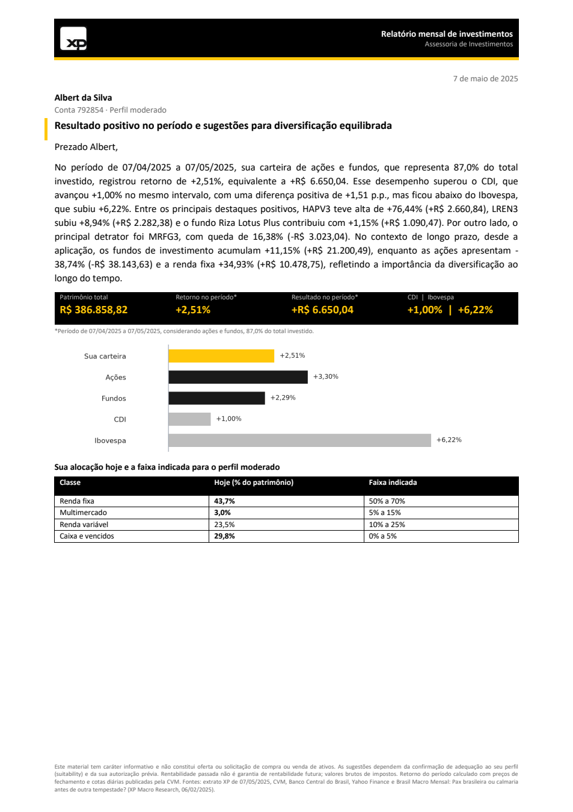
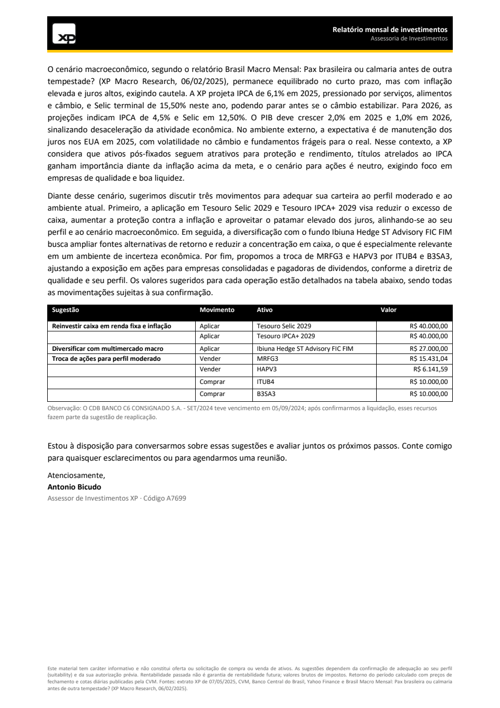
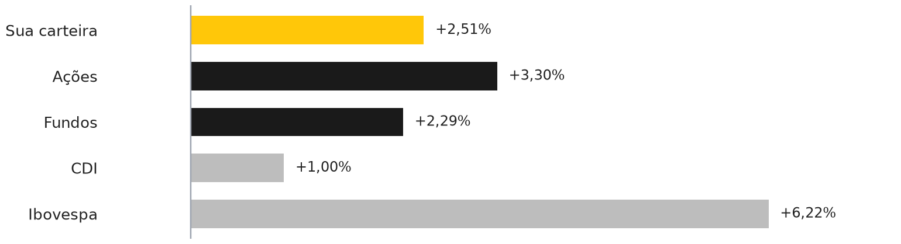

Apresentação
O que foi entregue, os números e a carta final ao lado da v1.
O LLM lê e escreve, o código calcula e nada chega ao cliente sem checagem.
Números da última execução para o Albert, no período de 07/04/2025 a 07/05/2025.
Visão geral
Autor: Adriano da Silva de Carvalho · Repositório: github.com/eu-adrianocarvalho/enter-challenge
O desafio
A XP quer que seus assessores atendam três vezes mais clientes middle market (menos de R$ 1 milhão na XP) sem perder qualidade. A ideia é uma carta mensal gerada por IA que explique a cada cliente:
- como a carteira foi no mês;
- como o cenário de mercado pode afetá-la;
- o que ajustar, respeitando o perfil de risco e as recomendações do research.
Já existia uma primeira versão, um grafo no Rivet e uma carta de exemplo. A tarefa era revisar essa versão, achar os problemas, escolher pelo menos uma das três áreas de melhoria sugeridas e documentar o raciocínio.
As restrições do enunciado:
- carta de no máximo duas páginas, em formato de carta e em português;
- prompts, código e grafo do Rivet em inglês;
- entregar tudo o que for preciso para rodar.
O que foi entregue
| Entregável | Onde |
|---|---|
| Workflow revisado: 6 grafos no Rivet mais o código Python que calcula, valida e formata | rivet/xp_monthly_letter.rivet-project, src/ |
| Nova carta para o Albert (DOCX editável e PDF, 2 páginas) | Output/carta_albert_2025-05-07.pdf |
| Brief do assessor, o documento de revisão que acompanha a carta | Output/brief_assessor_albert_2025-05-07.md |
| Relatório curto (2 páginas): problemas, racional, próximos passos | docs/relatorio.pdf |
| Documentação completa e este site | docs/*.md, docs/index.html |
| Testes automatizados (29), que rodam sem chave de API | src/tests/ |
A ideia central
O LLM lê e escreve; o código calcula; nada chega ao cliente sem checagem.
A v1 deixava o modelo inventar os números: o retorno, a diferença para o benchmark e as projeções macro. Na v2 nenhum número que o cliente vê é produzido por um LLM:
- números: vêm dos dados e são calculados em Python, já formatados em pt-BR;
- LLM: faz o que ele faz bem, ou seja, ler documentos bagunçados (o extrato em PDF, o relatório macro de 11 páginas) e escrever um texto claro;
- checagens: entre uma etapa e outra, travas automáticas conferem o trabalho do LLM;
- assessor: um brief mostra a ele tudo o que merece atenção antes do envio.
Resultado em números (Albert, período de 07/04/2025 a 07/05/2025)
| Indicador | Valor |
|---|---|
| Retorno do período, ações e fundos (87% do investido) | +2,51% (+R$ 6.650,04) |
| CDI no mesmo período / Ibovespa | +1,00% / +6,22% |
| Caixa parado identificado (saldo + CDB vencido) | R$ 115.151,37 (29,8% do patrimônio) |
| Sugestões | R$ 107 mil em Tesouro Selic, Tesouro IPCA+ e multimercado; troca de HAPV3 e MRFG3 por ITUB4 e B3SA3 |
| Alertas de dados para o assessor | 11 |
| Checagens da carta final | reconciliação 28/28, 23 citações do macro conferidas, 26 números conferidos, revisor sem apontamentos |
| Custo | US$ 0,12 por execução completa; cerca de US$ 0,08 por cliente, porque o macro é compartilhado |
Como ler esta documentação
- Diagnóstico da v1: o que estava errado e a prova de cada problema.
- Melhorias implementadas: as três áreas sugeridas, o que foi feito e como.
- Arquitetura e código: diagramas do fluxo, por que Rivet e Python, e por que vários módulos. No site, a seção Grafos do Rivet mostra os 6 grafos da v2 e o grafo da v1 desenhados como no app.
- Dados externos: por que buscar dados na CVM, no Banco Central e no Yahoo.
- Qualidade e travas: como o sistema evita erros, com evidências reais.
- Como usar: instalar, rodar e demonstrar.
- Roteiro da reunião: ordem da apresentação e respostas às perguntas do desafio.
A carta e o brief
À esquerda, a carta que a v2 gerou para o Albert; à direita, a carta da v1, para comparar. Abaixo, o brief que o assessor recebe junto com a carta.


Prezado João,
Segue o relatório mensal referente ao desempenho do seu portfólio e à análise do cenário macroeconômico que pode impactar suas estratégias de investimento. Nosso compromisso é proporcionar uma visão clara e fundamentada, alinhada ao seu perfil de risco e objetivos financeiros.
Seu portfólio apresentou um retorno total de 3,5%, ligeiramente abaixo do benchmark, que registrou uma performance superior em 0,2 pontos percentuais. O destaque positivo veio dos fundos de investimento, que, juntos, alcançaram um retorno de 17,4%, impulsionados pelos resultados expressivos do Riza Lotus Plus Advisory Fund e do Brave I Fund, ambos superando as expectativas. Por outro lado, as ações individuais, como HAPV3 e ARZZ3, apresentaram quedas significativas, impactando negativamente a performance geral do segmento de ações, que atualmente representa 19,32% do portfólio. As alocações em renda fixa mantiveram-se estáveis, com uma contribuição firme do CDB Banco C6, totalizando 12,97% do portfólio. Neste mês, optamos por não realizar realocações significativas, pois continuamos monitorando de perto o desempenho das ações, ao mesmo tempo em que mantemos uma posição robusta em fundos de investimento alternativos, que demonstraram resiliência. Assim, o portfólio permanece bem posicionado, focando no crescimento de longo prazo, mesmo diante da volatilidade recente em algumas classes de ativos.
No que diz respeito ao cenário macroeconômico, a perspectiva para o Brasil revela uma complexa interação entre fatores internos e externos que afetam as estratégias de investimento. O Federal Reserve deve iniciar cortes nas taxas de juros em julho, embora de forma cautelosa, devido à inflação persistente e ao mercado de trabalho apertado. Para o Brasil, as projeções de crescimento do PIB são de 2% para 2025, enquanto as expectativas de inflação permanecem elevadas, com 4,0% para 2025, impulsionadas pelo aumento dos custos de serviços. A taxa Selic do Banco Central deve se estabilizar em 9%, mas há riscos de ajustes para cima, devido a pressões externas e incertezas fiscais internas, incluindo um déficit governamental projetado de 0,7% do PIB em 2024. O real brasileiro continua sob pressão, com previsão de encerrar 2024 a R$/US$ 4,70, refletindo um sentimento cauteloso em meio a tensões geopolíticas e desafios econômicos locais. Diante desse cenário, é fundamental que os investidores permaneçam vigilantes, pois essas dinâmicas podem influenciar significativamente as decisões do portfólio no futuro.
Com base em sua disposição para aceitar riscos moderados e seu horizonte de investimento de médio a longo prazo, recomendamos que você continue diversificando sua carteira, mantendo um equilíbrio entre investimentos estáveis e aqueles com maior potencial de retorno. Essa abordagem permitirá não apenas a preservação do seu poder de compra, mas também o crescimento sustentável do seu patrimônio ao longo do tempo.
Estamos à disposição para discutir mais detalhadamente os resultados e as recomendações, bem como para esclarecer quaisquer dúvidas que você possa ter. Agradecemos pela confiança depositada em nossos serviços e seguimos comprometidos em ajudá-lo a alcançar seus objetivos financeiros.
Atenciosamente,
Antonio Bicudo
Brief do assessor
Brief do assessor: Albert da Silva (conta 792854)
Status: PRONTA PARA REVISÃO DO ASSESSOR
Assessor: Antonio Bicudo (A7699) · Extrato de 07/05/2025
1. Checagens automáticas
- Reconciliação do extrato extraído pelo LLM: 28/28 (OK)
- Citações do relatório macro conferidas no texto original: 23 mantidas, 1 descartadas ['T6']
- Fact-check da carta: 26 números conferidos, 0 sem fonte (OK; 2 versão(ões) geradas)
- Revisão de fidelidade (LLM revisor): 0 apontamento(s) grave(s) na versão final (OK)
- Páginas do PDF: 2
2. Alertas de dados
| Severidade | Código | Alerta |
|---|---|---|
| alta | MATURED_FIXED_INCOME | CDB BANCO C6 CONSIGNADO S.A. - SET/2024 venceu em 05/09/2024, mas o extrato de 07/05/2025 ainda mostra posição de R$ 40.478,75. Confirmar a liquidação antes de reinvestir. |
| alta | IDLE_CASH | R$ 115.151,37 (29,8% do patrimônio) em saldo disponível e renda fixa vencida, sem rendimento. |
| média | LARGE_MONTHLY_MOVE | HAPV3 variou +76,44% no período. Verificar evento corporativo (grupamento, desdobramento, proventos) antes de enviar. |
| média | RENAMED_TICKER | ARZZ3 passou a negociar como AZZA3. Atualizar o cadastro do ativo. |
| média | FUND_REGISTRY_CHANGE | Brave I FIC FIM CP: Convertido de FIC FIM CP em FIC FIDC em 05/11/2024; o extrato ainda usa o nome antigo. |
| média | STALE_QUOTES | 7 fundos com data da cota defasada (a mais antiga, 04/04/2024, está 398 dias antes do extrato). O retorno do mês usa cotas da CVM. |
| média | STALE_RESEARCH | O relatório macro é de 06/02/2025, 90 dias antes do extrato. Em produção, usar a edição mais recente. |
| média | CREDIT_RATING_UNVERIFIED | 43,6% do patrimônio em fundos de crédito privado (Riza Lotus Plus Advisory FIC FIRF REF DI CP, Brave I FIC FIM CP). Confirmar se as carteiras respeitam rating mínimo BB+. |
| info | CONCENTRATION | LREN3 representa 7,2% do patrimônio. |
| info | ESTIMATED_RETURN | Brave I FIC FIM CP: retorno do mês estimado. Estimativa pro rata por dias úteis do informe mensal FIDC da CVM (abr/2025 1,19%; mai/2025 1,29%). |
| info | NO_MONTHLY_DATA | Sem dado mensal confiável para: CDB BANCO C6 CONSIGNADO S.A. - SET/2024. Fora do cálculo do mês. |
3. Rentabilidade no período
Carteira coberta (87,0% do investido): +2,51%, +R$ 6.650,04.
| Ativo | Classe | Retorno | Resultado | Fonte |
|---|---|---|---|---|
| HAPV3 | Ações | +76,44% | +R$ 2.660,84 | preços de fechamento (CSV) |
| LREN3 | Ações | +8,94% | +R$ 2.282,38 | preços de fechamento (CSV) |
| Riza Lotus Plus Advisory FIC FIRF REF DI CP | Fundos de investimento | +1,15% | +R$ 1.090,47 | Cota diária CVM (inf_diario_fi) |
| Truxt Long Bias Advisory FIC FIM | Fundos de investimento | +9,16% | +R$ 1.050,73 | Cota diária CVM (inf_diario_fi) |
| Constellation Institucional Advisory FIC FIA | Fundos de investimento | +11,91% | +R$ 902,18 | Cota diária CVM (inf_diario_fi) |
| Brave I FIC FIM CP | Fundos de investimento | +1,14% | +R$ 816,38 | Estimativa pro rata por dias úteis do informe mensal FIDC da CVM (abr/2025 1,19%; mai/2025 1,29%) |
| STK Long Biased FIC FIA | Fundos de investimento | +8,80% | +R$ 788,29 | Cota diária CVM (inf_diario_fi) |
| Ibiuna Hedge ST Advisory FIC FIM | Fundos de investimento | +0,63% | +R$ 73,08 | Cota diária CVM (inf_diario_fi) |
| ARZZ3 | Ações | +0,05% | +R$ 5,79 | preços de fechamento (CSV) |
| Trend Investback FIC FIRF Simples | Fundos de investimento | +0,97% | +R$ 2,95 | Cota diária CVM (inf_diario_fi) |
| MRFG3 | Ações | -16,38% | -R$ 3.023,04 | preços de fechamento (CSV) |
4. Alocação vs. perfil
| Bloco | Atual | Banda do perfil | Situação |
|---|---|---|---|
| Renda fixa | R$ 169.051,60 (43,7%) | 50% a 70% | abaixo |
| Multimercado | R$ 11.601,02 (3,0%) | 5% a 15% | abaixo |
| Renda variável | R$ 91.054,83 (23,5%) | 10% a 25% | dentro |
| Caixa e vencidos | R$ 115.151,37 (29,8%) | 0% a 5% | acima |
5. Recomendações propostas (aprovar antes do envio)
1. Reinvestir caixa em renda fixa e inflação. Aplicação em Tesouro Selic 2029 e Tesouro IPCA+ 2029 reduz caixa excessivo, aumenta proteção contra inflação e aproveita juros elevados, alinhando a carteira ao perfil moderado e ao cenário macroeconômico atual.
- Aplicar Tesouro Selic 2029: R$ 40.000,00. Regra: Caixa e renda fixa vencida acima da banda; leva Renda fixa para o alvo do perfil.
- Aplicar Tesouro IPCA+ 2029: R$ 40.000,00. Regra: Caixa e renda fixa vencida acima da banda; leva Renda fixa para o alvo do perfil.
-
Evidências do research:
- I1, leitura do modelo apoiada em P1, T2, T1: Com Selic elevada e inflação pressionada, ativos pós-fixados continuam atrativos para proteção e rendimento.
- I3, leitura do modelo apoiada em P3, T1, R3: Inflação acima da meta e risco de persistência tornam títulos atrelados ao IPCA importantes na carteira. 2. Diversificar com multimercado macro. Aporte no Ibiuna Hedge ST Advisory FIC FIM amplia diversificação, reduz concentração em caixa e busca fontes alternativas de retorno, adequado ao perfil moderado e ao ambiente de incerteza econômica.
-
Aplicar Ibiuna Hedge ST Advisory FIC FIM: R$ 27.000,00. Regra: Caixa e renda fixa vencida acima da banda; leva Multimercado para o alvo do perfil.
-
Evidências do research:
- T3, citação do relatório: "Projetamos avanço de 2,0% para o PIB de 2025, após aumento de 3,6% em 2024. A atividade deve continuar a arrefecer em 2026 – prevemos alta de 1,0%."
- T4, citação do relatório: "Não contemplamos mais cortes de juros nos EUA em nosso cenário base." 3. Troca de ações para perfil moderado. Venda de MRFG3 e HAPV3, substituindo por ITUB4 e B3SA3, ajusta a carteira para empresas consolidadas e pagadoras de dividendos, conforme perfil e diretriz de qualidade.
-
Vender MRFG3: R$ 15.431,04. Regra: Ação fora do perfil moderado (não é pagadora consistente de dividendos).
- Vender HAPV3: R$ 6.141,59. Regra: Ação fora do perfil moderado (não é pagadora consistente de dividendos).
- Comprar ITUB4: R$ 10.000,00. Regra: Reposição com os recursos das vendas, sem alterar o peso de renda variável.
- Comprar B3SA3: R$ 10.000,00. Regra: Reposição com os recursos das vendas, sem alterar o peso de renda variável.
- Evidências do research:
- I4, leitura do modelo apoiada em P5, T3, T2: Desaceleração do PIB e juros altos limitam potencial das ações, mas valuations já refletem parte do cenário.
- IR: Vendas de R$ 21.572,63 superam a isenção mensal de R$ 20.000,00. Resultado realizado: MRFG3 +R$ 4.677,44, HAPV3 -R$ 18.022,55. Saldo -R$ 13.345,11, sem IR a pagar; prejuízo de R$ 13.345,11 a compensar no futuro. Estimativa; confirmar com a área tributária.
- Nota do modelo: Deixei de fora prefixados por cenário macro desfavorável.
- Nota do modelo: Confirmar se o cliente deseja manter exposição mínima em multimercado.
- Nota do modelo: Ajuste em renda variável não altera o peso da classe, apenas a qualidade.
- Nota do modelo: Reforçar importância do acompanhamento periódico.
6. Custo e rastreabilidade
| Grafo | Modelo | Tokens (in/out) | Custo (US$) | Cache |
|---|---|---|---|---|
| extract_portfolio | gpt-4.1 | 1893/1947 | 0.0194 | sim |
| extract_profile | gpt-4.1 | 1006/284 | 0.0043 | sim |
| macro_outlook | gpt-4.1 | 13921/1876 | 0.0428 | sim |
| advise | gpt-4.1 | 3807/352 | 0.0104 | sim |
| write_letter | gpt-4.1 | 3332/782 | 0.0129 | sim |
| review_letter | gpt-4.1 | 3759/123 | 0.0085 | sim |
| write_letter | gpt-4.1 | 3438/823 | 0.0135 | sim |
| review_letter | gpt-4.1 | 3800/4 | 0.0076 | sim |
| Total | 0.1194 |
7. Arquivos gerados
- carta_albert_2025-05-07.docx
- carta_albert_2025-05-07.pdf
- grafico_albert_2025-05-07.png
- facts_albert_2025-05-07.json
- run_log_albert_2025-05-07.json
O trabalho
O diagnóstico da v1, as melhorias, a arquitetura, os dados externos e as travas.
Diagnóstico da primeira versão
A v1 é o arquivo enter_challenge.rivet-project (mantido intacto) e a carta Output/output_letter.docx. Os problemas se dividem em quatro grupos.
A. Bugs no grafo do Rivet
flowchart LR F1["Read File · portfolio"] --> P1["Prompt · resumo da carteira"] --> C1["Chat"] F2["Read File · risk profile"] --> P2["Prompt · resumo do perfil"] --> C2["Chat"] F3["Read File · macro"] --> P3["Prompt · resumo macro"] --> C3["Chat"] C1 -- "entra em risk_profile ✗" --> L["Prompt final · carta<br/>'Prezado João' fixo"] C2 -- "entra em macro_outlook ✗" --> L C3 -- "entra em portfolio_results ✗" --> L L --> C4["Chat · carta"] --> X["sem Graph Output<br/>carta copiada à mão"] classDef rivet fill:#ffae35,stroke:#000,color:#000 classDef py fill:#f3f3f3,stroke:#000,color:#000 classDef io fill:#171717,stroke:#171717,color:#fff classDef bad fill:#fde2e2,stroke:#d62828,color:#000 class F1,F2,F3 bad class L,X bad class P1,P2,P3,C1,C2,C3,C4 py linkStyle 6,7,8 stroke:#d62828,stroke-width:2px
Em vermelho, as ligações trocadas e os nós com problema: caminhos absolutos de outra máquina nos Read File, cliente fixo no prompt final e nenhuma saída do grafo. O grafo completo, como está no arquivo, aparece em O trabalho › Grafos do Rivet (aba v1).
| Problema | Evidência | Efeito |
|---|---|---|
| Entradas trocadas no prompt final | A saída do resumo da carteira vai para a porta risk_profile; a do perfil, para macro_outlook; a do macro, para portfolio_results. |
Os três blocos chegam ao modelo com o rótulo errado, e a estrutura da carta depende de o modelo "adivinhar". |
| Cliente errado | O prompt final tem fixo: "Prezado João, segue o relatório mensal…". | A carta saiu para João; o cliente é Albert da Silva. |
| Arquivos lidos de caminhos absolutos de outra máquina | C:\Users\blope\Downloads\XP Challenge v2\Input\..., com errorOnMissingFile: false. |
Se o arquivo não existe, o prompt recebe texto vazio sem erro, e o modelo inventa o conteúdo. Os nomes nem batem (Albert's × Albert_s). |
| Sem saída do grafo | O último Chat não se conecta a nenhum Graph Output. | A carta foi copiada à mão para o Word. |
| Parâmetros inadequados | temperature 0.5, maxTokens 1024, gpt-4o-mini em tudo. |
Temperatura alta para texto factual; o limite de tokens pode cortar uma carta de 500 palavras. |
B. A carta afirma coisas falsas
| Afirmação da v1 | O que os dados dizem |
|---|---|
| "retorno total de 3,5%, ligeiramente abaixo do benchmark… 0,2 pontos percentuais" | Nenhum input traz retorno mensal nem benchmark. Os números foram inventados, seguindo o exemplo do prompt ("1.2% in May, outperforming its benchmark by 0.4 pp"). |
| "fundos… alcançaram um retorno de 17,4%" | Número inexistente. Os fundos só trazem rentabilidade desde a aplicação. |
| "Fed deve iniciar cortes em julho… Selic deve se estabilizar em 9%… inflação de 4,0% para 2025… R$/US$ 4,70" | O relatório da XP diz: sem cortes do Fed em 2025, Selic terminal de 15,50%, IPCA de 6,1% e câmbio de 6,20. |
| "HAPV3 e ARZZ3 apresentaram quedas significativas" | Isso é a rentabilidade desde a compra. No mês, HAPV3 subiu 76%, e quem caiu foi MRFG3 (−16%). |
| "Neste mês, optamos por não realizar realocações significativas" | Ação que não aconteceu, copiada do exemplo do prompt. |
| "contribuição firme do CDB Banco C6" | O CDB venceu em 05/09/2024, oito meses antes do extrato. |
| "recomendamos que você continue diversificando" | Genérico: nenhum ativo, nenhum valor, nenhuma ligação com o research ou com o perfil. |
C. Problemas nos dados que ninguém sinalizou
- Caixa parado: R$ 74.672,62 em saldo disponível mais o CDB vencido (R$ 40.478,75) somam 29,8% do patrimônio sem render, com a Selic caminhando para 15,50%.
- Datas que não conversam: cotas dos fundos de 04/04/2024, extrato de 07/05/2025, relatório macro de 06/02/2025.
- Ativos desatualizados: ARZZ3 virou AZZA3 (fusão Arezzo + Soma, 2024). O "Brave I FIC FIM CP" virou "Brave 90 FIC FIDC" em 05/11/2024, e como FIDC não publica cota diária.
- Carteira fora do perfil moderado: HAPV3 e MRFG3 não são pagadoras consistentes de dividendos, como o perfil pede. 43,6% do patrimônio está em crédito privado, sem checagem do rating mínimo BB+ que o perfil exige.
- Planilha de rentabilidade quebrada (
profitability_calc_wip.xlsx): o formato regional transformou números em datas ("22.9" virou 22/set, "13.5" virou 13/mai). A fórmula só existe em 4 linhas, não pondera pelas posições e não tem benchmark. O CSV equivalente tem os valores corretos e mais 8 ações que o Albert não tem.
D. Problemas de arquitetura
- Macro refeito para cada cliente: o mesmo relatório é resumido de novo a cada carta. Isso gera custo repetido e dá a cada cliente uma leitura diferente do mesmo cenário.
- Números em texto livre: os números passam por dois LLMs como texto, e cada passagem é uma chance de erro.
- Nenhuma validação: a suíte de testes do Rivet (
testSuites: []) está vazia, e não há nenhuma checagem entre as etapas.
Melhorias implementadas
O desafio sugeria três áreas e pedia pelo menos uma. As três foram implementadas, com a rentabilidade no centro, porque é dela que vêm os números que a v1 inventava. Cada área abaixo segue a mesma ordem: o pedido do desafio, o que foi feito, como foi implementado e o resultado para o Albert.
1. Cálculo de rentabilidade (Portfolio Profitability Calculation)
Pedido: calcular o retorno do último mês e ir além da conta básica, com dados externos, contexto ou elementos visuais.
O que foi feito:
- Retorno do período por ativo, por classe e da carteira, com o resultado em reais e a contribuição de cada ativo em pontos percentuais.
- Ações: quantidade (do extrato) × preço atual e do mês anterior (do CSV). O cálculo é exato; o teste confere +3,30% e +R$ 1.925,97.
- Fundos: o extrato só traz a rentabilidade desde a aplicação, e com cotas de abril de 2024. O retorno do mês vem das cotas diárias oficiais da CVM, na mesma janela das ações. Seis dos sete fundos têm cota diária. O Brave virou FIDC e não tem, então o retorno dele é uma estimativa pro rata do informe mensal da CVM, marcada como estimativa no brief.
- CDB C6: venceu em 2024, então fica fora do cálculo do mês e vira um alerta.
- Benchmarks da mesma janela: CDI (+1,00%) e IPCA em 12 meses (5,48%) do Banco Central, e Ibovespa (+6,22%) do Yahoo Finance.
- Contexto de longo prazo: resultado desde a aplicação por classe. Ações −38,74%, fundos +11,15%, renda fixa +34,93%.
- Visual: caixas de indicadores, um gráfico da carteira contra CDI e Ibovespa e a tabela "sua alocação × faixa do perfil".
Como:
returns.pyfaz os cálculos;funds.pybusca as cotas na CVM;benchmarks.pybusca CDI, IPCA e Ibovespa;charts.pydesenha o gráfico;facts.pyformata tudo em pt-BR.
Nenhum desses números passa por um LLM.
Resultado: a carteira de ações e fundos (87% do investido) rendeu +2,51% (+R$ 6.650,04). Isso é acima do CDI (+1,51 p.p.) e abaixo do Ibovespa, que se recuperou forte depois da queda de 7 de abril. Os destaques foram HAPV3 (+76,44%) e LREN3 (+8,94%); o detrator foi MRFG3 (−16,38%).
2. Lógica de compra e venda (Buy/Sell Recommendation Logic)
Pedido: um módulo que recomende quais ativos o cliente deveria considerar comprar ou vender.
O que foi feito: um motor em duas camadas.
- Regras em Python (
suitability.py) decidem o quê e quanto.- Classificam cada posição num bloco (renda fixa, multimercado, renda variável, caixa) e comparam com as faixas do perfil moderado (
config/allocation_moderate.yaml). - O caixa acima do alvo é distribuído nas classes abaixo do alvo, com arredondamento em R$ 1.000.
- Ações fora do perfil viram candidatas à troca por pagadoras de dividendos (
config/research_shelf.yaml). - As regras também estimam o IR da venda: isenção de R$ 20 mil por mês e compensação entre prejuízo e ganho.
- Classificam cada posição num bloco (renda fixa, multimercado, renda variável, caixa) e comparam com as faixas do perfil moderado (
- O LLM (grafo
advise) escolhe e explica. Ele recebe os candidatos, o perfil e o resumo macro, monta 2 ou 3 recomendações e justifica cada uma citando os IDs das evidências do relatório (P1, T2…). Ele não pode criar ativo nem mudar valor: ids desconhecidos são descartados pelo código.
flowchart TD
A["alocação atual por bloco<br/>CDB vencido conta como caixa"] --> B{"compara com as faixas<br/>do perfil moderado"}
B --> C["caixa acima do alvo<br/>R$ 107 mil a reaplicar"]
B --> D["blocos abaixo do alvo<br/>renda fixa e multimercado"]
C --> E["candidatos com valor<br/>Tesouro Selic · Tesouro IPCA+ · Ibiuna"]
D --> E
F["ações fora do perfil<br/>HAPV3 · MRFG3"] --> G["candidatos de troca<br/>ITUB4 · B3SA3 + estimativa de IR"]
E --> H(["Rivet · advise<br/>escolhe e justifica com evidências"])
G --> H
H --> I["ids desconhecidos descartados<br/>valores continuam os do código"]
I --> J["FACTS → texto da carta<br/>tabela de sugestões gerada pelo código"]
classDef rivet fill:#ffae35,stroke:#000,color:#000
classDef py fill:#f3f3f3,stroke:#000,color:#000
classDef io fill:#171717,stroke:#171717,color:#fff
classDef bad fill:#fde2e2,stroke:#d62828,color:#000
class H rivet
class A,B,C,D,E,F,G,I,J py
Resultado para o Albert:
| Sugestão | Movimento | Valor |
|---|---|---|
| Reinvestir o caixa em renda fixa e inflação | Aplicar em Tesouro Selic 2029 | R$ 40.000,00 |
| Aplicar em Tesouro IPCA+ 2029 | R$ 40.000,00 | |
| Diversificar com multimercado | Aplicar em Ibiuna Hedge ST | R$ 27.000,00 |
| Trocar ações fora do perfil | Vender MRFG3 e HAPV3; comprar ITUB4 e B3SA3 | R$ 15.431,04 + R$ 6.141,59 → R$ 10.000,00 + R$ 10.000,00 |
O brief do assessor também mostra a estimativa de IR. As vendas somam R$ 21.572,63 e passam da isenção, mas o prejuízo de HAPV3 (−R$ 18.022,55) supera o ganho de MRFG3 (+R$ 4.677,44). Não há IR a pagar, e sobra um prejuízo de R$ 13.345,11 para compensar no futuro.
Limitação assumida: as faixas do perfil e a lista de produtos são ilustrativas e estão marcadas assim nos arquivos. Em produção, viriam da carteira recomendada oficial do XP Research.
3. Formatação automática (Automated Formatting)
Pedido: gerar programaticamente uma carta com aparência profissional, pronta para enviar, sem edição manual.
O que foi feito: render.py monta o DOCX inteiro por código (python-docx):
- cabeçalho, data, destinatário e assunto;
- o texto da carta, em parágrafos;
- as caixas de indicadores e o gráfico;
- a tabela de alocação e a tabela de sugestões;
- a observação operacional e a assinatura do assessor;
- o disclaimer de suitability no rodapé.
O PDF é gerado abrindo uma instância separada do Word. Em seguida o código conta as páginas; se passar de duas, a carta é reescrita com um limite menor de palavras.
Por que DOCX e PDF: o PDF vai para o cliente. O DOCX fica com o assessor, que pode ajustar antes do envio: é o humano no loop.
Outras melhorias que foram necessárias
- Extração do extrato com validação: o PDF vira JSON via LLM, e o código confere se tudo fecha.
- Macro calculado uma vez por mês, com cada afirmação ancorada numa citação literal do relatório.
- Fact-check numérico da carta e um revisor de fidelidade (6º grafo), com até três versões.
- Frases sensíveis escritas pelo código, como a nota sobre a liquidação do CDB.
- Brief do assessor com 11 alertas de dados, evidências e custo.
- Cache e reprodutibilidade: a mesma entrada gera a mesma carta sem gastar tokens de novo.
O detalhe de cada uma está em Qualidade e travas.
Arquitetura e código
O fluxo
flowchart TD
subgraph IN["Entradas do desafio"]
A1["Extrato (PDF)"]
A2["Perfil de risco (TXT)"]
A3["Relatório macro XP (PDF)"]
A4["Preços das ações (CSV)"]
end
subgraph AN["1 · analyze"]
B1["pdf_text<br/>PDF → texto"]
B2(["Rivet · extract_portfolio"])
B3["portfolio.reconcile<br/>28 checagens"]
B4(["Rivet · extract_profile"])
B5(["Rivet · macro_outlook"])
B6["grounding<br/>citações conferidas"]
B7["funds + benchmarks<br/>CVM · BCB · Yahoo"]
B8["returns<br/>retorno do período"]
B9["data_quality<br/>11 alertas"]
B10["suitability<br/>candidatos + IR"]
end
subgraph CO["2 · compose"]
C1(["Rivet · advise"])
C2["facts<br/>FACTS em pt-BR"]
end
subgraph PU["3 · publish"]
D1(["Rivet · write_letter"])
D2["factcheck<br/>números"]
D3(["Rivet · review_letter"])
D4["render<br/>DOCX + PDF ≤ 2 páginas"]
D5["brief do assessor"]
end
A1 --> B1
A3 --> B1
B1 --> B2 --> B3
B1 --> B5 --> B6
A2 --> B4
A4 --> B8
B3 --> B8
B7 --> B8
B8 --> B9
B3 --> B10
B4 --> B10
B10 --> C1
B6 --> C1
C1 --> C2
B8 --> C2
C2 --> D1 --> D2 --> D3
D3 -- "problemas viram correções (até 3 versões)" --> D1
D3 --> D4 --> D5
B9 --> D5
classDef rivet fill:#ffae35,stroke:#000,color:#000
classDef py fill:#f3f3f3,stroke:#000,color:#000
classDef io fill:#171717,stroke:#171717,color:#fff
classDef bad fill:#fde2e2,stroke:#d62828,color:#000
class B2,B4,B5,C1,D1,D3 rivet
class B1,B3,B6,B7,B8,B9,B10,C2,D2,D4,D5 py
class A1,A2,A3,A4 io
Em laranja, os grafos do Rivet (LLM); em cinza, o código Python determinístico; em preto, as entradas.
Onde cada peça roda
flowchart LR
subgraph HOST["Máquina do assessor ou servidor"]
PY["Python · src/xp_letter"]
NODE["Node.js · rivet-cli 1.25"]
FILES[("config/ · data/ · Output/")]
end
OAI["OpenAI API · gpt-4.1"]
CVM["CVM · dados abertos"]
BCB["Banco Central · SGS"]
YH["Yahoo Finance"]
WORD["Word ou LibreOffice"]
PY <--> NODE
NODE --> OAI
PY --> CVM
PY --> BCB
PY --> YH
PY <--> FILES
PY --> WORD
classDef rivet fill:#ffae35,stroke:#000,color:#000
classDef py fill:#f3f3f3,stroke:#000,color:#000
classDef io fill:#171717,stroke:#171717,color:#fff
classDef bad fill:#fde2e2,stroke:#d62828,color:#000
class NODE,OAI rivet
class PY,FILES,WORD py
class CVM,BCB,YH io
Por que Rivet e Python juntos
O Rivet ficou com as etapas de LLM, porque é a ferramenta do desafio e da equipe. Os seis grafos seguem o mesmo desenho, fácil de ler no app: entradas → prompt → Chat da OpenAI com JSON schema estrito → Extract JSON → saídas result e usage. Os prompts e schemas ficam em arquivos de texto revisáveis (rivet/prompts, rivet/schemas), e src/build_rivet.py monta o projeto a partir deles.
O Python ficou com o que precisa estar certo sempre: contas, regras, checagens e formatação. Isso até daria para fazer em nodes de código do Rivet, mas em Python é testável (29 testes rodando em 5 segundos, sem API), versionável e mais fácil de manter.
A ligação entre os dois é o rivet_runner.py, que chama cada grafo pelo rivet-cli oficial, passa os inputs em JSON e lê o resultado. Cada resposta fica guardada em data/llm/, identificada por um hash do prompt, do schema, do modelo e dos inputs.
sequenceDiagram
participant P as pipeline.py
participant R as rivet_runner.py
participant C as data/llm
participant N as rivet-cli (Node.js)
participant O as OpenAI
P->>R: run_graph("write_letter", inputs)
R->>C: já existe resposta para hash(prompt + schema + modelo + inputs)?
alt resposta guardada
C-->>R: resultado, tokens e custo
else primeira execução
R->>N: rivet run projeto grafo --inputs-stdin
N->>O: Chat Completions com JSON schema estrito
O-->>N: JSON + usage
N-->>R: saídas result e usage
R->>C: grava a resposta
end
R-->>P: GraphRun(result, tokens, custo em US$)
Por que vários arquivos Python
Cada módulo tem uma responsabilidade. Isso permite testar cada peça isoladamente e trocar uma sem mexer nas outras. Por exemplo, a fonte de cotas pode trocar de CVM para ANBIMA mexendo só em funds.py. Também facilita a revisão: quem quer auditar o cálculo lê só returns.py.
| Módulo | Faz | Por que separado |
|---|---|---|
config.py |
Lê os YAML e resolve caminhos | Um único ponto para mudar cliente, período, modelos e limites |
pdf_text.py |
PDF → texto | A extração de PDF é trocável (por exemplo, pela API de posições da XP) |
portfolio.py |
Modelo do extrato e reconciliação | A trava que decide se o dado extraído pelo LLM é confiável |
prices.py |
Lê o CSV de preços | A fonte de preços é trocável |
funds.py |
Cotas da CVM → retorno dos fundos | Dependência externa isolada, com cache |
benchmarks.py |
CDI, IPCA, Ibovespa | Dependência externa isolada, com cache |
returns.py |
Rentabilidade | O cálculo central, 100% testado |
data_quality.py |
Alertas de dados | Regras de negócio que crescem com o tempo |
suitability.py |
Alocação × perfil, candidatos, IR | A lógica de recomendação, auditável |
grounding.py |
Confere as citações do macro | Trava contra alucinação no macro |
facts.py |
Monta o bloco FACTS | O único lugar de onde a carta tira números |
factcheck.py |
Confere os números da carta | Trava determinística contra números inventados |
formatting.py |
Formatação pt-BR | Garante um formato único para cada número (o fact-check depende disso) |
rivet_project.py |
Gera o .rivet-project |
O grafo nasce dos prompts e schemas versionados |
rivet_runner.py |
Executa grafos, guarda respostas, calcula custo | A ponte com o Rivet |
charts.py |
Gráfico | Visual separado do texto |
render.py |
DOCX e PDF | A formatação automática |
brief.py |
Brief do assessor | O documento de revisão humana |
pipeline.py |
Orquestra as três etapas (analyze, compose, publish) | Mostra o fluxo inteiro em um arquivo curto |
Quem chama quem:
flowchart LR run["run.py"] --> pipe["pipeline.py"] cfg["config.py"] -.-> pipe pipe --> rr["rivet_runner.py"] --> rp["rivet_project.py"] pipe --> pt["pdf_text.py"] pipe --> pf["portfolio.py"] pipe --> pr["prices.py"] pipe --> fu["funds.py"] pipe --> bm["benchmarks.py"] pipe --> rt["returns.py"] pipe --> dq["data_quality.py"] pipe --> st["suitability.py"] pipe --> gr["grounding.py"] pipe --> fa["facts.py"] pipe --> fc["factcheck.py"] pipe --> ch["charts.py"] pipe --> rd["render.py"] pipe --> br["brief.py"] gr --> fc fa --> fm["formatting.py"] rd --> fm classDef rivet fill:#ffae35,stroke:#000,color:#000 classDef py fill:#f3f3f3,stroke:#000,color:#000 classDef io fill:#171717,stroke:#171717,color:#fff classDef bad fill:#fde2e2,stroke:#d62828,color:#000 class rr,rp rivet class run,pipe io
Os grafos do Rivet
flowchart LR I1[/"Graph Input · dados"/] --> P["Prompt (user)<br/>rivet/prompts/*.user.md"] I2[/"Graph Input · model"/] --> C S["Text · system prompt<br/>rivet/prompts/*.system.md"] --> C["Chat · OpenAI<br/>json_schema strict"] O["Object · response schema<br/>rivet/schemas/*.json"] --> C P --> C C -- response --> E["Extract JSON"] --> R[/"Graph Output · result"/] C -- usage --> U[/"Graph Output · usage"/] classDef rivet fill:#ffae35,stroke:#000,color:#000 classDef py fill:#f3f3f3,stroke:#000,color:#000 classDef io fill:#171717,stroke:#171717,color:#fff classDef bad fill:#fde2e2,stroke:#d62828,color:#000 class C rivet class P,S,O,E py class I1,I2,R,U io
O mesmo formato vale para os seis grafos; muda só o prompt, o schema e as entradas. Na seção Grafos do Rivet, logo abaixo, cada um aparece desenhado como no app.
| Grafo | Modelo | Entrada | Saída |
|---|---|---|---|
extract_portfolio |
gpt-4.1 | texto do extrato (+ correções) | JSON do extrato (12 posições, subtotais, totais) |
extract_profile |
gpt-4.1 | perfil de risco | perfil, horizonte, tolerância, produtos elegíveis, rating mínimo |
macro_outlook |
gpt-4.1 | relatório macro | projeções, temas, riscos (cada um com citação) e implicações |
advise |
gpt-4.1 | perfil, alocação, candidatos, macro | 2–3 recomendações com justificativa e IDs de evidência |
write_letter |
gpt-4.1 | FACTS, limite de palavras, correções | assunto, saudação e quatro parágrafos |
review_letter |
gpt-4.1 | FACTS e carta | apontamentos graves e leves |
Por que gpt-4.1 e não gpt-5: o Rivet 1.25 só trata como "modelo de raciocínio" os nomes que começam com o1, o3 ou o4. Com um gpt-5, ele enviaria temperature e max_tokens, que a API rejeita.
Por que não o gpt-4.1-mini na extração: ele trocou dois dígitos de um subtotal e repetiu o erro mesmo recebendo o aviso (a prova está em data/evidence/).
Estrutura do repositório
config/ cliente, período, modelos, preços por token, faixas do perfil, produtos, fundos (CNPJ)
data/ llm/ (respostas guardadas), market/ (CVM e benchmarks), rivet_inputs/, evidence/
docs/ esta documentação, o relatório de 2 páginas e o site index.html
Input/ arquivos do desafio (intactos)
Output/ carta (DOCX/PDF), gráfico, brief, FACTS e log de custo; a carta da v1 continua aqui
rivet/ prompts/, schemas/ e o projeto xp_monthly_letter.rivet-project
src/ xp_letter/ (pacote), docsite/ (visualizador do Rivet), tests/, run.py, build_rivet.py,
build_docs.py, build_report.py
assets/xp/ logo usado no cabeçalho da carta (caminho em config/settings.yaml → brand.logo)
enter_challenge.rivet-project grafo da v1, intacto para comparação
Grafos do Rivet
Os grafos como estão nos arquivos .rivet-project, desenhados com as posições do app do Rivet. Clique num node para ver o prompt, o schema ou a configuração. A aba v1 mostra o grafo original: as ligações trocadas e os nodes com problema aparecem em vermelho.
Dados externos: por que e de onde
O problema: os inputs não bastam para calcular o mês
O desafio pede o retorno do último mês, mas os arquivos entregues só permitem calcular isso para as ações:
| Classe | O que os inputs trazem | Dá para calcular o mês? |
|---|---|---|
| Ações (19% do investido) | Quantidade no extrato; preço atual e do mês anterior no CSV | Sim |
| Fundos (68%) | Só a rentabilidade desde a aplicação, com cota de 04/04/2024 | Não: falta a cota do início e do fim do mês |
| Renda fixa (13%) | Um CDB vencido em 05/09/2024 | Não se aplica |
| Benchmark | Nada | Não |
Sem dados externos, a carta só poderia falar do mês de 19% da carteira e não teria com o que comparar. Foi exatamente essa lacuna que a v1 preencheu inventando números. O próprio enunciado sugere "use external data sources".
As fontes usadas
flowchart LR
CSV["CSV do desafio<br/>preço atual e anterior"] --> PR["prices.py"] --> ACO["Ações +3,30%"]
CVM["CVM · inf_diario_fi<br/>cotas diárias"] --> FU["funds.py"] --> FUN["Fundos +2,29%"]
FIDC["CVM · informe mensal FIDC"] -. "estimativa do Brave" .-> FU
BCB["Banco Central · SGS<br/>séries 12 e 433"] --> BM["benchmarks.py"]
YH["Yahoo Finance · ^BVSP"] --> BM
BM --> BEN["CDI +1,00% · IPCA 12m 5,48%<br/>Ibovespa +6,22%"]
ACO --> RT["returns.py<br/>carteira +2,51%"]
FUN --> RT
RT --> FACTS["FACTS da carta"]
BEN --> FACTS
FU -. grava .-> CACHE[("data/market/")]
BM -. grava .-> CACHE
classDef rivet fill:#ffae35,stroke:#000,color:#000
classDef py fill:#f3f3f3,stroke:#000,color:#000
classDef io fill:#171717,stroke:#171717,color:#fff
classDef bad fill:#fde2e2,stroke:#d62828,color:#000
class CSV,CVM,FIDC,BCB,YH io
class PR,FU,BM,RT py
class ACO,FUN,BEN,FACTS,CACHE py
| Fonte | O que trouxe | Por que essa fonte |
|---|---|---|
CVM, dados abertos (dados.cvm.gov.br, informe diário dos fundos) |
Cota diária de cada fundo em 07/04/2025 e em 07/05/2025, e portanto o retorno do mês de 6 dos 7 fundos | É a fonte oficial e pública das cotas de fundos no Brasil, publicada pelo regulador |
Banco Central, SGS (api.bcb.gov.br) |
CDI diário (série 12), capitalizado no período; IPCA mensal (série 433) para o acumulado em 12 meses | É a fonte oficial do CDI e do IPCA, com API pública e gratuita |
Yahoo Finance (^BVSP) |
Fechamento do Ibovespa nas duas datas | O Banco Central parou de publicar o Ibovespa em 2019 (série 7). A B3, dona do índice, não oferece API gratuita de histórico, e o Yahoo é a fonte gratuita prática |
Sobre a B3: nenhum dado foi buscado diretamente na B3. O Ibovespa é um índice da B3, mas o histórico veio do Yahoo Finance pelo motivo acima. Em produção, a XP usaria o próprio feed de mercado (B3 ou Bloomberg) no lugar do Yahoo.
Como os fundos foram identificados
Os nomes do extrato não batem com o cadastro da CVM. A resolução CVM 175 renomeou quase todos os fundos, e um deles mudou de tipo. Uma busca automática por nome achou 4 dos 7, e para o Riza achou o fundo errado (o master, não o fundo que o cliente tem). Por isso o mapa nome → CNPJ foi conferido à mão e está em config/fund_registry.yaml.
| Fundo no extrato | CNPJ | Retorno no período |
|---|---|---|
| Riza Lotus Plus Advisory FIC FIRF REF DI CP | 43.917.493/0001-31 | +1,15% |
| Brave I FIC FIM CP | 35.726.300/0001-37 | +1,14% (estimativa) |
| Trend Investback FIC FIRF Simples | 37.910.132/0001-60 | +0,97% |
| Truxt Long Bias Advisory FIC FIM | 30.830.162/0001-18 | +9,16% |
| STK Long Biased FIC FIA | 12.282.747/0001-69 | +8,80% |
| Constellation Institucional Advisory FIC FIA | 34.462.109/0001-62 | +11,91% |
| Ibiuna Hedge ST Advisory FIC FIM | 30.493.349/0001-73 | +0,63% |
O Brave I virou "Brave 90 FIC FIDC" em 05/11/2024, e FIDCs não publicam cota diária. O retorno usado é uma estimativa pro rata por dias úteis do informe mensal do FIDC (abril 1,19%; maio 1,29%). A carta usa esse número, e o brief marca o fundo como estimado.
Reprodutibilidade
- Tudo o que foi baixado fica em
data/market/, inclusive o recorte das cotas da CVM (cvm_inf_diario_subset.csv), que prova de onde veio cada retorno. A execução seguinte não depende de internet e dá o mesmo número. --refresh-marketbaixa tudo de novo. Se a rede falhar, o sistema volta ao arquivo salvo; se não houver arquivo, a carta sai sem a comparação com benchmarks, em vez de inventar.
A janela do período
O preço "atual" do CSV é o mesmo do extrato (07/05/2025), e o "do mês anterior" corresponde a um mês antes. Por isso a janela é de 07/04/2025 a 07/05/2025 para tudo: ações, fundos, CDI e Ibovespa. Comparar janelas diferentes daria números que não conversam entre si. A janela está em config/settings.yaml, e a carta a cita pelas datas, não pelo nome do mês.
Qualidade e travas
A pergunta que guiou a v2 foi: "se o LLM errar aqui, quem percebe?". Cada trava abaixo responde isso para uma etapa. Todas surgiram ou foram calibradas com erros que apareceram de verdade nas execuções com a API. As provas estão em data/evidence/.
1. Reconciliação do extrato
Etapa: o LLM transcreve o PDF do extrato para JSON (extract_portfolio).
Trava: portfolio.reconcile faz 28 checagens.
- investido + saldo = patrimônio;
- soma das classes = investido;
- soma das posições = subtotal de cada classe;
- quantidade × último preço = posição;
- aplicado × (1 + rentabilidade) = posição;
- % de alocação de cada posição.
Se alguma falhar, o grafo roda de novo recebendo a lista de falhas; se falhar outra vez, a carta é bloqueada.
flowchart TD
A(["Rivet · extract_portfolio"]) --> B{"reconciliação<br/>28 checagens OK?"}
B -- sim --> C["segue o pipeline"]
B -- "não, 1ª vez" --> D["checagens que falharam<br/>viram o input corrections"] --> A
B -- "não, 2ª vez" --> E["carta BLOQUEADA"]
classDef rivet fill:#ffae35,stroke:#000,color:#000
classDef py fill:#f3f3f3,stroke:#000,color:#000
classDef io fill:#171717,stroke:#171717,color:#fff
classDef bad fill:#fde2e2,stroke:#d62828,color:#000
class A rivet
class B,C,D py
class E bad
O que aconteceu de verdade:
- O gpt-4.1-mini acertou os 180 campos das 12 posições, mas escreveu o subtotal de ações como 60.131,79 em vez de 60.311,79. A reconciliação barrou.
- Na segunda tentativa, mesmo com o aviso, o mini repetiu o erro e ainda errou outro campo (evidências 01 e 02).
- Com o gpt-4.1, a transcrição bateu 100% com o gabarito feito à mão (
src/tests/fixtures/albert_statement.json), por US$ 0,02.
Lição: o gabarito transformou "qual modelo usar?" numa decisão medida.
2. Ancoragem do macro
Etapa: o LLM resume o relatório de 11 páginas (macro_outlook), uma vez por mês, e o resultado é compartilhado por todos os clientes.
Trava: grounding.py confere tudo contra o texto do relatório.
- Cada projeção, tema e risco precisa de uma citação literal, encontrada no texto como palavras em ordem, tolerando palavras quebradas pelo PDF, mas nunca um número diferente.
- O valor de cada projeção precisa estar dentro da citação.
- Os resumos só podem conter números que existem no relatório.
O que não passa é descartado e listado no brief.
flowchart LR
M(["Rivet · macro_outlook"]) --> I["projeções, temas e riscos<br/>cada um com citação"]
I --> Q{"citação está no relatório?<br/>números idênticos?"}
Q -- sim --> K["mantido"]
Q -- não --> D["descartado e listado no brief"]
K --> IM{"implicação cita<br/>evidência mantida?"}
IM -- sim --> K2["vai para os FACTS"]
IM -- não --> D
classDef rivet fill:#ffae35,stroke:#000,color:#000
classDef py fill:#f3f3f3,stroke:#000,color:#000
classDef bad fill:#fde2e2,stroke:#d62828,color:#000
class M rivet
class I,Q,K,IM,K2 py
class D bad
O que aconteceu de verdade: o modelo "citou" a tabela de projeções com reticências ("SELIC … 15,50 … 2025"), e esses itens foram descartados (evidência 03). O prompt passou a proibir reticências e a pedir a linha inteira da tabela. Na versão final: 23 itens mantidos e 1 descartado, um tema que colava duas passagens diferentes.
3. Números da carta só dos FACTS
Etapa: o LLM escreve a carta (write_letter).
Trava: o redator recebe o bloco FACTS, onde cada número já está formatado em pt-BR. factcheck.py extrai todo percentual, valor em R$ e p.p. da carta e exige que cada um exista idêntico nos FACTS.
- "R$ 40 mil" é rejeitado, porque o valor dos FACTS é "R$ 40.000,00".
- O mesmo vale para "3,5%" inventado.
Também confere a saudação ("Prezado Albert,"), proíbe listas e aponta palavras duplicadas.
Na versão final: 26 números conferidos, nenhum sem fonte.
4. Revisor de fidelidade
Etapa: a mesma carta, agora quanto ao sentido do texto. O regex confere números, não sentido.
Trava: um sexto grafo (review_letter) compara a carta com os FACTS e aponta como grave qualquer afirmação que:
- contradiga os FACTS;
- acrescente um status ou uma ação;
- tire uma condição;
- inverta uma projeção;
- altere um nome.
Os apontamentos voltam para o redator junto com os do fact-check, em até três versões. Se sobrar algo grave, a carta é bloqueada.
flowchart TD
W(["Rivet · write_letter"]) --> F["factcheck<br/>todo número está nos FACTS?"]
F --> R(["Rivet · review_letter<br/>alguma afirmação distorce os FACTS?"])
R --> Q{"sobrou problema<br/>ou texto longo demais?"}
Q -- "sim, versão < 3" --> K["problemas viram corrections"] --> W
Q -- "sim, na 3ª versão" --> B["brief: BLOQUEADA"]
Q -- não --> P["render: DOCX + PDF"]
P --> G{"PDF ≤ 2 páginas?"}
G -- sim --> OK["brief: PRONTA PARA REVISÃO"]
G -- não --> W2["nova carta com limite menor de palavras"] --> W
classDef rivet fill:#ffae35,stroke:#000,color:#000
classDef py fill:#f3f3f3,stroke:#000,color:#000
classDef io fill:#171717,stroke:#171717,color:#fff
classDef bad fill:#fde2e2,stroke:#d62828,color:#000
class W,R rivet
class F,Q,K,P,G,W2 py
class OK io
class B bad
O que aconteceu de verdade: a primeira carta trocou "a Selic pode parar de subir antes se o câmbio estabilizar" por "possibilidade de estabilização". O revisor apontou a distorção (evidência 05), e a segunda versão corrigiu.
5. Frases sensíveis são escritas pelo código
O problema: algumas frases não podem ser parafraseadas.
O que aconteceu de verdade: a nota "o CDB venceu; após confirmarmos a liquidação, esses recursos entram na reaplicação" virou "recursos já liquidados" (evidência 04). Isso é uma afirmação que o assessor ainda não confirmou.
A solução: notas operacionais passaram a ser impressas por render.py, abaixo da tabela de sugestões, com o texto exato. Na mesma versão, "Riza Lotus Plus Plus" levou a duas mudanças:
- os FACTS passaram a usar os nomes curtos dos fundos;
- o fact-check passou a apontar palavras repetidas.
6. Valores definidos por regra, não pelo LLM
O grafo advise só escolhe entre os candidatos que suitability.py já calculou, com valor e regra. Um id que não existe é descartado pelo código. O LLM justifica; ele não dimensiona.
7. O assessor no loop
O brief (Output/brief_assessor_*.md) é o que o assessor lê antes de enviar:
- o status da carta;
- o resultado de cada trava;
- os 11 alertas de dados;
- a rentabilidade por ativo, com a fonte de cada número;
- a alocação contra o perfil;
- cada recomendação com as citações do research que a sustentam;
- a estimativa de IR;
- o custo de cada etapa.
A carta é salva também em DOCX, para ajustes. O ganho de produtividade vem daqui: o assessor revisa em minutos em vez de escrever do zero.
Testes automatizados
São 29 testes em src/tests/, que rodam em cerca de 5 segundos e sem chave de API. Eles cobrem:
- formatação;
- reconciliação (inclusive dígito trocado);
- rentabilidade (+3,30% / +R$ 1.925,97);
- motor de recomendação e IR;
- fact-check (benchmark inventado, valor arredondado, nome duplicado, cliente errado);
- ancoragem (palavra quebrada no PDF aceita, número alterado rejeitado).
Há também um teste de ponta a ponta, com os grafos simulados, que exercita as duas rodadas de correção.
Uso
Como rodar, o roteiro da reunião e o relatório de duas páginas.
Como usar
Instalação (uma vez)
Pré-requisitos:
- Python 3.11 ou mais novo;
- Node.js 18 ou mais novo;
- uma chave da OpenAI;
- Microsoft Word ou LibreOffice, para gerar o PDF.
py -3.13 -m venv .venv
.venv\Scripts\python -m pip install -r requirements.txt
npm install # instala o @ironclad/rivet-cli 1.25.0
Copy-Item .env.example .env # e coloque a OPENAI_API_KEY no .env
Gerar a carta
.venv\Scripts\python src\run.py
Na primeira vez leva cerca de 1 minuto. Da segunda em diante, as respostas do LLM vêm de data/llm/, a execução leva segundos e não gasta nada. O brief é impresso no terminal.
| Opção | Para quê |
|---|---|
--refresh-llm |
Chama os grafos de novo, ignorando as respostas guardadas |
--refresh-market |
Baixa de novo as cotas da CVM e os benchmarks |
--no-pdf |
Gera só o DOCX, sem precisar de Word ou LibreOffice |
O que sai em Output/
| Arquivo | Para quem |
|---|---|
carta_albert_2025-05-07.pdf |
O cliente |
carta_albert_2025-05-07.docx |
O assessor, se quiser ajustar algo antes de enviar |
brief_assessor_albert_2025-05-07.md |
O assessor: o que revisar e aprovar |
grafico_albert_2025-05-07.png |
O gráfico que vai na carta |
facts_albert_2025-05-07.json |
Auditoria: os FACTS e o texto final da carta |
run_log_albert_2025-05-07.json |
Auditoria: tokens, custo e tempo de cada chamada |
O fluxo do assessor
- Abrir o brief e ver o status no topo ("PRONTA PARA REVISÃO" ou "BLOQUEADA").
- Resolver os alertas de severidade alta. No caso do Albert: confirmar a liquidação do CDB e checar o salto de +76% da HAPV3.
- Conferir as sugestões, as citações do research que as sustentam e a nota de IR.
- Enviar o PDF, ou ajustar o DOCX e exportar.
Ver os grafos no app do Rivet
- Abrir
rivet/xp_monthly_letter.rivet-projectno Rivet. - Colocar a chave da OpenAI em Settings.
- Escolher um grafo, por exemplo
write_letteroumacro_outlook, e rodar.
Os inputs já vêm preenchidos com os dados reais da última execução do Albert.
Para editar um prompt, mude o arquivo em rivet/prompts/ e rode .venv\Scripts\python src\build_rivet.py para regenerar o projeto.
Cuidado com o app do Rivet aberto: o .rivet-project é gerado a partir de rivet/prompts/ e rivet/schemas/. Se o app estiver com uma versão antiga aberta e você salvar, ele grava essa versão por cima. Isso já aconteceu durante o desenvolvimento: o arquivo voltou a ter 5 grafos, sem o review_letter. O src/run.py regenera o projeto antes de cada execução, então o pipeline nunca usa um grafo desatualizado. Mas, para ver a versão atual no app, feche e abra o arquivo de novo.
Rodar os testes
.venv\Scripts\python -m pytest
Gerar a documentação e o relatório
.venv\Scripts\python src\build_docs.py # recria docs/index.html (o src\run.py já faz isso no final)
.venv\Scripts\python src\build_report.py # recria docs/relatorio.pdf a partir de docs/relatorio.md
O docs/relatorio.pdf é o relatório curto que o desafio pede (até 2 páginas): problemas da v1, racional da solução e próximos passos. Para mudar o texto, edite docs/relatorio.md e rode o segundo comando; ele avisa se passar de 2 páginas.
Trocar o logo da carta
O logo fica em assets/xp/ e o caminho é definido em config/settings.yaml (brand.logo). Para trocar, basta colocar o arquivo novo na pasta, ajustar o caminho e rodar src\run.py, sem mexer no código. Se o arquivo não existir, a execução para com uma mensagem dizendo qual caminho corrigir.
Se o PDF estiver aberto num visualizador, feche e abra de novo, porque a maioria dos visualizadores não recarrega o arquivo sozinha.
Outro cliente ou outro mês
- Em
config/settings.yaml, troque os caminhos dos arquivos de entrada e as datasperiod.starteperiod.end. - Rode com
--refresh-market, para baixar as cotas e os benchmarks do novo período.
Hoje existem faixas apenas para o perfil moderado. Os outros perfis precisam do seu config/allocation_*.yaml, e fundos novos precisam entrar em config/fund_registry.yaml.
Roteiro da reunião
Abertura (1 minuto)
"A v1 escrevia bem, mas inventava os números e errava o cenário. Reorganizei o sistema com uma regra simples: o LLM lê e escreve, o código calcula, e nada chega ao cliente sem checagem. O resultado é uma carta correta, com recomendações concretas, e um brief que deixa o assessor revisar em minutos."
Demonstração sugerida (10 minutos)
- A carta da v1 (
Output/output_letter.docx). Mostrar três erros: "Prezado João", "3,5%, 0,2 p.p. abaixo do benchmark" e "Selic em 9%". - O grafo da v1 no Rivet. Mostrar as entradas do prompt final trocadas e o caminho absoluto
C:\Users\blope\.... - A carta da v2 (
Output/carta_albert_2025-05-07.pdf):- página 1: resultado real do período, comparado com CDI e Ibovespa, e alocação contra o perfil;
- página 2: cenário da XP e sugestões com valores.
- O brief do assessor. Status, travas, os 11 alertas (o CDB vencido é o melhor exemplo), as recomendações com citações do research e o custo.
- As evidências (
data/evidence/). O mini trocando dígitos e o revisor pegando a distorção da Selic. Essa é a melhor prova de que as travas não são teóricas. - O Rivet da v2. Abrir
macro_outlookouwrite_lettere mostrar prompt, schema e saída estruturada. - Os testes.
pytest: 29 testes em 5 segundos.
As três perguntas do desafio
1. Quais são os principais problemas da primeira versão?
- Erros que mudam o conteúdo: entradas trocadas no prompt final, "Prezado João" fixo, e arquivos lidos de caminhos de outra máquina que viram prompt vazio sem erro.
- Afirmações falsas: benchmark e retorno inventados; macro oposto ao relatório (cortes do Fed, Selic 9%); rentabilidade desde a compra apresentada como do mês; ação que não aconteceu; recomendação genérica.
- Dados que ninguém olhou: CDB vencido, 30% do patrimônio parado, cotas de 2024, ticker extinto, fundo que virou FIDC, carteira fora do perfil.
- Arquitetura: macro refeito por cliente e nenhuma validação.
2. Como você decidiu a abordagem?
- Onde errar custa caro (números, suitability, compliance), o trabalho fica com o código. Onde há texto bagunçado para ler ou escrever, fica com o LLM. Entre um e outro, travas automáticas.
- As três áreas foram feitas porque dependem umas das outras: sem rentabilidade correta a recomendação não tem base, e sem formatação a carta não sai do protótipo.
- Cada escolha foi medida com as execuções reais:
- o gabarito da extração decidiu o modelo;
- as evidências de deriva justificaram o revisor e as frases escritas pelo código.
- O assessor continua no loop: é o que viabiliza escala com responsabilidade, e o brief é o produto para ele.
3. O que faria com um mês?
- Dados na fonte: API de posições da XP, eliminando o parsing de PDF; cotas CVM/ANBIMA de todos os fundos; histórico para YTD e 12 meses.
- Research oficial: carteira recomendada do XP Research e motor de suitability ANBIMA no lugar das faixas ilustrativas.
- Avaliação contínua: cerca de 30 clientes com gabarito; revisor calibrado com rubrica; tudo em CI. Isso permite trocar de modelo com segurança e escolher o mais barato que mantém a qualidade.
- Produto: tela de revisão para o assessor (aprovar, editar, enviar), com as edições virando dado de melhoria; envio com rastreio.
- Escala e governança: lote mensal (Batch API), observabilidade, custo por carta, LGPD e revisão de compliance dos textos padrão.
- Medição: A/B de NPS e share of wallet.
Perguntas prováveis
"Por que não fez tudo dentro do Rivet?"
As etapas de LLM estão no Rivet. Contas e regras ficaram em Python porque precisam de testes, e um erro de cálculo não pode depender de um node de código difícil de testar. As duas partes se conversam pelo rivet-cli oficial.
"Quanto custa por cliente?" Cerca de US$ 0,08 com gpt-4.1, incluindo uma rodada de correção. O resumo macro (US$ 0,04) é feito uma vez por mês para todos os clientes. Com gabarito e avaliação dá para testar modelos mais baratos em cada etapa.
"E se o LLM alucinar mesmo assim?"
- Número inventado: não passa pelo fact-check.
- Afirmação distorcida: é apontada pelo revisor.
- Extrato transcrito errado: não fecha na reconciliação.
- Macro sem citação real: é descartado.
O que sobra ainda passa pelo assessor, que recebe o brief com as evidências. E quando uma trava não resolve, a carta sai bloqueada, não enviada.
"Os números são reais?"
- Ações: vêm do CSV do desafio.
- Fundos: vêm das cotas oficiais da CVM na mesma janela.
- Benchmarks: vêm do Banco Central e do Yahoo.
- Brave: é a única estimativa, e está marcada como tal.
"Por que Yahoo e não a B3?" A B3 não oferece histórico gratuito por API, e o Banco Central parou de publicar o Ibovespa em 2019. Em produção seria o feed de mercado da XP.
"As recomendações são do research da XP?"
- A lógica: as faixas do perfil e a lista de produtos são ilustrativas, e estão marcadas assim.
- Onde plugar o oficial: a estrutura recebe a carteira recomendada oficial trocando só dois arquivos YAML.
- As justificativas: citam o relatório macro real da XP.
"Como escala para 20 mil assessores?"
- Custo compartilhado: o macro é calculado uma vez por mês.
- Por cliente: o resto é determinístico e barato.
- Processamento: as chamadas por cliente são independentes e rodam em lote.
- Gargalo humano: a revisão do assessor diminui à medida que os alertas e o revisor forem calibrados com dados reais.
Carta mensal XP com IA: revisão da v1 e proposta da v2
Autor: Adriano da Silva de Carvalho · Repositório: github.com/eu-adrianocarvalho/enter-challenge
1. Problemas da primeira versão
O grafo tinha bugs que mudavam o conteúdo da carta.
- Entradas trocadas: as três saídas intermediárias chegavam ao prompt final nos campos errados. O resumo da carteira entrava como "perfil de risco", o perfil como "macro" e o macro como "carteira".
- Nome errado: o prompt tinha "Prezado João" fixo, mas o cliente é Albert.
- Arquivo ausente virava prompt vazio: os arquivos eram lidos de caminhos absolutos de outra máquina, com
errorOnMissingFile: false. Um arquivo inexistente virava um prompt vazio, sem erro. - Carta colada à mão: o grafo não tinha saída, e a carta foi colada manualmente no Word.
A carta afirmava coisas falsas.
- Números inventados: "retorno de 3,5%, 0,2 p.p. abaixo do benchmark" e "fundos com 17,4%" não aparecem em nenhum input. O exemplo do prompt ("1.2% in May… +0.4 pp") ensinava o formato, e o modelo preencheu com números.
- Macro contrário ao relatório: a carta dizia Fed cortando juros em julho, Selic de 9%, IPCA de 4,0% e dólar a 4,70. O relatório da XP diz Fed sem cortes em 2025, Selic terminal de 15,50%, IPCA de 6,1% e dólar a 6,20.
- Rentabilidade desde a compra apresentada como do mês: a carta dizia que HAPV3 caiu, mas no mês ela subiu 76%. Quem caiu foi MRFG3 (−16%).
- Ação que não aconteceu: "optamos por não realizar realocações" foi copiado do exemplo do prompt.
- Recomendação genérica: "continuar diversificando", sem citar ativo nem research, e sem notar que a carteira não bate com o perfil.
Ninguém olhou os dados.
- CDB vencido e caixa parado: o CDB C6 venceu em 05/09/2024, oito meses antes do extrato. Somado ao saldo em conta, cerca de 30% do patrimônio (R$ 115 mil) está sem render, com a Selic indo para 15,5%.
- Informações desatualizadas no extrato: as cotas dos fundos são de abril de 2024, o ticker ARZZ3 virou AZZA3 e o "Brave I FIC FIM CP" virou FIDC em novembro de 2024.
- Carteira desalinhada ao perfil moderado: há ações sem histórico de dividendos (HAPV3 −74,6% desde a compra) e 44% do patrimônio em crédito privado, sem checagem do rating mínimo BB+ que o perfil exige.
- Planilha de rentabilidade inacabada: valores corrompidos pelo formato regional (22.9 virou 22/set) e fórmula só nas ações, sem ponderação nem benchmark.
A arquitetura não escalava.
- Macro refeito por cliente: o macro era resumido de novo para cada cliente, com custo repetido e uma leitura diferente do mesmo relatório para cada um.
- Números passando por LLMs: os números atravessavam dois LLMs em texto livre.
- Nenhum teste.
2. Racional da abordagem
Princípio: o LLM lê e escreve, o código calcula, e nada chega ao cliente sem checagem. Num produto que vai para dezenas de milhares de clientes, um número errado custa muito mais que um parágrafo menos elegante. Por isso cada tarefa ficou com quem erra menos nela.
- LLM onde há texto não estruturado: leitura do extrato e do perfil; síntese do relatório macro, uma vez por mês e reutilizada para todos os clientes; escolha e explicação das recomendações; redação e revisão da carta. São seis grafos no Rivet, todos com saída JSON validada por schema.
- Código onde há conta ou regra: rentabilidade do período por ativo e por classe, com cotas diárias reais da CVM para os fundos; CDI, IPCA e Ibovespa da mesma janela; bandas de alocação do perfil; dimensionamento das movimentações; estimativa de IR.
- Checagens entre as etapas: o extrato extraído precisa fechar com os subtotais; cada afirmação do macro precisa de uma citação literal encontrada no relatório; a carta só pode usar números do bloco FACTS, conferidos por regex, e passa por um revisor de fidelidade. Os apontamentos voltam ao redator em até três versões.
- Assessor no loop: junto com a carta sai um brief com os alertas de dados, a evidência de cada sugestão e o custo. O assessor revisa em minutos em vez de escrever do zero, e é isso que permite atender três vezes mais clientes sem perder qualidade nem conformidade.
Das três áreas sugeridas, fiz as três, com a rentabilidade no centro:
- Rentabilidade: cálculo exato das ações, cotas da CVM para os fundos, benchmarks e um gráfico.
- Compra e venda: lógica ancorada em regras e no research.
- Formatação: DOCX e PDF gerados por código, com limite de duas páginas verificado.
3. Resultado
| v1 | v2 | |
|---|---|---|
| Destinatário | "Prezado João" | "Prezado Albert" |
| Retorno | "3,5%, 0,2 p.p. abaixo do benchmark" (inventado) | +2,51% (+R$ 6.650,04) de 07/04 a 07/05/2025 em ações e fundos (87% do investido); CDI +1,00%, Ibovespa +6,22% |
| Destaques | "quedas" de HAPV3 e ARZZ3 (desde a compra) | HAPV3 +76,44% e LREN3 +8,94% no período; MRFG3 −16,38% |
| Macro | Fed corta em julho, Selic 9%, IPCA 4,0%, dólar 4,70 | Fed sem cortes em 2025, Selic 15,50%, IPCA 6,1%, PIB 2,0%, com citação conferida no relatório |
| Recomendação | "continue diversificando" | R$ 107 mil de caixa parado para Tesouro Selic, Tesouro IPCA+ e multimercado; troca de HAPV3 e MRFG3 por ITUB4 e B3SA3, com estimativa de IR |
| Dados | nenhum alerta | 11 alertas ao assessor (CDB vencido, cotas de 2024, AZZA3, Brave virou FIDC etc.) |
| Formato | texto colado no Word | DOCX e PDF gerados por código, 2 páginas, gráfico, tabelas e disclaimer |
| Verificação | nenhuma | reconciliação 28/28, 23 citações conferidas, 26 números conferidos, revisão de fidelidade sem apontamentos |
Os testes com a API mostraram onde cada trava é necessária.
- Extração: o gpt-4.1-mini transcreveu tudo certo, menos um subtotal com dígitos trocados (60.131,79 em vez de 60.311,79), e repetiu o erro mesmo recebendo o aviso. A reconciliação barrou a carta. Comparado ao gabarito, o gpt-4.1 acertou todos os campos por US$ 0,02, e por isso ficou com a extração.
- Macro na carta: a carta trocou "a Selic pode parar de subir antes" por "possibilidade de estabilização". O regex não pega esse tipo de erro, mas o revisor de fidelidade pegou, e a 2ª versão corrigiu.
- Nota do CDB: ao parafrasear a nota, o modelo transformou "após confirmarmos a liquidação" em "já liquidados". Frases operacionais sensíveis passaram a ser escritas pelo código.
Custo e tempo: US$ 0,12 por execução completa, incluindo uma rodada de correção. O macro (US$ 0,04) roda uma vez por mês para todos os clientes, então cada cliente custa cerca de US$ 0,08. As chamadas ao LLM somam cerca de um minuto.
4. Com um mês de trabalho
- Dados na fonte: API de posições da XP, eliminando o parsing de PDF, e cotas CVM/ANBIMA de todos os fundos, com histórico para YTD e 12 meses.
- Research oficial: trocar as bandas e a prateleira ilustrativas pela carteira recomendada do XP Research e pelo motor de suitability ANBIMA, com recomendações versionadas e auditáveis.
- Avaliação contínua: conjunto de cerca de 30 clientes com gabarito (extração, números e tom), revisor calibrado com rubrica e execução em CI. Isso permite trocar modelo ou prompt com segurança e escolher o modelo mais barato que mantém a qualidade em cada etapa.
- Produto para o assessor: tela de revisão (aprovar, editar, enviar), com as edições virando dados de melhoria, e envio por e-mail ou app com rastreio de abertura.
- Escala: lote mensal (Batch API), observabilidade por etapa, controle de custo por carta, LGPD e revisão de compliance dos textos padrão.
- Medição de impacto: A/B de NPS e share of wallet entre clientes com e sem a carta.
Arquivos
Prévia e download de tudo o que entrou e saiu do sistema.
Clique no nome para ver a prévia; "Baixar" abre ou salva o arquivo. Os links funcionam com a pasta do projeto aberta no computador.
Entradas do desafio
Input/XP - Albert_s portfolio.pdfExtrato da carteira do Albert (PDF original)219 KBBaixar
Input/XP - Albert_s risk profile.pdfPerfil de risco do Albert (PDF original)93 KBBaixar
Input/XP - Macro analysis.pdfRelatório Brasil Macro Mensal da XP, 06/02/2025407 KBBaixar
Input/profitability_calc_wip.csvPreços atual e do mês anterior das ações (valores corretos)353 BBaixar
| Asset class | Asset | Current price | Last month price |
|---|---|---|---|
| Stocks | LREN3 | 16.94 | 15.55 |
| Stocks | GGBR4 | 23.45 | 22.9 |
| Stocks | ARZZ3 | 56.58 | 56.55 |
| Stocks | ABEV3 | 14.32 | 13.5 |
| Stocks | PETR4 | 37.12 | 34.8 |
| Stocks | VALE3 | 63.45 | 61.1 |
| Stocks | ITUB4 | 27.8 | 26.9 |
| Stocks | MRFG3 | 10.26 | 12.27 |
| Stocks | WEGE3 | 42.6 | 41.2 |
| Stocks | B3SA3 | 12.05 | 11.75 |
| Stocks | BBAS3 | 28.3 | 26.9 |
| Stocks | HAPV3 | 3.97 | 2.25 |
Input/profitability_calc_wip.xlsxPlanilha de rentabilidade inacabada, com números corrompidos9 KBBaixar
Formato sem prévia no navegador. Baixe o arquivo (a carta tem versão em PDF).
Input/XP - Albert_s portfolio.txtTexto do extrato entregue no desafio (colunas embaralhadas)2 KBBaixar
Albert da Silva, este é o seu patrimônio
Total investido
Saldo Disponível
R$386,858.82
R$312,186.20
R$74,672.62
Ações
19.32%
Posição
% Alocação
Rentabilidade (%)
LREN3
R$27,812.04
8.91%
-41,7%
MRFG3
R$15,432.89
4.94%
43,5%
ARZZ3
R$10,923.72
3.50%
-31,05%
HAPV3
R$6,143.14
1.97%
-74,58%
Fundos de Investimentos
67.71%
Posição
% Alocação
Rentabilidade
Riza Lotus Plus Advisory FIC FIRF REF DI CP
R$96,178.73
30.81%
15,51%
Brave I FIC FIM CP
R$72,567.43
23.24%
19,08%
Trend Investback FIC FIRF Simples
R$305.44
0.10%
16,01%
Posição
% Alocação
Rentabilidade
Truxt Long Bias Advisory FIC FIM
R$12,522.05
4.01%
-12,13%
STK Long Biased FIC FIA
R$9,745.97
3.12%
-14,51%
Constellation Institucional Advisory FIC FIA
R$8,475.02
2.71%
-25,66%
Posição
% Alocação
Rentabilidade
R$11,601.02
3.72%
33,74%
Ibiuna Hedge ST Advisory FIC FIM
Renda Fixa
12.97%
CDB BANCO C6 CONSIGNADO S.A. - SET/2024
Posição a mercado
% Alocação
Valor aplicado
R$40,478.75
12.97%
R$ 30.000,00
Conta: 792854 | 07/05/2025, 19:24
Código do Assessor
A7699
Nome do assessor
Antonio Bicudo
R$60,311.79
Data do investimento
Preço médio
Último preço (R$)
Qtd. total
22/04/2021
R$ 29,05
R$ 16,94
1642
22/04/2021
R$ 7,15
R$ 10,26
1504
02/11/2022
R$ 82,06
R$ 56,58
193
02/11/2022
R$ 15,62
R$ 3,97
1547
R$211,395.66
Data do investimento
Valor aplicado
Valor líquido
Data da cota
22/04/2021
R$ 83.267,36
R$ 95.254,02
04/04/2024
22/04/2021
R$ 60.940,01
R$ 71.811,89
04/04/2024
02/11/2022
R$ 263,29
R$ 302,71
05/04/2024
Data do investimento
Valor aplicado
Valor líquido
Data da cota
02/11/2022
R$ 14.250,00
R$ 12.522,05
04/04/2024
09/11/2023
R$ 11.400,00
R$ 9.745,97
04/04/2024
09/11/2023
R$ 11.400,00
R$ 8.475,02
04/04/2024
Data do investimento
Valor aplicado
Valor líquido
Data da cota
09/11/2023
R$ 8.674,51
R$ 11.542,54
04/04/2024
R$40,478.75
Data do investimento
Taxa a mercado
Data aplicação
Data vencimento
09/11/2023
IPC-A +5,45%
06/09/2021
05/09/2024
Input/XP - Albert_s risk profile.txtTexto do perfil de risco3 KBBaixar
Perfil de Risco do Cliente: Albert
Classificação do Perfil de Investimento: Moderado
1. Descrição do Perfil Moderado:
O perfil de investimento moderado posiciona o cliente em um ponto intermediário entre
conservador e arrojado. Isso significa que ele está disposto a assumir riscos moderados em
busca de retornos superiores aos investimentos totalmente conservadores, como investimento
em tesouro direto e instrumentos bancários como CDBs, mas ainda prefere uma certa
estabilidade e segurança.
O foco do investidor é preservar seu poder de compra e incrementá-lo marginalmente.
Albert está confortável em equilibrar suas aplicações entre investimentos seguros e outros com
um nível mais elevado de risco, buscando uma composição diversificada que ofereça boas
perspectivas de rendimento a médio e longo prazo. Ele aceita flutuações de mercado e
possíveis variações nos retornos de seus investimentos, visando um crescimento sustentável
de seu patrimônio no decorrer do tempo.
2. Produtos Financeiros Compatíveis:
a. Ações de Empresas Consolidadas com Dividendos:
Albert pode investir em ações de empresas consolidadas listadas em bolsas de valores que
historicamente pagam dividendos anuais. Este tipo de investimento oferece a possibilidade de
valorização do capital investido no longo prazo, além de renda regular através dos dividendos.
Empresas com um histórico sólido de desempenho, boa governança corporativa e uma política
clara de distribuição de lucros são ideais para um investidor moderado.
b. Instrumentos de Renda Fixa com Classificação BB+ ou Superior:
Investimentos em títulos de renda fixa que possuem classificação de crédito BB+ ou superior
são recomendados para o perfil moderado de Albert. Esses incluem títulos públicos
governamentais, debêntures de empresas com boa avaliação de crédito, e CDBs (Certificados
de Depósito Bancário) de instituições financeiras sólidas. Por serem avaliados como BB+ ou
mais, esses instrumentos apresentam um risco moderado e tendem a oferecer um retorno
atraente acima da média do mercado, adequados para quem busca um equilíbrio entre
segurança e retorno.
3. Estratégias Recomendadas:
Para alinhar com seu perfil moderado, Albert deve adotar uma estratégia de diversificação,
balanceando suas aplicações entre ações de empresas sólidas e instrumentos de renda fixa de
boa qualidade. É recomendável que ele monitore periodicamente seus investimentos e esteja
aberto a rebalancear seu portfólio conforme mudanças no cenário econômico e nos seus
objetivos financeiros. Manter um horizonte de investimento de médio a longo prazo e resistir à
tentação de realizar movimentos bruscos baseados em oscilações de curto prazo são práticas
que se coadunam com seu perfil moderado.
Input/XP - Macro analysis.txtTexto do relatório macro entregue no desafio40 KBBaixar
6 de fevereiro de 2025
Macro Research
Brasil Macro Mensal
Pax brasileira ou calmaria antes de outra tempestade?
•
Caio Megale
O ambiente global apresentou alguma melhora para o Brasil após recuperação moderada dos
Economista-chefe
preços das commodities e a decisão de Trump de adiar o aumento das tarifas de importação. Mas
•
a incerteza permanece elevada. Em meio ao crescimento sólido e inflação persistente nos EUA, não
Andres Pardo
vemos o Fed voltando a reduzir juros este ano.
Estrategista-Chefe Latam
No Brasil, a economia mostra sinais mais claros de desaceleração. Projetamos avanço de 2,0% para
Rodolfo Margato
o PIB de 2025, após aumento de 3,6% em 2024. A atividade deve continuar a arrefecer em 2026 –
Economista
prevemos alta de 1,0% – em meio aos efeitos defasados da política monetária contracionista.
•
Tiago Sbardelotto
Avaliamos que o governo deve ter menos dificuldade em atingir a meta de resultado primário em
Economista
2025, mas as pressões sobre o orçamento permanecem. A dívida pública continuará a subir em
Alexandre Maluf
ritmo acelerado, ampliando preocupações sobre a sustentabilidade fiscal.
•
Economista
Os fatores que sustentaram a valorização recente do Real ainda apresentam bases frágeis. Em
Luíza Pineze
meio à alta volatilidade, mantivemos nossas projeções em 6,20 reais por dólar para o final de 2025
Economista
e 6,40 para o final de 2026.
•
Nosso cenário indica inflação pressionada e disseminada este ano. Mantivemos a projeção de 6,1%
Contato
para o IPCA de 2025. Para 2026, a política monetária restritiva tende a surtir efeito. Projetamos
economiaxp@xpi.com.br
inflação de 4,5% no próximo ano.
•
O Copom manteve o tom duro, em resposta à alta das expectativas de inflação. Vemos a taxa Selic
terminal em 15,50%, com altas de 1,00-0,75-0,50 p.p. nas próximas três reuniões de política
monetária. O Copom poderá interromper o ciclo mais cedo do que esperamos se a taxa de câmbio
se estabilizar e a desaceleração econômica se intensificar.
Projeções XP
2018
2019
2020
2021
2022
2023
Crescimento do PIB (var. real %)
1,8
1,2
-3,3
4,8
3,0
3,2
2024 (P) 2025 (P) 2026 (P)
3,6
2,0
1,0
Taxa de desemprego (%, dessaz., fim de período)
12,1
11,5
14,7
11,7
8,3
7,6
6,5
7,0
7,8
IPCA (var. 12m %)
3,8
4,3
4,5
10,1
5,8
4,6
4,8
6,1
4,5
SELIC (% a.a, fim de período)
6,50
4,50
2,00
9,25
13,75
11,75
12,25
15,50
12,50
Taxa de Câmbio (R$/US$, fim de período)
3,87
4,03
5,20
5,58
5,28
4,86
6,17
6,20
6,40
Resultado primário do governo central (% PIB)
-1,7
-1,2
-9,8
-0,4
0,5
-2,4
-0,4
-0,7
-0,9
Resultado primário para apuração da meta (% PIB)*
--
--
--
--
--
--
-0,1
-0,3
-0,6
Resultado primário do setor público (% PIB)
-1,5
-0,8
-9,2
0,7
1,2
-2,3
-0,4
-0,7
-0,8
Resultado nominal do setor público (% do PIB)
7,0
5,8
13,3
4,3
4,6
8,8
8,5
9,3
8,5
Dívida bruta - DBGG (% PIB)
75,3
74,4
86,9
77,3
71,7
73,8
76,1
80,3
83,9
Balança Comercial (US$ Bi)
46,6
29,6
35,7
42,3
51,5
92,3
66,2
77,0
80,0
Exportações (US$ Bi)
231,9
225,8
210,7
284,0
340,2
343,8
339,8
356,0
363,0
Importações (US$ Bi)
185,3
196,2
175,0
241,7
288,7
251,5
273,6
279,0
283,0
Conta Corrente (US$ Bi)
-54,8
-65,0
-24,9
-40,4
-40,9
-24,5
-56,0
-52,5
-47,4
Conta Corrente (% PIB)
-2,9
-3,5
-1,7
-2,4
-2,1
-1,1
-2,6
-2,6
-2,2
IDP (US$ Bi)
78,2
69,2
38,3
46,4
74,6
62,4
71,1
60,0
57,0
IDP (% PIB)
4,1
3,7
2,6
2,8
3,8
2,9
3,2
2,9
2,6
PIB Nominal (US$ Bi)
1,916
1.873
1.475
1.670
1.951
2.190
2.198
2.055
2.156
PIB Nominal (R$ Bi)
7,004
7.389
7.610
9.012
10.080
10.943
11.793
12.720
13.456
* Exclui precatórios fora do limite
Fonte: IBGE, BCB, BBG, XP
Macro Research
Editorial – Patinando no gelo fino
Após um dezembro bastante volátil, o desempenho dos ativos financeiros do Brasil supera o de seus pares este ano.
Acreditamos que há razões econômicas que respaldam esse momento de “bonança após a tempestade”.
Essa melhora se deveu a fatores externos e locais. Na frente internacional, os movimentos iniciais do Presidente Donald
Trump foram menos agressivos do que os mercados temiam. Além disso, os preços das commodities se recuperaram um
pouco, especialmente o petróleo. Assim, mesmo sob a hipótese de que o Fed terá pouco espaço para cortar os juros, os
ativos dos mercados emergentes melhoraram.
No Brasil, a política econômica reagiu aos desequilíbrios macro. O Banco Central acelerou o ritmo de alta de juros e interveio
intensamente no mercado cambial. O governo aprovou no Congresso, em tempo recorde, um conjunto de medidas (tímidas)
para reduzir o crescimento das despesas. A atividade econômica começou a mostrar sinais de desaceleração, indicando que
a política monetária mais restritiva está fazendo efeito.
Nesse cenário mais equilibrado, vemos a inflação (IPCA) atingindo 6,1% no final deste ano, antes de recuar para cerca de
4,5% em 2026.
Este equilíbrio, no entanto, ainda parece frágil.
O mercado acompanhará de perto o direcionamento da política econômica brasileira. Crescimento mais fraco não combina
bem com queda de aprovação do governo, particularmente com a aproximação da campanha eleitoral. De fato, em discurso
recente, o Presidente Lula disse que “2026 já começou”. Além disso, as perspectivas econômicas e políticas globais devem
permanecer voláteis, para dizer o mínimo.
Caso a aversão ao risco volte a subir, vemos pouco espaço para novas medidas de austeridade fiscal ou para uma resposta
significativa adicional do Banco Central na política monetária ou cambial. Nesse caso, assistiríamos a uma nova
desvalorização do Real, o que manteria a inflação longe da meta por mais tempo. O Banco Central enfrentaria um equilíbrio
muito mais difícil entre inflação e crescimento econômico.
Em suma, parecem postas as condições para um cenário de curto prazo relativamente equilibrado, uma “ponte” para as
eleições de 2026. Mas a inflação permanecerá acima da meta, a dívida pública continuará em alta e o crescimento tende a
perder força. Os mercados, neste ambiente, “patinarão em gelo fino”.
2
Macro Research
Pano de fundo global – O ambiente
externo melhora para o Brasil,
mesmo sem a perspectiva de novas
quedas de juros nos EUA
Juros nos EUA devem permanecer elevados em meio à
atividade forte, pressões inflacionárias e política econômica
de Trump
Juros dos títulos públicos de 10 anos dos EUA (% a.a.)
5,0
4,5
4,0
2,5
2,0
1,5
1,0
0,5
jul-24
ago-24
jan-25
jul-23
jan-24
out-23
mar-24
jul-22
jan-23
dez-22
jul-21
jan-22
jul-20
jan-21
jul-19
jan-20
jul-18
jan-19
jul-17
jan-18
jul-16
jan-17
jul-15
jan-16
jul-14
jan-15
jul-13
jan-14
jul-12
0,0
mai-23
Não contemplamos mais cortes de juros nos EUA em nosso
cenário base. A economia parece equilibrada com as atuais
condições monetárias, e os riscos de inflação são, em média, para
cima. Assim, optamos por retirar os dois cortes nas taxas de Fed
Funds (juros básicos dos EUA) do nosso cenário base. Apesar do
Presidente Jerome Powell ter parecido um pouco menos
preocupado em sua última conferência de imprensa.
Acreditamos que ele, em algum momento, mudará de ideia.
3,0
jan-13
Crescimento econômico nos EUA permanece forte e inflação se
estabiliza acima da meta. Indicadores recentes sugerem que a
atividade econômica nos EUA continua robusta, particularmente
aqueles relacionados ao consumo interno, como vendas no
varejo. O mercado de trabalho também permanece forte. Quanto
à inflação, tanto o núcleo do deflator do consumo (PCE Deflator,
na sigla em inglês) como o do índice de preços ao consumidor
(CPI) estão acima da meta de 2,0%. Olhando adiante, as políticas
tarifária e de imigração do governo Trump tendem a ser fatores
adicionais de pressão inflacionária.
3,5
jan-12
Caio Megale
Fonte: BBG, XP
Preços de commodities se recuperaram um pouco em janeiro,
contribuindo para a valorização do real
Índice de preços das principais commodities brasileiras*
120
110
100
90
80
60
50
jan-25
jul-22
fev-22
set-21
abr-21
nov-20
jan-20
jun-20
ago-19
mar-19
out-18
mai-18
dez-17
jul-17
fev-17
set-16
abr-16
nov-15
jan-15
jun-15
40
Fonte: BBG, XP
* Soja, milho, petróleo e minério de ferro
Dólar permanece historicamente valorizado, apesar da
acomodação recente
Índice do dólar (DXY)
115
110
105
100
95
90
85
80
75
2025
2024
2023
2022
2021
2020
2019
2018
2017
2016
2015
2014
2013
2012
70
2011
...mas o choque de realidade veio logo no início de fevereiro. A
“guerra comercial” parece ter começado, com o anúncio pelo
governo dos EUA de tarifas de importação mais elevadas sobre
México, Canadá e China. Não vemos impacto macroeconômico
direto significativo dessas medidas no Brasil - nem mesmo se
fossem impostas tarifas mais elevadas às exportações
brasileiras para os EUA. Mas o impacto indireto – através do
menor crescimento global, da maior aversão ao risco e de juros
mais elevados na economia americana – deve afetar os preços
dos ativos financeiros brasileiros.
70
2010
Mesmo com a hipótese de juros mais altos nos EUA, o ambiente
global foi melhor para o Brasil em janeiro... Os movimentos
iniciais do Presidente Trump foram menos agressivos do que os
mercados temiam. Além disso, os preços das commodities se
recuperaram moderadamente, especialmente do petróleo, em
parte porque os indicadores de atividade na China vieram um
pouco acima das expectativas. O aumento das cotações do
petróleo exercem pressão sobre a inflação brasileira, mas são
fundamentais para as exportações e receitas fiscais.
Fonte: BBG, XP
3
Macro Research
Cenário Brasil – Pax brasileira ou
calmaria
antes
de
outra
tempestade?
Queda na confiança de empresários e consumidores prenuncia
desaceleração da atividade
Atividade – Sinais adicionais de desaceleração; Índices de confiança dessazonalizados. Jan/22 = 100.
intensidade continua incerta
110
108
106
104
Desaceleração tende a se intensificar ao longo do ano. Os
componentes do PIB mais sensíveis ao ciclo econômico devem
esfriar ao longo de 2025, como resposta ao aumento da inflação
(logo, menor poder de compra das famílias), aperto das
condições financeiras e menor impulso da política fiscal. Por
outro lado, os setores de produção de commodities devem se
recuperar de forma significativa, particularmente a agricultura. A
safra recorde de grãos – o volume produzido de soja deve saltar
cerca de 15% – impulsionará o PIB do 1º trimestre.
98
96
94
92
Serviços
jan/25
nov/24
jul/24
Indústria
set/24
mai/24
mar/24
jan/24
nov/23
jul/23
Comércio
set/23
mai/23
jan/23
mar/23
nov/22
jul/22
set/22
mai/22
jan/22
mar/22
90
Construção
Confiança do consumidor dessazonalizada. Jan/22 = 100.
130
125
120
115
110
105
100
jan/25
nov/24
set/24
jul/24
mai/24
mar/24
jan/24
nov/23
set/23
jul/23
mai/23
mar/23
jan/23
nov/22
jul/22
set/22
95
mai/22
Ainda assim, bom desempenho do PIB no último trimestre. A
maioria dos segmentos de serviços continuou em trajetória de
crescimento, inclusive aqueles mais ligados à demanda das
famílias. Estimamos alta de 0,6% para o PIB no 4º trimestre em
relação ao 3º trimestre de 2024 (4,2% ante o 4º trimestre de
2023), compatível com expansão de 3,6% em 2024. Se estivermos
corretos, o efeito de carrego estatístico para o PIB de 2025 será
positivo em cerca de 1,0 p.p.. Os dados oficiais do 4º trimestre (e
de 2024) serão divulgados em 07/março.
100
jan/22
Ponto de virada na atividade doméstica? As últimas semanas
trouxeram sinais de desaceleração da economia brasileira. Por
exemplo, a produção industrial e as vendas varejistas vieram
abaixo do esperado no último trimestre, com destaque à
contração no setor de veículos; o saldo de empregos com carteira
assinada em dezembro recuou bastante comparado aos meses
anteriores; e praticamente todos os índices de confiança de
empresários e consumidores referentes a janeiro apresentaram
leituras negativas.
102
mar/22
Rodolfo Margato
Fonte: FGV, XP
Sinais iniciais de acomodação também no mercado de crédito
Média diária real dessazonalizada. MM3M (R$ milhões).
15.000
Sinais mistos no mercado de trabalho. Os indicadores de
emprego mostraram menor dinamismo nos últimos meses, tanto
para categorias formais quanto informais. Projetamos aumento
gradual da taxa de desocupação, de aproximadamente 6,5% no
final de 2024 para 7,0% no final de 2025. Ao mesmo tempo, os
rendimentos reais subiram mais do que o esperado
recentemente, reforçando o quadro de mercado de trabalho
14.000
13.000
12.000
11.000
10.000
9.000
8.000
7.000
jun-12
nov-12
abr-13
set-13
fev-14
jul-14
dez-14
mai-15
out-15
mar-16
ago-16
jan-17
jun-17
nov-17
abr-18
set-18
fev-19
jul-19
dez-19
mai-20
out-20
mar-21
ago-21
jan-22
jun-22
nov-22
abr-23
set-23
fev-24
jul-24
dez-24
Assim, continuamos a projetar elevação de 2,0% para o PIB de
2025. Nosso cenário prevê um ritmo de crescimento trimestral
médio de 0,2% este ano, frente a 0,9% no ano passado. O
arrefecimento da atividade deve ficar mais evidente a partir do 2º
trimestre.
Fonte: BCB, XP
Crédito PF - Rec. Livres
Crédito PJ - Rec. Livres
4
Macro Research
apertado (com restrição de oferta em alguns setores) e pressão
adicional na inflação de serviços.
Incerteza elevada em 2026. Do lado baixista, a política monetária
contracionista seguirá impactando a demanda doméstica,
sobretudo os investimentos privados e o consumo de bens
duráveis. Do lado altista, iniciativas fiscais e parafiscais podem
gerar estímulos à economia no ano das eleições gerais. Neste
sentido, destaque aos efeitos potenciais da medida de isenção do
IRPF para quem recebe até R$ 5.000/mês. Prevemos alta de 1,0%
para o PIB de 2026, com o balanço de riscos inclinado para cima.
Saldo de emprego formal enfraqueceu no final de 2024.
Projetamos alta gradual da taxa de desemprego no curto prazo.
Séries com ajuste sazonal
400
16
14
200
12
0
10
-200
8
jul/24
out/24
jan/24
abr/24
jul/23
out/23
jan/23
abr/23
jul/22
out/22
jan/22
abr/22
jul/21
out/21
jan/21
abr/21
jul/20
out/20
jan/20
abr/20
jul/19
out/19
jan/19
abr/19
jul/18
out/18
Contas Públicas – Inflação ajuda no
cumprimento da meta em 2025; Dívida
continuará preocupando
6
abr/18
-400
CAGED - Saldo de emprego formal (milhares) - eixo esq.
PNAD - Taxa de desocupação (%) - eixo dir.
Fonte: IBGE, MTE, XP
Tiago Sbardelotto
Governo atingiu meta formal em 2024. O governo central
registrou déficit de R$ 45,4 bilhões no ano passado (0,4% do PIB).
Excluindo-se as despesas não consideradas para fins de cálculo
da meta (R$ 32 bilhões), o governo obteve déficit de R$ 13,4
bilhões (0,1% do PIB), entre o limite inferior (-R$ 28,8 bilhões) e o
centro da meta estabelecida pelo arcabouço fiscal (zero). Embora
o resultado represente uma melhora em relação ao ano anterior
(déficit de R$ 264,5 bilhões, ou 2,4% do PIB), houve forte influência
de eventos extraordinários – em torno de R$ 87,2 bilhões de
receitas não recorrentes – e da antecipação de R$ 40 bilhões em
despesas referentes ao exercício de 2024 para 2023. Em termos
recorrentes, o déficit primário apresentou melhora menos
significativa, passando de R$ 164,5 bilhões (1,5% do PIB) para R$
125,5 bilhões (1,1% do PIB).
Meta mais próxima em 2025. A combinação de i) aumento
significativo da base tributária no ano passado; ii) cenário
macroeconômico em 2025 com inflação alta e atividade ainda
aquecida (embora desacelerando na margem); iii) pacote de
contenção de gastos do final do ano passado e; iv) maturação de
medidas de revisão de benefícios deve tornar o atingimento da
meta de 2025 menos desafiador. Projetamos déficit primário de
R$ 80,8 bilhões (0,6% do PIB). Com os descontos dos precatórios
pagos além do limite constitucional (R$ 39,7 bilhões), o resultado
projetado para fins de cumprimento da meta formal corresponde
a R$ 41,1 bilhões (0,3% do PIB), distante em apenas R$ 10,1
bilhões do limite inferior estabelecido para 2025 (R$ 31,0 bilhões).
Resultado recorrente mostra avanço pequeno em 2024
Resultado primário (% do PIB)
2,0
1,2
0,7
2,1
1,8
1,0
0,9
0,4
-1,0
0,5
0,4
-0,4
-0,4
Assim, um pequeno contingenciamento ao longo do ano
permitirá ao governo cumprir a meta de resultado primário.
Nossa projeção já conta com um “empoçamento” de despesas da
ordem de R$ 20 bilhões.
Mudanças no orçamento de 2025 podem trazer dificuldades para
o cumprimento do limite das despesas. Há necessidade de se
1,4
-1,3
-1,9
-2,0
-2,6
-1,7
-2,1
-2,7
-0,4
-1,1
-1,3
-1,8
-1,5
-2,1
-2,4
-3,4
-9,8
2009 2010 2011 2013 2014 2015 2016 2017 2018 2019 2020 2021 2022 2023 2024
Fonte: STN, XP
Resultado primário
Resultado Recorrente
5
Macro Research
incorporar as despesas com os programas “Auxílio-Gás” e “Pé-deMeia”, além de atualizar o valor do salário-mínimo e da inflação,
o que
impacta diretamente os gastos com benefícios
previdenciários e assistenciais. Essas mudanças não afetam a
despesa total, já que estão dentro do limite do arcabouço fiscal,
mas ampliam a pressão sobre as despesas discricionárias e
podem provocar um bloqueio da ordem de R$ 17,1 bilhões caso
não sejam incluídas no PLOA.
Desafios crescem para 2026. A inflação mais alta em 2025 se
traduz em aumento (nominal) das despesas em 2026. Por outro
lado, a desaceleração da atividade econômica e o arrefecimento
da inflação resultam em receita com crescimento nominal menor.
A combinação desses fatores deve piorar o resultado primário em
2026 - estimamos déficit de R$ 116,4 bilhões (0,9% do PIB), ou
R$ 71,8 bilhões (0,6% do PIB) excluindo-se as despesas com
precatórios para efeito do cumprimento da meta. Como a meta
de resultado primário para 2026 é – pelo menos por ora – de
0,25% do PIB positivos, ou R$ 33,7 bilhões, com limite inferior da
meta em zero, é altamente provável que o governo tenha que
apresentar um novo conjunto de medidas de elevação de
receitas.
Entes subnacionais com resultados mistos. Vemos estados
acelerando as despesas neste e no próximo ano em decorrência
da alta disponibilidade líquida de caixa (aproximadamente R$ 150
bilhões), do aumento de recursos com operações de crédito e do
ciclo eleitoral. Considerando o setor público como um todo,
estimamos déficit de R$ 86,8 bilhões em 2025 (0,7% do PIB) e de
R$ 108,0 bilhões em 2026 (0,8% do PIB).
Despesas a serem incluídas no orçamento
R$ Bilhões
Auxílio-gás
2,9
Pé-de-meia
5,0
Novo salário mínimo
4,5
Atualização de INPC
4,7
Total
17,1
Fonte: XP
Resultado primário mais próximo da meta em 2025, mas desafio
aumenta em 2026
Resultado primário e metas (% do PIB)
1,50
1,00
0,50
0,00
-0,1
-0,50
-0,4
-0,6
-0,4
-0,5
-0,6
-1,00
-0,7
-0,9
-1,50
2024
Dívida pública cresceu menos em 2024 devido às operações com
reservas internacionais, mas tendência continua a preocupar. As
operações com reservas internacionais realizadas no final de
2024 atenuaram o crescimento da Dívida Bruta do Governo Geral
(DBGG), levando a uma redução de 1,6 p.p. do PIB entre novembro
e dezembro. No entanto, a tendência de crescimento da dívida
permanece mesmo com o (provável) cumprimento da meta de
resultado primário este ano. Prevemos que a razão entre DBGG e
PIB atingirá 79,9% em 2025 e 83,6% em 2026. A Dívida Líquida do
Setor Público (DLSP) deve encerrar este ano em 64,5% do PIB e
o ano que vem em 69,0% do PIB.
-0,1
-0,3
2025
2026
Fonte: PLDO 2025, XP
2027
Meta
2028
Primário (cheio)
Primário (meta)
Tendência de alta da dívida continua a preocupar
Dívida Bruta do Governo Geral (% PIB)
90
Dívida pública continua no centro das atenções. Para estabilizar
a dívida pública em 2025 no patamar do ano anterior, seria
necessário um superávit primário de aproximadamente 3% do PIB
– muito além do que deve ser efetivamente verificado. Em dez
anos, o superávit médio teria de ser em torno de 1,9% do PIB, um
resultado que não deve ser alcançado até o final da década atual.
A nosso ver, são necessárias mudanças na política fiscal que
reduzam o custo da dívida pública, o que seria possível apenas
com um ajuste mais rápido das despesas. Para tanto, é
fundamental a redução do parâmetro de crescimento máximo do
limite de despesas do arcabouço fiscal combinada com reformas
que desvinculem, desobriguem e reduzam o ritmo de
crescimento das despesas obrigatórias.
86,9
85
83,6
80
79,9
77,3
75
75,3
73,7
76,1
74,4
73,8
71,7
70
Projeção XP
69,8
65
2016
2017
2018
2019
2020
2021
2022
2023
2024
2025
2026
Fonte: BCB, XP
6
Macro Research
Setor Externo – Acomodação do câmbio no
curto prazo não altera nossas projeções
Real retoma fôlego em 2025
Desaceleração da economia e câmbio mais depreciado devem
evitar deterioração adicional da conta corrente. O resultado da
conta corrente no ano passado não representa um risco à frente,
dado o papel central da demanda doméstica nessa dinâmica.
Para 2025, esperamos que a desaceleração econômica e a
depreciação cambial contribuam para melhora no saldo
comercial, compensando o aumento do déficit em renda primária.
Por sua vez, mantemos a visão baixista para os preços
internacionais das commodities. Dessa forma, projetamos déficit
em conta corrente de US$ 52,5 bilhões em 2025 (-2,6% do PIB) e
de US$ 47,4 bilhões em 2026 (-2,2% do PIB). Paralelamente, a
desaceleração do crescimento econômico e o aumento da
aversão ao risco devem impactar negativamente os fluxos de
Investimento Direto no País (IDP). Estimamos ingresso líquido de
US$ 60 bilhões em 2025 (2,9% do PIB) e de US$ 57,0 bilhões em
2026 (2,6% do PIB).
-0,2
-1,1
-1,5
-2,1
-2,2
Fonte: BBG, XP
Déficit em conta corrente dobra no ano passado devido
principalmente à aceleração das importações
(US$ Bilhões)
0
-10
-20
-24,5
-30
-40
4,1
-50
-25,9
-60
0,4
-55,9
Saldo em conta
corrente 2024
-9,9
-70
Variação conta
de renda secundária
Déficit em transações correntes dobra em 2024. O déficit em
conta corrente chegou a US$ 55,9 bilhões em 2024 (-2,55% do
PIB), mais que o dobro do registrado em 2023 — atenção especial
para o recorde da balança comercial no ano retrasado. A
deterioração ao longo de 2024 decorreu, principalmente, do
enfraquecimento do saldo comercial e da ampliação do déficit na
conta de serviços.
5,5
2,4
2,3
1,8
1,5
1,1
0,6
0,6
0,4
Variação conta
de renda primária
Em meio à alta volatilidade, mantivemos nossas projeções de
taxa de câmbio para o final do ano. Acreditamos que os fatores
que sustentaram a valorização recente do Real ainda apresentam
bases frágeis. As incertezas em torno da política fiscal e
parafiscal persistem e tendem a se intensificar à medida que o
ano eleitoral se aproxima. O cenário de inflação segue desafiador,
com expectativas divergindo da meta do Copom. No cenário
externo, o principal risco está na intensidade das políticas
comerciais do novo governo dos EUA. Assim, projetamos a taxa
de câmbio em 6,20 reais por dólar no final de 2025 e 6,40 reais
por dólar no final de 2026, refletindo o diferencial de inflação e um
prêmio adicional devido à incerteza eleitoral.
15,8
6,4
Variação conta
de serviços
A dinâmica benigna reflete fatores externos e domésticos. No
mundo, a “guerra comercial” ainda não se efetivou (apesar das
ameaças e anúncios), e o preços das commodities se
recuperaram moderadamente. No Brasil, os sinais (ainda
incipientes) de desaceleração econômica e a aprovação célere do
(tímido) pacote de gastos contribuíram para aliviar o ambiente de
aversão ao risco observado em dezembro.
Rublo russo
Real
Peso Colombiano
Peso Chileno
ZIoty polonês
Forint Húngaro
Rand sul-africano
Peso Mexicano
Sol peruano
Coroa Tcheca
Renminbi Chinês
Dólar taiwanês
Rupia Indonésia
Lira Turca
Rupia indiana
Peso Argentino
Variação
balança comercial
Após a tempestade, vem a bonança. A taxa de câmbio brasileira
se apreciou em 5,7% em janeiro, para 5,83 reais por dólar, patamar
observado antes do anúncio do pacote fiscal. Isso significou o
segundo melhor desempenho entre moedas emergentes no
período.
Variação acumulada até 05/fev (%). Negativos = desvalorização.
Saldo em conta
corrente 2023
Luíza Pineze
Fonte: BCB, XP
Conta corrente deve se estabilizar este ano, com desaceleração e
real mais depreciado
(% do PIB)
5,0
Projeções
XP
4,5
4,0
3,5
3,2
3,0
2,6
2,6
2,9
2,5
2,6
2,2
2,0
1,5
1,0
0,5
0,0
2015
2016
2017
Fonte: Banco Central, XP
2018
2019
2020
2021
2022
2023
Déficit em Transações Correntes
2024
2025
2026
Investimento Direto no País
7
Macro Research
O Brasil não parece estar, por ora, no alvo das medidas
comerciais de Donald Trump. Se isso acontecer, julgamos que o
impacto direto macroeconômico será limitado. Os EUA
representam apenas 12% do destino das exportações brasileiras,
e a pauta exportadora é concentrada em bens como ferro e aço
em formas primárias e óleos de petróleo (bruto e refinado) – que,
juntos, representam 34% das exportações totais para os EUA.
Considerando a concentração da pauta exportadora brasileira
destinada à economia americana, avaliamos que eventuais
restrições comerciais teriam impacto mais setorial
(microeconômico) do que geral (macroeconômico). Para
detalhes, leia aqui.
Inflação – Pressão em 2025, perspectiva de
inflexão em 2026
Alexandre Maluf
Inflação segue pressionada neste início de ano. O IPCA-15 de
janeiro registrou variação baixa na comparação mensal (0,11%)
por conta do bônus de Itaipu, mas com uma composição pior do
que o esperado. O núcleo da inflação de serviços, que exclui itens
mais voláteis, alcançou 8,2% na média móvel de três meses
dessazonalizada e anualizada – o maior patamar desde setembro
de 2022. Preços de bens industriais e alimentos também vêm
subindo em ritmo superior ao topo da banda de tolerância para a
meta de inflação (4,5%).
Dinâmica recente dos núcleos evidencia tendência de alta da
inflação ao consumidor
IPCA. Média das medidas usuais de núcleo (%)
14
12
10
8
6
A inflação de bens também não indica acomodação no futuro
próximo. Parte da forte depreciação cambial vista no último ano
já se propagou no IPCA. No entanto, ainda vemos espaço para
que a inflação de bens siga acelerando neste primeiro semestre,
em linha com os índices de preços ao atacado (IPAs). De fato, o
núcleo do IPA industrial segue em alta – a taxa de variação em
doze meses é a maior desde outubro de 2022 (6,6%). Projetamos
elevação de 4,7% para o IPCA de bens industrializados, ante 2,8%
em 2024.
4
2
dez-24
jun-24
MM3M
Fonte: IBGE, XP
set-24
dez-23
mar-24
jun-23
set-23
dez-22
mar-23
jun-22
set-22
dez-21
mar-22
jun-21
set-21
dez-20
mar-21
jun-20
set-20
dez-19
mar-20
jun-19
set-19
mar-19
set-18
0
dez-18
Inflação de serviços deve continuar acelerando. Projetamos
aceleração na inflação de serviços ao longo do ano mesmo com
o provável arrefecimento da atividade. A demanda interna seguirá
aquecida ainda por um bom tempo, a inércia inflacionária está
mais alta e as expectativas seguirão desancoradas. Além disso, o
mercado de trabalho continuará apertado em 2025, com sinais de
restrição de oferta. Assim, vemos inflexão na inflação de serviços
somente a partir do final deste ano.
12M
Ainda vemos aceleração de bens industriais ao consumidor,
refletindo pressões no atacado
Índice de Difusão do IPA-M Industrial (%)
80
70
60
50
40
30
jan-25
jul-24
out-24
abr-24
jan-24
out-23
jul-23
abr-23
jan-23
out-22
jul-22
abr-22
jan-22
out-21
jul-21
abr-21
jan-21
out-20
jul-20
abr-20
jan-20
jul-19
out-19
jan-19
20
abr-19
No grupo de alimentos, vemos novo choque em proteínas. A
inflação de alimentos continuará pressionada em 2025, embora
tenhamos reduzido nossa projeção para os preços de açúcar e
derivados por conta da queda recente nas cotações
internacionais da commodity. Prevemos aumento de 9,6% para o
grupo de alimentação no domicílio, número acima da média
desde 2010 (7,7%) e do projetado pelo consenso de mercado,
Fonte: FGV, XP
8
Macro Research
principalmente devido à nossa expectativa de novo choque altista
em proteínas no último trimestre do ano.
Preços administrados também não trarão alívio. A Petrobras
anunciou alta nos preços do diesel nas distribuidoras. Embora o
impacto direto sobre o IPCA seja pequeno, os efeitos secundários
são relevantes. Além disso, antecipamos alguma elevação nos
preços da gasolina no segundo semestre, adicional ao efeito do
recente aumento de impostos sobre o consumo (ICMS). Os
demais itens do grupo têm se comportado como esperado. Desse
modo, nossa projeção para a inflação de bens administrados em
2025 continia em 5,0%.
Em suma, nosso cenário segue indicando inflação pressionada e
disseminada neste ano. Mantivemos a projeção de alta de 6,1%
para o IPCA de 2025.
Para 2026, a política monetária contracionista tende a surtir
efeito, não apenas moderando a pressão de demanda agregada
como também contribuindo para estabilizar a taxa de câmbio.
Assim, acreditamos em inflexão rumo ao intervalo da meta.
Projetamos inflação (IPCA) de 4,5% em 2026, no limite superior
da banda de tolerância.
Política Monetária – Juros altos por um bom
tempo
Caio Megale
A tarefa do Copom continua desafiadora, uma vez que as
expectativas de inflação a curto e médio prazos continuam se
afastando da meta. Analistas (inclusive nós) já estão prevendo a
inflação (IPCA) próxima ou acima do limite superior da banda em
torno da meta em 2025 e 2026. Mesmo as expectativas para 2027
– mais ligadas à credibilidade da política econômica do que aos
fundamentos de curto prazo – estão se aproximando de 4,0%.
A política fiscal expansionista aumenta o peso sobre a política
monetária. As despesas do governo central continuarão a crescer
acima da inflação, conforme permitido pelo arcabouço fiscal.
Além disso, os pagamentos de precatórios, as despesas
parafiscais, os gastos de governos regionais e das empresas
estatais também tendem a contribuir para manter a política fiscal
em modo expansionista.
A política monetária precisa ser suficientemente restritiva para
reequilibrar a oferta e a demanda agregadas e estabilizar a taxa
de câmbio. Com isso, vemos a taxa Selic terminal em 15,50%,
com altas de 1,00-0,75-0,50 p.p. nas próximas três reuniões do
Copom.
Os esforços do Copom começam a dar frutos? Após as
turbulências de dezembro, vemos sinais de acomodação na taxa
de câmbio. Na atividade doméstica, os últimos indicadores
9
Macro Research
sugerem desaceleração, que deve continuar nos próximos
meses. Estes podem ser os primeiros sinais de que a resposta
firme da política monetária à deterioração das perspectivas de
inflação está sendo eficaz.
Se a taxa de câmbio ficar relativamente estável nos próximos
meses e a desaceleração econômica se intensificar, o Copom
poderá optar por aumentar a taxa Selic pela última vez em maio
(e não em junho, como traz o nosso cenário base). Assim, pela
primeira vez em meses, o viés em torno da nossa projeção para a
taxa Selic terminal parece (ligeiramente) inclinado para baixo.
Projeções XP
2018
2019
2020
2021
2022
2023
Crescimento do PIB (var. real %)
1,8
1,2
-3,3
4,8
3,0
3,2
2024 (P) 2025 (P) 2026 (P)
3,6
2,0
1,0
Taxa de desemprego (%, dessaz., fim de período)
12,1
11,5
14,7
11,7
8,3
7,6
6,5
7,0
7,8
IPCA (var. 12m %)
3,8
4,3
4,5
10,1
5,8
4,6
4,8
6,1
4,5
SELIC (% a.a, fim de período)
6,50
4,50
2,00
9,25
13,75
11,75
12,25
15,50
12,50
Taxa de Câmbio (R$/US$, fim de período)
3,87
4,03
5,20
5,58
5,28
4,86
6,17
6,20
6,40
Resultado primário do governo central (% PIB)
-1,7
-1,2
-9,8
-0,4
0,5
-2,4
-0,4
-0,7
-0,9
Resultado primário para apuração da meta (% PIB)*
--
--
--
--
--
--
-0,1
-0,3
-0,6
Resultado primário do setor público (% PIB)
-1,5
-0,8
-9,2
0,7
1,2
-2,3
-0,4
-0,7
-0,8
Resultado nominal do setor público (% do PIB)
7,0
5,8
13,3
4,3
4,6
8,8
8,5
9,3
8,5
Dívida bruta - DBGG (% PIB)
75,3
74,4
86,9
77,3
71,7
73,8
76,1
80,3
83,9
Balança Comercial (US$ Bi)
46,6
29,6
35,7
42,3
51,5
92,3
66,2
77,0
80,0
Exportações (US$ Bi)
231,9
225,8
210,7
284,0
340,2
343,8
339,8
356,0
363,0
Importações (US$ Bi)
185,3
196,2
175,0
241,7
288,7
251,5
273,6
279,0
283,0
Conta Corrente (US$ Bi)
-54,8
-65,0
-24,9
-40,4
-40,9
-24,5
-56,0
-52,5
-47,4
Conta Corrente (% PIB)
-2,9
-3,5
-1,7
-2,4
-2,1
-1,1
-2,6
-2,6
-2,2
IDP (US$ Bi)
78,2
69,2
38,3
46,4
74,6
62,4
71,1
60,0
57,0
IDP (% PIB)
4,1
3,7
2,6
2,8
3,8
2,9
3,2
2,9
2,6
PIB Nominal (US$ Bi)
1,916
1.873
1.475
1.670
1.951
2.190
2.198
2.055
2.156
PIB Nominal (R$ Bi)
7,004
7.389
7.610
9.012
10.080
10.943
11.793
12.720
13.456
* Exclui precatórios fora do limite
Fonte: IBGE, BCB, BBG, XP
10
Macro Research
Disclaimer
1) Este relatório de análise foi elaborado pela XP Investimentos CCTVM S.A. (“XP Investimentos ou XP”) de acordo com todas as exigências previstas na
Resolução CVM nº 20/2021, tem como objetivo fornecer informações que possam auxiliar o investidor a tomar sua própria decisão de investimento, não
constituindo qualquer tipo de oferta ou solicitação de compra e/ou venda de qualquer produto. As informações contidas neste relatório são consideradas
válidas na data de sua divulgação e foram obtidas de fontes públicas. A XP Investimentos não se responsabiliza por qualquer decisão tomada pelo cliente
com base no presente relatório.
2) Este relatório foi elaborado considerando a classificação de risco dos produtos de modo a gerar resultados de alocação para cada perfil de investidor.
3) O(s) signatário(s) deste relatório declara(m) que as recomendações refletem única e exclusivamente suas análises e opiniões pessoais, que foram
produzidas de forma independente, inclusive em relação à XP Investimentos e que estão sujeitas a modificações sem aviso prévio em decorrência de
alterações nas condições de mercado, e que sua(s) remuneração(es) é(são) indiretamente influenciada por receitas provenientes dos negócios e operações
financeiras realizadas pela XP Investimentos.
4) O analista responsável pelo conteúdo deste relatório e pelo cumprimento da Resolução CVM nº 20/2021 está indicado acima, sendo que, caso constem
a indicação de mais um analista no relatório, o responsável será o primeiro analista credenciado a ser mencionado no relatório.
5) Os analistas da XP Investimentos estão obrigados ao cumprimento de todas as regras previstas no Código de Conduta da APIMEC para o Analista de
Valores Mobiliários e na Política de Conduta dos Analistas de Valores Mobiliários da XP Investimentos.
6) O atendimento de nossos clientes é realizado por empregados da XP Investimentos ou por agentes autônomos de investimento que desempenham suas
atividades por meio da XP, em conformidade com a Resolução CVM nº 16/2021, os quais encontram-se registrados na Associação Nacional das Corretoras
e Distribuidoras de Títulos e Valores Mobiliários – ANCORD. O agente autônomo de investimento não pode realizar consultoria, administração ou gestão de
patrimônio de clientes, devendo atuar como intermediário e solicitar autorização prévia do cliente para a realização de qualquer operação no mercado de
capitais.
7) Os produtos apresentados neste relatório podem não ser adequados para todos os tipos de cliente. Antes de qualquer decisão, os clientes deverão realizar
o processo de suitability e confirmar se os produtos apresentados são indicados para o seu perfil de investidor. Este material não sugere qualquer alteração
de carteira, mas somente orientação sobre produtos adequados a determinado perfil de investidor.
8) A rentabilidade de produtos financeiros pode apresentar variações e seu preço ou valor pode aumentar ou diminuir num curto espaço de tempo. Os
desempenhos anteriores não são necessariamente indicativos de resultados futuros. A rentabilidade divulgada não é líquida de impostos. As informações
presentes neste material são baseadas em simulações e os resultados reais poderão ser significativamente diferentes.
9) Este relatório é destinado à circulação exclusiva para a rede de relacionamento da XP Investimentos, incluindo agentes autônomos da XP e clientes da
XP, podendo também ser divulgado no site da XP. Fica proibida sua reprodução ou redistribuição para qualquer pessoa, no todo ou em parte, qualquer que
seja o propósito, sem o prévio consentimento expresso da XP Investimentos.
10) SAC. 0800 772 0202. A Ouvidoria da XP Investimentos tem a missão de servir de canal de contato sempre que os clientes que não se sentirem satisfeitos
com as soluções dadas pela empresa aos seus problemas. O contato pode ser realizado por meio do telefone: 0800-722-3730.
11) O custo da operação e a política de cobrança estão definidos nas tabelas de custos operacionais disponibilizadas no site da XP Investimentos:
www.xpi.com.br.
12) A XP Investimentos se exime de qualquer responsabilidade por quaisquer prejuízos, diretos ou indiretos, que venham a decorrer da utilização deste
relatório ou seu conteúdo.
13) A Avaliação Técnica e a Avaliação de Fundamentos seguem diferentes metodologias de análise. A Análise Técnica é executada seguindo conceitos
como tendência, suporte, resistência, candles, volumes, médias móveis entre outros. Já a Análise Fundamentalista utiliza como informação os resultados
divulgados pelas companhias emissoras e suas projeções. Desta forma, as opiniões dos Analistas Fundamentalistas, que buscam os melhores retornos
dadas as condições de mercado, o cenário macroeconômico e os eventos específicos da empresa e do setor, podem divergir das opiniões dos Analistas
Técnicos, que visam identificar os movimentos mais prováveis dos preços dos ativos, com utilização de “stops” para limitar as possíveis perdas.
14) Para fins de verificação da adequação do perfil do investidor aos serviços e produtos de investimento oferecidos pela XP Investimentos, utilizamos a
metodologia de adequação dos produtos por portfólio, nos termos das Regras e Procedimentos ANBIMA de Suitability nº 01 e do Código ANBIMA de
Regulação e Melhores Práticas para Distribuição de Produtos de Investimento. Essa metodologia consiste em atribuir uma pontuação máxima de risco para
cada perfil de investidor (conservador, moderado e agressivo), bem como uma pontuação de risco para cada um dos produtos oferecidos pela XP
Investimentos, de modo que todos os clientes possam ter acesso a todos os produtos, desde que dentro das quantidades e limites da pontuação de risco
definidas para o seu perfil. Antes de aplicar nos produtos e/ou contratar os serviços objeto deste material, é importante que você verifique se a sua pontuação
de risco atual comporta a aplicação nos produtos e/ou a contratação dos serviços em questão, bem como se há limitações de volume, concentração e/ou
quantidade para a aplicação desejada. Você pode consultar essas informações diretamente no momento da transmissão da sua ordem ou, ainda,
consultando o risco geral da sua carteira na tela de carteira (Visão Risco). Caso a sua pontuação de risco atual não comporte a aplicação/contratação
pretendida, ou caso existam limitações em relação à quantidade e/ou volume financeiro para a referida aplicação/contratação, isto significa que, com base
na composição atual da sua carteira, esta aplicação/contratação não está adequada ao seu perfil. Em caso de dúvidas sobre o processo de adequação dos
produtos oferecidos pela XP Investimentos ao seu perfil de investidor, consulte o FAQ. A duração recomendada para o investimento é de curto prazo e o
patrimônio do cliente não está garantido neste tipo de produto. As condições de mercado, mudanças climáticas e o cenário macroeconômico podem afetar
o desempenho do investimento.
15) ESTA INSTITUIÇÃO É ADERENTE À RESOLUÇÃO CVM Nº 16/2021
11
Saídas geradas (v2)
Output/carta_albert_2025-05-07.pdfCarta para o cliente, 2 páginas257 KBBaixar
Output/carta_albert_2025-05-07.docxMesma carta, editável pelo assessor83 KBBaixar
Formato sem prévia no navegador. Baixe o arquivo (a carta tem versão em PDF).
Output/brief_assessor_albert_2025-05-07.mdBrief do assessor: status, travas, alertas, recomendações e custo8 KBBaixar
Brief do assessor: Albert da Silva (conta 792854)
Status: PRONTA PARA REVISÃO DO ASSESSOR
Assessor: Antonio Bicudo (A7699) · Extrato de 07/05/2025
1. Checagens automáticas
- Reconciliação do extrato extraído pelo LLM: 28/28 (OK)
- Citações do relatório macro conferidas no texto original: 23 mantidas, 1 descartadas ['T6']
- Fact-check da carta: 26 números conferidos, 0 sem fonte (OK; 2 versão(ões) geradas)
- Revisão de fidelidade (LLM revisor): 0 apontamento(s) grave(s) na versão final (OK)
- Páginas do PDF: 2
2. Alertas de dados
| Severidade | Código | Alerta |
|---|---|---|
| alta | MATURED_FIXED_INCOME | CDB BANCO C6 CONSIGNADO S.A. - SET/2024 venceu em 05/09/2024, mas o extrato de 07/05/2025 ainda mostra posição de R$ 40.478,75. Confirmar a liquidação antes de reinvestir. |
| alta | IDLE_CASH | R$ 115.151,37 (29,8% do patrimônio) em saldo disponível e renda fixa vencida, sem rendimento. |
| média | LARGE_MONTHLY_MOVE | HAPV3 variou +76,44% no período. Verificar evento corporativo (grupamento, desdobramento, proventos) antes de enviar. |
| média | RENAMED_TICKER | ARZZ3 passou a negociar como AZZA3. Atualizar o cadastro do ativo. |
| média | FUND_REGISTRY_CHANGE | Brave I FIC FIM CP: Convertido de FIC FIM CP em FIC FIDC em 05/11/2024; o extrato ainda usa o nome antigo. |
| média | STALE_QUOTES | 7 fundos com data da cota defasada (a mais antiga, 04/04/2024, está 398 dias antes do extrato). O retorno do mês usa cotas da CVM. |
| média | STALE_RESEARCH | O relatório macro é de 06/02/2025, 90 dias antes do extrato. Em produção, usar a edição mais recente. |
| média | CREDIT_RATING_UNVERIFIED | 43,6% do patrimônio em fundos de crédito privado (Riza Lotus Plus Advisory FIC FIRF REF DI CP, Brave I FIC FIM CP). Confirmar se as carteiras respeitam rating mínimo BB+. |
| info | CONCENTRATION | LREN3 representa 7,2% do patrimônio. |
| info | ESTIMATED_RETURN | Brave I FIC FIM CP: retorno do mês estimado. Estimativa pro rata por dias úteis do informe mensal FIDC da CVM (abr/2025 1,19%; mai/2025 1,29%). |
| info | NO_MONTHLY_DATA | Sem dado mensal confiável para: CDB BANCO C6 CONSIGNADO S.A. - SET/2024. Fora do cálculo do mês. |
3. Rentabilidade no período
Carteira coberta (87,0% do investido): +2,51%, +R$ 6.650,04.
| Ativo | Classe | Retorno | Resultado | Fonte |
|---|---|---|---|---|
| HAPV3 | Ações | +76,44% | +R$ 2.660,84 | preços de fechamento (CSV) |
| LREN3 | Ações | +8,94% | +R$ 2.282,38 | preços de fechamento (CSV) |
| Riza Lotus Plus Advisory FIC FIRF REF DI CP | Fundos de investimento | +1,15% | +R$ 1.090,47 | Cota diária CVM (inf_diario_fi) |
| Truxt Long Bias Advisory FIC FIM | Fundos de investimento | +9,16% | +R$ 1.050,73 | Cota diária CVM (inf_diario_fi) |
| Constellation Institucional Advisory FIC FIA | Fundos de investimento | +11,91% | +R$ 902,18 | Cota diária CVM (inf_diario_fi) |
| Brave I FIC FIM CP | Fundos de investimento | +1,14% | +R$ 816,38 | Estimativa pro rata por dias úteis do informe mensal FIDC da CVM (abr/2025 1,19%; mai/2025 1,29%) |
| STK Long Biased FIC FIA | Fundos de investimento | +8,80% | +R$ 788,29 | Cota diária CVM (inf_diario_fi) |
| Ibiuna Hedge ST Advisory FIC FIM | Fundos de investimento | +0,63% | +R$ 73,08 | Cota diária CVM (inf_diario_fi) |
| ARZZ3 | Ações | +0,05% | +R$ 5,79 | preços de fechamento (CSV) |
| Trend Investback FIC FIRF Simples | Fundos de investimento | +0,97% | +R$ 2,95 | Cota diária CVM (inf_diario_fi) |
| MRFG3 | Ações | -16,38% | -R$ 3.023,04 | preços de fechamento (CSV) |
4. Alocação vs. perfil
| Bloco | Atual | Banda do perfil | Situação |
|---|---|---|---|
| Renda fixa | R$ 169.051,60 (43,7%) | 50% a 70% | abaixo |
| Multimercado | R$ 11.601,02 (3,0%) | 5% a 15% | abaixo |
| Renda variável | R$ 91.054,83 (23,5%) | 10% a 25% | dentro |
| Caixa e vencidos | R$ 115.151,37 (29,8%) | 0% a 5% | acima |
5. Recomendações propostas (aprovar antes do envio)
1. Reinvestir caixa em renda fixa e inflação. Aplicação em Tesouro Selic 2029 e Tesouro IPCA+ 2029 reduz caixa excessivo, aumenta proteção contra inflação e aproveita juros elevados, alinhando a carteira ao perfil moderado e ao cenário macroeconômico atual.
- Aplicar Tesouro Selic 2029: R$ 40.000,00. Regra: Caixa e renda fixa vencida acima da banda; leva Renda fixa para o alvo do perfil.
- Aplicar Tesouro IPCA+ 2029: R$ 40.000,00. Regra: Caixa e renda fixa vencida acima da banda; leva Renda fixa para o alvo do perfil.
-
Evidências do research:
- I1, leitura do modelo apoiada em P1, T2, T1: Com Selic elevada e inflação pressionada, ativos pós-fixados continuam atrativos para proteção e rendimento.
- I3, leitura do modelo apoiada em P3, T1, R3: Inflação acima da meta e risco de persistência tornam títulos atrelados ao IPCA importantes na carteira. 2. Diversificar com multimercado macro. Aporte no Ibiuna Hedge ST Advisory FIC FIM amplia diversificação, reduz concentração em caixa e busca fontes alternativas de retorno, adequado ao perfil moderado e ao ambiente de incerteza econômica.
-
Aplicar Ibiuna Hedge ST Advisory FIC FIM: R$ 27.000,00. Regra: Caixa e renda fixa vencida acima da banda; leva Multimercado para o alvo do perfil.
-
Evidências do research:
- T3, citação do relatório: "Projetamos avanço de 2,0% para o PIB de 2025, após aumento de 3,6% em 2024. A atividade deve continuar a arrefecer em 2026 – prevemos alta de 1,0%."
- T4, citação do relatório: "Não contemplamos mais cortes de juros nos EUA em nosso cenário base." 3. Troca de ações para perfil moderado. Venda de MRFG3 e HAPV3, substituindo por ITUB4 e B3SA3, ajusta a carteira para empresas consolidadas e pagadoras de dividendos, conforme perfil e diretriz de qualidade.
-
Vender MRFG3: R$ 15.431,04. Regra: Ação fora do perfil moderado (não é pagadora consistente de dividendos).
- Vender HAPV3: R$ 6.141,59. Regra: Ação fora do perfil moderado (não é pagadora consistente de dividendos).
- Comprar ITUB4: R$ 10.000,00. Regra: Reposição com os recursos das vendas, sem alterar o peso de renda variável.
- Comprar B3SA3: R$ 10.000,00. Regra: Reposição com os recursos das vendas, sem alterar o peso de renda variável.
- Evidências do research:
- I4, leitura do modelo apoiada em P5, T3, T2: Desaceleração do PIB e juros altos limitam potencial das ações, mas valuations já refletem parte do cenário.
- IR: Vendas de R$ 21.572,63 superam a isenção mensal de R$ 20.000,00. Resultado realizado: MRFG3 +R$ 4.677,44, HAPV3 -R$ 18.022,55. Saldo -R$ 13.345,11, sem IR a pagar; prejuízo de R$ 13.345,11 a compensar no futuro. Estimativa; confirmar com a área tributária.
- Nota do modelo: Deixei de fora prefixados por cenário macro desfavorável.
- Nota do modelo: Confirmar se o cliente deseja manter exposição mínima em multimercado.
- Nota do modelo: Ajuste em renda variável não altera o peso da classe, apenas a qualidade.
- Nota do modelo: Reforçar importância do acompanhamento periódico.
6. Custo e rastreabilidade
| Grafo | Modelo | Tokens (in/out) | Custo (US$) | Cache |
|---|---|---|---|---|
| extract_portfolio | gpt-4.1 | 1893/1947 | 0.0194 | sim |
| extract_profile | gpt-4.1 | 1006/284 | 0.0043 | sim |
| macro_outlook | gpt-4.1 | 13921/1876 | 0.0428 | sim |
| advise | gpt-4.1 | 3807/352 | 0.0104 | sim |
| write_letter | gpt-4.1 | 3332/782 | 0.0129 | sim |
| review_letter | gpt-4.1 | 3759/123 | 0.0085 | sim |
| write_letter | gpt-4.1 | 3438/823 | 0.0135 | sim |
| review_letter | gpt-4.1 | 3800/4 | 0.0076 | sim |
| Total | 0.1194 |
7. Arquivos gerados
- carta_albert_2025-05-07.docx
- carta_albert_2025-05-07.pdf
- grafico_albert_2025-05-07.png
- facts_albert_2025-05-07.json
- run_log_albert_2025-05-07.json
Output/grafico_albert_2025-05-07.pngGráfico da carta23 KBBaixar


Output/facts_albert_2025-05-07.jsonFACTS usados pela carta e o texto final13 KBBaixar
{
"facts": {
"client": {
"first_name": "Albert",
"full_name": "Albert da Silva",
"account": "792854"
},
"advisor": {
"name": "Antonio Bicudo",
"code": "A7699"
},
"letter_date": "7 de maio de 2025",
"period": {
"start": "07/04/2025",
"end": "07/05/2025",
"label": "de 07/04/2025 a 07/05/2025"
},
"profile": {
"label": "moderado",
"horizon": "médio a longo prazo",
"summary": "Albert possui perfil moderado, buscando equilíbrio entre segurança e retorno. Recomenda-se diversificação entre ações de empresas consolidadas com dividendos e renda fixa com rating BB+ ou superior, sempre com acompanhamento periódico e foco no médio a longo prazo, evitando decisões precipitadas diante de oscilações de mercado."
},
"wealth": {
"net_worth": "R$ 386.858,82",
"invested": "R$ 312.186,20",
"cash_available": "R$ 74.672,62"
},
"month": {
"return": "+2,51%",
"result": "+R$ 6.650,04",
"covers": "ações e fundos, 87,0% do total investido",
"not_covered": [
"CDB BANCO C6 CONSIGNADO S.A. - SET/2024"
],
"by_class": [
{
"class": "Fundos de investimento",
"return": "+2,29%",
"result": "+R$ 4.724,07",
"contribution": "+1,78 p.p."
},
{
"class": "Ações",
"return": "+3,30%",
"result": "+R$ 1.925,97",
"contribution": "+0,73 p.p."
}
],
"top_drivers": [
{
"asset": "HAPV3",
"return": "+76,44%",
"result": "+R$ 2.660,84",
"contribution": "+1,00 p.p."
},
{
"asset": "LREN3",
"return": "+8,94%",
"result": "+R$ 2.282,38",
"contribution": "+0,86 p.p."
},
{
"asset": "Riza Lotus Plus",
"return": "+1,15%",
"result": "+R$ 1.090,47",
"contribution": "+0,41 p.p."
}
],
"detractors": [
{
"asset": "MRFG3",
"return": "-16,38%",
"result": "-R$ 3.023,04",
"contribution": "-1,14 p.p."
}
],
"benchmarks": {
"cdi": "+1,00%",
"portfolio_vs_cdi": "+1,51 p.p.",
"ibovespa": "+6,22%",
"portfolio_vs_ibovespa": "-3,71 p.p.",
"ipca_12_months": "5,48%",
"ipca_12_months_through": "março de 2025"
}
},
"since_start": [
{
"class": "Ações",
"return": "-38,74%",
"result": "-R$ 38.143,63"
},
{
"class": "Fundos de investimento",
"return": "+11,15%",
"result": "+R$ 21.200,49"
},
{
"class": "Renda fixa",
"return": "+34,93%",
"result": "+R$ 10.478,75"
}
],
"allocation": [
{
"bucket": "Renda fixa",
"current": "43,7%",
"target_band": "50% a 70%",
"status": "abaixo"
},
{
"bucket": "Multimercado",
"current": "3,0%",
"target_band": "5% a 15%",
"status": "abaixo"
},
{
"bucket": "Renda variável",
"current": "23,5%",
"target_band": "10% a 25%",
"status": "dentro"
},
{
"bucket": "Caixa e vencidos",
"current": "29,8%",
"target_band": "0% a 5%",
"status": "acima"
}
],
"recommendations": [
{
"priority": 1,
"title": "Reinvestir caixa em renda fixa e inflação",
"rationale": "Aplicação em Tesouro Selic 2029 e Tesouro IPCA+ 2029 reduz caixa excessivo, aumenta proteção contra inflação e aproveita juros elevados, alinhando a carteira ao perfil moderado e ao cenário macroeconômico atual.",
"moves": [
{
"action": "Aplicar",
"asset": "Tesouro Selic 2029",
"amount": "R$ 40.000,00"
},
{
"action": "Aplicar",
"asset": "Tesouro IPCA+ 2029",
"amount": "R$ 40.000,00"
}
]
},
{
"priority": 2,
"title": "Diversificar com multimercado macro",
"rationale": "Aporte no Ibiuna Hedge ST Advisory FIC FIM amplia diversificação, reduz concentração em caixa e busca fontes alternativas de retorno, adequado ao perfil moderado e ao ambiente de incerteza econômica.",
"moves": [
{
"action": "Aplicar",
"asset": "Ibiuna Hedge ST Advisory FIC FIM",
"amount": "R$ 27.000,00"
}
]
},
{
"priority": 3,
"title": "Troca de ações para perfil moderado",
"rationale": "Venda de MRFG3 e HAPV3, substituindo por ITUB4 e B3SA3, ajusta a carteira para empresas consolidadas e pagadoras de dividendos, conforme perfil e diretriz de qualidade.",
"moves": [
{
"action": "Vender",
"asset": "MRFG3",
"amount": "R$ 15.431,04"
},
{
"action": "Vender",
"asset": "HAPV3",
"amount": "R$ 6.141,59"
},
{
"action": "Comprar",
"asset": "ITUB4",
"amount": "R$ 10.000,00"
},
{
"action": "Comprar",
"asset": "B3SA3",
"amount": "R$ 10.000,00"
}
]
}
],
"macro": {
"source": "Brasil Macro Mensal: Pax brasileira ou calmaria antes de outra tempestade? (XP Macro Research, 06/02/2025)",
"headline": "Cenário de curto prazo equilibrado, mas inflação alta e juros elevados exigem cautela.",
"projections": [
{
"indicator": "SELIC terminal",
"value": "15,50%",
"horizon": "2025 (P)"
},
{
"indicator": "SELIC fim de 2026",
"value": "12,50%",
"horizon": "2026 (P)"
},
{
"indicator": "IPCA 2025",
"value": "6,1%",
"horizon": "2025 (P)"
},
{
"indicator": "IPCA 2026",
"value": "4,5%",
"horizon": "2026 (P)"
},
{
"indicator": "PIB 2025",
"value": "2,0%",
"horizon": "2025 (P)"
},
{
"indicator": "PIB 2026",
"value": "1,0%",
"horizon": "2026 (P)"
},
{
"indicator": "BRL/USD fim de 2025",
"value": "6,20",
"horizon": "2025 (P)"
},
{
"indicator": "BRL/USD fim de 2026",
"value": "6,40",
"horizon": "2026 (P)"
},
{
"indicator": "Juros EUA",
"value": "sem cortes em 2025",
"horizon": "2025"
}
],
"themes": [
{
"title": "Inflação pressionada e disseminada em 2025",
"summary": "A inflação segue alta, com IPCA projetado em 6,1% em 2025, pressionada por serviços, alimentos e câmbio."
},
{
"title": "Política monetária restritiva e Selic elevada",
"summary": "O Copom mantém tom duro e a Selic deve chegar a 15,50%, podendo parar antes se o câmbio estabilizar."
},
{
"title": "Desaceleração da atividade econômica",
"summary": "A economia mostra sinais claros de desaceleração, com PIB crescendo 2,0% em 2025 e 1,0% em 2026."
},
{
"title": "Ambiente externo volátil e sem cortes de juros nos EUA",
"summary": "O cenário global melhorou, mas a incerteza segue alta e não há expectativa de cortes de juros pelo Fed em 2025."
},
{
"title": "Fiscal menos desafiador em 2025, mas dívida segue preocupando",
"summary": "O governo deve cumprir a meta primária em 2025, mas a dívida pública continuará subindo e preocupa no médio prazo."
}
],
"risks": [
"Nova onda de aversão ao risco pode pressionar câmbio e inflação.",
"Desafios fiscais aumentam em 2026, com risco de não cumprimento da meta.",
"Inflação pode permanecer acima da meta por mais tempo se o real se desvalorizar."
],
"implications": [
{
"view": "favorável",
"summary": "Com Selic elevada e inflação pressionada, ativos pós-fixados continuam atrativos para proteção e rendimento."
},
{
"view": "neutra",
"summary": "Juros altos e incerteza fiscal limitam ganhos em prefixados; cenário exige cautela e prazos curtos."
},
{
"view": "favorável",
"summary": "Inflação acima da meta e risco de persistência tornam títulos atrelados ao IPCA importantes na carteira."
},
{
"view": "neutra",
"summary": "Desaceleração do PIB e juros altos limitam potencial das ações, mas valuations já refletem parte do cenário."
},
{
"view": "neutra",
"summary": "Câmbio deve seguir volátil, com fundamentos frágeis para o real; exposição tática pode ser considerada."
},
{
"view": "neutra",
"summary": "Cenário de desaceleração e juros altos exige foco em qualidade e liquidez no crédito privado."
}
]
}
},
"letter": {
"subject": "Resultado positivo no período e sugestões para diversificação equilibrada",
"greeting": "Prezado Albert,",
"performance": "No período de 07/04/2025 a 07/05/2025, sua carteira de ações e fundos, que representa 87,0% do total investido, registrou retorno de +2,51%, equivalente a +R$ 6.650,04. Esse desempenho superou o CDI, que avançou +1,00% no mesmo intervalo, com uma diferença positiva de +1,51 p.p., mas ficou abaixo do Ibovespa, que subiu +6,22%. Entre os principais destaques positivos, HAPV3 teve alta de +76,44% (+R$ 2.660,84), LREN3 subiu +8,94% (+R$ 2.282,38) e o fundo Riza Lotus Plus contribuiu com +1,15% (+R$ 1.090,47). Por outro lado, o principal detrator foi MRFG3, com queda de 16,38% (-R$ 3.023,04). No contexto de longo prazo, desde a aplicação, os fundos de investimento acumulam +11,15% (+R$ 21.200,49), enquanto as ações apresentam -38,74% (-R$ 38.143,63) e a renda fixa +34,93% (+R$ 10.478,75), refletindo a importância da diversificação ao longo do tempo.",
"outlook": "O cenário macroeconômico, segundo o relatório Brasil Macro Mensal: Pax brasileira ou calmaria antes de outra tempestade? (XP Macro Research, 06/02/2025), permanece equilibrado no curto prazo, mas com inflação elevada e juros altos, exigindo cautela. A XP projeta IPCA de 6,1% em 2025, pressionado por serviços, alimentos e câmbio, e Selic terminal de 15,50% neste ano, podendo parar antes se o câmbio estabilizar. Para 2026, as projeções indicam IPCA de 4,5% e Selic em 12,50%. O PIB deve crescer 2,0% em 2025 e 1,0% em 2026, sinalizando desaceleração da atividade econômica. No ambiente externo, a expectativa é de manutenção dos juros nos EUA em 2025, com volatilidade no câmbio e fundamentos frágeis para o real. Nesse contexto, a XP considera que ativos pós-fixados seguem atrativos para proteção e rendimento, títulos atrelados ao IPCA ganham importância diante da inflação acima da meta, e o cenário para ações é neutro, exigindo foco em empresas de qualidade e boa liquidez.",
"recommendations": "Diante desse cenário, sugerimos discutir três movimentos para adequar sua carteira ao perfil moderado e ao ambiente atual. Primeiro, a aplicação em Tesouro Selic 2029 e Tesouro IPCA+ 2029 visa reduzir o excesso de caixa, aumentar a proteção contra a inflação e aproveitar o patamar elevado dos juros, alinhando-se ao seu perfil e ao cenário macroeconômico. Em seguida, a diversificação com o fundo Ibiuna Hedge ST Advisory FIC FIM busca ampliar fontes alternativas de retorno e reduzir a concentração em caixa, o que é especialmente relevante em um ambiente de incerteza econômica. Por fim, propomos a troca de MRFG3 e HAPV3 por ITUB4 e B3SA3, ajustando a exposição em ações para empresas consolidadas e pagadoras de dividendos, conforme a diretriz de qualidade e seu perfil. Os valores sugeridos para cada operação estão detalhados na tabela abaixo, sendo todas as movimentações sujeitas à sua confirmação.",
"closing": "Estou à disposição para conversarmos sobre essas sugestões e avaliar juntos os próximos passos. Conte comigo para quaisquer esclarecimentos ou para agendarmos uma reunião."
}
}Output/run_log_albert_2025-05-07.jsonTokens, custo e tempo de cada chamada ao LLM2 KBBaixar
[
{
"graph": "extract_portfolio",
"model": "gpt-4.1",
"result": null,
"prompt_tokens": 1893,
"completion_tokens": 1947,
"cost_usd": 0.019362,
"seconds": 11.4,
"cached": true
},
{
"graph": "extract_profile",
"model": "gpt-4.1",
"result": null,
"prompt_tokens": 1006,
"completion_tokens": 284,
"cost_usd": 0.004284,
"seconds": 4.0,
"cached": true
},
{
"graph": "macro_outlook",
"model": "gpt-4.1",
"result": null,
"prompt_tokens": 13921,
"completion_tokens": 1876,
"cost_usd": 0.04285,
"seconds": 15.3,
"cached": true
},
{
"graph": "advise",
"model": "gpt-4.1",
"result": null,
"prompt_tokens": 3807,
"completion_tokens": 352,
"cost_usd": 0.01043,
"seconds": 4.7,
"cached": true
},
{
"graph": "write_letter",
"model": "gpt-4.1",
"result": null,
"prompt_tokens": 3332,
"completion_tokens": 782,
"cost_usd": 0.01292,
"seconds": 8.5,
"cached": true
},
{
"graph": "review_letter",
"model": "gpt-4.1",
"result": null,
"prompt_tokens": 3759,
"completion_tokens": 123,
"cost_usd": 0.008502,
"seconds": 3.5,
"cached": true
},
{
"graph": "write_letter",
"model": "gpt-4.1",
"result": null,
"prompt_tokens": 3438,
"completion_tokens": 823,
"cost_usd": 0.01346,
"seconds": 6.8,
"cached": true
},
{
"graph": "review_letter",
"model": "gpt-4.1",
"result": null,
"prompt_tokens": 3800,
"completion_tokens": 4,
"cost_usd": 0.007632,
"seconds": 2.7,
"cached": true
}
]docs/relatorio.pdfRelatório curto do desafio (2 páginas)306 KBBaixar
Primeira versão (v1)
enter_challenge.rivet-projectGrafo original do Rivet, intacto16 KBBaixar
version: 4
data:
attachedData:
trivet:
testSuites: []
version: 1
graphs:
YvuUKw6GH7rKzoZvTtSTC:
metadata:
description: ""
id: YvuUKw6GH7rKzoZvTtSTC
name: main_challenge
nodes:
'[2k7dTeu4ZMfcQsF31m6Cj]:prompt "Prompt"':
data:
enableFunctionCall: false
promptText: "## Prompt: Summarize the Client’s Portfolio Results\r
\r
### Objective:\r
You are a financial analyst creating a monthly
investment report for a middle-market client. Below, you will
receive detailed portfolio performance data, including asset
allocation, returns (monthly, YTD, vs. benchmark), and any notable
movements or rebalancing actions.\r
\r
Your task is to write a concise, client-facing
summary (1–2 paragraphs max) of the portfolio’s performance,
highlighting what matters most from an analytical and strategic
point of view.\r
\r
### What to include:\r
- Overall portfolio return\r
- Performance of key asset classes (e.g., equities,
fixed income, alternatives)\r
\r
### Style & Tone:\r
- Professional, confident, and objective\r
- Avoid overly technical language — prioritize
clarity\r
\r
### Example Output:\r
\r
> The portfolio posted a 1.2% return in May,
outperforming its benchmark by 0.4 percentage points. Equities
were the primary driver of performance, with U.S. and European
stocks benefiting from improved investor sentiment and solid
earnings reports. On the other hand, Brazilian fixed income had a
marginal negative contribution due to the flattening yield curve.
No significant reallocations were made during the period, as we
remain comfortable with the current positioning, particularly in
global equities and inflation-linked bonds.\r
\r
---\r
\r
### Input:\r
Below is the portfolio data and performance
commentary:\r
\r
{{portfolio_results}}\r\n"
type: user
useTypeInput: false
outgoingConnections:
- output->"Chat" uFA01_NatqcaHILBb9Oip/prompt
visualData: 875.8218156557556/229.2741519647472/280/20//
'[3e3_fHJXBrmSgQp2Zpv-Q]:chat "Chat"':
data:
additionalParameters: []
cache: false
enableFunctionUse: false
maxTokens: 1024
model: gpt-4o-mini
parallelFunctionCalling: true
stop: ""
temperature: 0.5
top_p: 1
useAdditionalParametersInput: false
useAsGraphPartialOutput: true
useFrequencyPenaltyInput: false
useMaxTokensInput: false
useModelInput: false
usePresencePenaltyInput: false
useStop: false
useStopInput: false
useTemperatureInput: false
useTopP: false
useTopPInput: false
useUseTopPInput: false
useUserInput: false
outgoingConnections:
- response->"Prompt" a5rVOdSyH-BJBRqXT_S8j/macro_outlook
visualData: 1300.7064682936445/846.3526676584802/230/16//
'[7vrg95To4eQ1_DGJeYmQY]:chat "Chat"':
data:
additionalParameters: []
cache: false
enableFunctionUse: false
maxTokens: 1024
model: gpt-4o-mini
parallelFunctionCalling: true
stop: ""
temperature: 0.5
top_p: 1
useAdditionalParametersInput: false
useAsGraphPartialOutput: true
useFrequencyPenaltyInput: false
useMaxTokensInput: false
useModelInput: false
usePresencePenaltyInput: false
useStop: false
useStopInput: false
useTemperatureInput: false
useTopP: false
useTopPInput: false
useUseTopPInput: false
useUserInput: false
visualData: 2280.9523985112296/837.0489493776594/230/25//
'[IRmu11M52SqjpMUwMzkU3]:readFile "Read File"':
data:
asBinary: false
errorOnMissingFile: false
path: ""
usePathInput: true
outgoingConnections:
- content->"Prompt" UjhTOc5lvzu3q8GmXFE4m/risk_profile
visualData: 461.8280030057738/950.0322377050547/280/13//
'[IWXX4pkv-TESkjtTRysc8]:text "Text"':
data:
text: C:\Users\blope\Downloads\XP Challenge v2\Input\XP - Albert's risk
profile.txt
outgoingConnections:
- output->"Read File" IRmu11M52SqjpMUwMzkU3/path
visualData: 12.255395731810163/952.5953499889117/330/13//
'[JQcM76mHxEdGnPnpnh1Kg]:text "Text"':
data:
text: C:\Users\blope\Downloads\XP Challenge v2\Input\XP - Albert's portfolio.txt
outgoingConnections:
- output->"Read File" ecEklxZpVnZv4d8lLa1g4/path
visualData: 10.447723238689875/496.8357176899988/330/2//
'[MqSgBX7j9HDqr07FZ0NFh]:text "Text"':
data:
text: C:\Users\blope\Downloads\XP Challenge v2\Input\XP - Macro analysis.txt
outgoingConnections:
- output->"Read File" eAziWdaCvhUPtrmsowquf/path
visualData: 32.75135087193208/1379.6570490664506/330/19//
'[UjhTOc5lvzu3q8GmXFE4m]:prompt "Prompt"':
data:
enableFunctionCall: false
promptText: "## Prompt: Summarize the Client’s Risk Profile\r
\r
### Objective:\r
You are a financial analyst preparing a monthly
investment report for a middle-market client. Your goal is to
summarize the client’s investor profile in a clear, concise, and
professional paragraph.\r
\r
The full profile includes answers to the risk
tolerance questionnaire, age, income level, investment goals,
liquidity needs, investment horizon, and previous investment
experience.\r
\r
### What to include:\r
In a single paragraph, summarize the following:\r
1. The client’s risk profile (e.g., conservative,
moderate, growth-oriented, aggressive)\r
2. Their investment horizon (short-, medium-, or
long-term)\r
3. Their tolerance for volatility and potential
losses\r
4. Their primary investment objectives (e.g., wealth
accumulation, income generation, retirement planning)\r
\r
### Style & Tone:\r
- Professional and formal (like a private banking
advisor)\r
- Clear, technical, and investor-facing\r
- One paragraph only\r
\r
### Example Output:\r
\r
> The client has a moderate risk profile, with a
long-term investment horizon and a balanced tolerance for
short-term market volatility. The main objective is capital
accumulation with an eye toward long-term financial independence
and future retirement planning.\r
\r
---\r
\r
### Input:\r
Below is the full client profile:\r
\r
{{risk_profile}}"
type: user
useTypeInput: false
outgoingConnections:
- output->"Chat" 3e3_fHJXBrmSgQp2Zpv-Q/prompt
visualData: 870.2458321738997/673.499247206671/280/21//
'[a5rVOdSyH-BJBRqXT_S8j]:prompt "Prompt"':
data:
enableFunctionCall: false
promptText: "## Prompt: Write the Monthly Investment Letter (in Portuguese)\r
\r
### Objective:\r
You are a financial analyst preparing a monthly
investment letter to send to a middle-market client. You have
already written three summaries:\r
\r
1. **Client Risk Profile Summary** \r
2. **Macroeconomic Outlook Summary** \r
3. **Portfolio Results Summary**\r
\r
Your task is now to integrate these three inputs
into a single, well-structured investment letter, written in
**Portuguese**, that will be sent directly to the client.\r
\r
### What to include:\r
In up to two pages (approx. 500 words), write a
polished investment letter that:\r
- Opens with a short greeting and context (\"Prezado
João, segue o relatório mensal...\")\r
- Presents the **portfolio’s performance**,
allocation\r
- Highlights the **macroeconomic outlook** and how
it impacts portfolio positioning going forward\r
- Make **recommendations** aligned with the client's
risk profile\r
- Closes with a professional sign-off and
availability for follow-ups\r
\r
### Style & Tone:\r
- Formal, polished, and client-facing\r
- Avoid repetition across sections\r
- Use the voice of an experienced investment
advisor: clear, confident, and tailored\r
- Use transitions to connect sections smoothly
(e.g., “Nesse contexto macroeconômico...”, “Diante desse cenário,
nosso portfólio...”, “Seguimos atentos...”)\r
\r
### Output format:\r
The output should be in well-formatted
**Portuguese**. Use paragraphs (not bullet points), keep it
concise but insightful, and avoid technical overload.\r
\r
---\r
\r
### Inputs:\r
Below are the outputs from the previous steps:\r
\r
#### 1. Client Risk Profile:\r
{{risk_profile}}\r
\r
#### 2. Macroeconomic Outlook:\r
{{macro_outlook}}\r
\r
#### 3. Portfolio Results:\r
{{portfolio_results}}"
type: user
useTypeInput: false
outgoingConnections:
- output->"Chat" 7vrg95To4eQ1_DGJeYmQY/prompt
visualData: 1902.3477757647697/643.0071439331064/280/23//
'[eAziWdaCvhUPtrmsowquf]:readFile "Read File"':
data:
asBinary: false
errorOnMissingFile: false
path: ""
usePathInput: true
outgoingConnections:
- content->"Prompt" wyJ8JbqwMIhV21LWPMfrU/macroeconomic_report
visualData: 482.3239581458957/1377.0939367825936/280/19//
'[ecEklxZpVnZv4d8lLa1g4]:readFile "Read File"':
data:
asBinary: false
errorOnMissingFile: false
path: ""
usePathInput: true
outgoingConnections:
- content->"Prompt" 2k7dTeu4ZMfcQsF31m6Cj/portfolio_results
visualData: 460.0203305126535/494.27260540614174/280/4//
'[hkIVtZzf81r-fxSF15I_X]:chat "Chat"':
data:
additionalParameters: []
cache: false
enableFunctionUse: false
maxTokens: 1024
model: gpt-4o-mini
parallelFunctionCalling: true
stop: ""
temperature: 0.5
top_p: 1
useAdditionalParametersInput: false
useAsGraphPartialOutput: true
useFrequencyPenaltyInput: false
useMaxTokensInput: false
useModelInput: false
usePresencePenaltyInput: false
useStop: false
useStopInput: false
useTemperatureInput: false
useTopP: false
useTopPInput: false
useUseTopPInput: false
useUserInput: false
outgoingConnections:
- response->"Prompt" a5rVOdSyH-BJBRqXT_S8j/portfolio_results
visualData: 1302.9369025256112/1266.0437520842254/230/22//
'[uFA01_NatqcaHILBb9Oip]:chat "Chat"':
data:
additionalParameters: []
cache: false
enableFunctionUse: false
maxTokens: 1024
model: gpt-4o-mini
parallelFunctionCalling: true
stop: ""
temperature: 0.5
top_p: 1
useAdditionalParametersInput: false
useAsGraphPartialOutput: true
useFrequencyPenaltyInput: false
useMaxTokensInput: false
useModelInput: false
usePresencePenaltyInput: false
useStop: false
useStopInput: false
useTemperatureInput: false
useTopP: false
useTopPInput: false
useUseTopPInput: false
useUserInput: false
outgoingConnections:
- response->"Prompt" a5rVOdSyH-BJBRqXT_S8j/risk_profile
visualData: 1310.7431160433127/361.980981417884/230/9//
'[wyJ8JbqwMIhV21LWPMfrU]:prompt "Prompt"':
data:
enableFunctionCall: false
promptText: "## Prompt: Summarize the Macroeconomic Outlook\r
\r
### Objective:\r
You are a financial analyst preparing a monthly
investment report for a middle-market client. Your task is to
analyze and summarize a set of macroeconomic insights — such as
reports, articles, and analyst briefings — into a clear, concise
paragraph in a professional tone.\r
\r
This summary will later be integrated into a
client-facing investment letter, so it should highlight only the
most relevant points from the perspective of an investor.\r
\r
### What to include:\r
Summarize in a single, well-structured paragraph:\r
- Key macroeconomic trends (e.g., inflation,
interest rates, GDP, global risks)\r
- Market sentiment (positive, cautious, volatile,
etc.)\r
- Relevant forecasts or analyst consensus\r
- Any significant updates that could impact
investment decisions\r
\r
### Style & Tone:\r
- Formal and analytical\r
- Jargon is acceptable, but avoid unnecessary
complexity\r
- Keep it investor-facing: prioritize what matters
for portfolio decisions\r
\r
### Example Output:\r
\r
> In May, global markets reflected a cautiously
optimistic sentiment amid signals of moderating inflation in the
U.S. and stable interest rates in Europe. Brazil’s Central Bank
continued its rate-cutting cycle, while China’s
slower-than-expected recovery raised concerns across emerging
markets. Overall, the macroeconomic backdrop suggests a supportive
environment for risk assets, though geopolitical tensions and U.S.
election dynamics remain key watchpoints.\r
\r
---\r
\r
### Input:\r
Below is the raw macroeconomic commentary for the
month:\r
\r
{{macroeconomic_report}}"
type: user
useTypeInput: false
outgoingConnections:
- output->"Chat" hkIVtZzf81r-fxSF15I_X/prompt
visualData: 869.1307171559769/1127.760990198263/280/26//
metadata:
description: ""
id: kjLT_7qKu1l3CMXmUjSix
title: Enter Challenge
plugins: []
Output/output_letter.docxCarta gerada pela v1, intacta139 KBBaixar
Formato sem prévia no navegador. Baixe o arquivo (a carta tem versão em PDF).
Workflow Rivet (v2)
rivet/xp_monthly_letter.rivet-projectProjeto com os 6 grafos (gerado por src/build_rivet.py)159 KBBaixar
version: 4
data:
attachedData:
trivet:
testSuites: []
version: 1
graphs:
graph_extract_portfolio:
metadata:
id: graph_extract_portfolio
name: extract_portfolio
description: Transcribes the portfolio statement into validated JSON.
nodes:
'[extract_portfolio__input_statement_text]:graphInput "Input statement_text"':
visualData: 0/0/300/1//
data:
id: statement_text
dataType: string
defaultValue: |-
--- page 1 ---
Albert da Silva, este é o seu patrimônio Total investido Saldo Disponível
R$386,858.82 R$312,186.20 R$74,672.62
Ações
19.32%
Posição % Alocação Rentabilidade (%)
LREN3 R$27,812.04 8.91% -41,7%
MRFG3 R$15,432.89 4.94% 43,5%
ARZZ3 R$10,923.72 3.50% -31,05%
HAPV3 R$6,143.14 1.97% -74,58%
Fundos de Investimentos
67.71%
--- page 2 ---
Posição % Alocação Rentabilidade
Riza Lotus Plus Advisory FIC FIRF REF DI CP R$96,178.73 30.81% 15,51%
Brave I FIC FIM CP R$72,567.43 23.24% 19,08%
Trend Investback FIC FIRF Simples R$305.44 0.10% 16,01%
Posição % Alocação Rentabilidade
Truxt Long Bias Advisory FIC FIM R$12,522.05 4.01% -12,13%
STK Long Biased FIC FIA R$9,745.97 3.12% -14,51%
Constellation Institucional Advisory FIC FIA R$8,475.02 2.71% -25,66%
Posição % Alocação Rentabilidade
Ibiuna Hedge ST Advisory FIC FIM R$11,601.02 3.72% 33,74%
Renda Fixa
12.97%
--- page 3 ---
Posição a mercado % Alocação Valor aplicado
CDB BANCO C6 CONSIGNADO S.A. - SET/2024 R$40,478.75 12.97% R$ 30.000,00
--- page 4 ---
Conta: 792854 | 07/05/2025, 19:24
Código do Assessor Nome do assessor
A7699 Antonio Bicudo
R$60,311.79
Data do investimento Preço médio Último preço (R$) Qtd. total
22/04/2021 R$ 29,05 R$ 16,94 1642
22/04/2021 R$ 7,15 R$ 10,26 1504
02/11/2022 R$ 82,06 R$ 56,58 193
02/11/2022 R$ 15,62 R$ 3,97 1547
R$211,395.66
--- page 5 ---
Data do investimento Valor aplicado Valor líquido Data da cota
22/04/2021 R$ 83.267,36 R$ 95.254,02 04/04/2024
22/04/2021 R$ 60.940,01 R$ 71.811,89 04/04/2024
02/11/2022 R$ 263,29 R$ 302,71 05/04/2024
Data do investimento Valor aplicado Valor líquido Data da cota
02/11/2022 R$ 14.250,00 R$ 12.522,05 04/04/2024
09/11/2023 R$ 11.400,00 R$ 9.745,97 04/04/2024
09/11/2023 R$ 11.400,00 R$ 8.475,02 04/04/2024
Data do investimento Valor aplicado Valor líquido Data da cota
09/11/2023 R$ 8.674,51 R$ 11.542,54 04/04/2024
R$40,478.75
--- page 6 ---
Data do investimento Taxa a mercado Data aplicação Data vencimento
09/11/2023 IPC-A +5,45% 06/09/2021 05/09/2024
useDefaultValueInput: false
outgoingConnections:
- data->"User prompt" extract_portfolio__prompt/statement_text
'[extract_portfolio__input_corrections]:graphInput "Input corrections"':
visualData: 0/220/300/1//
data:
id: corrections
dataType: string
defaultValue: (none)
useDefaultValueInput: false
outgoingConnections:
- data->"User prompt" extract_portfolio__prompt/corrections
'[extract_portfolio__model]:graphInput "Input model"':
visualData: 0/440/300/1//
data:
id: model
dataType: string
defaultValue: gpt-4.1
useDefaultValueInput: false
outgoingConnections:
- data->"Chat" extract_portfolio__chat/model
'[extract_portfolio__system]:text "System prompt"':
visualData: 420/-260/420/1//
data:
text: 'You are a meticulous data-entry specialist at a Brazilian brokerage. You transcribe client portfolio statements into structured JSON. You never estimate, infer or calculate a value: every number you output is printed in the statement. When a field is not printed for a position, you output null.'
normalizeLineEndings: true
outgoingConnections:
- output->"Chat" extract_portfolio__chat/systemPrompt
'[extract_portfolio__prompt]:prompt "User prompt"':
visualData: 420/40/420/1//
data:
type: user
useTypeInput: false
promptText: |-
Transcribe the portfolio statement below into the JSON schema.
## How the statement is laid out
- It is a wide table printed across pages. Pages 1–3 list each position with its market value ("Posição"), allocation ("% Alocação") and return since purchase ("Rentabilidade").
- Pages 4–6 continue the SAME rows with the remaining columns (investment date, average price, last price, quantity, invested amount, net value, quote date, rate, maturity). Rows appear in the same order as on pages 1–3, section by section: stocks, then funds (in their sub-tables), then fixed income. Match rows by order within each section.
- Section subtotals appear as standalone amounts at the top of each continuation section.
## Field rules
1. Numbers are plain JSON numbers: dot as decimal separator, no thousands separator. The statement mixes two formats: "R$386,858.82" (comma = thousands) and "R$ 83.267,36" (dot = thousands). "15,51%" means 15.51. Keep the minus sign of negative returns.
2. Percentages are output as printed (8.91 for "8.91%"), never as fractions.
3. Dates stay exactly as printed, DD/MM/YYYY.
4. asset_class: "stock" for Ações, "fund" for Fundos de Investimentos, "fixed_income" for Renda Fixa. class_totals has one row per section with its subtotal and allocation.
5. Stocks: name and ticker are the ticker symbol; start_date is "Data do investimento"; average_price is "Preço médio"; last_price is "Último preço"; quantity is "Qtd. total".
6. Funds: ticker is null; start_date is "Data do investimento"; invested_amount is "Valor aplicado"; net_value is "Valor líquido"; quote_date is "Data da cota".
7. Fixed income: ticker is null; value is "Posição a mercado"; invested_amount is "Valor aplicado"; start_date is "Data aplicação"; rate is "Taxa a mercado" as printed; maturity_date is "Data vencimento". return_since_start_pct is null when no return is printed.
8. net_worth is the headline amount next to "este é o seu patrimônio"; invested is "Total investido"; cash is "Saldo Disponível". statement_date is the date next to the account number.
9. Output null for anything not printed. Never fill a field by calculation.
10. If CORRECTIONS lists consistency checks that failed on your previous transcription, find the values involved and copy them again, digit by digit, from the statement. Never change a number just to make a check pass.
<statement>
{{statement_text}}
</statement>
<corrections>
{{corrections}}
</corrections>
enableFunctionCall: false
outgoingConnections:
- output->"Chat" extract_portfolio__chat/prompt
'[extract_portfolio__schema]:object "Response schema"':
visualData: 420/420/420/1//
data:
jsonTemplate: |-
{
"type": "object",
"additionalProperties": false,
"required": [
"client_name",
"account",
"statement_date",
"advisor_code",
"advisor_name",
"net_worth",
"invested",
"cash",
"class_totals",
"positions"
],
"properties": {
"client_name": {
"type": "string"
},
"account": {
"type": "string"
},
"statement_date": {
"type": "string",
"description": "DD/MM/YYYY"
},
"advisor_code": {
"type": "string"
},
"advisor_name": {
"type": "string"
},
"net_worth": {
"type": "number",
"description": "Headline patrimônio"
},
"invested": {
"type": "number",
"description": "Total investido"
},
"cash": {
"type": "number",
"description": "Saldo Disponível"
},
"class_totals": {
"type": "array",
"items": {
"type": "object",
"additionalProperties": false,
"required": [
"asset_class",
"subtotal",
"allocation_pct"
],
"properties": {
"asset_class": {
"type": "string",
"enum": [
"stock",
"fund",
"fixed_income"
]
},
"subtotal": {
"type": "number"
},
"allocation_pct": {
"type": "number"
}
}
}
},
"positions": {
"type": "array",
"items": {
"type": "object",
"additionalProperties": false,
"required": [
"asset_class",
"name",
"ticker",
"value",
"allocation_pct",
"return_since_start_pct",
"start_date",
"invested_amount",
"net_value",
"average_price",
"last_price",
"quantity",
"quote_date",
"rate",
"maturity_date"
],
"properties": {
"asset_class": {
"type": "string",
"enum": [
"stock",
"fund",
"fixed_income"
]
},
"name": {
"type": "string"
},
"ticker": {
"type": [
"string",
"null"
]
},
"value": {
"type": "number",
"description": "Posição / Posição a mercado"
},
"allocation_pct": {
"type": "number"
},
"return_since_start_pct": {
"type": [
"number",
"null"
]
},
"start_date": {
"type": [
"string",
"null"
]
},
"invested_amount": {
"type": [
"number",
"null"
]
},
"net_value": {
"type": [
"number",
"null"
]
},
"average_price": {
"type": [
"number",
"null"
]
},
"last_price": {
"type": [
"number",
"null"
]
},
"quantity": {
"type": [
"number",
"null"
]
},
"quote_date": {
"type": [
"string",
"null"
]
},
"rate": {
"type": [
"string",
"null"
]
},
"maturity_date": {
"type": [
"string",
"null"
]
}
}
}
}
}
}
outgoingConnections:
- output->"Chat" extract_portfolio__chat/responseSchema
'[extract_portfolio__chat]:chat "Chat"':
visualData: 960/40/260/1//
data:
model: gpt-4.1
useModelInput: true
temperature: 0.0
useTemperatureInput: false
top_p: 1
useTopP: false
useTopPInput: false
useUseTopPInput: false
maxTokens: 8000
useMaxTokensInput: false
useStop: false
stop: ''
useStopInput: false
responseFormat: json_schema
responseSchemaName: extract_portfolio
enableFunctionUse: false
parallelFunctionCalling: false
cache: false
useAsGraphPartialOutput: false
useServerTokenCalculation: true
outputUsage: true
additionalParameters: []
useAdditionalParametersInput: false
outgoingConnections:
- response->"Extract JSON" extract_portfolio__json/input
- usage->"Output usage" extract_portfolio__usage/value
'[extract_portfolio__json]:extractJson "Extract JSON"':
visualData: 1300/40/250/1//
data: {}
outgoingConnections:
- output->"Output result" extract_portfolio__result/value
'[extract_portfolio__result]:graphOutput "Output result"':
visualData: 1620/0/300/1//
data:
id: result
dataType: object
'[extract_portfolio__usage]:graphOutput "Output usage"':
visualData: 1620/240/300/1//
data:
id: usage
dataType: object
graph_extract_profile:
metadata:
id: graph_extract_profile
name: extract_profile
description: Extracts the suitability constraints from the risk profile.
nodes:
'[extract_profile__input_profile_text]:graphInput "Input profile_text"':
visualData: 0/0/300/1//
data:
id: profile_text
dataType: string
defaultValue: "Perfil de Risco do Cliente: Albert\nClassificação do Perfil de Investimento: Moderado\n\n1. Descrição do Perfil Moderado:\nO perfil de investimento moderado posiciona o cliente em um ponto intermediário entre\nconservador e arrojado. Isso significa que ele está disposto a assumir riscos moderados em\nbusca de retornos superiores aos investimentos totalmente conservadores, como investimento\nem tesouro direto e instrumentos bancários como CDBs, mas ainda prefere uma certa\nestabilidade e segurança.\nO foco do investidor é preservar seu poder de compra e incrementá-lo marginalmente.\nAlbert está confortável em equilibrar suas aplicações entre investimentos seguros e outros com\num nível mais elevado de risco, buscando uma composição diversificada que ofereça boas\nperspectivas de rendimento a médio e longo prazo. Ele aceita flutuações de mercado e\npossíveis variações nos retornos de seus investimentos, visando um crescimento sustentável\nde seu patrimônio no decorrer do tempo.\n\n2. Produtos Financeiros Compatíveis:\na. Ações de Empresas Consolidadas com Dividendos:\nAlbert pode investir em ações de empresas consolidadas listadas em bolsas de valores que\nhistoricamente pagam dividendos anuais. Este tipo de investimento oferece a possibilidade de\nvalorização do capital investido no longo prazo, além de renda regular através dos dividendos.\nEmpresas com um histórico sólido de desempenho, boa governança corporativa e uma política\nclara de distribuição de lucros são ideais para um investidor moderado.\n\nb. Instrumentos de Renda Fixa com Classificação BB+ ou Superior:\nInvestimentos em títulos de renda fixa que possuem classificação de crédito BB+ ou superior\nsão recomendados para o perfil moderado de Albert. Esses incluem títulos públicos\ngovernamentais, debêntures de empresas com boa avaliação de crédito, e CDBs (Certificados\nde Depósito Bancário) de instituições financeiras sólidas. Por serem avaliados como BB+ ou\nmais, esses instrumentos apresentam um risco moderado e tendem a oferecer um retorno\natraente acima da média do mercado, adequados para quem busca um equilíbrio entre\nsegurança e retorno.\n\n\f3. Estratégias Recomendadas:\nPara alinhar com seu perfil moderado, Albert deve adotar uma estratégia de diversificação,\nbalanceando suas aplicações entre ações de empresas sólidas e instrumentos de renda fixa de\nboa qualidade. É recomendável que ele monitore periodicamente seus investimentos e esteja\naberto a rebalancear seu portfólio conforme mudanças no cenário econômico e nos seus\nobjetivos financeiros. Manter um horizonte de investimento de médio a longo prazo e resistir à\ntentação de realizar movimentos bruscos baseados em oscilações de curto prazo são práticas\nque se coadunam com seu perfil moderado.\n\n\f"
useDefaultValueInput: false
outgoingConnections:
- data->"User prompt" extract_profile__prompt/profile_text
'[extract_profile__model]:graphInput "Input model"':
visualData: 0/220/300/1//
data:
id: model
dataType: string
defaultValue: gpt-4.1
useDefaultValueInput: false
outgoingConnections:
- data->"Chat" extract_profile__chat/model
'[extract_profile__system]:text "System prompt"':
visualData: 420/-260/420/1//
data:
text: You are a suitability analyst at a Brazilian brokerage. You read a client's risk-profile statement and record, faithfully and without embellishment, the constraints an advisor must respect when recommending investments.
normalizeLineEndings: true
outgoingConnections:
- output->"Chat" extract_profile__chat/systemPrompt
'[extract_profile__prompt]:prompt "User prompt"':
visualData: 420/40/420/1//
data:
type: user
useTypeInput: false
promptText: |-
Read the risk-profile statement below and fill the JSON schema.
Rules:
- profile, horizon and volatility_tolerance must reflect what the statement says, not a generic reading of the label.
- eligible_products lists every product family the statement calls compatible, with its stated requirement in Portuguese (for example a minimum credit rating or a dividend track record).
- min_credit_rating is the minimum rating the statement requires for fixed income, exactly as written, or null if none is stated.
- guidance_pt lists the behavioural guidance the statement gives (diversification, periodic review, avoiding abrupt moves), one short Portuguese sentence each.
- summary_pt is one paragraph in Portuguese, at most 60 words, in the voice of a private-banking advisor.
- Write every *_pt field in Brazilian Portuguese. Do not add requirements that the statement does not contain.
<risk_profile>
{{profile_text}}
</risk_profile>
enableFunctionCall: false
outgoingConnections:
- output->"Chat" extract_profile__chat/prompt
'[extract_profile__schema]:object "Response schema"':
visualData: 420/420/420/1//
data:
jsonTemplate: |-
{
"type": "object",
"additionalProperties": false,
"required": [
"client_name",
"profile",
"horizon",
"volatility_tolerance",
"objectives_pt",
"eligible_products",
"min_credit_rating",
"guidance_pt",
"summary_pt"
],
"properties": {
"client_name": {
"type": "string"
},
"profile": {
"type": "string",
"enum": [
"conservador",
"moderado",
"arrojado",
"agressivo"
]
},
"horizon": {
"type": "string",
"enum": [
"curto prazo",
"médio prazo",
"longo prazo",
"médio a longo prazo"
]
},
"volatility_tolerance": {
"type": "string",
"enum": [
"baixa",
"moderada",
"alta"
]
},
"objectives_pt": {
"type": "array",
"items": {
"type": "string"
}
},
"eligible_products": {
"type": "array",
"items": {
"type": "object",
"additionalProperties": false,
"required": [
"category",
"requirement_pt"
],
"properties": {
"category": {
"type": "string",
"enum": [
"equities",
"fixed_income",
"funds",
"other"
]
},
"requirement_pt": {
"type": "string"
}
}
}
},
"min_credit_rating": {
"type": [
"string",
"null"
]
},
"guidance_pt": {
"type": "array",
"items": {
"type": "string"
}
},
"summary_pt": {
"type": "string"
}
}
}
outgoingConnections:
- output->"Chat" extract_profile__chat/responseSchema
'[extract_profile__chat]:chat "Chat"':
visualData: 960/40/260/1//
data:
model: gpt-4.1
useModelInput: true
temperature: 0.0
useTemperatureInput: false
top_p: 1
useTopP: false
useTopPInput: false
useUseTopPInput: false
maxTokens: 2000
useMaxTokensInput: false
useStop: false
stop: ''
useStopInput: false
responseFormat: json_schema
responseSchemaName: extract_profile
enableFunctionUse: false
parallelFunctionCalling: false
cache: false
useAsGraphPartialOutput: false
useServerTokenCalculation: true
outputUsage: true
additionalParameters: []
useAdditionalParametersInput: false
outgoingConnections:
- response->"Extract JSON" extract_profile__json/input
- usage->"Output usage" extract_profile__usage/value
'[extract_profile__json]:extractJson "Extract JSON"':
visualData: 1300/40/250/1//
data: {}
outgoingConnections:
- output->"Output result" extract_profile__result/value
'[extract_profile__result]:graphOutput "Output result"':
visualData: 1620/0/300/1//
data:
id: result
dataType: object
'[extract_profile__usage]:graphOutput "Output usage"':
visualData: 1620/240/300/1//
data:
id: usage
dataType: object
graph_macro_outlook:
metadata:
id: graph_macro_outlook
name: macro_outlook
description: Monthly evidence-backed macro brief, shared by every client letter.
nodes:
'[macro_outlook__input_report_text]:graphInput "Input report_text"':
visualData: 0/0/300/1//
data:
id: report_text
dataType: string
defaultValue: |-
--- page 1 ---
6 de fevereiro de 2025
Macro Research
Brasil Macro Mensal
Pax brasileira ou calmaria antes de outra tempestade?
• O ambiente global apresentou alguma melhora para o Brasil após recuperação moderada dos Caio Megale
Economista-chefe
preços das commodities e a decisão de Trump de adiar o aumento das tarifas de importação. Mas
a incerteza permanece elevada. Em meio ao crescimento sólido e inflação persistente nos EUA, não Andres Pardo
Estrategista-Chefe Latam
vemos o Fed voltando a reduzir juros este ano.
• No Brasil, a economia mostra sinais mais claros de desaceleração. Projetamos avanço de 2,0% para Rodolfo Margato
o PIB de 2025, após aumento de 3,6% em 2024. A atividade deve continuar a arrefecer em 2026 – Economista
prevemos alta de 1,0% – em meio aos efeitos defasados da política monetária contracionista.
Tiago Sbardelotto
• Avaliamos que o governo deve ter menos dificuldade em atingir a meta de resultado primário em Economista
2025, mas as pressões sobre o orçamento permanecem. A dívida pública continuará a subir em
Alexandre Maluf
ritmo acelerado, ampliando preocupações sobre a sustentabilidade fiscal.
Economista
• Os fatores que sustentaram a valorização recente do Real ainda apresentam bases frágeis. Em
Luíza Pineze
meio à alta volatilidade, mantivemos nossas projeções em 6,20 reais por dólar para o final de 2025
Economista
e 6,40 para o final de 2026.
• Nosso cenário indica inflação pressionada e disseminada este ano. Mantivemos a projeção de 6,1% Contato
economiaxp@xpi.com.br
para o IPCA de 2025. Para 2026, a política monetária restritiva tende a surtir efeito. Projetamos
inflação de 4,5% no próximo ano.
• O Copom manteve o tom duro, em resposta à alta das expectativas de inflação. Vemos a taxa Selic
terminal em 15,50%, com altas de 1,00-0,75-0,50 p.p. nas pr óximas três reuniões de política
monetária. O Copom poderá interromper o ciclo mais cedo do que esperamos se a taxa de câmbio
se estabilizar e a desaceleração econômica se intensificar.
Projeções XP
2018 2019 2020 2021 2022 2023 2024 (P) 2025 (P) 2026 (P)
Crescimento do PIB (var. real %) 1,8 1,2 -3,3 4,8 3,0 3,2 3,6 2,0 1,0
Taxa de desemprego (%, dessaz., fim de período) 12,1 11,5 14,7 11,7 8,3 7,6 6,5 7,0 7,8
IPCA (var. 12m %) 3,8 4,3 4,5 10,1 5,8 4,6 4,8 6,1 4,5
SELIC (% a.a, fim de período) 6,50 4,50 2,00 9,25 13,75 11,75 12,25 15,50 12,50
Taxa de Câmbio (R$/US$, fim de período) 3,87 4,03 5,20 5,58 5,28 4,86 6,17 6,20 6,40
Resultado primário do governo central (% PIB) -1,7 -1,2 -9,8 -0,4 0,5 -2,4 -0,4 -0,7 -0,9
Resultado primário para apuração da meta (% PIB)* -- -- -- -- -- -- -0,1 -0,3 -0,6
Resultado primário do setor público (% PIB) -1,5 -0,8 -9,2 0,7 1,2 -2,3 -0,4 -0,7 -0,8
Resultado nominal do setor público (% do PIB) 7,0 5,8 13,3 4,3 4,6 8,8 8,5 9,3 8,5
Dívida bruta - DBGG (% PIB) 75,3 74,4 86,9 77,3 71,7 73,8 76,1 80,3 83,9
Balança Comercial (US$ Bi) 46,6 29,6 35,7 42,3 51,5 92,3 66,2 77,0 80,0
Exportações (US$ Bi) 231,9 225,8 210,7 284,0 340,2 343,8 339,8 356,0 363,0
Importações (US$ Bi) 185,3 196,2 175,0 241,7 288,7 251,5 273,6 279,0 283,0
Conta Corrente (US$ Bi) -54,8 -65,0 -24,9 -40,4 -40,9 -24,5 -56,0 -52,5 -47,4
Conta Corrente (% PIB) -2,9 -3,5 -1,7 -2,4 -2,1 -1,1 -2,6 -2,6 -2,2
IDP (US$ Bi) 78,2 69,2 38,3 46,4 74,6 62,4 71,1 60,0 57,0
IDP (% PIB) 4,1 3,7 2,6 2,8 3,8 2,9 3,2 2,9 2,6
PIB Nominal (US$ Bi) 1,916 1.873 1.475 1.670 1.951 2.190 2.198 2.055 2.156
PIB Nominal (R$ Bi) 7,004 7.389 7.610 9.012 10.080 10.943 11.793 12.720 13.456
* Exclui precatórios fora do limite
Fonte: IBGE, BCB, BBG, XP
--- page 2 ---
Macro Research
Editorial – Patinando no gelo fino
Após um dezembro bastante volátil, o desempenho dos ativos financeiros do Brasil supera o de seus pares este ano.
Acreditamos que há razões econômicas que respaldam esse momento de “bonança após a tempestade”.
Essa melhora se deveu a fatores externos e locais. Na frente internacional, os movimentos iniciais do Presidente Donald
Trump foram menos agressivos do que os mercados temiam. Além disso, os preços das commodities se recuperaram um
pouco, especialmente o petróleo. Assim, mesmo sob a hipótese de que o Fed terá pouco espaço para cortar os juros, os
ativos dos mercados emergentes melhoraram.
No Brasil, a política econômica reagiu aos desequilíbrios macro. O Banco Central acelerou o ritmo de alta de juros e interveio
intensamente no mercado cambial. O governo aprovou no Congresso, em tempo recorde, um conjunto de medidas (tímidas)
para reduzir o crescimento das despesas. A atividade econômica começou a mostrar sinais de desaceleração, indicando que
a política monetária mais restritiva está fazendo efeito.
Nesse cenário mais equilibrado, vemos a inflação (IPCA) atingindo 6,1% no final deste ano, antes de recuar para cerca de
4,5% em 2026.
Este equilíbrio, no entanto, ainda parece frágil.
O mercado acompanhará de perto o direcionamento da política econômica brasileira. Crescimento mais fraco não combina
bem com queda de aprovação do governo, particularmente com a aproximação da campanha eleitoral. De fato, em discurso
recente, o Presidente Lula disse que “2026 já começou”. Além disso, as perspectivas econômicas e políticas globais devem
permanecer voláteis, para dizer o mínimo.
Caso a aversão ao risco volte a subir, vemos pouco espaço para novas medidas de austeridade fiscal ou para uma resposta
significativa adicional do Banco Central na política monetária ou cambial. Nesse caso, assistiríamos a uma nova
desvalorização do Real, o que manteria a inflação longe da meta por mais tempo. O Banco Central enfrentaria um equilíbrio
muito mais difícil entre inflação e crescimento econômico.
Em suma, parecem postas as condições para um cenário de curto prazo relativamente equilibrado, uma “ponte” para as
eleições de 2026. Mas a inflação permanecerá acima da meta, a dívida pública continuará em alta e o crescimento tende a
perder força. Os mercados, neste ambiente, “patinarão em gelo fino”.
2
--- page 3 ---
Macro Research
Pano de fundo global – O ambiente
externo melhora para o Brasil,
mesmo sem a perspectiva de novas
quedas de juros nos EUA
Caio Megale
Crescimento econômico nos EUA permanece forte e inflação se
estabiliza acima da meta. Indicadores recentes sugerem que a
atividade econômica nos EUA continua robusta, particularmente
aqueles relacionados ao consumo interno, como vendas no
varejo. O mercado de trabalho também permanece forte. Quanto
à inflação, tanto o núcleo do deflator do consumo (PCE Deflator,
na sigla em inglês) como o do índice de preços ao consumidor
(CPI) estão acima da meta de 2,0%. Olhando adiante, as políticas
tarifária e de imigração do governo Trump tendem a ser fatores
adicionais de pressão inflacionária.
Não contemplamos mais cortes de juros nos EUA em nosso
cenário base. A economia parece equilibrada com as atuais
condições monetárias, e os riscos de inflação são, em média, para
cima. Assim, optamos por retirar os dois cortes nas taxas de Fed
Funds (juros básicos dos EUA) do nosso cenário base. Apesar do
Presidente Jerome Powell ter parecido um pouco menos
preocupado em sua última conferência de imprensa.
Acreditamos que ele, em algum momento, mudará de ideia.
Mesmo com a hipótese de juros mais altos nos EUA, o ambiente
global foi melhor para o Brasil em janeiro... Os movimentos
iniciais do Presidente Trump foram menos agressivos do que os
mercados temiam. Além disso, os preços das commodities se recuperaram moderadamente, especialmente do petróleo, em
parte porque os indicadores de atividade na China vieram um
pouco acima das expectativas. O aumento das cotações do
petróleo exercem pressão sobre a inflação brasileira, mas são
fundamentais para as exportações e receitas fiscais.
...mas o choque de realidade veio logo no início de fevereiro. A
“guerra comercial” parece ter começado, com o anúncio pelo
governo dos EUA de tarifas de importação mais elevadas sobre
México, Canadá e China. Não vemos impacto macroeconômico
direto significativo dessas medidas no Brasil - nem mesmo se
fossem impostas tarifas mais elevadas às exportações
brasileiras para os EUA. Mas o impacto indireto – através do
menor crescimento global, da maior aversão ao risco e de juros
mais elevados na economia americana – deve afetar os preços
dos ativos financeiros brasileiros.
3
J u ro s n o s E U A
a tiv id a d e fo rte
d e T ru m p
J u ro s d o s títu lo
5 ,0
4 ,5
4 ,0
3 ,5
3 ,0
2 ,5
2 ,0
1 ,5
1 ,0
0 ,5
0 ,0
2 3 2 3
1 1 1 1
- - - - l l n n u u a a j j j j
F o n te: B B G , X P
d e v e m p e rm a n e c e r e le v a d
, p re s s õ e s in fla c io n á ria s e p
s p ú b lic o s d e 1 0 a n o s d o s E U
8 4 5 6 7 8 4 5 6 7
1 1 1 1 1 1 1 1 1 1
- - - - - - - - - -n l l l l l n n n n u u u u u a a a a a j j j j j j j j j j
o s e m m e io
o lític a e c o n
A (% a .a .)
9 0 9 0
1 2 1 2
- - - - l l n n u u a a j j j j
à
ô m ic
1 12
2
- - l n u a j j
a
22-naj 22-luj 32-naj 32-luj 42-naj 42-luj 52-naj
Dólar permanece historicamente valorizado, apesar da
acomodação recente
Índice do dólar (DXY)
115
110
105
100
95
90
85
80
75
70
0102 1102 2102 3102 4102 5102 6102 7102 8102 9102 0202 1202 2202 3202 4202 5202
Fonte: BBG, XP
P re ç o s d e c o m m o d itie s s e re c u p e ra ra m u
c o n trib u in d o p a ra a v a lo riz a ç ã o d o re a l
Ín d ic e d e p re ç o s d a s p rin c ip a is c o m m o d itie s
1 20
1 10
1 00
9 0
8 0
7 0
6 0
5 0
4 0
5 0 7 5 9 6 9 7 6 7 5 8 8 1 2 1 1 1 1 1 1 1 1 1 1 1 - - - - - - - - - - - - - v i t r r o n n v t l n z u a e u b a e o e a a u g m j s o m a f d n j j j a
F o nte: B B G , X P
* S o ja, m ilho , p etró leo e m inério d e ferro
m
b
p o u
ra s ile
0 02 2- -v n o u n j
c o e m
ira s *
1 1 2 2 - - t r e b s a
ja n
22-vef
e iro
22-luj
,
22-zed 32-iam 32-tuo 42-ram 42-oga 52-naj
--- page 4 ---
Macro Research
Cenário Brasil – Pax brasileira ou
calmaria antes de outra
tempestade?
Atividade – Sinais adicionais de desaceleração;
intensidade continua incerta
Rodolfo Margato
Ponto de virada na atividade doméstica? As últimas semanas
trouxeram sinais de desaceleração da economia brasileira. Por
exemplo, a produção industrial e as vendas varejistas vieram
abaixo do esperado no último trimestre, com destaque à contração no setor de veículos; o saldo de empregos com carteira
assinada em dezembro recuou bastante comparado aos meses
anteriores; e praticamente todos os índices de confiança de
empresários e consumidores referentes a janeiro apresentaram
leituras negativas.
Ainda assim, bom desempenho do PIB no último trimestre. A
maioria dos segmentos de serviços continuou em trajetória de
crescimento, inclusive aqueles mais ligados à demanda das
famílias. Estimamos alta de 0,6% para o PIB no 4º trimestre em
relação ao 3º trimestre de 2024 (4,2% ante o 4º trimestre de
2023), compatível com expansão de 3,6% em 2024. Se estivermos
corretos, o efeito de carrego estatístico para o PIB de 2025 será positivo em cerca de 1,0 p.p.. Os dados oficiais do 4º trimestre (e
de 2024) serão divulgados em 07/março.
Desaceleração tende a se intensificar ao longo do ano. Os
componentes do PIB mais sensíveis ao ciclo econômico devem
esfriar ao longo de 2025, como resposta ao aumento da inflação
(logo, menor poder de compra das famílias), aperto das
condições financeiras e menor impulso da política fiscal. Por
outro lado, os setores de produção de commodities devem se
recuperar de forma significativa, particularmente a agricultura. A
safra recorde de grãos – o volume produzido de soja deve saltar
cerca de 15% – impulsionará o PIB do 1º trimestre.
Assim, continuamos a projetar elevação de 2,0% para o PIB de
2025. Nosso cenário prevê um ritmo de crescimento trimestral
médio de 0,2% este ano, frente a 0,9% no ano passado. O
arrefecimento da atividade deve ficar mais evidente a partir do 2º
trimestre.
Sinais mistos no mercado de trabalho. Os indicadores de
emprego mostraram menor dinamismo nos últimos meses, tanto
para categorias formais quanto informais. Projetamos aumento
gradual da taxa de desocupação, de aproximadamente 6,5% no
final de 2024 para 7,0% no final de 2025. Ao mesmo tempo, os
rendimentos reais subiram mais do que o esperado
recentemente, reforçando o quadro de mercado de trabalho
4
Q u e d a n a c o n fia n ç a d e e m p re s á rio s e c o n s u m id o re s p re
d e s a c e le ra ç ã o d a a tiv id a d e
Ín d ic e s d e c o n fia n ç a d e s s a z o n a liz a d o s . J a n /2 2 = 1 0 0 .
1 10
1 08
1 06
1 04
1 02
1 00
9 8
9 6
9 4
9 2
9 0
2 3 2 3 4 3 2 3 2 2 3 2 3 2 2 2 2 2 2 2 2 2 2 2 2 2 / / / / / / / / / / / / / t t i i r r v v l l n n n u u a a e e a a o o a a a m m j j s s m m n n j j j
C o m ércio S erviço s
C o n fia n ç a d o c o n s u m id o r d e s s a z o n a liz a d a . J a n /2 2 = 1 0 0 .
1 30
1 25
1 20
1 15
1 10
1 05
1 00
9 5
2 3 2 3 3 2 4 2 3 2 3 2 3 2 2 2 2 2 2 2 2 2 2 2 2 2 / / / / / / / / / / / / / i i t t r r v v n n l l n u u a a e e a a o o a a a m m j j s s m m n n j j j
F o nte: F G V , X P
n u n c ia
4 42 2 / /i r a a m m
Indústria
4 42 2 / /i r a a m m
42/luj
42/luj
42/tes
42/tes
C o
4 5 2 2 / / v n o a n j
nstrução
4 5 2 2 / / v n o a n j
Sinais iniciais de acomodação também no mercado de crédito
Média diária real dessazonalizada. MM3M (R$ milhões).
15.000
14.000
13.000
12.000
11.000
10.000
9.000
8.000
7.000
2 1-nuj 21 -vo
n
3 1-rb
a
3 1-tes 4 1 -vef 41 -luj 4 1-zed 51 -iam 51 -tuo 6 1-ram 6 1-o
g a
7 1 -naj 7 1-nuj 71 -vo
n
8 1-rb
a
8 1-tes 9 1 -vef 91 -luj 9 1-zed 02 -iam 02 -tuo 1 2-ram 1 2-o
g a
2 2 -naj 2 2-nuj 22 -vo
n
3 2-rb
a
3 2-tes 4 2 -vef 42 -luj 4 2-zed
Fonte: BCB, XP Crédito PF - Rec. Livres Crédito PJ - Rec. Livres
--- page 5 ---
Macro Research
apertado (com restrição de oferta em alguns setores) e pressão
adicional na inflação de serviços.
Saldo de emprego formal enfraqueceu no final de 2024.
Incerteza elevada em 2026. Do lado baixista, a política monetária
Projetamos alta gradual da taxa de desemprego no curto prazo.
contracionista seguirá impactando a demanda doméstica, Séries com ajuste sazonal
sobretudo os investimentos privados e o consumo de bens 400 16
duráveis. Do lado altista, iniciativas fiscais e parafiscais podem
14
200
gerar estímulos à economia no ano das eleições gerais. Neste
sentido, destaque aos efeitos potenciais da medida de isenção do 12
0
IRPF para quem recebe até R$ 5.000/mês. Prevemos alta de 1,0%
10
para o PIB de 2026, com o balanço de riscos inclinado para cima.
-200
8
-400 6
81 /rb
a
81 /luj 8 1 /tuo 9 1 /naj 91 /rb
a
91 /luj 9 1 /tuo 0 2 /naj 02 /rba 02 /luj 0 2 /tuo 1 2 /naj 12 /rb
a
12 /luj 1 2 /tuo 2 2 /naj 22 /rb
a
22 /luj 2 2 /tuo 3 2 /naj 32 /rb
a
32 /luj 3 2 /tuo 4 2 /naj 42 /rb
a
42 /luj 4 2 /tuo
Contas Públicas – Inflação ajuda no CAGED - Saldo de emprego formal (milhares) - eixo esq.
Fonte: IBGE, MTE, XP PNAD - Taxa de desocupação (%) - eixo dir.
cumprimento da meta em 2025; Dívida
continuará preocupando
Tiago Sbardelotto
Governo atingiu meta formal em 2024. O governo central
registrou déficit de R$ 45,4 bilhões no ano passado (0,4% do PIB).
Excluindo-se as despesas não consideradas para fins de cálculo
da meta (R$ 32 bilhões), o governo obteve déficit de R$ 13,4
bilhões (0,1% do PIB), entre o limite inferior (-R$ 28,8 bilhões) e o
centro da meta estabelecida pelo arcabouço fiscal (zero). Embora
o resultado represente uma melhora em relação ao ano anterior
(déficit de R$ 264,5 bilhões, ou 2,4% do PIB), houve forte influência
de eventos extraordinários – em torno de R$ 87,2 bilhões de
receitas não recorrentes – e da antecipação de R$ 40 bilhões em
despesas referentes ao exercício de 2024 para 2023. Em termos
recorrentes, o déficit primário apresentou melhora menos
significativa, passando de R$ 164,5 bilhões (1,5% do PIB) para R$
125,5 bilhões (1,1% do PIB).
Meta mais próxima em 2025. A combinação de i) aumento
significativo da base tributária no ano passado; ii) cenário
macroeconômico em 2025 com inflação alta e atividade ainda
aquecida (embora desacelerando na margem); iii) pacote de
contenção de gastos do final do ano passado e; iv) maturação de
medidas de revisão de benefícios deve tornar o atingimento da
Resultado recorrente mostra avanço pequeno em 2024
meta de 2025 menos desafiador. Projetamos déficit primário de Resultado primário (% do PIB)
R$ 80,8 bilhões (0,6% do PIB). Com os descontos dos precatórios
pagos além do limite constitucional (R$ 39,7 bilhões), o resultado 2,0 2,1 1,8
projetado para fins de cumprimento da meta formal corresponde 1,2 1,0 1,4 0,9
a R$ 41,1 bilhões (0,3% do PIB), distante em apenas R$ 10,1 0,7 0,4 0,5 0,4
bilhões do limite inferior estabelecido para 2025 (R$ 31,0 bilhões).
-0,4 -0,4 -0,4
-1,0 -1,1
Assim, um pequeno contingenciamento ao longo do ano -1,3 -1,3 -1,5
permitirá ao governo cumprir a meta de resultado primário. -2,0 -1,9 -1,7 -2,1 -1,8 -2,1
-2,6 -2,7 -2,4
Nossa projeção já conta com um “empoçamento” de despesas da
-3,4
ordem de R$ 20 bilhões.
-9,8
2009 2010 2011 2013 2014 2015 2016 2017 2018 2019 2020 2021 2022 2023 2024
Mudanças no orçamento de 2025 podem trazer dificuldades para
Fonte:STN, XP Resultado primário Resultado Recorrente
o cumprimento do limite das despesas. Há necessidade de se
5
--- page 6 ---
Macro Research
incorporar as despesas com os programas “Auxílio-Gás” e “Pé-de-
Meia”, além de atualizar o valor do salário-mínimo e da inflação,
o que impacta diretamente os gastos com benefícios
previdenciários e assistenciais. Essas mudanças não afetam a
despesa total, já que estão dentro do limite do arcabouço fiscal,
Despesas a serem incluídas no orçamento
mas ampliam a pressão sobre as despesas discricionárias e R$ Bilhões
podem provocar um bloqueio da ordem de R$ 17,1 bilhões caso Auxílio-gás 2,9
não sejam incluídas no PLOA. Pé-de-meia 5,0
Novo salário mínimo 4,5
Atualização de INPC 4,7
Desafios crescem para 2026. A inflação mais alta em 2025 se Total 17,1
traduz em aumento (nominal) das despesas em 2026. Por outro Fonte: XP
lado, a desaceleração da atividade econômica e o arrefecimento
da inflação resultam em receita com crescimento nominal menor.
A combinação desses fatores deve piorar o resultado primário em
2026 - estimamos déficit de R$ 116,4 bilhões (0,9% do PIB), ou
R$ 71,8 bilhões (0,6% do PIB) excluindo-se as despesas com
precatórios para efeito do cumprimento da meta. Como a meta
de resultado primário para 2026 é – pelo menos por ora – de
0,25% do PIB positivos, ou R$ 33,7 bilhões, com limite inferior da
meta em zero, é altamente provável que o governo tenha que Resultado primário mais próximo da meta em 2025, mas desafio
aumenta em 2026
apresentar um novo conjunto de medidas de elevação de
Resultado primário e metas (% do PIB)
receitas.
1,50
Entes subnacionais com resultados mistos. Vemos estados 1,00
acelerando as despesas neste e no próximo ano em decorrência 0,50
da alta disponibilidade líquida de caixa (aproximadamente R$ 150
0,00
bilhões), do aumento de recursos com operações de crédito e do -0,1 -0,1
-0,3 -0,4
ciclo eleitoral. Considerando o setor público como um todo, -0,50 -0,4 -0,6
-0,5
estimamos déficit de R$ 86,8 bilhões em 2025 (0,7% do PIB) e de -1,00 -0,6 -0,7
-0,9
R$ 108,0 bilhões em 2026 (0,8% do PIB).
-1,50
2024 2025 2026 2027 2028
Dívida pública cresceu menos em 2024 devido às operações com Fonte:PLDO 2025, XP Meta Primário (cheio) Primário (meta)
reservas internacionais, mas tendência continua a preocupar. As
operações com reservas internacionais realizadas no final de
2024 atenuaram o crescimento da Dívida Bruta do Governo Geral
(DBGG), levando a uma redução de 1,6 p.p. do PIB entre novembro
e dezembro. No entanto, a tendência de crescimento da dívida
permanece mesmo com o (provável) cumprimento da meta de
resultado primário este ano. Prevemos que a razão entre DBGG e
PIB atingirá 79,9% em 2025 e 83,6% em 2026. A Dívida Líquida do
Setor Público (DLSP) deve encerrar este ano em 64,5% do PIB e
Tendência de alta da dívida continua a preocupar
o ano que vem em 69,0% do PIB. Dívida Bruta do Governo Geral (% PIB)
90
Dívida pública continua no centro das atenções. Para estabilizar 86,9
a dívida pública em 2025 no patamar do ano anterior, seria 85
necessário um superávit primário de aproximadamente 3% do PIB 83,6
– muito além do que deve ser efetivamente verificado. Em dez 80
79,9
anos, o superávit médio teria de ser em torno de 1,9% do PIB, um
77,3
resultado que não deve ser alcançado até o final da década atual. 75 75,3 76,1
73,7 74,4 73,8
A nosso ver, são necessárias mudanças na política fiscal que
70 71,7
reduzam o custo da dívida pública, o que seria possível apenas 69,8 Projeção XP
com um ajuste mais rápido das despesas. Para tanto, é
65
fundamental a redução do parâmetro de crescimento máximo do 2016 2017 2018 2019 2020 2021 2022 2023 2024 2025 2026
limite de despesas do arcabouço fiscal combinada com reformas Fonte:BCB, XP
que desvinculem, desobriguem e reduzam o ritmo de
crescimento das despesas obrigatórias.
6
--- page 7 ---
Macro Research
Setor Externo – Acomodação do câmbio no
curto prazo não altera nossas projeções
Real retoma fôlego em 2025
Luíza Pineze Variação acumulada até 05/fev (%).Negativos = desvalorização.
Rublo russo 15,8
Real 6,4
Após a tempestade, vem a bonança. A taxa de câmbio brasileira
Peso Colombiano 5,5
se apreciou em 5,7% em janeiro, para 5,83 reais por dólar, patamar Peso Chileno 2,4
ZIoty polonês 2,3
observado antes do anúncio do pacote fiscal. Isso significou o Forint Húngaro 1,8
segundo melhor desempenho entre moedas emergentes no Rand sul-africano 1,5
Peso Mexicano 1,1
período. Sol peruano 0,6
Coroa Tcheca 0,6
Renminbi Chinês 0,4
A dinâmica benigna reflete fatores externos e domésticos. No Dólar taiwanês -0,2
Rupia Indonésia -1,1
mundo, a “guerra comercial” ainda não se efetivou (apesar das Lira Turca -1,5
Rupia indiana -2,1
ameaças e anúncios), e o preços das commodities se
Peso Argentino -2,2
recuperaram moderadamente. No Brasil, os sinais (ainda
Fonte: BBG, XP
incipientes) de desaceleração econômica e a aprovação célere do
(tímido) pacote de gastos contribuíram para aliviar o ambiente de
aversão ao risco observado em dezembro.
Em meio à alta volatilidade, mantivemos nossas projeções de
taxa de câmbio para o final do ano. Acreditamos que os fatores
que sustentaram a valorização recente do Real ainda apresentam
bases frágeis. As incertezas em torno da política fiscal e
Déficit em conta corrente dobra no ano passado devido
parafiscal persistem e tendem a se intensificar à medida que o principalmente à aceleração das importações
ano eleitoral se aproxima. O cenário de inflação segue desafiador, (US$ Bilhões)
com expectativas divergindo da meta do Copom. No cenário 0
-10
externo, o principal risco está na intensidade das políticas
-20
comerciais do novo governo dos EUA. Assim, projetamos a taxa
-30 -24,5
de câmbio em 6,20 reais por dólar no final de 2025 e 6,40 reais -40
por dólar no final de 2026, refletindo o diferencial de inflação e um -50 -25,9 4,1 0,4
prêmio adicional devido à incerteza eleitoral. -60 -9,9 -55,9
-70
D c
P
o
I
é
B
n f
)
i t c
,
a
m
i t c
a
e o
i
m
s
rr
q
e t n
u
r t
e
a e n
o
s c
d
a h
o
ç e
b
õ g
r
e o
o
s u
d
c a
o
o
r
U r
e
r S e
g
n $
is
t
t
e 5
r
s
a
5
d
,9 d
o
o b
e
b i
m
l r h a õ
2
e e
0
s m
2 3
e 2 m
—
0 2
a
2 4
t
0
e
. 2
n
O 4
ç ã
( d
o
-2 é
e
, f 5 i
s
c 5
p
i % t
e c
e d
i
m
a
o
l
atnoc
m e odlaS
3202
etnerro c oãçairaV
laicrem
o c açnalab
atnoc
oãçairaV
soçivres
ed
atnoc
oãçairaV
airám
irp adner
ed
atnoc
oãçairaV
airádnuces
adner
ed
atnoc
m e odlaS
4202
etnerro c
para o recorde da balança comercial no ano retrasado. A
Fonte: BCB,XP
deterioração ao longo de 2024 decorreu, principalmente, do
enfraquecimento do saldo comercial e da ampliação do déficit na
conta de serviços.
Desaceleração da economia e câmbio mais depreciado devem
evitar deterioração adicional da conta corrente. O resultado da
conta corrente no ano passado não representa um risco à frente,
dado o papel central da demanda doméstica nessa dinâmica.
Conta corrente deve se estabilizar este ano, com desaceleração e
Para 2025, esperamos que a desaceleração econômica e a real mais depreciado
depreciação cambial contribuam para melhora no saldo (% do PIB)
comercial, compensando o aumento do déficit em r
[prévia cortada; baixe o arquivo para ver tudo]rivet/prompts/advise.system.mdPrompt389 BBaixar
You are an experienced XP investment advisor preparing the recommendation section of a client's monthly letter. A rules engine has already sized every possible move against the client's profile. Your job is to choose which moves to present and to explain them clearly, grounded in the client's profile and in XP's macro brief. You never add an asset, change an amount or promise a return.
rivet/prompts/advise.user.mdPrompt1 KBBaixar
Select and explain the recommendations for this client.
Rules
- Build 2 or 3 recommendations. Each one bundles one or more candidate ids that share a purpose (for example, the fixed-income legs of a reinvestment, or a sale together with the purchase it funds). Use only ids from CANDIDATES.
- Order them by priority (1 = most important). Moves that put idle money to work or fix a mismatch with the profile come first.
- rationale_pt: Brazilian Portuguese, at most 45 words, explaining why the move fits the client's profile and the current scenario. Mention assets by name. Do not write amounts or percentages; the letter shows them in a table.
- macro_evidence_ids: the ids from MACRO_BRIEF (P…, T…, R…, I…) that support the rationale. Every recommendation cites at least one.
- title_pt: at most 8 words, in Portuguese.
- advisor_notes_pt: short notes for the advisor only (for example, candidates you left out and why, or what to confirm with the client). Up to 4 notes.
rivet/prompts/extract_portfolio.system.mdPrompt296 BBaixar
You are a meticulous data-entry specialist at a Brazilian brokerage. You transcribe client portfolio statements into structured JSON. You never estimate, infer or calculate a value: every number you output is printed in the statement. When a field is not printed for a position, you output null.
rivet/prompts/extract_portfolio.user.mdPrompt2 KBBaixar
Transcribe the portfolio statement below into the JSON schema.
How the statement is laid out
- It is a wide table printed across pages. Pages 1–3 list each position with its market value ("Posição"), allocation ("% Alocação") and return since purchase ("Rentabilidade").
- Pages 4–6 continue the SAME rows with the remaining columns (investment date, average price, last price, quantity, invested amount, net value, quote date, rate, maturity). Rows appear in the same order as on pages 1–3, section by section: stocks, then funds (in their sub-tables), then fixed income. Match rows by order within each section.
- Section subtotals appear as standalone amounts at the top of each continuation section.
Field rules
- Numbers are plain JSON numbers: dot as decimal separator, no thousands separator. The statement mixes two formats: "R$386,858.82" (comma = thousands) and "R$ 83.267,36" (dot = thousands). "15,51%" means 15.51. Keep the minus sign of negative returns.
- Percentages are output as printed (8.91 for "8.91%"), never as fractions.
- Dates stay exactly as printed, DD/MM/YYYY.
- asset_class: "stock" for Ações, "fund" for Fundos de Investimentos, "fixed_income" for Renda Fixa. class_totals has one row per section with its subtotal and allocation.
- Stocks: name and ticker are the ticker symbol; start_date is "Data do investimento"; average_price is "Preço médio"; last_price is "Último preço"; quantity is "Qtd. total".
- Funds: ticker is null; start_date is "Data do investimento"; invested_amount is "Valor aplicado"; net_value is "Valor líquido"; quote_date is "Data da cota".
- Fixed income: ticker is null; value is "Posição a mercado"; invested_amount is "Valor aplicado"; start_date is "Data aplicação"; rate is "Taxa a mercado" as printed; maturity_date is "Data vencimento". return_since_start_pct is null when no return is printed.
- net_worth is the headline amount next to "este é o seu patrimônio"; invested is "Total investido"; cash is "Saldo Disponível". statement_date is the date next to the account number.
- Output null for anything not printed. Never fill a field by calculation.
- If CORRECTIONS lists consistency checks that failed on your previous transcription, find the values involved and copy them again, digit by digit, from the statement. Never change a number just to make a check pass.
rivet/prompts/extract_profile.system.mdPrompt220 BBaixar
You are a suitability analyst at a Brazilian brokerage. You read a client's risk-profile statement and record, faithfully and without embellishment, the constraints an advisor must respect when recommending investments.
rivet/prompts/extract_profile.user.mdPrompt933 BBaixar
Read the risk-profile statement below and fill the JSON schema.
Rules:
- profile, horizon and volatility_tolerance must reflect what the statement says, not a generic reading of the label.
- eligible_products lists every product family the statement calls compatible, with its stated requirement in Portuguese (for example a minimum credit rating or a dividend track record).
- min_credit_rating is the minimum rating the statement requires for fixed income, exactly as written, or null if none is stated.
- guidance_pt lists the behavioural guidance the statement gives (diversification, periodic review, avoiding abrupt moves), one short Portuguese sentence each.
- summary_pt is one paragraph in Portuguese, at most 60 words, in the voice of a private-banking advisor.
- Write every *_pt field in Brazilian Portuguese. Do not add requirements that the statement does not contain.
rivet/prompts/macro_outlook.system.mdPrompt349 BBaixar
You are a senior investment strategist at XP. Each month you turn the Macro Research report into a compact, evidence-backed brief that advisors reuse in every client letter. Your brief is read by a program that checks each quote against the report, so you only state what the report supports, and you copy quotes and figures character by character.
rivet/prompts/macro_outlook.user.mdPrompt2 KBBaixar
Build the monthly macro brief from the research report below.
What to capture
- projections: the report's own forecasts that matter to a Brazilian individual investor. Include at least: Selic (terminal and year-end), IPCA for the current and next year, GDP growth, the BRL/USD exchange rate, and the report's view on U.S. interest rates. value is the figure exactly as printed (for example "15,50%" or "6,20"); horizon says which date or year it refers to.
- themes: 4 to 6 ideas that explain the scenario (inflation, monetary policy, activity, fiscal, external environment, currency).
- risks: 2 to 4 risks the report itself highlights.
- implications: 4 to 6 consequences for a moderate-risk investor's asset classes, each with a view and the ids of the projections, themes or risks that support it. Implications are your professional reading of the report, so keep them cautious and tied to evidence.
Evidence rules
- Every projection, theme and risk carries a quote: a contiguous excerpt of 8 to 30 words copied verbatim from the report, in Portuguese, with its original spelling and numbers. Never shorten a quote with "..." or join separate passages. The value of a projection must appear inside its quote.
- For a figure that only appears in the projections table, quote the entire table row exactly as printed (for example the full "SELIC (% a.a, fim de período)" row with all its numbers) and say in horizon which column you read. The table columns are the years 2018 to 2023 followed by 2024 (P), 2025 (P) and 2026 (P).
- Never use a figure that is not printed in the report. If the report does not cover a topic, leave it out.
- IDs: P1, P2… for projections; T1… for themes; R1… for risks; I1… for implications.
- report_title and report_date come from the report header (date as DD/MM/YYYY).
- Write every *_pt field and headline_pt in Brazilian Portuguese, in plain language a client understands. headline_pt is at most 25 words.
rivet/prompts/review_letter.system.mdPrompt211 BBaixar
You are a compliance reviewer at XP. You compare a client letter with the FACTS it was written from and flag every statement that FACTS does not support. You are strict about substance and indifferent to style.
rivet/prompts/review_letter.user.mdPrompt1 KBBaixar
Review LETTER against FACTS.
Flag as "major" any statement that:
- contradicts FACTS;
- adds an event, action, cause, status or condition that FACTS does not contain (for example saying an operation was executed or settled);
- drops or changes a condition, or the direction of a forecast (for example a rate that "may stop rising" described as a rate that "will fall");
- attributes a view to the wrong source, or presents a risk as a forecast;
- misspells or alters an asset or fund name;
- presents a since-purchase figure as a figure for the period, or the other way around.
Flag as "minor" anything else a careful editor would fix (clumsy wording, repetition).
Do not flag: figures copied correctly from FACTS; courtesy phrases; advisory opinions that follow directly from FACTS (such as the value of diversification or of staying aligned with the profile); framing such as "sugerimos avaliar".
For each issue, excerpt is copied verbatim from LETTER, and problem explains in one English sentence what FACTS says instead. Return an empty list when there is nothing to flag.
rivet/prompts/write_letter.system.mdPrompt358 BBaixar
You are a senior XP investment advisor writing the monthly letter to a middle-market client, in Brazilian Portuguese. Your voice is that of a private banker: warm, precise and confident, never salesy. The letter is checked by a program that rejects any figure not present in FACTS, so every number you write is copied from FACTS exactly as it appears there.
rivet/prompts/write_letter.user.mdPrompt3 KBBaixar
Write this month's letter from FACTS. Each JSON field is one part of the letter; the layout (header, KPI boxes, chart, recommendation table, signature and disclaimer) is added by code.
Fields
- subject: one line, at most 12 words, naming the month's result and the main suggestion.
- greeting: exactly "Prezado {first_name}," using client.first_name.
- performance: how the portfolio did in the period. Give the period return and result in reais, compare with CDI and Ibovespa, name the main positive and negative drivers, and add one sentence of longer-term context using the since-start figures. Say which part of the portfolio the monthly figure covers.
- outlook: XP's macro view from FACTS.macro and what it means for this portfolio. Attribute forecasts to XP ("a XP projeta…").
- recommendations: present each item of FACTS.recommendations in order, using its rationale and naming the assets, and say the amounts are in the table below; do not repeat the amounts in the text. Frame everything as suggestions to discuss, subject to the client's confirmation. Operational notes (for example about a matured bond) are printed under the table by code, so do not write about them.
- closing: one or two sentences offering a conversation, with no new information.
Rules
- Figures: use only figures that appear in FACTS, copied character by character ("+3,30%", "R$ 40.000,00", "15,50%"). Never round, recompute, convert ("R$ 40 mil") or combine figures. If an idea needs a number that is not in FACTS, express it without a number. When a word already carries the direction ("queda de", "alta de"), drop the figure's sign ("queda de 16,38%").
- Keep "no período" (the monthly window) and "desde a aplicação" (since purchase) clearly separate; never present a since-start figure as monthly. Refer to the window as FACTS.period.label, never by a month name, because it does not match a calendar month.
- Do not state any action, event or data that is not in FACTS. No guarantees or promises of return.
- When you paraphrase FACTS.macro, keep the direction and the conditions of each statement exactly: a rate that may "stop rising" must not become a rate that "falls", and a risk must not become a forecast.
- Plain paragraphs only: no bullet points, headings or markdown. Use transitions between parts (for example "Nesse contexto…", "Diante desse cenário…").
- The text across all fields must not exceed {{word_budget}} words. Suggested split: performance 35%, outlook 30%, recommendations 30%, closing 5%.
- If CORRECTIONS is not empty, the previous draft broke these rules; fix every item listed.
rivet/schemas/advise.jsonJSON schema da resposta1 KBBaixar
{
"type": "object",
"additionalProperties": false,
"required": [
"recommendations",
"advisor_notes_pt"
],
"properties": {
"recommendations": {
"type": "array",
"items": {
"type": "object",
"additionalProperties": false,
"required": [
"priority",
"title_pt",
"candidate_ids",
"rationale_pt",
"macro_evidence_ids"
],
"properties": {
"priority": {
"type": "integer"
},
"title_pt": {
"type": "string"
},
"candidate_ids": {
"type": "array",
"items": {
"type": "string"
}
},
"rationale_pt": {
"type": "string"
},
"macro_evidence_ids": {
"type": "array",
"items": {
"type": "string"
}
}
}
}
},
"advisor_notes_pt": {
"type": "array",
"items": {
"type": "string"
}
}
}
}
rivet/schemas/extract_portfolio.jsonJSON schema da resposta4 KBBaixar
{
"type": "object",
"additionalProperties": false,
"required": [
"client_name",
"account",
"statement_date",
"advisor_code",
"advisor_name",
"net_worth",
"invested",
"cash",
"class_totals",
"positions"
],
"properties": {
"client_name": {
"type": "string"
},
"account": {
"type": "string"
},
"statement_date": {
"type": "string",
"description": "DD/MM/YYYY"
},
"advisor_code": {
"type": "string"
},
"advisor_name": {
"type": "string"
},
"net_worth": {
"type": "number",
"description": "Headline patrimônio"
},
"invested": {
"type": "number",
"description": "Total investido"
},
"cash": {
"type": "number",
"description": "Saldo Disponível"
},
"class_totals": {
"type": "array",
"items": {
"type": "object",
"additionalProperties": false,
"required": [
"asset_class",
"subtotal",
"allocation_pct"
],
"properties": {
"asset_class": {
"type": "string",
"enum": [
"stock",
"fund",
"fixed_income"
]
},
"subtotal": {
"type": "number"
},
"allocation_pct": {
"type": "number"
}
}
}
},
"positions": {
"type": "array",
"items": {
"type": "object",
"additionalProperties": false,
"required": [
"asset_class",
"name",
"ticker",
"value",
"allocation_pct",
"return_since_start_pct",
"start_date",
"invested_amount",
"net_value",
"average_price",
"last_price",
"quantity",
"quote_date",
"rate",
"maturity_date"
],
"properties": {
"asset_class": {
"type": "string",
"enum": [
"stock",
"fund",
"fixed_income"
]
},
"name": {
"type": "string"
},
"ticker": {
"type": [
"string",
"null"
]
},
"value": {
"type": "number",
"description": "Posição / Posição a mercado"
},
"allocation_pct": {
"type": "number"
},
"return_since_start_pct": {
"type": [
"number",
"null"
]
},
"start_date": {
"type": [
"string",
"null"
]
},
"invested_amount": {
"type": [
"number",
"null"
]
},
"net_value": {
"type": [
"number",
"null"
]
},
"average_price": {
"type": [
"number",
"null"
]
},
"last_price": {
"type": [
"number",
"null"
]
},
"quantity": {
"type": [
"number",
"null"
]
},
"quote_date": {
"type": [
"string",
"null"
]
},
"rate": {
"type": [
"string",
"null"
]
},
"maturity_date": {
"type": [
"string",
"null"
]
}
}
}
}
}
}
rivet/schemas/extract_profile.jsonJSON schema da resposta2 KBBaixar
{
"type": "object",
"additionalProperties": false,
"required": [
"client_name",
"profile",
"horizon",
"volatility_tolerance",
"objectives_pt",
"eligible_products",
"min_credit_rating",
"guidance_pt",
"summary_pt"
],
"properties": {
"client_name": {
"type": "string"
},
"profile": {
"type": "string",
"enum": [
"conservador",
"moderado",
"arrojado",
"agressivo"
]
},
"horizon": {
"type": "string",
"enum": [
"curto prazo",
"médio prazo",
"longo prazo",
"médio a longo prazo"
]
},
"volatility_tolerance": {
"type": "string",
"enum": [
"baixa",
"moderada",
"alta"
]
},
"objectives_pt": {
"type": "array",
"items": {
"type": "string"
}
},
"eligible_products": {
"type": "array",
"items": {
"type": "object",
"additionalProperties": false,
"required": [
"category",
"requirement_pt"
],
"properties": {
"category": {
"type": "string",
"enum": [
"equities",
"fixed_income",
"funds",
"other"
]
},
"requirement_pt": {
"type": "string"
}
}
}
},
"min_credit_rating": {
"type": [
"string",
"null"
]
},
"guidance_pt": {
"type": "array",
"items": {
"type": "string"
}
},
"summary_pt": {
"type": "string"
}
}
}
rivet/schemas/macro_outlook.jsonJSON schema da resposta4 KBBaixar
{
"type": "object",
"additionalProperties": false,
"required": [
"report_title",
"report_date",
"headline_pt",
"sentiment",
"projections",
"themes",
"risks",
"implications"
],
"properties": {
"report_title": {
"type": "string"
},
"report_date": {
"type": "string",
"description": "DD/MM/YYYY"
},
"headline_pt": {
"type": "string"
},
"sentiment": {
"type": "string",
"enum": [
"positivo",
"cauteloso",
"negativo",
"misto"
]
},
"projections": {
"type": "array",
"items": {
"type": "object",
"additionalProperties": false,
"required": [
"id",
"indicator",
"value",
"horizon",
"quote"
],
"properties": {
"id": {
"type": "string"
},
"indicator": {
"type": "string"
},
"value": {
"type": "string",
"description": "Figure exactly as printed, e.g. 15,50%"
},
"horizon": {
"type": "string"
},
"quote": {
"type": "string",
"description": "Verbatim excerpt from the report, 8 to 30 words"
}
}
}
},
"themes": {
"type": "array",
"items": {
"type": "object",
"additionalProperties": false,
"required": [
"id",
"title_pt",
"summary_pt",
"quote"
],
"properties": {
"id": {
"type": "string"
},
"title_pt": {
"type": "string"
},
"summary_pt": {
"type": "string"
},
"quote": {
"type": "string",
"description": "Verbatim excerpt from the report, 8 to 30 words"
}
}
}
},
"risks": {
"type": "array",
"items": {
"type": "object",
"additionalProperties": false,
"required": [
"id",
"summary_pt",
"quote"
],
"properties": {
"id": {
"type": "string"
},
"summary_pt": {
"type": "string"
},
"quote": {
"type": "string",
"description": "Verbatim excerpt from the report, 8 to 30 words"
}
}
}
},
"implications": {
"type": "array",
"items": {
"type": "object",
"additionalProperties": false,
"required": [
"id",
"asset_class",
"view",
"summary_pt",
"evidence_ids"
],
"properties": {
"id": {
"type": "string"
},
"asset_class": {
"type": "string",
"enum": [
"pos_fixado",
"inflacao",
"prefixado",
"credito_privado",
"multimercado",
"acoes_brasil",
"cambio",
"caixa"
]
},
"view": {
"type": "string",
"enum": [
"favoravel",
"neutra",
"desfavoravel"
]
},
"summary_pt": {
"type": "string"
},
"evidence_ids": {
"type": "array",
"items": {
"type": "string"
}
}
}
}
}
}
}
rivet/schemas/review_letter.jsonJSON schema da resposta984 BBaixar
{
"type": "object",
"additionalProperties": false,
"required": [
"issues"
],
"properties": {
"issues": {
"type": "array",
"items": {
"type": "object",
"additionalProperties": false,
"required": [
"field",
"excerpt",
"problem",
"severity"
],
"properties": {
"field": {
"type": "string",
"enum": [
"subject",
"greeting",
"performance",
"outlook",
"recommendations",
"closing"
]
},
"excerpt": {
"type": "string"
},
"problem": {
"type": "string"
},
"severity": {
"type": "string",
"enum": [
"major",
"minor"
]
}
}
}
}
}
}
rivet/schemas/write_letter.jsonJSON schema da resposta528 BBaixar
{
"type": "object",
"additionalProperties": false,
"required": [
"subject",
"greeting",
"performance",
"outlook",
"recommendations",
"closing"
],
"properties": {
"subject": {
"type": "string"
},
"greeting": {
"type": "string"
},
"performance": {
"type": "string"
},
"outlook": {
"type": "string"
},
"recommendations": {
"type": "string"
},
"closing": {
"type": "string"
}
}
}
Configuração
config/settings.yamlEntradas, período, modelos, preços por token e limites1 KBBaixar
# Run configuration for one client letter: inputs, reference period, models and thresholds.
client:
id: albert
portfolio_pdf: "Input/XP - Albert_s portfolio.pdf"
risk_profile_txt: "Input/XP - Albert_s risk profile.txt"
research:
macro_pdf: "Input/XP - Macro analysis.pdf"
prices_csv: "Input/profitability_calc_wip.csv"
brand:
logo: "assets/xp/xp_inc_logo.jpg"
period:
start: "2025-04-07"
end: "2025-05-07"
paths:
output_dir: Output
data_dir: data
rivet:
project: rivet/xp_monthly_letter.rivet-project
cli: node_modules/@ironclad/rivet-cli/bin/cli.js
timeout_seconds: 300
models:
extraction: gpt-4.1
writing: gpt-4.1
pricing_usd_per_million_tokens:
gpt-4.1: {input: 2.00, output: 8.00}
gpt-4.1-mini: {input: 0.40, output: 1.60}
letter:
word_budget: 560
retry_word_budget: 460
max_pages: 2
thresholds:
idle_cash_pct: 5
single_stock_pct: 5
large_monthly_move_pct: 30
stale_quote_days: 45
research_age_days: 60
reconciliation_brl: 0.05
reconciliation_pct: 0.5
config/allocation_moderate.yamlFaixas de alocação do perfil moderado (ilustrativas)568 BBaixar
# Target allocation bands (% of net worth) for the "moderado" profile.
# Illustrative for the PoC: replace with XP Research's official moderate model portfolio.
profile: moderado
source: "Bandas ilustrativas do PoC; substituir pela carteira recomendada oficial do XP Research."
buckets:
fixed_income: {min: 50, target: 60, max: 70}
multimarket: {min: 5, target: 10, max: 15}
equities: {min: 10, target: 20, max: 25}
cash: {min: 0, target: 2, max: 5}
surplus_bucket: fixed_income
fixed_income_split:
post_fixed: 0.5
inflation_linked: 0.5
rounding_brl: 1000
config/research_shelf.yamlProdutos e ações que o motor pode recomendar (ilustrativos)1 KBBaixar
# Products and stock coverage the recommendation engine may choose from.
# Illustrative for the PoC: replace with XP Research's recommended lists.
source: "Prateleira ilustrativa do PoC; substituir pelas listas recomendadas do XP Research."
products:
post_fixed:
name: "Tesouro Selic 2029"
bucket: fixed_income
thesis: "pós-fixado de alta qualidade e liquidez diária, favorecido pela Selic elevada"
inflation_linked:
name: "Tesouro IPCA+ 2029"
bucket: fixed_income
thesis: "título público atrelado à inflação, que protege o poder de compra"
multimarket:
name: "Ibiuna Hedge ST Advisory FIC FIM"
bucket: multimarket
thesis: "multimercado macro já presente na carteira, que diversifica as fontes de retorno"
stocks:
LREN3: {dividend_payer: true, profile_fit: true}
ARZZ3: {dividend_payer: true, profile_fit: true, renamed_to: AZZA3}
MRFG3: {dividend_payer: false, profile_fit: false}
HAPV3: {dividend_payer: false, profile_fit: false}
ITUB4: {dividend_payer: true, profile_fit: true, buy_list: true}
B3SA3: {dividend_payer: true, profile_fit: true, buy_list: true}
BBAS3: {dividend_payer: true, profile_fit: true}
PETR4: {dividend_payer: true, profile_fit: true}
VALE3: {dividend_payer: true, profile_fit: true}
ABEV3: {dividend_payer: true, profile_fit: true}
WEGE3: {dividend_payer: true, profile_fit: true}
GGBR4: {dividend_payer: true, profile_fit: true}
config/fund_registry.yamlFundos do extrato → CNPJ na CVM, conferidos à mão3 KBBaixar
# Hand-verified mapping of statement fund names to CVM identifiers and allocation buckets.
# CNPJs were checked against CVM registry data (registro_fundo_classe / cad_fi) and gestora listings.
funds:
- statement_name: "Riza Lotus Plus Advisory FIC FIRF REF DI CP"
display_name: "Riza Lotus Plus"
cnpj: "43.917.493/0001-31"
cvm_name: "RIZA LOTUS PLUS ADVISORY FI FINANCEIRO EM COTAS DE FUNDOS DE INVESTIMENTO RENDA FIXA"
bucket: fixed_income
strategy: "Renda fixa crédito privado (DI)"
credit_private: true
- statement_name: "Brave I FIC FIM CP"
display_name: "Brave I"
cnpj: "35.726.300/0001-37"
cvm_name: "BRAVE 90 FUNDO DE INVESTIMENTO EM COTAS DE FUNDOS DE INVESTIMENTO EM DIREITOS CREDITÓRIOS"
bucket: fixed_income
strategy: "Crédito privado (FIDC)"
credit_private: true
registry_note: "Convertido de FIC FIM CP em FIC FIDC em 05/11/2024; o extrato ainda usa o nome antigo."
monthly_estimate:
return_pct: 1.1378
method: "Estimativa pro rata por dias úteis do informe mensal FIDC da CVM (abr/2025 1,19%; mai/2025 1,29%)"
- statement_name: "Trend Investback FIC FIRF Simples"
display_name: "Trend Investback"
cnpj: "37.910.132/0001-60"
cvm_name: "TREND INB FUNDO DE INVESTIMENTO EM COTAS RENDA FIXA SIMPLES RESPONSABILIDADE LIMITADA"
bucket: fixed_income
strategy: "Renda fixa simples"
credit_private: false
- statement_name: "Truxt Long Bias Advisory FIC FIM"
display_name: "Truxt Long Bias"
cnpj: "30.830.162/0001-18"
cvm_name: "TRUXT LONG BIAS ADVISORY FIF EM COTAS DE FI FINANCEIROS MULTIMERCADOS RESPONSABILIDADE LIMITADA"
bucket: equities
strategy: "Long biased (ações)"
credit_private: false
- statement_name: "STK Long Biased FIC FIA"
display_name: "STK Long Biased"
cnpj: "12.282.747/0001-69"
cvm_name: "STK LONG BIASED FIC DE FUNDOS DE INVESTIMENTO FINANCEIRO DE AÇÕES - RESPONSABILIDADE LIMITADA"
bucket: equities
strategy: "Long biased (ações)"
credit_private: false
- statement_name: "Constellation Institucional Advisory FIC FIA"
display_name: "Constellation Institucional"
cnpj: "34.462.109/0001-62"
cvm_name: "CONSTELLATION INSTITUCIONAL ADVISORY FI FINANCEIRO EM COTAS DE FI EM AÇÕES"
bucket: equities
strategy: "Ações"
credit_private: false
- statement_name: "Ibiuna Hedge ST Advisory FIC FIM"
display_name: "Ibiuna Hedge ST"
cnpj: "30.493.349/0001-73"
cvm_name: "IBIUNA HEDGE ST ADVISORY FIF - CLASSE DE INVESTIMENTO EM COTAS MULTIMERCADO - RESP LIMITADA"
bucket: multimarket
strategy: "Multimercado macro"
credit_private: false
Dados de mercado e LLM
data/README.mdO que é cada pasta de data/2 KBBaixar
data/
Dados que o pipeline gera ou baixa e guarda para reutilizar. Tudo aqui pode ser apagado e recriado com
python src/run.py --refresh-llm --refresh-market. Isso gasta tokens e exige internet.
| Pasta | O que tem | Por que guardar |
|---|---|---|
llm/ |
Resposta de cada chamada a um grafo do Rivet (resultado, modelo, tokens, custo). O nome do arquivo é um hash de prompt + schema + modelo + inputs. | Repetir a execução não gasta tokens e dá exatamente a mesma carta. Mudar um prompt gera um hash novo, então só aquele grafo roda de novo. |
market/ |
Retorno dos fundos pelas cotas da CVM, benchmarks (CDI, IPCA, Ibovespa) do período e o recorte das cotas diárias da CVM usado no cálculo. | O pipeline roda offline e o número do período não muda entre execuções. O CSV da CVM é a prova de onde saiu cada retorno. |
rivet_inputs/ |
Os inputs da última chamada real de cada grafo. | src/build_rivet.py usa esses valores como padrão dos grafos, para que eles rodem direto no app do Rivet durante a demo. |
evidence/ |
Respostas reais do LLM que mostraram por que cada trava existe (ver abaixo). | Material para a reunião: não entram no pipeline. |
evidence/
| Arquivo | O que mostra |
|---|---|
01_extracao_gpt-4.1-mini_subtotal_trocado.json |
O gpt-4.1-mini transcreveu o subtotal de ações como 60.131,79 (o extrato diz 60.311,79). A reconciliação barrou. |
02_extracao_gpt-4.1-mini_apos_correcao_ainda_errada.json |
Mesmo recebendo o aviso, o mini repetiu o erro e ainda trocou a posição do Ibiuna pelo valor líquido. Por isso a extração passou para o gpt-4.1. |
03_macro_citacoes_com_reticencias_descartadas.json |
O modelo "citou" o relatório com reticências ("SELIC … 15,50 … 2025"). A checagem de ancoragem descartou esses itens, e o prompt passou a proibir reticências. |
04_carta_ja_liquidados_e_plus_plus.json |
Uma versão da carta que transformou "após confirmarmos a liquidação" em "já liquidados" e escreveu "Riza Lotus Plus Plus". Levou a notas operacionais escritas pelo código, a nomes curtos e à checagem de palavra repetida. |
05_revisor_aponta_distorcao_da_selic.json |
O revisor de fidelidade apontando que "possibilidade de estabilização" distorce "a Selic pode parar de subir antes". A versão seguinte corrigiu. |
data/market/benchmarks_2025-04-07_2025-05-07.jsonDado de mercado do período295 BBaixar
{
"period_start": "2025-04-07",
"period_end": "2025-05-07",
"cdi_pct": 1.0028218313411275,
"ibovespa_pct": 6.218747014045922,
"ipca_12m_pct": 5.477189641674851,
"ipca_12m_through": "2025-03-01",
"source": "BCB SGS (CDI série 12, IPCA série 433) e Yahoo Finance (^BVSP)"
}data/market/cvm_inf_diario_subset.csvDado de mercado do período25 KBBaixar
| TP_FUNDO_CLASSE | CNPJ_FUNDO_CLASSE | ID_SUBCLASSE | DT_COMPTC | VL_TOTAL | VL_QUOTA | VL_PATRIM_LIQ | CAPTC_DIA | RESG_DIA | NR_COTST |
|---|---|---|---|---|---|---|---|---|---|
| FI | 43.917.493/0001-31 | 2025-04-01 | 555462536.48 | 1.505213500000 | 555262319.76 | 2540013.26 | 0.00 | 8261 | |
| FI | 43.917.493/0001-31 | 2025-04-02 | 559117617.63 | 1.505960600000 | 558906202.15 | 3368290.54 | 0.00 | 8304 | |
| FI | 43.917.493/0001-31 | 2025-04-03 | 560304306.05 | 1.506857300000 | 557811822.47 | 2267727.71 | 3694900.51 | 8327 | |
| FI | 43.917.493/0001-31 | 2025-04-04 | 561014868.81 | 1.507719800000 | 560246231.29 | 2649848.57 | 534701.95 | 8364 | |
| FI | 43.917.493/0001-31 | 2025-04-07 | 563056801.63 | 1.508585900000 | 560403551.02 | 2603697.13 | 2768216.64 | 8377 | |
| FI | 43.917.493/0001-31 | 2025-04-08 | 563536818.15 | 1.509333800000 | 563477635.45 | 2796232.65 | 0.00 | 8415 | |
| FI | 43.917.493/0001-31 | 2025-04-09 | 567415156.77 | 1.510002200000 | 567344612.71 | 3617444.29 | 0.00 | 8474 | |
| CLASSES - FIF | 43.917.493/0001-31 | 2025-04-10 | 573137976.52 | 1.510808000000 | 572299068.93 | 5408627.22 | 756925.63 | 8519 | |
| CLASSES - FIF | 43.917.493/0001-31 | 2025-04-11 | 577987783.19 | 1.511551600000 | 577148550.19 | 5313544.05 | 745715.08 | 8562 | |
| CLASSES - FIF | 43.917.493/0001-31 | 2025-04-14 | 578101405.40 | 1.512521800000 | 576230110.58 | 1764637.50 | 3053537.53 | 8562 | |
| CLASSES - FIF | 43.917.493/0001-31 | 2025-04-15 | 579919002.36 | 1.515078200000 | 579802317.83 | 2598272.87 | 0.00 | 8615 | |
| CLASSES - FIF | 43.917.493/0001-31 | 2025-04-16 | 582309194.18 | 1.516025200000 | 582180847.16 | 2016128.06 | 0.00 | 8660 | |
| CLASSES - FIF | 43.917.493/0001-31 | 2025-04-17 | 585052102.57 | 1.516908000000 | 582791302.16 | 2392190.74 | 2120743.85 | 8691 | |
| CLASSES - FIF | 43.917.493/0001-31 | 2025-04-22 | 586625367.11 | 1.517513100000 | 584010220.79 | 3450735.63 | 2464285.07 | 8697 | |
| CLASSES - FIF | 43.917.493/0001-31 | 2025-04-23 | 586928500.93 | 1.518419000000 | 586765872.83 | 2407009.82 | 0.00 | 8741 | |
| CLASSES - FIF | 43.917.493/0001-31 | 2025-04-24 | 588974384.33 | 1.519353600000 | 587724174.81 | 1672907.28 | 1075760.04 | 8769 | |
| CLASSES - FIF | 43.917.493/0001-31 | 2025-04-25 | 591489159.22 | 1.520102800000 | 589979221.95 | 3288887.60 | 1323647.42 | 8800 | |
| CLASSES - FIF | 43.917.493/0001-31 | 2025-04-28 | 592370421.41 | 1.520919200000 | 591479298.32 | 1876148.89 | 692948.23 | 8826 | |
| CLASSES - FIF | 43.917.493/0001-31 | 2025-04-29 | 594183569.29 | 1.521766400000 | 593973479.75 | 2164739.53 | 0.00 | 8878 | |
| CLASSES - FIF | 43.917.493/0001-31 | 2025-04-30 | 597973647.76 | 1.522683500000 | 597751594.17 | 3420141.50 | 0.00 | 8909 | |
| CLASSES - FIF | 43.917.493/0001-31 | 2025-05-02 | 603703908.85 | 1.523448100000 | 602561718.53 | 5418075.80 | 908097.95 | 8946 | |
| CLASSES - FIF | 43.917.493/0001-31 | 2025-05-05 | 602979854.95 | 1.524224900000 | 600687367.20 | 2044399.59 | 4225986.06 | 8963 | |
| CLASSES - FIF | 43.917.493/0001-31 | 2025-05-06 | 604881431.35 | 1.525122500000 | 604623108.11 | 3581964.20 | 0.00 | 9021 | |
| CLASSES - FIF | 43.917.493/0001-31 | 2025-05-07 | 609155785.50 | 1.525886900000 | 608925764.77 | 3999640.59 | 0.00 | 9066 | |
| CLASSES - FIF | 43.917.493/0001-31 | 2025-05-08 | 604436377.26 | 1.526834200000 | 603560317.41 | 778351.31 | 6521855.40 | 9060 | |
| CLASSES - FIF | 43.917.493/0001-31 | 2025-05-09 | 608189010.56 | 1.527782200000 | 607019890.93 | 4226431.96 | 1141582.92 | 9090 | |
| CLASSES - FIF | 43.917.493/0001-31 | 2025-05-12 | 612975890.16 | 1.528674100000 | 610916202.12 | 5561858.14 | 2019929.73 | 9100 | |
| CLASSES - FIF | 43.917.493/0001-31 | 2025-05-13 | 613938637.85 | 1.529495300000 | 613886580.85 | 2642200.68 | 0.00 | 9152 | |
| CLASSES - FIF | 43.917.493/0001-31 | 2025-05-14 | 617950921.81 | 1.530357800000 | 617886507.32 | 3653770.52 | 0.00 | 9198 | |
| CLASSES - FIF | 43.917.493/0001-31 | 2025-05-15 | 620465134.82 | 1.531571700000 | 620388121.04 | 2410011.59 | 398526.61 | 9221 | |
| CLASSES - FIF | 43.917.493/0001-31 | 2025-05-16 | 624495890.08 | 1.532510100000 | 623449658.38 | 3638395.95 | 956972.17 | 9244 | |
| CLASSES - FIF | 43.917.493/0001-31 | 2025-05-19 | 625744193.10 | 1.533246400000 | 623782911.42 | 1893169.99 | 1859475.86 | 9252 | |
| CLASSES - FIF | 43.917.493/0001-31 | 2025-05-20 | 628779037.22 | 1.534233800000 | 628664678.49 | 4480070.63 | 0.00 | 9280 | |
| CLASSES - FIF | 43.917.493/0001-31 | 2025-05-21 | 630878091.71 | 1.535126200000 | 630751083.32 | 1720726.90 | 0.00 | 9307 | |
| CLASSES - FIF | 43.917.493/0001-31 | 2025-05-22 | 633003275.96 | 1.536528400000 | 632201819.12 | 1536370.28 | 661757.49 | 9309 | |
| CLASSES - FIF | 43.917.493/0001-31 | 2025-05-23 | 637227608.39 | 1.537399100000 | 636305297.77 | 4515139.96 | 769891.61 | 9324 | |
| CLASSES - FIF | 43.917.493/0001-31 | 2025-05-26 | 637665594.66 | 1.538289400000 | 636360846.70 | 1138625.22 | 1451569.21 | 9323 | |
| CLASSES - FIF | 43.917.493/0001-31 | 2025-05-27 | 638226519.79 | 1.539296800000 | 638048497.92 | 1270906.33 | 0.00 | 9347 | |
| CLASSES - FIF | 43.917.493/0001-31 | 2025-05-28 | 640692267.53 | 1.540167300000 | 640501410.27 | 2092076.14 | 0.00 | 9367 | |
| CLASSES - FIF | 43.917.493/0001-31 | 2025-05-29 | 643015521.75 | 1.541087600000 | 641678966.58 | 1927645.29 | 1132813.96 | 9379 | |
| CLASSES - FIF | 43.917.493/0001-31 | 2025-05-30 | 644942985.39 | 1.541800400000 | 640067980.34 | 2750594.98 | 4658356.62 | 9411 | |
| FI | 37.910.132/0001-60 | 2025-04-01 | 497086593.43 | 1.529906370000 | 497106061.51 | 0.00 | 1928499.05 | 638067 | |
| FI | 37.910.132/0001-60 | 2025-04-02 | 498544287.41 | 1.530716380000 | 498563757.26 | 2794621.79 | 1600120.36 | 640479 | |
| FI | 37.910.132/0001-60 | 2025-04-03 | 497140164.08 | 1.531534470000 | 497159635.84 | 7586.89 | 1678164.66 | 637519 | |
| FI | 37.910.132/0001-60 | 2025-04-04 | 498274339.96 | 1.532341690000 | 498293808.28 | 2492418.18 | 1620281.64 | 639386 | |
| FI | 37.910.132/0001-60 | 2025-04-07 | 497462902.16 | 1.533159660000 | 497489890.53 | 1545456.61 | 2615366.54 | 637782 | |
| FI | 37.910.132/0001-60 | 2025-04-08 | 497491514.59 | 1.533960220000 | 497518507.91 | 1505261.67 | 1736416.72 | 637855 | |
| FI | 37.910.132/0001-60 | 2025-04-09 | 495832673.32 | 1.534758900000 | 495859662.20 | 0.00 | 1917884.43 | 634790 | |
| FI | 37.910.132/0001-60 | 2025-04-10 | 494365449.57 | 1.535547000000 | 494392438.55 | 0.00 | 1721849.92 | 631978 | |
| FI | 37.910.132/0001-60 | 2025-04-11 | 498232141.81 | 1.536317250000 | 498259131.96 | 5079362.09 | 1460660.92 | 637558 | |
| FI | 37.910.132/0001-60 | 2025-04-14 | 501640647.18 | 1.537104320000 | 501667641.20 | 5398852.44 | 2245608.56 | 643080 | |
| FI | 37.910.132/0001-60 | 2025-04-15 | 502528871.65 | 1.537891040000 | 502555865.47 | 2660480.06 | 2029017.36 | 645611 | |
| FI | 37.910.132/0001-60 | 2025-04-16 | 501273319.17 | 1.538704790000 | 501300310.78 | 395604.91 | 1917080.03 | 643275 | |
| FI | 37.910.132/0001-60 | 2025-04-17 | 501162956.22 | 1.539515490000 | 501189947.42 | 975332.10 | 1349816.50 | 642686 | |
| FI | 37.910.132/0001-60 | 2025-04-22 | 498377581.67 | 1.540302560000 | 498405494.83 | 60.96 | 3040744.98 | 637491 | |
| FI | 37.910.132/0001-60 | 2025-04-23 | 499385113.53 | 1.541098050000 | 499413023.04 | 2377066.30 | 1626939.97 | 639678 | |
| FI | 37.910.132/0001-60 | 2025-04-24 | 501026001.16 | 1.541905390000 | 501053908.81 | 2932594.56 | 1553337.41 | 641777 | |
| FI | 37.910.132/0001-60 | 2025-04-25 | 500698604.86 | 1.542694580000 | 500726517.24 | 1186626.44 | 1770470.72 | 640783 | |
| FI | 37.910.132/0001-60 | 2025-04-28 | 505404774.96 | 1.543465180000 | 505433560.05 | 6475531.27 | 2018608.96 | 646017 | |
| FI | 37.910.132/0001-60 | 2025-04-29 | 507064747.54 | 1.544212000000 | 507095961.14 | 3038614.30 | 1620773.06 | 648951 |
data/market/fund_returns_2025-04-07_2025-05-07.jsonDado de mercado do período2 KBBaixar
[
{
"statement_name": "Riza Lotus Plus Advisory FIC FIRF REF DI CP",
"cnpj": "43.917.493/0001-31",
"return_pct": 1.1468,
"method": "Cota diária CVM (inf_diario_fi)",
"start_date": "2025-04-07",
"start_quota": 1.5085859,
"end_date": "2025-05-07",
"end_quota": 1.5258869
},
{
"statement_name": "Brave I FIC FIM CP",
"cnpj": "35.726.300/0001-37",
"return_pct": 1.1378,
"method": "Estimativa pro rata por dias úteis do informe mensal FIDC da CVM (abr/2025 1,19%; mai/2025 1,29%)",
"start_date": null,
"start_quota": null,
"end_date": null,
"end_quota": null
},
{
"statement_name": "Trend Investback FIC FIRF Simples",
"cnpj": "37.910.132/0001-60",
"return_pct": 0.9748,
"method": "Cota diária CVM (inf_diario_fi)",
"start_date": "2025-04-07",
"start_quota": 1.53315966,
"end_date": "2025-05-07",
"end_quota": 1.54810537
},
{
"statement_name": "Truxt Long Bias Advisory FIC FIM",
"cnpj": "30.830.162/0001-18",
"return_pct": 9.1596,
"method": "Cota diária CVM (inf_diario_fi)",
"start_date": "2025-04-07",
"start_quota": 1.4818308,
"end_date": "2025-05-07",
"end_quota": 1.6175612
},
{
"statement_name": "STK Long Biased FIC FIA",
"cnpj": "12.282.747/0001-69",
"return_pct": 8.8001,
"method": "Cota diária CVM (inf_diario_fi)",
"start_date": "2025-04-07",
"start_quota": 313.48229082,
"end_date": "2025-05-07",
"end_quota": 341.0689643
},
{
"statement_name": "Constellation Institucional Advisory FIC FIA",
"cnpj": "34.462.109/0001-62",
"return_pct": 11.9134,
"method": "Cota diária CVM (inf_diario_fi)",
"start_date": "2025-04-07",
"start_quota": 2.36754704,
"end_date": "2025-05-07",
"end_quota": 2.64960318
},
{
"statement_name": "Ibiuna Hedge ST Advisory FIC FIM",
"cnpj": "30.493.349/0001-73",
"return_pct": 0.6339,
"method": "Cota diária CVM (inf_diario_fi)",
"start_date": "2025-04-07",
"start_quota": 198.8411055,
"end_date": "2025-05-07",
"end_quota": 200.1016428
}
]data/llm/advise-0db08080ef0208c5.jsonResposta guardada de um grafo2 KBBaixar
{
"graph": "advise",
"model": "gpt-4.1",
"result": {
"recommendations": [
{
"priority": 1,
"title_pt": "Reinvestir caixa em renda fixa e inflação",
"candidate_ids": [
"reinvest_post_fixed",
"reinvest_inflation_linked"
],
"rationale_pt": "Aplicação em Tesouro Selic 2029 e Tesouro IPCA+ 2029 reduz caixa excessivo, aumenta proteção contra inflação e aproveita juros elevados, alinhando a carteira ao perfil moderado e ao cenário macroeconômico atual.",
"macro_evidence_ids": [
"I1",
"I3"
]
},
{
"priority": 2,
"title_pt": "Diversificar com multimercado macro",
"candidate_ids": [
"add_multimarket"
],
"rationale_pt": "Aporte no Ibiuna Hedge ST Advisory FIC FIM amplia diversificação, reduz concentração em caixa e busca fontes alternativas de retorno, adequado ao perfil moderado e ao ambiente de incerteza econômica.",
"macro_evidence_ids": [
"T3",
"T4"
]
},
{
"priority": 3,
"title_pt": "Troca de ações para perfil moderado",
"candidate_ids": [
"sell_MRFG3",
"sell_HAPV3",
"buy_ITUB4",
"buy_B3SA3"
],
"rationale_pt": "Venda de MRFG3 e HAPV3, substituindo por ITUB4 e B3SA3, ajusta a carteira para empresas consolidadas e pagadoras de dividendos, conforme perfil e diretriz de qualidade.",
"macro_evidence_ids": [
"I4"
]
}
],
"advisor_notes_pt": [
"Deixei de fora prefixados por cenário macro desfavorável.",
"Confirmar se o cliente deseja manter exposição mínima em multimercado.",
"Ajuste em renda variável não altera o peso da classe, apenas a qualidade.",
"Reforçar importância do acompanhamento periódico."
]
},
"prompt_tokens": 3807,
"completion_tokens": 352,
"cost_usd": 0.01043,
"seconds": 4.7,
"cached": false
}data/llm/extract_portfolio-e80153f55c6f7942.jsonResposta guardada de um grafo7 KBBaixar
{
"graph": "extract_portfolio",
"model": "gpt-4.1",
"result": {
"client_name": "Albert da Silva",
"account": "792854",
"statement_date": "07/05/2025",
"advisor_code": "A7699",
"advisor_name": "Antonio Bicudo",
"net_worth": 386858.82,
"invested": 312186.2,
"cash": 74672.62,
"class_totals": [
{
"asset_class": "stock",
"subtotal": 60311.79,
"allocation_pct": 19.32
},
{
"asset_class": "fund",
"subtotal": 211395.66,
"allocation_pct": 67.71
},
{
"asset_class": "fixed_income",
"subtotal": 40478.75,
"allocation_pct": 12.97
}
],
"positions": [
{
"asset_class": "stock",
"name": "LREN3",
"ticker": "LREN3",
"value": 27812.04,
"allocation_pct": 8.91,
"return_since_start_pct": -41.7,
"start_date": "22/04/2021",
"invested_amount": null,
"net_value": null,
"average_price": 29.05,
"last_price": 16.94,
"quantity": 1642,
"quote_date": null,
"rate": null,
"maturity_date": null
},
{
"asset_class": "stock",
"name": "MRFG3",
"ticker": "MRFG3",
"value": 15432.89,
"allocation_pct": 4.94,
"return_since_start_pct": 43.5,
"start_date": "22/04/2021",
"invested_amount": null,
"net_value": null,
"average_price": 7.15,
"last_price": 10.26,
"quantity": 1504,
"quote_date": null,
"rate": null,
"maturity_date": null
},
{
"asset_class": "stock",
"name": "ARZZ3",
"ticker": "ARZZ3",
"value": 10923.72,
"allocation_pct": 3.5,
"return_since_start_pct": -31.05,
"start_date": "02/11/2022",
"invested_amount": null,
"net_value": null,
"average_price": 82.06,
"last_price": 56.58,
"quantity": 193,
"quote_date": null,
"rate": null,
"maturity_date": null
},
{
"asset_class": "stock",
"name": "HAPV3",
"ticker": "HAPV3",
"value": 6143.14,
"allocation_pct": 1.97,
"return_since_start_pct": -74.58,
"start_date": "02/11/2022",
"invested_amount": null,
"net_value": null,
"average_price": 15.62,
"last_price": 3.97,
"quantity": 1547,
"quote_date": null,
"rate": null,
"maturity_date": null
},
{
"asset_class": "fund",
"name": "Riza Lotus Plus Advisory FIC FIRF REF DI CP",
"ticker": null,
"value": 96178.73,
"allocation_pct": 30.81,
"return_since_start_pct": 15.51,
"start_date": "22/04/2021",
"invested_amount": 83267.36,
"net_value": 95254.02,
"average_price": null,
"last_price": null,
"quantity": null,
"quote_date": "04/04/2024",
"rate": null,
"maturity_date": null
},
{
"asset_class": "fund",
"name": "Brave I FIC FIM CP",
"ticker": null,
"value": 72567.43,
"allocation_pct": 23.24,
"return_since_start_pct": 19.08,
"start_date": "22/04/2021",
"invested_amount": 60940.01,
"net_value": 71811.89,
"average_price": null,
"last_price": null,
"quantity": null,
"quote_date": "04/04/2024",
"rate": null,
"maturity_date": null
},
{
"asset_class": "fund",
"name": "Trend Investback FIC FIRF Simples",
"ticker": null,
"value": 305.44,
"allocation_pct": 0.1,
"return_since_start_pct": 16.01,
"start_date": "02/11/2022",
"invested_amount": 263.29,
"net_value": 302.71,
"average_price": null,
"last_price": null,
"quantity": null,
"quote_date": "05/04/2024",
"rate": null,
"maturity_date": null
},
{
"asset_class": "fund",
"name": "Truxt Long Bias Advisory FIC FIM",
"ticker": null,
"value": 12522.05,
"allocation_pct": 4.01,
"return_since_start_pct": -12.13,
"start_date": "02/11/2022",
"invested_amount": 14250,
"net_value": 12522.05,
"average_price": null,
"last_price": null,
"quantity": null,
"quote_date": "04/04/2024",
"rate": null,
"maturity_date": null
},
{
"asset_class": "fund",
"name": "STK Long Biased FIC FIA",
"ticker": null,
"value": 9745.97,
"allocation_pct": 3.12,
"return_since_start_pct": -14.51,
"start_date": "09/11/2023",
"invested_amount": 11400,
"net_value": 9745.97,
"average_price": null,
"last_price": null,
"quantity": null,
"quote_date": "04/04/2024",
"rate": null,
"maturity_date": null
},
{
"asset_class": "fund",
"name": "Constellation Institucional Advisory FIC FIA",
"ticker": null,
"value": 8475.02,
"allocation_pct": 2.71,
"return_since_start_pct": -25.66,
"start_date": "09/11/2023",
"invested_amount": 11400,
"net_value": 8475.02,
"average_price": null,
"last_price": null,
"quantity": null,
"quote_date": "04/04/2024",
"rate": null,
"maturity_date": null
},
{
"asset_class": "fund",
"name": "Ibiuna Hedge ST Advisory FIC FIM",
"ticker": null,
"value": 11601.02,
"allocation_pct": 3.72,
"return_since_start_pct": 33.74,
"start_date": "09/11/2023",
"invested_amount": 8674.51,
"net_value": 11542.54,
"average_price": null,
"last_price": null,
"quantity": null,
"quote_date": "04/04/2024",
"rate": null,
"maturity_date": null
},
{
"asset_class": "fixed_income",
"name": "CDB BANCO C6 CONSIGNADO S.A. - SET/2024",
"ticker": null,
"value": 40478.75,
"allocation_pct": 12.97,
"return_since_start_pct": null,
"start_date": "06/09/2021",
"invested_amount": 30000,
"net_value": null,
"average_price": null,
"last_price": null,
"quantity": null,
"quote_date": null,
"rate": "IPC-A +5,45%",
"maturity_date": "05/09/2024"
}
]
},
"prompt_tokens": 1893,
"completion_tokens": 1947,
"cost_usd": 0.019362,
"seconds": 11.4,
"cached": false
}data/llm/extract_profile-93f6ecf4914446a5.jsonResposta guardada de um grafo2 KBBaixar
{
"graph": "extract_profile",
"model": "gpt-4.1",
"result": {
"client_name": "Albert",
"profile": "moderado",
"horizon": "médio a longo prazo",
"volatility_tolerance": "moderada",
"objectives_pt": [
"Preservar o poder de compra",
"Incrementar o patrimônio marginalmente",
"Buscar crescimento sustentável no tempo"
],
"eligible_products": [
{
"category": "equities",
"requirement_pt": "Ações de empresas consolidadas listadas em bolsa, com histórico de pagamento de dividendos anuais, boa governança e política clara de distribuição de lucros."
},
{
"category": "fixed_income",
"requirement_pt": "Títulos de renda fixa com classificação de crédito BB+ ou superior, incluindo títulos públicos, debêntures de empresas bem avaliadas e CDBs de instituições sólidas."
}
],
"min_credit_rating": "BB+",
"guidance_pt": [
"Diversificar entre ações sólidas e renda fixa de boa qualidade.",
"Monitorar periodicamente os investimentos.",
"Rebalancear o portfólio conforme mudanças no cenário econômico ou objetivos.",
"Manter horizonte de médio a longo prazo.",
"Evitar movimentos bruscos diante de oscilações de curto prazo."
],
"summary_pt": "Albert possui perfil moderado, buscando equilíbrio entre segurança e retorno. Recomenda-se diversificação entre ações de empresas consolidadas com dividendos e renda fixa com rating BB+ ou superior, sempre com acompanhamento periódico e foco no médio a longo prazo, evitando decisões precipitadas diante de oscilações de mercado."
},
"prompt_tokens": 1006,
"completion_tokens": 284,
"cost_usd": 0.004284,
"seconds": 4.0,
"cached": false
}data/llm/macro_outlook-2e198e8cf6335d30.jsonResposta guardada de um grafo8 KBBaixar
{
"graph": "macro_outlook",
"model": "gpt-4.1",
"result": {
"report_title": "Brasil Macro Mensal: Pax brasileira ou calmaria antes de outra tempestade?",
"report_date": "06/02/2025",
"headline_pt": "Cenário de curto prazo equilibrado, mas inflação alta e juros elevados exigem cautela.",
"sentiment": "cauteloso",
"projections": [
{
"id": "P1",
"indicator": "SELIC terminal",
"value": "15,50%",
"horizon": "2025 (P)",
"quote": "SELIC (% a.a, fim de período) 6,50 4,50 2,00 9,25 13,75 11,75 12,25 15,50 12,50"
},
{
"id": "P2",
"indicator": "SELIC fim de 2026",
"value": "12,50%",
"horizon": "2026 (P)",
"quote": "SELIC (% a.a, fim de período) 6,50 4,50 2,00 9,25 13,75 11,75 12,25 15,50 12,50"
},
{
"id": "P3",
"indicator": "IPCA 2025",
"value": "6,1%",
"horizon": "2025 (P)",
"quote": "IPCA (var. 12m %) 3,8 4,3 4,5 10,1 5,8 4,6 4,8 6,1 4,5"
},
{
"id": "P4",
"indicator": "IPCA 2026",
"value": "4,5%",
"horizon": "2026 (P)",
"quote": "IPCA (var. 12m %) 3,8 4,3 4,5 10,1 5,8 4,6 4,8 6,1 4,5"
},
{
"id": "P5",
"indicator": "PIB 2025",
"value": "2,0%",
"horizon": "2025 (P)",
"quote": "Crescimento do PIB (var. real %) 1,8 1,2 -3,3 4,8 3,0 3,2 3,6 2,0 1,0"
},
{
"id": "P6",
"indicator": "PIB 2026",
"value": "1,0%",
"horizon": "2026 (P)",
"quote": "Crescimento do PIB (var. real %) 1,8 1,2 -3,3 4,8 3,0 3,2 3,6 2,0 1,0"
},
{
"id": "P7",
"indicator": "BRL/USD fim de 2025",
"value": "6,20",
"horizon": "2025 (P)",
"quote": "Taxa de Câmbio (R$/US$, fim de período) 3,87 4,03 5,20 5,58 5,28 4,86 6,17 6,20 6,40"
},
{
"id": "P8",
"indicator": "BRL/USD fim de 2026",
"value": "6,40",
"horizon": "2026 (P)",
"quote": "Taxa de Câmbio (R$/US$, fim de período) 3,87 4,03 5,20 5,58 5,28 4,86 6,17 6,20 6,40"
},
{
"id": "P9",
"indicator": "Juros EUA",
"value": "sem cortes em 2025",
"horizon": "2025",
"quote": "Não contemplamos mais cortes de juros nos EUA em nosso cenário base."
}
],
"themes": [
{
"id": "T1",
"title_pt": "Inflação pressionada e disseminada em 2025",
"summary_pt": "A inflação segue alta, com IPCA projetado em 6,1% em 2025, pressionada por serviços, alimentos e câmbio.",
"quote": "Em suma, nosso cenário segue indicando inflação pressionada e disseminada neste ano. Mantivemos a projeção de alta de 6,1% para o IPCA de 2025."
},
{
"id": "T2",
"title_pt": "Política monetária restritiva e Selic elevada",
"summary_pt": "O Copom mantém tom duro e a Selic deve chegar a 15,50%, podendo parar antes se o câmbio estabilizar.",
"quote": "Vemos a taxa Selic terminal em 15,50%, com altas de 1,00-0,75-0,50 p.p. nas próximas três reuniões de política monetária."
},
{
"id": "T3",
"title_pt": "Desaceleração da atividade econômica",
"summary_pt": "A economia mostra sinais claros de desaceleração, com PIB crescendo 2,0% em 2025 e 1,0% em 2026.",
"quote": "Projetamos avanço de 2,0% para o PIB de 2025, após aumento de 3,6% em 2024. A atividade deve continuar a arrefecer em 2026 – prevemos alta de 1,0%."
},
{
"id": "T4",
"title_pt": "Ambiente externo volátil e sem cortes de juros nos EUA",
"summary_pt": "O cenário global melhorou, mas a incerteza segue alta e não há expectativa de cortes de juros pelo Fed em 2025.",
"quote": "Não contemplamos mais cortes de juros nos EUA em nosso cenário base."
},
{
"id": "T5",
"title_pt": "Fiscal menos desafiador em 2025, mas dívida segue preocupando",
"summary_pt": "O governo deve cumprir a meta primária em 2025, mas a dívida pública continuará subindo e preocupa no médio prazo.",
"quote": "A dívida pública continuará a subir em ritmo acelerado, ampliando preocupações sobre a sustentabilidade fiscal."
},
{
"id": "T6",
"title_pt": "Câmbio volátil e fundamentos frágeis para o real",
"summary_pt": "O real se valorizou, mas as bases são frágeis e a projeção é de R$ 6,20/US$ no fim de 2025.",
"quote": "Acreditamos que os fatores que sustentaram a valorização recente do Real ainda apresentam bases frágeis. Em meio à alta volatilidade, mantivemos nossas projeções em 6,20 reais por dólar para o final de 2025"
}
],
"risks": [
{
"id": "R1",
"summary_pt": "Nova onda de aversão ao risco pode pressionar câmbio e inflação.",
"quote": "Caso a aversão ao risco volte a subir, vemos pouco espaço para novas medidas de austeridade fiscal ou para uma resposta significativa adicional do Banco Central na política monetária ou cambial."
},
{
"id": "R2",
"summary_pt": "Desafios fiscais aumentam em 2026, com risco de não cumprimento da meta.",
"quote": "A combinação desses fatores deve piorar o resultado primário em 2026 - estimamos déficit de R$ 116,4 bilhões (0,9% do PIB), ou R$ 71,8 bilhões (0,6% do PIB) excluindo-se as despesas com precatórios para efeito do cumprimento da meta."
},
{
"id": "R3",
"summary_pt": "Inflação pode permanecer acima da meta por mais tempo se o real se desvalorizar.",
"quote": "Nesse caso, assistiríamos a uma nova desvalorização do Real, o que manteria a inflação longe da meta por mais tempo."
}
],
"implications": [
{
"id": "I1",
"asset_class": "pos_fixado",
"view": "favoravel",
"summary_pt": "Com Selic elevada e inflação pressionada, ativos pós-fixados continuam atrativos para proteção e rendimento.",
"evidence_ids": [
"P1",
"T2",
"T1"
]
},
{
"id": "I2",
"asset_class": "prefixado",
"view": "neutra",
"summary_pt": "Juros altos e incerteza fiscal limitam ganhos em prefixados; cenário exige cautela e prazos curtos.",
"evidence_ids": [
"P1",
"T2",
"T5",
"R1"
]
},
{
"id": "I3",
"asset_class": "inflacao",
"view": "favoravel",
"summary_pt": "Inflação acima da meta e risco de persistência tornam títulos atrelados ao IPCA importantes na carteira.",
"evidence_ids": [
"P3",
"T1",
"R3"
]
},
{
"id": "I4",
"asset_class": "acoes_brasil",
"view": "neutra",
"summary_pt": "Desaceleração do PIB e juros altos limitam potencial das ações, mas valuations já refletem parte do cenário.",
"evidence_ids": [
"P5",
"T3",
"T2"
]
},
{
"id": "I5",
"asset_class": "cambio",
"view": "neutra",
"summary_pt": "Câmbio deve seguir volátil, com fundamentos frágeis para o real; exposição tática pode ser considerada.",
"evidence_ids": [
"P7",
"T6",
"R1"
]
},
{
"id": "I6",
"asset_class": "credito_privado",
"view": "neutra",
"summary_pt": "Cenário de desaceleração e juros altos exige foco em qualidade e liquidez no crédito privado.",
"evidence_ids": [
"T3",
"T2",
"R2"
]
}
]
},
"prompt_tokens": 13921,
"completion_tokens": 1876,
"cost_usd": 0.04285,
"seconds": 15.3,
"cached": false
}data/llm/review_letter-2a71105c445dad17.jsonResposta guardada de um grafo211 BBaixar
{
"graph": "review_letter",
"model": "gpt-4.1",
"result": {
"issues": []
},
"prompt_tokens": 3800,
"completion_tokens": 4,
"cost_usd": 0.007632,
"seconds": 2.7,
"cached": false
}data/llm/review_letter-47bb734fd56b5b0d.jsonResposta guardada de um grafo742 BBaixar
{
"graph": "review_letter",
"model": "gpt-4.1",
"result": {
"issues": [
{
"field": "outlook",
"excerpt": "A XP projeta IPCA de 6,1% em 2025 e Selic terminal de 15,50% neste ano, com possibilidade de estabilização se o câmbio se acomodar.",
"problem": "FACTS states that the Selic 'pode parar antes se o câmbio estabilizar' (may stop rising earlier if the exchange rate stabilizes), not that there is a 'possibility of stabilization'—the letter omits the conditionality about the Selic possibly not reaching 15.50%.",
"severity": "major"
}
]
},
"prompt_tokens": 3759,
"completion_tokens": 123,
"cost_usd": 0.008502,
"seconds": 3.5,
"cached": false
}data/llm/write_letter-66ed33bb9d0b499d.jsonResposta guardada de um grafo3 KBBaixar
{
"graph": "write_letter",
"model": "gpt-4.1",
"result": {
"subject": "Resultado positivo no período e sugestões para diversificação equilibrada",
"greeting": "Prezado Albert,",
"performance": "No período de 07/04/2025 a 07/05/2025, sua carteira de ações e fundos, que representa 87,0% do total investido, registrou retorno de +2,51%, equivalente a +R$ 6.650,04. Esse desempenho superou o CDI, que avançou +1,00% no mesmo intervalo, com uma diferença positiva de +1,51 p.p., mas ficou abaixo do Ibovespa, que subiu +6,22%. Entre os principais destaques positivos, HAPV3 teve alta de +76,44% (+R$ 2.660,84), LREN3 subiu +8,94% (+R$ 2.282,38) e o fundo Riza Lotus Plus contribuiu com +1,15% (+R$ 1.090,47). Por outro lado, o principal detrator foi MRFG3, com queda de 16,38% (-R$ 3.023,04). No contexto de longo prazo, desde a aplicação, os fundos de investimento acumulam +11,15% (+R$ 21.200,49), enquanto as ações apresentam -38,74% (-R$ 38.143,63) e a renda fixa +34,93% (+R$ 10.478,75), refletindo a importância da diversificação ao longo do tempo.",
"outlook": "O cenário macroeconômico, segundo o relatório Brasil Macro Mensal: Pax brasileira ou calmaria antes de outra tempestade? (XP Macro Research, 06/02/2025), permanece equilibrado no curto prazo, mas com inflação elevada e juros altos, exigindo cautela. A XP projeta IPCA de 6,1% em 2025, pressionado por serviços, alimentos e câmbio, e Selic terminal de 15,50% neste ano, podendo parar antes se o câmbio estabilizar. Para 2026, as projeções indicam IPCA de 4,5% e Selic em 12,50%. O PIB deve crescer 2,0% em 2025 e 1,0% em 2026, sinalizando desaceleração da atividade econômica. No ambiente externo, a expectativa é de manutenção dos juros nos EUA em 2025, com volatilidade no câmbio e fundamentos frágeis para o real. Nesse contexto, a XP considera que ativos pós-fixados seguem atrativos para proteção e rendimento, títulos atrelados ao IPCA ganham importância diante da inflação acima da meta, e o cenário para ações é neutro, exigindo foco em empresas de qualidade e boa liquidez.",
"recommendations": "Diante desse cenário, sugerimos discutir três movimentos para adequar sua carteira ao perfil moderado e ao ambiente atual. Primeiro, a aplicação em Tesouro Selic 2029 e Tesouro IPCA+ 2029 visa reduzir o excesso de caixa, aumentar a proteção contra a inflação e aproveitar o patamar elevado dos juros, alinhando-se ao seu perfil e ao cenário macroeconômico. Em seguida, a diversificação com o fundo Ibiuna Hedge ST Advisory FIC FIM busca ampliar fontes alternativas de retorno e reduzir a concentração em caixa, o que é especialmente relevante em um ambiente de incerteza econômica. Por fim, propomos a troca de MRFG3 e HAPV3 por ITUB4 e B3SA3, ajustando a exposição em ações para empresas consolidadas e pagadoras de dividendos, conforme a diretriz de qualidade e seu perfil. Os valores sugeridos para cada operação estão detalhados na tabela abaixo, sendo todas as movimentações sujeitas à sua confirmação.",
"closing": "Estou à disposição para conversarmos sobre essas sugestões e avaliar juntos os próximos passos. Conte comigo para quaisquer esclarecimentos ou para agendarmos uma reunião."
},
"prompt_tokens": 3438,
"completion_tokens": 823,
"cost_usd": 0.01346,
"seconds": 6.8,
"cached": false
}data/llm/write_letter-e4ea293d6afd5a29.jsonResposta guardada de um grafo3 KBBaixar
{
"graph": "write_letter",
"model": "gpt-4.1",
"result": {
"subject": "Resultado positivo e foco em renda fixa e diversificação",
"greeting": "Prezado Albert,",
"performance": "No período de 07/04/2025 a 07/05/2025, a carteira de ações e fundos, que representa 87,0% do total investido, registrou retorno de +2,51%, equivalente a +R$ 6.650,04. Esse desempenho ficou acima do CDI, que avançou +1,00% no mesmo intervalo (+1,51 p.p. acima), mas abaixo do Ibovespa, que subiu +6,22% (-3,71 p.p. em relação ao índice). Entre os principais destaques positivos, HAPV3 teve alta de +76,44% (+R$ 2.660,84), LREN3 avançou +8,94% (+R$ 2.282,38) e o fundo Riza Lotus Plus contribuiu com +1,15% (+R$ 1.090,47). Por outro lado, MRFG3 apresentou queda de 16,38% (-R$ 3.023,04), impactando negativamente o resultado. Em um horizonte mais amplo, desde a aplicação, observa-se que os fundos de investimento acumulam retorno de +11,15% (+R$ 21.200,49), enquanto as ações estão negativas em -38,74% (-R$ 38.143,63), e a renda fixa segue positiva em +34,93% (+R$ 10.478,75).",
"outlook": "O cenário macroeconômico, segundo a XP, permanece equilibrado no curto prazo, mas com inflação elevada e juros altos exigindo cautela. A XP projeta IPCA de 6,1% em 2025 e Selic terminal de 15,50% neste ano, com possibilidade de estabilização se o câmbio se acomodar. A atividade econômica mostra sinais de desaceleração, com PIB estimado em 2,0% para 2025 e 1,0% para 2026. No ambiente internacional, a XP destaca que não há expectativa de cortes de juros nos EUA em 2025, mantendo a volatilidade do câmbio. Para a carteira, esse contexto reforça a atratividade dos ativos pós-fixados para proteção e rendimento, além da importância de títulos atrelados ao IPCA diante do risco de inflação persistente. O cenário para ações segue desafiador, com potencial limitado por juros altos e desaceleração, mas parte desse cenário já está refletida nos preços.",
"recommendations": "Diante desse cenário, sugerimos discutir três movimentos para adequar a carteira ao perfil moderado e ao ambiente atual. Primeiramente, a aplicação em Tesouro Selic 2029 e Tesouro IPCA+ 2029 visa reduzir o caixa elevado, aumentar a proteção contra inflação e aproveitar os juros altos, alinhando a carteira ao perfil e ao cenário macroeconômico. Em seguida, propomos diversificar com um aporte no fundo Ibiuna Hedge ST Advisory FIC FIM, ampliando a diversificação, reduzindo a concentração em caixa e buscando fontes alternativas de retorno, o que se mostra adequado ao perfil moderado e ao ambiente de incerteza. Por fim, sugerimos a troca de MRFG3 e HAPV3 por ITUB4 e B3SA3, ajustando a carteira para empresas consolidadas e pagadoras de dividendos, conforme as diretrizes de qualidade e perfil. Os valores sugeridos para cada operação estão detalhados na tabela abaixo, e todas as movimentações dependem da sua confirmação para execução.",
"closing": "Estou à disposição para conversarmos sobre essas sugestões e ajustar a carteira conforme suas preferências. Conte comigo para qualquer dúvida ou esclarecimento."
},
"prompt_tokens": 3332,
"completion_tokens": 782,
"cost_usd": 0.01292,
"seconds": 8.5,
"cached": false
}Evidências
data/evidence/01_extracao_gpt-4.1-mini_subtotal_trocado.jsonResposta real do LLM que motivou uma trava7 KBBaixar
{
"graph": "extract_portfolio",
"model": "gpt-4.1-mini",
"result": {
"client_name": "Albert da Silva",
"account": "792854",
"statement_date": "07/05/2025",
"advisor_code": "A7699",
"advisor_name": "Antonio Bicudo",
"net_worth": 386858.82,
"invested": 312186.2,
"cash": 74672.62,
"class_totals": [
{
"asset_class": "stock",
"subtotal": 60131.79,
"allocation_pct": 19.32
},
{
"asset_class": "fund",
"subtotal": 211395.66,
"allocation_pct": 67.71
},
{
"asset_class": "fixed_income",
"subtotal": 40478.75,
"allocation_pct": 12.97
}
],
"positions": [
{
"asset_class": "stock",
"name": "LREN3",
"ticker": "LREN3",
"value": 27812.04,
"allocation_pct": 8.91,
"return_since_start_pct": -41.7,
"start_date": "22/04/2021",
"invested_amount": null,
"net_value": null,
"average_price": 29.05,
"last_price": 16.94,
"quantity": 1642,
"quote_date": null,
"rate": null,
"maturity_date": null
},
{
"asset_class": "stock",
"name": "MRFG3",
"ticker": "MRFG3",
"value": 15432.89,
"allocation_pct": 4.94,
"return_since_start_pct": 43.5,
"start_date": "22/04/2021",
"invested_amount": null,
"net_value": null,
"average_price": 7.15,
"last_price": 10.26,
"quantity": 1504,
"quote_date": null,
"rate": null,
"maturity_date": null
},
{
"asset_class": "stock",
"name": "ARZZ3",
"ticker": "ARZZ3",
"value": 10923.72,
"allocation_pct": 3.5,
"return_since_start_pct": -31.05,
"start_date": "02/11/2022",
"invested_amount": null,
"net_value": null,
"average_price": 82.06,
"last_price": 56.58,
"quantity": 193,
"quote_date": null,
"rate": null,
"maturity_date": null
},
{
"asset_class": "stock",
"name": "HAPV3",
"ticker": "HAPV3",
"value": 6143.14,
"allocation_pct": 1.97,
"return_since_start_pct": -74.58,
"start_date": "02/11/2022",
"invested_amount": null,
"net_value": null,
"average_price": 15.62,
"last_price": 3.97,
"quantity": 1547,
"quote_date": null,
"rate": null,
"maturity_date": null
},
{
"asset_class": "fund",
"name": "Riza Lotus Plus Advisory FIC FIRF REF DI CP",
"ticker": null,
"value": 96178.73,
"allocation_pct": 30.81,
"return_since_start_pct": 15.51,
"start_date": "22/04/2021",
"invested_amount": 83267.36,
"net_value": 95254.02,
"average_price": null,
"last_price": null,
"quantity": null,
"quote_date": "04/04/2024",
"rate": null,
"maturity_date": null
},
{
"asset_class": "fund",
"name": "Brave I FIC FIM CP",
"ticker": null,
"value": 72567.43,
"allocation_pct": 23.24,
"return_since_start_pct": 19.08,
"start_date": "22/04/2021",
"invested_amount": 60940.01,
"net_value": 71811.89,
"average_price": null,
"last_price": null,
"quantity": null,
"quote_date": "04/04/2024",
"rate": null,
"maturity_date": null
},
{
"asset_class": "fund",
"name": "Trend Investback FIC FIRF Simples",
"ticker": null,
"value": 305.44,
"allocation_pct": 0.1,
"return_since_start_pct": 16.01,
"start_date": "02/11/2022",
"invested_amount": 263.29,
"net_value": 302.71,
"average_price": null,
"last_price": null,
"quantity": null,
"quote_date": "05/04/2024",
"rate": null,
"maturity_date": null
},
{
"asset_class": "fund",
"name": "Truxt Long Bias Advisory FIC FIM",
"ticker": null,
"value": 12522.05,
"allocation_pct": 4.01,
"return_since_start_pct": -12.13,
"start_date": "02/11/2022",
"invested_amount": 14250,
"net_value": 12522.05,
"average_price": null,
"last_price": null,
"quantity": null,
"quote_date": "04/04/2024",
"rate": null,
"maturity_date": null
},
{
"asset_class": "fund",
"name": "STK Long Biased FIC FIA",
"ticker": null,
"value": 9745.97,
"allocation_pct": 3.12,
"return_since_start_pct": -14.51,
"start_date": "09/11/2023",
"invested_amount": 11400,
"net_value": 9745.97,
"average_price": null,
"last_price": null,
"quantity": null,
"quote_date": "04/04/2024",
"rate": null,
"maturity_date": null
},
{
"asset_class": "fund",
"name": "Constellation Institucional Advisory FIC FIA",
"ticker": null,
"value": 8475.02,
"allocation_pct": 2.71,
"return_since_start_pct": -25.66,
"start_date": "09/11/2023",
"invested_amount": 11400,
"net_value": 8475.02,
"average_price": null,
"last_price": null,
"quantity": null,
"quote_date": "04/04/2024",
"rate": null,
"maturity_date": null
},
{
"asset_class": "fund",
"name": "Ibiuna Hedge ST Advisory FIC FIM",
"ticker": null,
"value": 11601.02,
"allocation_pct": 3.72,
"return_since_start_pct": 33.74,
"start_date": "09/11/2023",
"invested_amount": 8674.51,
"net_value": 11542.54,
"average_price": null,
"last_price": null,
"quantity": null,
"quote_date": "04/04/2024",
"rate": null,
"maturity_date": null
},
{
"asset_class": "fixed_income",
"name": "CDB BANCO C6 CONSIGNADO S.A. - SET/2024",
"ticker": null,
"value": 40478.75,
"allocation_pct": 12.97,
"return_since_start_pct": null,
"start_date": "06/09/2021",
"invested_amount": 30000,
"net_value": null,
"average_price": null,
"last_price": null,
"quantity": null,
"quote_date": null,
"rate": "IPC-A +5,45%",
"maturity_date": "05/09/2024"
}
]
},
"prompt_tokens": 1836,
"completion_tokens": 1357,
"cost_usd": 0.0029056000000000004,
"seconds": 13.1,
"cached": false
}data/evidence/02_extracao_gpt-4.1-mini_apos_correcao_ainda_errada.jsonResposta real do LLM que motivou uma trava7 KBBaixar
{
"graph": "extract_portfolio",
"model": "gpt-4.1-mini",
"result": {
"client_name": "Albert da Silva",
"account": "792854",
"statement_date": "07/05/2025",
"advisor_code": "A7699",
"advisor_name": "Antonio Bicudo",
"net_worth": 386858.82,
"invested": 312186.2,
"cash": 74672.62,
"class_totals": [
{
"asset_class": "stock",
"subtotal": 60131.79,
"allocation_pct": 19.32
},
{
"asset_class": "fund",
"subtotal": 211395.66,
"allocation_pct": 67.71
},
{
"asset_class": "fixed_income",
"subtotal": 40478.75,
"allocation_pct": 12.97
}
],
"positions": [
{
"asset_class": "stock",
"name": "LREN3",
"ticker": "LREN3",
"value": 27812.04,
"allocation_pct": 8.91,
"return_since_start_pct": -41.7,
"start_date": "22/04/2021",
"invested_amount": null,
"net_value": null,
"average_price": 29.05,
"last_price": 16.94,
"quantity": 1642,
"quote_date": null,
"rate": null,
"maturity_date": null
},
{
"asset_class": "stock",
"name": "MRFG3",
"ticker": "MRFG3",
"value": 15432.89,
"allocation_pct": 4.94,
"return_since_start_pct": 43.5,
"start_date": "22/04/2021",
"invested_amount": null,
"net_value": null,
"average_price": 7.15,
"last_price": 10.26,
"quantity": 1504,
"quote_date": null,
"rate": null,
"maturity_date": null
},
{
"asset_class": "stock",
"name": "ARZZ3",
"ticker": "ARZZ3",
"value": 10923.72,
"allocation_pct": 3.5,
"return_since_start_pct": -31.05,
"start_date": "02/11/2022",
"invested_amount": null,
"net_value": null,
"average_price": 82.06,
"last_price": 56.58,
"quantity": 193,
"quote_date": null,
"rate": null,
"maturity_date": null
},
{
"asset_class": "stock",
"name": "HAPV3",
"ticker": "HAPV3",
"value": 6143.14,
"allocation_pct": 1.97,
"return_since_start_pct": -74.58,
"start_date": "02/11/2022",
"invested_amount": null,
"net_value": null,
"average_price": 15.62,
"last_price": 3.97,
"quantity": 1547,
"quote_date": null,
"rate": null,
"maturity_date": null
},
{
"asset_class": "fund",
"name": "Riza Lotus Plus Advisory FIC FIRF REF DI CP",
"ticker": null,
"value": 96178.73,
"allocation_pct": 30.81,
"return_since_start_pct": 15.51,
"start_date": "22/04/2021",
"invested_amount": 83267.36,
"net_value": 95254.02,
"average_price": null,
"last_price": null,
"quantity": null,
"quote_date": "04/04/2024",
"rate": null,
"maturity_date": null
},
{
"asset_class": "fund",
"name": "Brave I FIC FIM CP",
"ticker": null,
"value": 72567.43,
"allocation_pct": 23.24,
"return_since_start_pct": 19.08,
"start_date": "22/04/2021",
"invested_amount": 60940.01,
"net_value": 71811.89,
"average_price": null,
"last_price": null,
"quantity": null,
"quote_date": "04/04/2024",
"rate": null,
"maturity_date": null
},
{
"asset_class": "fund",
"name": "Trend Investback FIC FIRF Simples",
"ticker": null,
"value": 305.44,
"allocation_pct": 0.1,
"return_since_start_pct": 16.01,
"start_date": "02/11/2022",
"invested_amount": 263.29,
"net_value": 302.71,
"average_price": null,
"last_price": null,
"quantity": null,
"quote_date": "05/04/2024",
"rate": null,
"maturity_date": null
},
{
"asset_class": "fund",
"name": "Truxt Long Bias Advisory FIC FIM",
"ticker": null,
"value": 12522.05,
"allocation_pct": 4.01,
"return_since_start_pct": -12.13,
"start_date": "02/11/2022",
"invested_amount": 14250,
"net_value": 12522.05,
"average_price": null,
"last_price": null,
"quantity": null,
"quote_date": "04/04/2024",
"rate": null,
"maturity_date": null
},
{
"asset_class": "fund",
"name": "STK Long Biased FIC FIA",
"ticker": null,
"value": 9745.97,
"allocation_pct": 3.12,
"return_since_start_pct": -14.51,
"start_date": "09/11/2023",
"invested_amount": 11400,
"net_value": 9745.97,
"average_price": null,
"last_price": null,
"quantity": null,
"quote_date": "04/04/2024",
"rate": null,
"maturity_date": null
},
{
"asset_class": "fund",
"name": "Constellation Institucional Advisory FIC FIA",
"ticker": null,
"value": 8475.02,
"allocation_pct": 2.71,
"return_since_start_pct": -25.66,
"start_date": "09/11/2023",
"invested_amount": 11400,
"net_value": 8475.02,
"average_price": null,
"last_price": null,
"quantity": null,
"quote_date": "04/04/2024",
"rate": null,
"maturity_date": null
},
{
"asset_class": "fund",
"name": "Ibiuna Hedge ST Advisory FIC FIM",
"ticker": null,
"value": 11542.54,
"allocation_pct": 3.72,
"return_since_start_pct": 33.74,
"start_date": "09/11/2023",
"invested_amount": 8674.51,
"net_value": 11542.54,
"average_price": null,
"last_price": null,
"quantity": null,
"quote_date": "04/04/2024",
"rate": null,
"maturity_date": null
},
{
"asset_class": "fixed_income",
"name": "CDB BANCO C6 CONSIGNADO S.A. - SET/2024",
"ticker": null,
"value": 40478.75,
"allocation_pct": 12.97,
"return_since_start_pct": null,
"start_date": "06/09/2021",
"invested_amount": 30000,
"net_value": null,
"average_price": null,
"last_price": null,
"quantity": null,
"quote_date": null,
"rate": "IPC-A +5,45%",
"maturity_date": "05/09/2024"
}
]
},
"prompt_tokens": 2002,
"completion_tokens": 1357,
"cost_usd": 0.0029720000000000002,
"seconds": 12.8,
"cached": false
}data/evidence/03_macro_citacoes_com_reticencias_descartadas.jsonResposta real do LLM que motivou uma trava7 KBBaixar
{
"graph": "macro_outlook",
"model": "gpt-4.1",
"result": {
"report_title": "Brasil Macro Mensal",
"report_date": "06/02/2025",
"headline_pt": "Inflação segue pressionada, juros altos e desaceleração da economia marcam o cenário; incertezas fiscais e externas permanecem.",
"sentiment": "cauteloso",
"projections": [
{
"id": "P1",
"indicator": "Selic terminal",
"value": "15,50%",
"horizon": "2025",
"quote": "Vemos a taxa Selic terminal em 15,50%, com altas de 1,00-0,75-0,50 p.p. nas próximas três reuniões de política monetária."
},
{
"id": "P2",
"indicator": "Selic fim de ano",
"value": "15,50%",
"horizon": "2025",
"quote": "SELIC (% a.a, fim de período) ... 15,50 ... 2025 (P)"
},
{
"id": "P3",
"indicator": "Selic fim de ano",
"value": "12,50%",
"horizon": "2026",
"quote": "SELIC (% a.a, fim de período) ... 12,50 ... 2026 (P)"
},
{
"id": "P4",
"indicator": "IPCA",
"value": "6,1%",
"horizon": "2025",
"quote": "Mantivemos a projeção de 6,1% para o IPCA de 2025."
},
{
"id": "P5",
"indicator": "IPCA",
"value": "4,5%",
"horizon": "2026",
"quote": "Projetamos inflação de 4,5% no próximo ano."
},
{
"id": "P6",
"indicator": "PIB",
"value": "2,0%",
"horizon": "2025",
"quote": "Projetamos avanço de 2,0% para o PIB de 2025, após aumento de 3,6% em 2024."
},
{
"id": "P7",
"indicator": "PIB",
"value": "1,0%",
"horizon": "2026",
"quote": "A atividade deve continuar a arrefecer em 2026 – prevemos alta de 1,0%."
},
{
"id": "P8",
"indicator": "Câmbio BRL/USD",
"value": "6,20",
"horizon": "final de 2025",
"quote": "mantivemos nossas projeções em 6,20 reais por dólar para o final de 2025"
},
{
"id": "P9",
"indicator": "Câmbio BRL/USD",
"value": "6,40",
"horizon": "final de 2026",
"quote": "e 6,40 para o final de 2026."
},
{
"id": "P10",
"indicator": "Juros EUA",
"value": "sem cortes",
"horizon": "2025",
"quote": "Não contemplamos mais cortes de juros nos EUA em nosso cenário base."
}
],
"themes": [
{
"id": "T1",
"title_pt": "Inflação pressionada e disseminada em 2025",
"summary_pt": "A inflação segue elevada, com pressão em serviços, bens industriais e alimentos, e só deve ceder em 2026.",
"quote": "nosso cenário indica inflação pressionada e disseminada este ano. Mantivemos a projeção de 6,1% para o IPCA de 2025."
},
{
"id": "T2",
"title_pt": "Política monetária restritiva e juros altos",
"summary_pt": "O Banco Central mantém postura dura, com Selic elevada para conter inflação e expectativas desancoradas.",
"quote": "O Copom manteve o tom duro, em resposta à alta das expectativas de inflação. Vemos a taxa Selic terminal em 15,50%."
},
{
"id": "T3",
"title_pt": "Desaceleração da economia brasileira",
"summary_pt": "A atividade mostra sinais claros de desaceleração, com crescimento menor previsto para 2025 e 2026.",
"quote": "A economia mostra sinais mais claros de desaceleração. Projetamos avanço de 2,0% para o PIB de 2025, após aumento de 3,6% em 2024."
},
{
"id": "T4",
"title_pt": "Fragilidade fiscal e alta da dívida pública",
"summary_pt": "Apesar de menor dificuldade para cumprir a meta em 2025, a dívida pública segue em trajetória de alta.",
"quote": "A dívida pública continuará a subir em ritmo acelerado, ampliando preocupações sobre a sustentabilidade fiscal."
},
{
"id": "T5",
"title_pt": "Ambiente externo incerto e dólar valorizado",
"summary_pt": "O cenário global melhorou, mas juros altos nos EUA e volatilidade permanecem, com dólar valorizado.",
"quote": "Não contemplamos mais cortes de juros nos EUA em nosso cenário base."
}
],
"risks": [
{
"id": "R1",
"summary_pt": "Nova onda de aversão ao risco pode pressionar câmbio e inflação",
"quote": "Caso a aversão ao risco volte a subir, vemos pouco espaço para novas medidas de austeridade fiscal ou para uma resposta significativa adicional do Banco Central na política monetária ou cambial."
},
{
"id": "R2",
"summary_pt": "Pressão sobre despesas discricionárias pode exigir bloqueios no orçamento",
"quote": "essas mudanças ... ampliam a pressão sobre as despesas discricionárias e podem provocar um bloqueio da ordem de R$ 17,1 bilhões caso não sejam incluídas no PLOA."
},
{
"id": "R3",
"summary_pt": "Incerteza eleitoral e fiscal pode gerar volatilidade no câmbio",
"quote": "As incertezas em torno da política fiscal e parafiscal persistem e tendem a se intensificar à medida que o ano eleitoral se aproxima."
}
],
"implications": [
{
"id": "I1",
"asset_class": "pos_fixado",
"view": "favoravel",
"summary_pt": "Com Selic elevada e inflação pressionada, ativos pós-fixados continuam atrativos para proteção e rendimento.",
"evidence_ids": [
"P1",
"P2",
"T2",
"T1"
]
},
{
"id": "I2",
"asset_class": "prefixado",
"view": "neutra",
"summary_pt": "Prefixados exigem cautela: juros altos já estão precificados, mas incertezas fiscais e inflação ainda elevadas limitam ganhos.",
"evidence_ids": [
"P1",
"T4",
"R3"
]
},
{
"id": "I3",
"asset_class": "inflacao",
"view": "favoravel",
"summary_pt": "Títulos atrelados à inflação são recomendados, pois IPCA deve superar a meta em 2025 e só recuar em 2026.",
"evidence_ids": [
"P4",
"P5",
"T1"
]
},
{
"id": "I4",
"asset_class": "credito_privado",
"view": "neutra",
"summary_pt": "Cenário de desaceleração e pressão fiscal pede seletividade em crédito privado, priorizando emissores sólidos.",
"evidence_ids": [
"T3",
"T4",
"R2"
]
},
{
"id": "I5",
"asset_class": "acoes_brasil",
"view": "neutra",
"summary_pt": "Ações tendem a oscilar com desaceleração do PIB, juros altos e incertezas fiscais, exigindo postura seletiva.",
"evidence_ids": [
"T3",
"T4",
"R3"
]
},
{
"id": "I6",
"asset_class": "cambio",
"view": "desfavoravel",
"summary_pt": "Câmbio deve seguir volátil e depreciado, com projeção de R$6,20/US$ no fim de 2025 e riscos fiscais e externos.",
"evidence_ids": [
"P8",
"T5",
"R1",
"R3"
]
}
]
},
"prompt_tokens": 13824,
"completion_tokens": 1509,
"cost_usd": 0.03972,
"seconds": 13.1,
"cached": false
}data/evidence/04_carta_ja_liquidados_e_plus_plus.jsonResposta real do LLM que motivou uma trava3 KBBaixar
{
"graph": "write_letter",
"model": "gpt-4.1",
"result": {
"subject": "Resultado positivo e sugestões para reinvestimento do caixa",
"greeting": "Prezado Albert,",
"performance": "No período de 07/04/2025 a 07/05/2025, a carteira de ações e fundos, que representa 87,0% do total investido, apresentou retorno de +2,51%, equivalente a +R$ 6.650,04. O desempenho superou o CDI, que foi de +1,00% (+1,51 p.p.), mas ficou abaixo do Ibovespa, que registrou +6,22% (-3,71 p.p.). Entre os principais destaques positivos, HAPV3 teve alta de +76,44% (+R$ 2.660,84), LREN3 subiu +8,94% (+R$ 2.282,38) e o fundo Riza Lotus Plus Plus Advisory FIC FIRF REF DI CP contribuiu com +1,15% (+R$ 1.090,47). Por outro lado, MRFG3 foi o principal detrator, com queda de 16,38% (-R$ 3.023,04). Desde a aplicação, os fundos de investimento acumulam +11,15% (+R$ 21.200,49), enquanto ações registram -38,74% (-R$ 38.143,63) e a renda fixa, +34,93% (+R$ 10.478,75).",
"outlook": "A XP projeta um cenário de curto prazo equilibrado, porém com inflação pressionada e juros elevados, exigindo cautela. O IPCA deve encerrar 2025 em 6,1%, acima da meta, pressionado por serviços, alimentos e câmbio. A Selic tende a permanecer alta, podendo chegar a 15,50%, e só pararia de subir se o câmbio estabilizar. O crescimento econômico deve desacelerar, com o PIB projetado em 2,0% para 2025 e 1,0% em 2026. No cenário internacional, a incerteza permanece elevada e não se espera cortes de juros nos EUA em 2025. Diante desse contexto, a XP entende que ativos pós-fixados seguem atrativos para proteção e rendimento, enquanto títulos atrelados ao IPCA ganham importância para preservar o poder de compra. Para renda variável, a recomendação é manter foco em empresas consolidadas e pagadoras de dividendos, já que o ambiente de juros altos e crescimento moderado limita o potencial de valorização, mas parte desse cenário já está refletida nos preços.",
"recommendations": "Considerando o cenário e o perfil moderado, sugerimos discutir três movimentos principais. Primeiro, a reaplicação do caixa disponível em Tesouro Selic 2029 e Tesouro IPCA+ 2029, reduzindo a exposição ao caixa e aumentando a proteção contra inflação e juros elevados, alinhando a carteira ao seu perfil e ao ambiente macroeconômico. Essa sugestão inclui os recursos provenientes do vencimento do CDB BANCO C6 CONSIGNADO S.A. - SET/2024, já liquidados. Em seguida, propomos diversificar parte dos recursos com aporte no fundo Ibiuna Hedge ST Advisory FIC FIM, ampliando a diversificação e buscando fontes alternativas de retorno, o que é especialmente relevante diante das incertezas econômicas atuais. Por fim, sugerimos a troca de MRFG3 e HAPV3 por ITUB4 e B3SA3, ajustando a carteira para empresas consolidadas e pagadoras de dividendos, em linha com o perfil moderado e a diretriz de qualidade. Os valores sugeridos para cada operação estão detalhados na tabela abaixo. Todas essas recomendações são sugestões para avaliarmos juntos, sempre respeitando sua decisão final.",
"closing": "Estou à disposição para conversarmos sobre essas sugestões e ajustar a estratégia conforme suas preferências. Conte comigo para qualquer esclarecimento ou para agendarmos uma reunião."
},
"prompt_tokens": 3394,
"completion_tokens": 828,
"cost_usd": 0.013412,
"seconds": 8.2,
"cached": false
}data/evidence/05_revisor_aponta_distorcao_da_selic.jsonResposta real do LLM que motivou uma trava742 BBaixar
{
"graph": "review_letter",
"model": "gpt-4.1",
"result": {
"issues": [
{
"field": "outlook",
"excerpt": "A XP projeta IPCA de 6,1% em 2025 e Selic terminal de 15,50% neste ano, com possibilidade de estabilização se o câmbio se acomodar.",
"problem": "FACTS states that the Selic 'pode parar antes se o câmbio estabilizar' (may stop rising earlier if the exchange rate stabilizes), not that there is a 'possibility of stabilization'—the letter omits the conditionality about the Selic possibly not reaching 15.50%.",
"severity": "major"
}
]
},
"prompt_tokens": 3759,
"completion_tokens": 123,
"cost_usd": 0.008502,
"seconds": 3.5,
"cached": false
}Código
src/build_docs.pyGera docs/index.html: o site que resume o projeto para a reunião, no visual da Enter (getenter.ai).33 KBBaixar
"""Gera docs/index.html: o site que resume o projeto para a reunião, no visual da Enter (getenter.ai).
O conteúdo é dividido em quatro tópicos (Apresentação, O trabalho, Uso, Arquivos); a barra lateral mostra
os tópicos e expande só os itens do tópico aberto. As seções vêm de docs/0*.md e do relatório, os
números da última execução são lidos de Output/ e o catálogo traz prévia e download de cada arquivo.
Rode depois de gerar a carta: python src/build_docs.py."""
from __future__ import annotations
import csv
import html
import json
import re
from dataclasses import dataclass
from pathlib import Path
from urllib.parse import quote
import markdown
import pypdfium2 as pdfium
from docx import Document
from docsite.rivet_view import RIVET_CSS, RIVET_JS, rivet_section
from xp_letter.config import REPO_ROOT
DOCS = REPO_ROOT / "docs"
ASSETS = DOCS / "assets"
OUTPUT = REPO_ROOT / "Output"
TEXT_PREVIEW_LIMIT = 60_000
CSV_PREVIEW_ROWS = 60
AUTHOR = "Adriano da Silva de Carvalho"
REPO_URL = "https://github.com/eu-adrianocarvalho/enter-challenge"
MERMAID_URL = "https://cdn.jsdelivr.net/npm/mermaid@11/dist/mermaid.esm.min.mjs"
MERMAID_BLOCK = re.compile(r'<pre><code class="language-mermaid">(.*?)</code></pre>', flags=re.DOTALL)
FONTS = ("https://fonts.googleapis.com/css2?family=Geist:wght@400;500;600&family=Geist+Mono:wght@400;500"
"&family=Noto+Serif:wght@300;400&display=swap")
@dataclass(frozen=True)
class Topic:
id: str
label: str
summary: str
@dataclass(frozen=True)
class Section:
source: str
anchor: str
nav: str
topic: str
TOPICS = (
Topic("apresentacao", "Apresentação", "O que foi entregue, os números e a carta final ao lado da v1."),
Topic("trabalho", "O trabalho", "O diagnóstico da v1, as melhorias, a arquitetura, os dados externos e as travas."),
Topic("uso", "Uso", "Como rodar, o roteiro da reunião e o relatório de duas páginas."),
Topic("arquivos", "Arquivos", "Prévia e download de tudo o que entrou e saiu do sistema."),
)
SECTIONS = (
Section("01_visao_geral.md", "visao-geral", "Visão geral", "apresentacao"),
Section("", "carta", "A carta e o brief", "apresentacao"),
Section("02_diagnostico_v1.md", "diagnostico", "Diagnóstico da v1", "trabalho"),
Section("03_melhorias_implementadas.md", "melhorias", "Melhorias implementadas", "trabalho"),
Section("04_arquitetura_e_codigo.md", "arquitetura", "Arquitetura e código", "trabalho"),
Section("", "rivet", "Grafos do Rivet", "trabalho"),
Section("05_dados_externos.md", "dados-externos", "Dados externos", "trabalho"),
Section("06_qualidade_e_travas.md", "qualidade", "Qualidade e travas", "trabalho"),
Section("07_como_usar.md", "como-usar", "Como usar", "uso"),
Section("08_roteiro_da_reuniao.md", "roteiro", "Roteiro da reunião", "uso"),
Section("relatorio.md", "relatorio", "Relatório (2 páginas)", "uso"),
)
def code_files() -> tuple[tuple[str, str], ...]:
sources = sorted(p for p in (REPO_ROOT / "src").rglob("*.py") if "__pycache__" not in p.parts)
return tuple(
(p.relative_to(REPO_ROOT).as_posix(), p.read_text(encoding="utf-8").split("\n", 1)[0].strip('"'))
for p in sources
)
def _listing(folder: str, pattern: str, description: str) -> tuple[tuple[str, str], ...]:
return tuple((f"{folder}/{p.name}", description) for p in sorted((REPO_ROOT / folder).glob(pattern)))
FILE_GROUPS = (
("arquivos-entradas", "Entradas do desafio", (
("Input/XP - Albert_s portfolio.pdf", "Extrato da carteira do Albert (PDF original)"),
("Input/XP - Albert_s risk profile.pdf", "Perfil de risco do Albert (PDF original)"),
("Input/XP - Macro analysis.pdf", "Relatório Brasil Macro Mensal da XP, 06/02/2025"),
("Input/profitability_calc_wip.csv", "Preços atual e do mês anterior das ações (valores corretos)"),
("Input/profitability_calc_wip.xlsx", "Planilha de rentabilidade inacabada, com números corrompidos"),
("Input/XP - Albert_s portfolio.txt", "Texto do extrato entregue no desafio (colunas embaralhadas)"),
("Input/XP - Albert_s risk profile.txt", "Texto do perfil de risco"),
("Input/XP - Macro analysis.txt", "Texto do relatório macro entregue no desafio"),
)),
("arquivos-saidas", "Saídas geradas (v2)", (
("Output/carta_albert_2025-05-07.pdf", "Carta para o cliente, 2 páginas"),
("Output/carta_albert_2025-05-07.docx", "Mesma carta, editável pelo assessor"),
("Output/brief_assessor_albert_2025-05-07.md", "Brief do assessor: status, travas, alertas, recomendações e custo"),
("Output/grafico_albert_2025-05-07.png", "Gráfico da carta"),
("Output/facts_albert_2025-05-07.json", "FACTS usados pela carta e o texto final"),
("Output/run_log_albert_2025-05-07.json", "Tokens, custo e tempo de cada chamada ao LLM"),
("docs/relatorio.pdf", "Relatório curto do desafio (2 páginas)"),
)),
("arquivos-v1", "Primeira versão (v1)", (
("enter_challenge.rivet-project", "Grafo original do Rivet, intacto"),
("Output/output_letter.docx", "Carta gerada pela v1, intacta"),
)),
("arquivos-rivet", "Workflow Rivet (v2)", (
("rivet/xp_monthly_letter.rivet-project", "Projeto com os 6 grafos (gerado por src/build_rivet.py)"),
*_listing("rivet/prompts", "*.md", "Prompt"),
*_listing("rivet/schemas", "*.json", "JSON schema da resposta"),
)),
("arquivos-config", "Configuração", (
("config/settings.yaml", "Entradas, período, modelos, preços por token e limites"),
("config/allocation_moderate.yaml", "Faixas de alocação do perfil moderado (ilustrativas)"),
("config/research_shelf.yaml", "Produtos e ações que o motor pode recomendar (ilustrativos)"),
("config/fund_registry.yaml", "Fundos do extrato → CNPJ na CVM, conferidos à mão"),
)),
("arquivos-dados", "Dados de mercado e LLM", (
("data/README.md", "O que é cada pasta de data/"),
*_listing("data/market", "*", "Dado de mercado do período"),
*_listing("data/llm", "*.json", "Resposta guardada de um grafo"),
)),
("arquivos-evidencias", "Evidências", _listing("data/evidence", "*.json", "Resposta real do LLM que motivou uma trava")),
("arquivos-codigo", "Código", code_files() + (
("README.md", "README do repositório (em inglês)"),
("requirements.txt", "Dependências Python"),
("package.json", "Dependência Node (rivet-cli)"),
)),
)
CSS = """
:root { --bg:#ffffff; --surface:#f3f3f3; --text:#000000; --text-2:rgba(0,0,0,.64); --stroke:rgba(0,0,0,.1);
--stroke-strong:rgba(0,0,0,.2); --hover:rgba(0,0,0,.05); --inv-bg:#171717; --inv-text:#ffffff;
--inv-text-2:rgba(255,255,255,.64); --inv-stroke:rgba(255,255,255,.16); --accent:#ffae35; --on-accent:#000000;
--page-bg:#e8e8e8; --serif:"Noto Serif", Georgia, serif; --sans:"Geist", "Segoe UI", system-ui, sans-serif;
--mono:"Geist Mono", Consolas, monospace; }
@media (prefers-color-scheme: dark) { :root:not([data-theme="light"]) { --bg:#0e0e0e; --surface:#171717; --text:#ffffff;
--text-2:rgba(255,255,255,.64); --stroke:rgba(255,255,255,.1); --stroke-strong:rgba(255,255,255,.2);
--hover:rgba(255,255,255,.06); --inv-bg:#1c1c1c; --inv-stroke:rgba(255,255,255,.12); --page-bg:#262626; } }
:root[data-theme="dark"] { --bg:#0e0e0e; --surface:#171717; --text:#ffffff; --text-2:rgba(255,255,255,.64);
--stroke:rgba(255,255,255,.1); --stroke-strong:rgba(255,255,255,.2); --hover:rgba(255,255,255,.06); --inv-bg:#1c1c1c;
--inv-stroke:rgba(255,255,255,.12); --page-bg:#262626; }
* { box-sizing:border-box; }
body { margin:0; background:var(--bg); color:var(--text); font:16px/1.6 var(--sans); letter-spacing:-.1px; }
.topbar { background:#000; color:#fff; font-size:13px; text-align:center; padding:11px 16px; }
.topbar a { color:var(--accent); text-transform:uppercase; letter-spacing:.2px; text-decoration:none; margin-left:14px; font-size:12px; }
.layout { display:grid; grid-template-columns:300px minmax(0,1fr); }
nav.sidebar { position:sticky; top:0; align-self:start; height:100vh; overflow-y:auto; padding:28px 22px;
border-right:1px solid var(--stroke); background:var(--bg); display:flex; flex-direction:column; }
.brand { padding-bottom:22px; border-bottom:1px solid var(--stroke); margin-bottom:14px; }
.brand .mark { font-size:22px; letter-spacing:.5px; font-weight:500; }
.brand .mark b { display:inline-block; width:12px; height:12px; background:var(--text); margin-left:4px; vertical-align:1px; }
.brand .author { margin-top:14px; font-size:13px; line-height:1.4; }
.brand .author strong { display:block; font-weight:600; }
.brand .author a { font:11.5px var(--mono); color:var(--text-2); word-break:break-all; text-decoration:none; }
.brand .author a:hover { color:var(--text); text-decoration:underline; text-decoration-color:var(--accent); }
pre.mermaid { background:transparent; border:1px solid var(--stroke); border-radius:12px; padding:22px; text-align:center;
max-height:none; overflow:auto; font-family:var(--sans); color:var(--text-2); margin:18px 0 22px; }
.brand small { display:block; color:var(--text-2); font-size:12px; letter-spacing:.2px; text-transform:uppercase; margin-top:6px; }
.nav-topic { border-bottom:1px solid var(--stroke); }
.topic-link { display:flex; gap:12px; align-items:center; padding:14px 6px; color:var(--text); text-decoration:none;
text-transform:uppercase; letter-spacing:.2px; font-size:13px; }
.topic-link .num { font-family:var(--mono); color:var(--text-2); font-size:12px; }
.topic-link::after { content:"+"; margin-left:auto; color:var(--text-2); }
.nav-topic.open .topic-link::after { content:"–"; }
.nav-topic.open .topic-link { font-weight:600; }
.nav-topic.open .topic-link .num { color:var(--text); background:var(--accent); padding:1px 5px; border-radius:4px; }
.subnav { display:none; padding:0 0 12px 34px; }
.nav-topic.open .subnav { display:block; }
.subnav a { display:block; padding:5px 10px; margin:1px 0; border-radius:8px; color:var(--text-2); text-decoration:none;
font-size:14px; border-left:2px solid transparent; }
.subnav a:hover { background:var(--hover); color:var(--text); }
.subnav a.active { color:var(--text); border-left-color:var(--accent); background:var(--hover); }
.theme-toggle { margin-top:24px; padding:12px 14px; border:1px solid var(--stroke-strong); border-radius:8px; background:transparent;
color:var(--text); cursor:pointer; text-transform:uppercase; letter-spacing:.2px; font:12px var(--sans); }
main { padding:48px clamp(24px, 4vw, 72px) 96px; max-width:1560px; width:100%; }
.page[hidden] { display:none; }
.page-head { display:flex; align-items:baseline; gap:16px; border-bottom:1px solid var(--stroke); padding-bottom:18px; margin-bottom:8px; }
.page-head .num { font-family:var(--mono); font-size:14px; color:var(--text-2); }
.page-head h1 { font:300 clamp(34px, 3.4vw, 52px)/1.15 var(--serif); letter-spacing:-.2px; margin:0; }
.page-head p { margin:0 0 0 auto; color:var(--text-2); max-width:420px; font-size:14px; text-align:right; }
.hero { background:var(--inv-bg); color:var(--inv-text); border-radius:20px; padding:40px 44px; margin:28px 0 12px; }
.hero .eyebrow { text-transform:uppercase; letter-spacing:.2px; font-size:12px; color:var(--inv-text-2); }
.hero h2 { font:300 clamp(30px, 3vw, 46px)/1.15 var(--serif); margin:10px 0 12px; border:none; padding:0; letter-spacing:-.2px; }
.hero h2 em { font-style:normal; color:var(--accent); }
.hero p { color:var(--inv-text-2); max-width:760px; margin:0; }
.kpis { display:grid; grid-template-columns:repeat(4, minmax(0,1fr)); margin-top:32px; border-top:1px solid var(--inv-stroke); }
.kpi { padding:20px 18px 18px 0; border-bottom:1px solid var(--inv-stroke); }
.kpi + .kpi { padding-left:18px; border-left:1px solid var(--inv-stroke); }
.kpi:nth-child(4n+1) { padding-left:0; border-left:none; }
.kpi span { display:block; font-size:12px; text-transform:uppercase; letter-spacing:.2px; color:var(--inv-text-2); }
.kpi strong { display:block; font:300 30px/1.2 var(--serif); margin-top:6px; white-space:nowrap; }
.hero .actions { display:flex; gap:12px; margin-top:28px; flex-wrap:wrap; }
.btn { display:inline-flex; align-items:center; gap:10px; background:var(--accent); color:var(--on-accent); border-radius:8px;
padding:14px 20px; text-transform:uppercase; letter-spacing:.2px; font-size:13px; text-decoration:none; border:none; cursor:pointer; }
.btn.secondary { background:transparent; color:inherit; border:1px solid var(--stroke-strong); }
.hero .btn.secondary { border-color:var(--inv-stroke); color:var(--inv-text); }
section.doc { padding:40px 0 8px; border-bottom:1px solid var(--stroke); scroll-margin-top:24px; }
section.doc > h1, section.doc .doc-title { font:300 clamp(28px, 2.4vw, 38px)/1.2 var(--serif); letter-spacing:-.1px; margin:0 0 18px; }
section.doc h2 { font:300 25px/1.25 var(--serif); margin:34px 0 12px; }
section.doc h3 { font:600 17px/1.4 var(--sans); margin:24px 0 8px; }
p, li { max-width:980px; }
table { border-collapse:collapse; width:100%; margin:14px 0 20px; font-size:14.5px; display:block; overflow-x:auto; }
th { text-align:left; font-weight:500; font-size:12px; text-transform:uppercase; letter-spacing:.2px; color:var(--text-2);
padding:10px 12px; border-bottom:1px solid var(--stroke-strong); white-space:nowrap; }
td { padding:10px 12px; border-bottom:1px solid var(--stroke); vertical-align:top; }
tbody tr:hover td { background:var(--hover); }
code { font-family:var(--mono); background:var(--surface); padding:1px 6px; border-radius:4px; font-size:13px; }
pre { font-family:var(--mono); background:var(--surface); padding:16px 18px; border-radius:12px; overflow:auto; font-size:12.5px;
line-height:1.5; max-height:560px; border:1px solid var(--stroke); }
pre code { background:none; padding:0; }
blockquote { margin:14px 0; padding:14px 20px; border-left:3px solid var(--accent); background:var(--surface); border-radius:0 12px 12px 0; }
a { color:inherit; text-underline-offset:3px; }
a:hover { color:var(--text); text-decoration-color:var(--accent); }
strong { font-weight:600; }
.two-col { display:grid; grid-template-columns:minmax(0,1.15fr) minmax(0,.85fr); gap:28px; }
.col-title { display:flex; align-items:center; justify-content:space-between; margin:0 0 10px; }
.col-title span { text-transform:uppercase; letter-spacing:.2px; font-size:12px; color:var(--text-2); }
.col-title a { font-size:12px; text-transform:uppercase; letter-spacing:.2px; }
.pages { max-height:880px; overflow:auto; border-radius:12px; background:var(--page-bg); padding:14px; border:1px solid var(--stroke); }
.pages img.page { display:block; width:100%; margin:0 0 14px; border-radius:4px; box-shadow:0 1px 4px rgba(0,0,0,.18); }
.v1-letter { font-size:14.5px; color:var(--text-2); max-height:880px; overflow:auto; border:1px solid var(--stroke);
border-radius:12px; padding:18px 22px; background:var(--surface); }
.frame { width:100%; height:780px; border:1px solid var(--stroke); border-radius:12px; background:#fff; }
.brief { border:1px solid var(--stroke); border-radius:12px; padding:6px 26px 18px; margin-top:12px; }
.file-tools { margin:6px 0 18px; }
.file-tools input { width:100%; padding:14px 16px; border:1px solid var(--stroke-strong); border-radius:8px; background:var(--bg);
color:var(--text); font:15px var(--sans); }
section.files h2 { font:300 25px/1.25 var(--serif); margin:28px 0 8px; }
details.file { border-bottom:1px solid var(--stroke); }
details.file > summary { list-style:none; cursor:pointer; padding:13px 6px; display:grid;
grid-template-columns:18px minmax(220px, 1.1fr) minmax(0, 1.3fr) 70px auto; gap:16px; align-items:center; }
details.file > summary:hover { background:var(--hover); }
details.file > summary::-webkit-details-marker { display:none; }
details.file > summary::before { content:"+"; color:var(--text-2); font-family:var(--mono); }
details.file[open] > summary::before { content:"–"; }
.fname { font-family:var(--mono); font-size:13px; word-break:break-all; }
.fdesc { color:var(--text-2); font-size:14px; }
.fsize { color:var(--text-2); font-size:12px; font-family:var(--mono); text-align:right; }
.dl { font-size:11px; text-transform:uppercase; letter-spacing:.2px; text-decoration:none; padding:7px 12px; border-radius:8px;
background:var(--accent); color:var(--on-accent); }
.preview { padding:4px 6px 22px 40px; }
.preview img { max-width:100%; border:1px solid var(--stroke); border-radius:8px; background:#fff; }
.note { color:var(--text-2); font-size:14px; font-style:italic; }
.pager { display:flex; justify-content:space-between; gap:16px; margin-top:48px; }
.pager a { flex:1; max-width:48%; border:1px solid var(--stroke-strong); border-radius:12px; padding:18px 22px; text-decoration:none; }
.pager a:hover { background:var(--hover); }
.pager a.next { margin-left:auto; text-align:right; }
.pager small { display:block; text-transform:uppercase; letter-spacing:.2px; font-size:12px; color:var(--text-2); }
.pager strong { font:300 22px/1.3 var(--serif); }
@media (max-width: 1100px) { .two-col { grid-template-columns:1fr; } .kpis { grid-template-columns:repeat(2, minmax(0,1fr)); }
.kpi:nth-child(2n+1) { padding-left:0; border-left:none; } .kpi:nth-child(4n+1) { padding-left:0; } }
@media (max-width: 860px) {
.layout { grid-template-columns:1fr; }
nav.sidebar { position:static; height:auto; border-right:none; border-bottom:1px solid var(--stroke); }
.theme-toggle { margin-top:16px; }
main { padding:28px 16px 64px; }
.page-head { flex-direction:column; gap:6px; } .page-head p { margin:0; text-align:left; }
.hero { padding:28px 22px; }
details.file > summary { grid-template-columns:18px 1fr auto; } .fdesc, .fsize { display:none; }
.preview { padding-left:6px; }
}
"""
JS = """
const pages = [...document.querySelectorAll('.page')];
const topics = [...document.querySelectorAll('.nav-topic')];
function pageOf(id) {
const el = id && document.getElementById(id);
if (!el) return null;
return el.classList.contains('page') ? el : el.closest('.page');
}
function spy() {
const page = pages.find(p => !p.hidden);
if (!page) return;
const sections = [...page.querySelectorAll('[data-spy]')];
let current = sections[0];
sections.forEach(s => { if (s.getBoundingClientRect().top <= 160) current = s; });
if (window.innerHeight + window.scrollY >= document.documentElement.scrollHeight - 4) current = sections[sections.length - 1];
document.querySelectorAll('.subnav a').forEach(a => a.classList.toggle('active', !!current && a.dataset.target === current.id));
}
function show(id, scroll) {
const page = pageOf(id) || pages[0];
pages.forEach(p => { p.hidden = p !== page; });
topics.forEach(t => t.classList.toggle('open', t.dataset.page === page.id));
const target = document.getElementById(id);
if (window.renderMermaidIn) window.renderMermaidIn(page);
if (scroll && target && target !== page) target.scrollIntoView({ block: 'start' });
else window.scrollTo(0, 0);
spy();
}
document.addEventListener('click', event => {
const link = event.target.closest('a[href^="#"]');
if (!link) return;
const id = link.getAttribute('href').slice(1);
if (!document.getElementById(id)) return;
event.preventDefault();
history.replaceState(null, '', '#' + id);
show(id, true);
});
window.addEventListener('scroll', spy, { passive: true });
window.addEventListener('hashchange', () => show(location.hash.slice(1), true));
show(location.hash.slice(1), !!location.hash);
window.addEventListener('load', () => requestAnimationFrame(() => show(location.hash.slice(1), !!location.hash)));
document.querySelectorAll('details.file').forEach(d => d.addEventListener('toggle', () => {
const frame = d.querySelector('iframe[data-src]');
if (d.open && frame && !frame.src) frame.src = frame.dataset.src;
}));
const filter = document.getElementById('file-filter');
if (filter) filter.addEventListener('input', () => {
const q = filter.value.toLowerCase();
document.querySelectorAll('details.file').forEach(d => { d.style.display = d.textContent.toLowerCase().includes(q) ? '' : 'none'; });
});
const root = document.documentElement;
try { const saved = localStorage.getItem('theme'); if (saved) root.dataset.theme = saved; } catch (e) {}
document.getElementById('theme').addEventListener('click', () => {
const dark = root.dataset.theme ? root.dataset.theme === 'dark' : matchMedia('(prefers-color-scheme: dark)').matches;
root.dataset.theme = dark ? 'light' : 'dark';
try { localStorage.setItem('theme', root.dataset.theme); } catch (e) {}
location.reload();
});
"""
MERMAID_JS = """
const root = document.documentElement;
const dark = root.dataset.theme ? root.dataset.theme === 'dark' : matchMedia('(prefers-color-scheme: dark)').matches;
const light = { primaryColor:'#f3f3f3', primaryTextColor:'#000', primaryBorderColor:'#000', lineColor:'#3c3c3c',
secondaryColor:'#ffae35', tertiaryColor:'#ffffff', clusterBkg:'#fafafa', clusterBorder:'#cecece',
edgeLabelBackground:'#ffffff', actorBkg:'#f3f3f3', actorBorder:'#000', noteBkgColor:'#fff4e0', noteBorderColor:'#ffae35' };
const darkVars = { primaryColor:'#1f1f1f', primaryTextColor:'#fff', primaryBorderColor:'#bbbbbb', lineColor:'#bbbbbb',
secondaryColor:'#ffae35', tertiaryColor:'#171717', clusterBkg:'#141414', clusterBorder:'#3c3c3c',
edgeLabelBackground:'#0e0e0e', actorBkg:'#1f1f1f', actorBorder:'#bbbbbb', actorTextColor:'#fff', signalColor:'#ddd',
signalTextColor:'#fff', noteBkgColor:'#2a2111', noteBorderColor:'#ffae35', noteTextColor:'#fff', labelTextColor:'#fff' };
mermaid.initialize({ startOnLoad:false, theme:'base', securityLevel:'loose',
themeVariables:{ fontFamily:'Geist, Segoe UI, sans-serif', fontSize:'14px', ...(dark ? darkVars : light) },
flowchart:{ curve:'basis', htmlLabels:true } });
window.renderMermaidIn = page => {
const nodes = [...(page || document).querySelectorAll('pre.mermaid:not([data-processed])')];
if (nodes.length) mermaid.run({ nodes });
};
window.renderMermaidIn(document.querySelector('.page:not([hidden])'));
"""
LIST_ITEM = re.compile(r"^(\s*)([-*]|\d+\.)\s")
def href(relative: str) -> str:
return "../" + quote(relative)
def _normalize_lists(text: str) -> str:
lines, previous = [], ""
for line in text.splitlines():
item = LIST_ITEM.match(line)
if item and previous.strip() and not LIST_ITEM.match(previous) and not previous.lstrip().startswith("|"):
lines.append("")
if item and 0 < len(item.group(1)) < 4:
line = " " + line.lstrip()
lines.append(line)
previous = line
return "\n".join(lines)
def render_markdown(text: str) -> str:
rendered = markdown.markdown(_normalize_lists(text), extensions=["tables", "fenced_code"])
rendered = MERMAID_BLOCK.sub(r'<pre class="mermaid">\1</pre>', rendered)
for section in SECTIONS:
if section.source:
rendered = rendered.replace(f'href="{section.source}"', f'href="#{section.anchor}"')
return rendered
def _size(path: Path) -> str:
size = path.stat().st_size
if size < 1024:
return f"{size} B"
return f"{size / 1024:.0f} KB" if size < 1_048_576 else f"{size / 1_048_576:.1f} MB"
def _text_preview(path: Path) -> str:
text = path.read_text(encoding="utf-8", errors="replace")
if len(text) > TEXT_PREVIEW_LIMIT:
text = text[:TEXT_PREVIEW_LIMIT] + "\n\n[prévia cortada; baixe o arquivo para ver tudo]"
return f"<pre><code>{html.escape(text)}</code></pre>"
def _csv_preview(path: Path) -> str:
with path.open(encoding="utf-8-sig", newline="") as handle:
rows = list(csv.reader(handle))[: CSV_PREVIEW_ROWS + 1]
head = "".join(f"<th>{html.escape(c)}</th>" for c in rows[0])
body = "".join("<tr>" + "".join(f"<td>{html.escape(c)}</td>" for c in row) + "</tr>" for row in rows[1:])
return f"<table><thead><tr>{head}</tr></thead><tbody>{body}</tbody></table>"
def preview(relative: str) -> str:
path = REPO_ROOT / relative
suffix = path.suffix.lower()
if suffix == ".pdf":
return (f'<p><a href="{href(relative)}" target="_blank">Abrir o PDF em outra aba</a></p>'
f'<iframe class="frame" data-src="{href(relative)}" title="{html.escape(path.name)}"></iframe>')
if suffix == ".png":
return f'<img src="{href(relative)}" alt="{html.escape(path.name)}" loading="lazy">'
if suffix == ".md":
return render_markdown(path.read_text(encoding="utf-8"))
if suffix == ".csv":
return _csv_preview(path)
if suffix in {".docx", ".xlsx"}:
return '<p class="note">Formato sem prévia no navegador. Baixe o arquivo (a carta tem versão em PDF).</p>'
return _text_preview(path)
def file_entry(relative: str, description: str) -> str:
path = REPO_ROOT / relative
if not path.exists():
return ""
return (
f'<details class="file"><summary><span class="fname">{html.escape(relative)}</span>'
f'<span class="fdesc">{html.escape(description)}</span><span class="fsize">{_size(path)}</span>'
f'<a class="dl" href="{href(relative)}" download onclick="event.stopPropagation()">Baixar</a></summary>'
f'<div class="preview">{preview(relative)}</div></details>'
)
def file_sections() -> str:
parts = ['<p>Clique no nome para ver a prévia; "Baixar" abre ou salva o arquivo. Os links funcionam com a '
'pasta do projeto aberta no computador.</p>',
'<div class="file-tools"><input id="file-filter" type="search" placeholder="Filtrar arquivos…"></div>']
for anchor, title, files in FILE_GROUPS:
entries = "".join(file_entry(relative, description) for relative, description in files)
parts.append(f'<section class="doc files" id="{anchor}" data-spy><h2>{html.escape(title)}</h2>{entries}</section>')
return "".join(parts)
def v1_letter_text() -> str:
document = Document(str(OUTPUT / "output_letter.docx"))
return "".join(f"<p>{html.escape(p.text)}</p>" for p in document.paragraphs if p.text.strip())
def letter_page_images(pdf_relative: str) -> list[str]:
ASSETS.mkdir(exist_ok=True)
document = pdfium.PdfDocument(str(REPO_ROOT / pdf_relative))
names = []
for index in range(len(document)):
name = f"carta_pagina_{index + 1}.png"
document[index].render(scale=1.6).to_pil().save(ASSETS / name)
names.append(name)
return names
def letter_section(section: Section) -> str:
brief = (OUTPUT / "brief_assessor_albert_2025-05-07.md").read_text(encoding="utf-8")
pdf = "Output/carta_albert_2025-05-07.pdf"
pages = "".join(
f'<img class="page" src="assets/{name}" alt="Carta v2, página {i}" loading="lazy">'
for i, name in enumerate(letter_page_images(pdf), start=1)
)
return (
f'<section class="doc" id="{section.anchor}" data-spy><h1>A carta e o brief</h1>'
"<p>À esquerda, a carta que a v2 gerou para o Albert; à direita, a carta da v1, para comparar. "
"Abaixo, o brief que o assessor recebe junto com a carta.</p>"
f'<div class="two-col"><div><div class="col-title"><span>v2 · carta gerada</span>'
f'<a href="{href(pdf)}" target="_blank">Abrir PDF</a></div><div class="pages">{pages}</div></div>'
f'<div><div class="col-title"><span>v1 · carta original</span></div>'
f'<div class="v1-letter">{v1_letter_text()}</div></div></div>'
f'<h2>Brief do assessor</h2><div class="brief">{render_markdown(brief)}</div></section>'
)
def _alert_count(brief: str) -> int:
return len(re.findall(r"^\| (alta|média|info) \|", brief, flags=re.MULTILINE))
def kpi_cards() -> list[tuple[str, str]]:
facts = json.loads((OUTPUT / "facts_albert_2025-05-07.json").read_text(encoding="utf-8"))["facts"]
runs = json.loads((OUTPUT / "run_log_albert_2025-05-07.json").read_text(encoding="utf-8"))
brief = (OUTPUT / "brief_assessor_albert_2025-05-07.md").read_text(encoding="utf-8")
month, bench = facts["month"], facts["month"].get("benchmarks", {})
idle = next(a["current"] for a in facts["allocation"] if a["bucket"].startswith("Caixa"))
tests = sum(len(re.findall(r"^def test_", p.read_text(encoding="utf-8"), flags=re.MULTILINE))
for p in (REPO_ROOT / "src/tests").glob("test_*.py"))
return [
("Retorno no período", month["return"]),
("Resultado no período", month["result"]),
("CDI | Ibovespa", f"{bench.get('cdi', '–')} | {bench.get('ibovespa', '–')}"),
("Saldo + CDB vencido (% do patrimônio)", idle),
("Alertas para o assessor", str(_alert_count(brief))),
("Custo da execução", f"US$ {sum(r['cost_usd'] for r in runs):.2f}".replace(".", ",")),
("Grafos no Rivet", "6"),
("Testes automatizados", str(tests)),
]
def hero() -> str:
cards = "".join(f"<div class=\"kpi\"><span>{html.escape(l)}</span><strong>{html.escape(v)}</strong></div>"
for l, v in kpi_cards())
return (
f'<div class="hero"><div class="eyebrow">{AUTHOR} · Challenge Enter · AI Deployment</div>'
"<h2>O LLM lê e escreve, o código calcula e <em>nada chega ao cliente sem checagem.</em></h2>"
"<p>Números da última execução para o Albert, no período de 07/04/2025 a 07/05/2025.</p>"
f'<div class="kpis">{cards}</div>'
'<div class="actions"><a class="btn" href="#carta">Ver a carta</a>'
'<a class="btn secondary" href="#diagnostico">Diagnóstico da v1</a>'
'<a class="btn secondary" href="#roteiro">Roteiro da reunião</a>'
f'<a class="btn secondary" href="{REPO_URL}" target="_blank" rel="noopener">GitHub ↗</a></div></div>'
)
def doc_section(section: Section) -> str:
if section.anchor == "carta":
return letter_section(section)
if section.anchor == "rivet":
return rivet_section(section.anchor)
body = render_markdown((DOCS / section.source).read_text(encoding="utf-8"))
return f'<section class="doc" id="{section.anchor}" data-spy>{body}</section>'
def _pager(index: int) -> str:
links = []
if index > 0:
previous = TOPICS[index - 1]
links.append(f'<a class="prev" href="#{previous.id}"><small>← Anterior</small><strong>{previous.label}</strong></a>')
if index < len(TOPICS) - 1:
following = TOPICS[index + 1]
links.append(f'<a class="next" href="#{following.id}"><small>Próximo →</small><strong>{following.label}</strong></a>')
return f'<div class="pager">{"".join(links)}</div>'
def topic_page(index: int, topic: Topic) -> str:
head = (f'<div class="page-head"><span class="num">{index + 1:02d}</span><h1>{topic.label}</h1>'
f"<p>{html.escape(topic.summary)}</p></div>")
if topic.id == "arquivos":
body = file_sections()
else:
body = "".join(doc_section(s) for s in SECTIONS if s.topic == topic.id)
intro = hero() if topic.id == "apresentacao" else ""
return f'<div class="page" id="{topic.id}">{head}{intro}{body}{_pager(index)}</div>'
def _subnav(topic: Topic) -> list[tuple[str, str]]:
if topic.id == "arquivos":
return [(anchor, title) for anchor, title, _ in FILE_GROUPS]
return [(s.anchor, s.nav) for s in SECTIONS if s.topic == topic.id]
def sidebar() -> str:
parts = ['<nav class="sidebar"><div class="brand"><div class="mark">ENTER<b></b></div>'
"<small>Challenge · Carta mensal XP com IA</small>"
f'<div class="author"><strong>{AUTHOR}</strong>'
f'<a href="{REPO_URL}" target="_blank" rel="noopener">GitHub · enter-challenge ↗</a></div></div>']
for index, topic in enumerate(TOPICS):
items = "".join(f'<a href="#{anchor}" data-target="{anchor}">{html.escape(title)}</a>' for anchor, title in _subnav(topic))
parts.append(
f'<div class="nav-topic" data-page="{topic.id}"><a class="topic-link" href="#{topic.id}">'
f'<span class="num">{index + 1:02d}</span>{topic.label}</a><div class="subnav">{items}</div></div>'
)
parts.append('<button class="theme-toggle" id="theme" type="button">Tema claro / escuro</button></nav>')
return "".join(parts)
def mermaid_script() -> str:
return (
f"import mermaid from '{MERMAID_URL}';" + MERMAID_JS
)
def build() -> Path:
topbar = (f'<div class="topbar">{AUTHOR} · Carta mensal XP com IA: da v1 à v2, com números calculados e checados'
f'<a href="{REPO_URL}" target="_blank" rel="noopener">GitHub</a><a href="#carta">Ver a carta</a></div>')
pages = "".join(topic_page(i, topic) for i, topic in enumerate(TOPICS))
page = (
'<!doctype html><html lang="pt-BR"><head><meta charset="utf-8">'
'<meta name="viewport" content="width=device-width, initial-scale=1">'
f'<title>Carta mensal XP · Documentação</title><link rel="preconnect" href="https://fonts.googleapis.com">'
f'<link href="{FONTS}" rel="stylesheet"><style>{CSS}{RIVET_CSS}</style></head>'
f'<body>{topbar}<div class="layout">{sidebar()}<main>{pages}</main></div>'
f'<script>{JS}{RIVET_JS}</script><script type="module">{mermaid_script()}</script></body></html>'
)
target = DOCS / "index.html"
target.write_text(page, encoding="utf-8")
return target
if __name__ == "__main__":
print(build())
src/build_report.pyGera docs/relatorio.pdf, o relatório curto exigido pelo desafio (até 2 páginas): problemas da v1,3 KBBaixar
"""Gera docs/relatorio.pdf, o relatório curto exigido pelo desafio (até 2 páginas): problemas da v1,
racional da solução e próximos passos. O texto fica em docs/relatorio.md; este script converte o
Markdown em HTML com o visual da Enter e usa uma instância separada do Word para salvar em PDF.
Rode depois de editar o relatório: python src/build_report.py (avisa se passar de 2 páginas)."""
from __future__ import annotations
import sys
from pathlib import Path
import markdown
import pythoncom
import win32com.client
from pypdf import PdfReader
from xp_letter.config import REPO_ROOT
SOURCE = REPO_ROOT / "docs" / "relatorio.md"
TARGET = REPO_ROOT / "docs" / "relatorio.pdf"
MAX_PAGES = 2
WORD_PDF_FORMAT = 17
CSS = """
@page { size: 21cm 29.7cm; margin: 1.4cm 1.7cm; }
body { font-family: Calibri, sans-serif; font-size: 9pt; line-height: 1.15; color: #000000; }
h1 { font-family: Georgia, serif; font-weight: normal; font-size: 16pt; margin: 0 0 4pt 0; }
h2 { page-break-after: avoid; font-family: Georgia, serif; font-weight: normal; font-size: 12pt; margin: 8pt 0 3pt 0;
border-bottom: 2px solid #ffae35; }
p { margin: 2pt 0 3pt 0; text-align: justify; }
a { color: #000000; }
ul { margin-top: 0; margin-bottom: 2pt; margin-left: 12pt; padding-left: 0; } li { margin: 0 0 1pt 0; }
table { border-collapse: collapse; width: 100%; font-size: 8pt; margin: 3pt 0 4pt 0; }
th { background: #171717; color: #ffffff; text-align: left; padding: 1pt 3pt; }
td { border: 1px solid #cecece; padding: 1pt 3pt; vertical-align: top; line-height: 1.05; margin: 0; }
"""
def to_html(source: Path) -> str:
body = markdown.markdown(source.read_text(encoding="utf-8"), extensions=["tables"])
return f"<html><head><meta charset='utf-8'><style>{CSS}</style></head><body>{body}</body></html>"
def html_to_pdf(html: str, target: Path) -> None:
staging = target.with_suffix(".html")
staging.write_text(html, encoding="utf-8")
pythoncom.CoInitialize()
word = win32com.client.DispatchEx("Word.Application")
word.Visible, word.DisplayAlerts = False, 0
try:
document = word.Documents.Open(str(staging.resolve()), ReadOnly=True)
document.SaveAs(str(target.resolve()), FileFormat=WORD_PDF_FORMAT)
document.Close(False)
finally:
word.Quit()
pythoncom.CoUninitialize()
staging.unlink(missing_ok=True)
def build() -> int:
html_to_pdf(to_html(SOURCE), TARGET)
pages = len(PdfReader(str(TARGET)).pages)
print(f"{TARGET} · {pages} página(s)")
return 0 if pages <= MAX_PAGES else 1
if __name__ == "__main__":
sys.exit(build())
src/build_rivet.pyGera rivet/xp_monthly_letter.rivet-project a partir de rivet/prompts e rivet/schemas.427 BBaixar
"""Gera rivet/xp_monthly_letter.rivet-project a partir de rivet/prompts e rivet/schemas.
Rode depois de editar qualquer prompt ou schema: python src/build_rivet.py.
Os inputs padrão de cada grafo vêm de data/rivet_inputs (última execução real), para que o
grafo rode direto no app do Rivet durante a demo."""
from xp_letter.rivet_project import write_project
if __name__ == "__main__":
print(write_project())
src/docsite/__init__.pyPacote docsite: peças usadas por src/build_docs.py para montar o site de documentação (docs/index.html).176 BBaixar
"""Pacote docsite: peças usadas por src/build_docs.py para montar o site de documentação (docs/index.html).
Hoje contém o visualizador dos grafos do Rivet (rivet_view)."""
src/docsite/rivet_view.pyVisualizador dos grafos do Rivet para o site: lê os arquivos .rivet-project (v2 e v1) e gera os dados17 KBBaixar
"""Visualizador dos grafos do Rivet para o site: lê os arquivos .rivet-project (v2 e v1) e gera os dados
que o JavaScript do site desenha em SVG, com cada node na posição que ele tem no app do Rivet.
Para cada node guarda um resumo, o conteúdo completo (prompt, schema ou configuração do Chat) e alertas;
na v1, marca em vermelho as ligações trocadas e os nodes com problema, detectados a partir do conteúdo."""
from __future__ import annotations
import html
import json
import re
from typing import Any
import yaml
from xp_letter.config import REPO_ROOT
NODE_KEY = re.compile(r'^\[(?P<id>[^\]]+)\]:(?P<type>\S+) "(?P<title>.*)"$')
CONNECTION = re.compile(r'(?P<port>.+?)->"(?P<title>.+)"\s+(?P<node>[^/\s]+)/(?P<input>.+)')
DETAIL_LIMIT = 4000
PROJECTS = (
("rivet/xp_monthly_letter.rivet-project", "v2"),
("enter_challenge.rivet-project", "v1"),
)
SUMMARY_TOPICS = {"Portfolio": "portfolio_results", "Risk Profile": "risk_profile", "Macroeconomic": "macro_outlook"}
TOPIC_LABELS = {"portfolio_results": "carteira", "risk_profile": "perfil", "macro_outlook": "macro"}
def _first_line(text: str) -> str:
line = next((l.strip("# ").strip() for l in text.splitlines() if l.strip()), "")
return line if len(line) <= 70 else line[:67] + "…"
def _truncate(text: str) -> str:
return text if len(text) <= DETAIL_LIMIT else text[:DETAIL_LIMIT] + "\n\n[cortado no site; ver o arquivo completo]"
def _summary(node_type: str, data: dict[str, Any]) -> str:
if node_type in {"graphInput", "graphOutput"}:
return f'{"entrada" if node_type == "graphInput" else "saída"} {data.get("id")} ({data.get("dataType")})'
if node_type == "text":
return _first_line(data.get("text", ""))
if node_type == "prompt":
return _first_line(data.get("promptText", ""))
if node_type == "chat":
schema = " · JSON schema" if data.get("responseFormat") == "json_schema" else ""
return f'{data.get("model")} · temp {data.get("temperature")} · max {data.get("maxTokens")}{schema}'
if node_type == "object":
return "JSON schema da resposta"
if node_type == "extractJson":
return "texto → objeto JSON"
if node_type == "readFile":
return "lê o arquivo do caminho recebido" if data.get("usePathInput") else str(data.get("path"))
return node_type
def _pretty_json(text: str) -> str:
try:
return json.dumps(json.loads(text), ensure_ascii=False, indent=2)
except json.JSONDecodeError:
return text
def _detail(node_type: str, data: dict[str, Any]) -> str:
if node_type == "text":
return data.get("text", "")
if node_type == "prompt":
return data.get("promptText", "")
if node_type == "object":
return _pretty_json(data.get("jsonTemplate", ""))
if node_type == "chat":
keys = ("model", "useModelInput", "temperature", "maxTokens", "responseFormat", "responseSchemaName", "outputUsage")
return "\n".join(f"{key}: {data.get(key)}" for key in keys if key in data)
if node_type == "graphInput":
default = str(data.get("defaultValue") or "")
return f'id: {data.get("id")}\ntipo: {data.get("dataType")}\n\nvalor padrão (última execução):\n{default}'
return yaml.safe_dump(data, allow_unicode=True, sort_keys=False)
def _node_flags(node_type: str, data: dict[str, Any], outgoing: int) -> list[str]:
flags = []
text = json.dumps(data, ensure_ascii=False)
if "C:\\\\Users\\\\" in text:
flags.append("Caminho absoluto de outra máquina (C:\\Users\\blope\\...)")
if node_type == "readFile" and data.get("errorOnMissingFile") is False:
flags.append("errorOnMissingFile: false — arquivo ausente vira texto vazio, sem erro")
if "Prezado João" in text:
flags.append('Cliente fixo no prompt: "Prezado João"')
if node_type == "chat" and outgoing == 0:
flags.append("Nenhuma saída conectada: o resultado não sai do grafo")
return flags
def _parse_nodes(raw_nodes: dict[str, Any]) -> tuple[list[dict[str, Any]], list[dict[str, Any]]]:
nodes, edges = [], []
for key, body in raw_nodes.items():
match = NODE_KEY.match(key)
x, y, width = (body.get("visualData") or "0/0/260").split("/")[:3]
data = body.get("data") or {}
connections = body.get("outgoingConnections") or []
nodes.append({
"id": match["id"], "type": match["type"], "title": match["title"],
"x": float(x), "y": float(y), "w": float(width) if width not in {"", "null"} else 260.0,
"summary": _summary(match["type"], data), "detail": _truncate(_detail(match["type"], data)),
"flags": _node_flags(match["type"], data, len(connections)), "text": data.get("promptText", ""),
})
for connection in connections:
link = CONNECTION.match(connection)
edges.append({"from": match["id"], "fromPort": link["port"], "to": link["node"], "toPort": link["input"], "flag": ""})
return nodes, edges
def _expected_port(prompt_text: str) -> str | None:
header = _first_line(prompt_text)
return next((port for word, port in SUMMARY_TOPICS.items() if word in header), None)
def _flag_swapped_inputs(nodes: list[dict[str, Any]], edges: list[dict[str, Any]]) -> None:
by_id = {node["id"]: node for node in nodes}
feeding_prompt = {e["to"]: by_id[e["from"]] for e in edges if e["toPort"] == "prompt" and by_id[e["from"]]["type"] == "prompt"}
for edge in edges:
source = feeding_prompt.get(edge["from"])
if edge["toPort"] not in TOPIC_LABELS or source is None:
continue
expected = _expected_port(source["text"])
if expected and expected != edge["toPort"]:
edge["flag"] = f"resumo de {TOPIC_LABELS[expected]} entra em {edge['toPort']}"
by_id[edge["to"]]["flags"].append(f"Entrada {edge['toPort']} recebe o resumo de {TOPIC_LABELS[expected]}")
def _port_lists(nodes: list[dict[str, Any]], edges: list[dict[str, Any]]) -> None:
for node in nodes:
node["inputs"] = list(dict.fromkeys(e["toPort"] for e in edges if e["to"] == node["id"]))
node["outputs"] = list(dict.fromkeys(e["fromPort"] for e in edges if e["from"] == node["id"]))
node.pop("text")
def viewer_data() -> list[dict[str, Any]]:
graphs = []
for relative, version in PROJECTS:
project = yaml.safe_load((REPO_ROOT / relative).read_text(encoding="utf-8"))
for graph in project["data"]["graphs"].values():
nodes, edges = _parse_nodes(graph["nodes"])
_flag_swapped_inputs(nodes, edges)
_port_lists(nodes, edges)
graphs.append({
"key": f'{version}-{graph["metadata"]["name"]}', "version": version, "name": graph["metadata"]["name"],
"description": graph["metadata"].get("description") or "", "file": relative, "nodes": nodes, "edges": edges,
})
return graphs
def rivet_section(anchor: str) -> str:
graphs = viewer_data()
tabs = "".join(
f'<button type="button" class="rv-tab{" v1" if g["version"] == "v1" else ""}" data-graph="{g["key"]}">'
f'<span>{g["version"]}</span>{html.escape(g["name"])}</button>'
for g in graphs
)
payload = json.dumps(graphs, ensure_ascii=False).replace("</", "<\\/")
return (
f'<section class="doc" id="{anchor}" data-spy><h1>Grafos do Rivet</h1>'
"<p>Os grafos como estão nos arquivos <code>.rivet-project</code>, desenhados com as posições do app do Rivet. "
"Clique num node para ver o prompt, o schema ou a configuração. A aba <strong>v1</strong> mostra o grafo "
"original: as ligações trocadas e os nodes com problema aparecem em vermelho.</p>"
f'<div class="rv-tabs">{tabs}</div>'
'<div class="rv-toolbar"><span id="rv-caption"></span><div>'
'<button type="button" data-zoom="-1">−</button><button type="button" data-zoom="0">Ajustar</button>'
'<button type="button" data-zoom="1">+</button></div></div>'
'<div class="rv-layout"><div class="rv-canvas" id="rv-canvas"></div>'
'<aside class="rv-panel" id="rv-panel"><p class="note">Clique num node para ver os detalhes.</p></aside></div>'
'<div class="rv-legend"><span class="k input">Graph Input / Output</span><span class="k prompt">Prompt / Text</span>'
'<span class="k chat">Chat (LLM)</span><span class="k util">Object / Extract JSON</span>'
'<span class="k file">Read File</span><span class="k bad">problema (v1)</span></div>'
f'<script type="application/json" id="rv-data">{payload}</script></section>'
)
RIVET_CSS = """
.rv-tabs { display:flex; flex-wrap:wrap; gap:8px; margin:18px 0 12px; }
.rv-tab { border:1px solid var(--stroke-strong); background:transparent; color:var(--text); border-radius:8px; padding:9px 14px;
font:13px var(--mono); cursor:pointer; }
.rv-tab span { font-family:var(--sans); text-transform:uppercase; letter-spacing:.2px; font-size:11px; color:var(--text-2); margin-right:8px; }
.rv-tab.active { background:var(--accent); color:#000; border-color:var(--accent); }
.rv-tab.active span { color:#000; }
.rv-tab.v1 { border-style:dashed; }
.rv-toolbar { display:flex; justify-content:space-between; align-items:center; margin:6px 0 8px; color:var(--text-2); font-size:13px; }
.rv-toolbar button { border:1px solid var(--stroke-strong); background:transparent; color:var(--text); border-radius:8px; padding:6px 12px;
margin-left:6px; cursor:pointer; font:12px var(--sans); text-transform:uppercase; letter-spacing:.2px; }
.rv-layout { display:grid; grid-template-columns:minmax(0,1fr) 360px; gap:16px; }
.rv-canvas { border:1px solid var(--stroke); border-radius:12px; overflow:auto; max-height:720px; background:
radial-gradient(circle, var(--stroke) 1px, transparent 1px) 0 0 / 18px 18px, var(--surface); }
.rv-canvas svg { display:block; }
.rv-panel { border:1px solid var(--stroke); border-radius:12px; padding:16px 18px; max-height:720px; overflow:auto; }
.rv-panel h3 { margin:0 0 4px; font:600 16px var(--sans); }
.rv-panel .type { font:12px var(--mono); color:var(--text-2); }
.rv-panel .flag { color:#d62828; font-size:13px; margin:8px 0 0; }
.rv-panel pre { max-height:480px; white-space:pre-wrap; }
.rv-node { cursor:pointer; }
.rv-node .box { fill:var(--bg); stroke:var(--stroke-strong); stroke-width:1.2; }
.rv-node.selected .box { stroke:var(--accent); stroke-width:3; }
.rv-node.flagged .box { stroke:#d62828; stroke-width:2.2; }
.rv-node .title { font:600 14px var(--sans); }
.rv-node .kind { font:11px var(--mono); opacity:.75; }
.rv-node .summary { font:12px var(--sans); fill:var(--text-2); }
.rv-node .port { font:11px var(--mono); fill:var(--text-2); }
.rv-node circle { fill:var(--bg); stroke:var(--text-2); stroke-width:1.2; }
.rv-edge { fill:none; stroke:var(--text-2); stroke-width:1.6; opacity:.8; }
.rv-edge.bad { stroke:#d62828; stroke-width:2.6; opacity:1; }
.rv-edge-label { font:600 13px var(--sans); fill:#d62828; paint-order:stroke; stroke:var(--surface); stroke-width:4px; }
.rv-legend { display:flex; flex-wrap:wrap; gap:14px; margin:12px 0 0; font-size:12px; color:var(--text-2); }
.rv-legend .k::before { content:""; display:inline-block; width:12px; height:12px; border-radius:3px; margin-right:6px; vertical-align:-2px; }
.rv-legend .input::before { background:#ffae35; } .rv-legend .prompt::before { background:#e4e4e4; border:1px solid #bbb; }
.rv-legend .chat::before { background:#171717; } .rv-legend .util::before { background:#cecece; }
.rv-legend .file::before { background:#5a5a5a; } .rv-legend .bad::before { background:#d62828; }
@media (max-width: 1100px) { .rv-layout { grid-template-columns:1fr; } }
"""
RIVET_JS = """
(() => {
const source = document.getElementById('rv-data');
if (!source) return;
const graphs = JSON.parse(source.textContent);
const canvas = document.getElementById('rv-canvas');
const panel = document.getElementById('rv-panel');
const caption = document.getElementById('rv-caption');
const HEAD = 36, SUM = 24, GAP = 20;
const COLORS = { graphInput:['#ffae35','#000'], graphOutput:['#ffae35','#000'], prompt:['#e4e4e4','#000'], text:['#e4e4e4','#000'],
chat:['#171717','#fff'], object:['#cecece','#000'], extractJson:['#cecece','#000'], readFile:['#5a5a5a','#fff'] };
let scale = 0.85, current = null;
const esc = s => String(s).replace(/[&<>"]/g, c => ({'&':'&','<':'<','>':'>','"':'"'}[c]));
const height = n => HEAD + SUM + GAP * Math.max(1, n.inputs.length, n.outputs.length) + 10;
const portY = (n, i) => n.y + HEAD + SUM + GAP * i + GAP / 2;
function clip(text, width) { const max = Math.floor(width / 7.2); return text.length > max ? text.slice(0, max - 1) + '…' : text; }
function nodeSvg(n) {
const [fill, ink] = COLORS[n.type] || ['#cecece', '#000'];
const h = height(n), flagged = n.flags.length ? ' flagged' : '';
let s = `<g class="rv-node${flagged}" data-id="${esc(n.id)}"><rect class="box" x="${n.x}" y="${n.y}" width="${n.w}" height="${h}" rx="10"/>`;
s += `<path d="M${n.x} ${n.y + 10} a10 10 0 0 1 10 -10 h${n.w - 20} a10 10 0 0 1 10 10 v${HEAD - 10} h${-n.w} z" fill="${fill}"/>`;
s += `<text class="title" x="${n.x + 12}" y="${n.y + 23}" fill="${ink}">${esc(clip(n.title, n.w - 90))}</text>`;
s += `<text class="kind" x="${n.x + n.w - 12}" y="${n.y + 23}" text-anchor="end" fill="${ink}">${esc(n.type)}</text>`;
s += `<text class="summary" x="${n.x + 12}" y="${n.y + HEAD + 16}">${esc(clip(n.summary, n.w - 24))}</text>`;
n.inputs.forEach((p, i) => { s += `<circle cx="${n.x}" cy="${portY(n, i)}" r="4.5"/><text class="port" x="${n.x + 10}" y="${portY(n, i) + 3.5}">${esc(p)}</text>`; });
n.outputs.forEach((p, i) => { s += `<circle cx="${n.x + n.w}" cy="${portY(n, i)}" r="4.5"/><text class="port" x="${n.x + n.w - 10}" y="${portY(n, i) + 3.5}" text-anchor="end">${esc(p)}</text>`; });
return s + '</g>';
}
function edgeSvg(e, byId) {
const a = byId[e.from], b = byId[e.to];
if (!a || !b) return '';
const x1 = a.x + a.w, y1 = portY(a, a.outputs.indexOf(e.fromPort)), x2 = b.x, y2 = portY(b, b.inputs.indexOf(e.toPort));
const dx = Math.max(60, Math.abs(x2 - x1) / 2);
let s = `<path class="rv-edge${e.flag ? ' bad' : ''}" d="M${x1} ${y1} C${x1 + dx} ${y1}, ${x2 - dx} ${y2}, ${x2} ${y2}"/>`;
if (e.flag) s += `<text class="rv-edge-label" x="${(x1 + x2) / 2}" y="${(y1 + y2) / 2 - 6}" text-anchor="middle">✗ ${esc(e.flag)}</text>`;
return s;
}
function draw(graph) {
current = graph;
const byId = Object.fromEntries(graph.nodes.map(n => [n.id, n]));
const minX = Math.min(...graph.nodes.map(n => n.x)) - 40, minY = Math.min(...graph.nodes.map(n => n.y)) - 40;
const maxX = Math.max(...graph.nodes.map(n => n.x + n.w)) + 40, maxY = Math.max(...graph.nodes.map(n => n.y + height(n))) + 40;
const width = maxX - minX, tall = maxY - minY;
current.box = width;
canvas.innerHTML = `<svg viewBox="${minX} ${minY} ${width} ${tall}" width="${width * scale}" height="${tall * scale}">`
+ graph.edges.map(e => edgeSvg(e, byId)).join('') + graph.nodes.map(nodeSvg).join('') + '</svg>';
canvas.querySelectorAll('.rv-node').forEach(g => g.addEventListener('click', () => select(byId[g.dataset.id], g)));
caption.textContent = `${graph.file} · ${graph.nodes.length} nodes · ${graph.edges.length} ligações${graph.description ? ' · ' + graph.description : ''}`;
document.querySelectorAll('.rv-tab').forEach(t => t.classList.toggle('active', t.dataset.graph === graph.key));
panel.innerHTML = '<p class="note">Clique num node para ver os detalhes.</p>';
}
function select(node, element) {
canvas.querySelectorAll('.rv-node').forEach(g => g.classList.remove('selected'));
element.classList.add('selected');
const flags = node.flags.map(f => `<p class="flag">✗ ${esc(f)}</p>`).join('');
panel.innerHTML = `<h3>${esc(node.title)}</h3><div class="type">${esc(node.type)} · ${esc(node.id)}</div>${flags}`
+ `<p>${esc(node.summary)}</p><pre><code>${esc(node.detail)}</code></pre>`;
}
document.querySelectorAll('.rv-tab').forEach(tab => tab.addEventListener('click', () => draw(graphs.find(g => g.key === tab.dataset.graph))));
document.querySelectorAll('.rv-toolbar [data-zoom]').forEach(b => b.addEventListener('click', () => {
const step = Number(b.dataset.zoom);
scale = step === 0 ? Math.max(0.3, (canvas.clientWidth - 8) / current.box) : Math.min(2, Math.max(0.3, scale + step * 0.15));
draw(current);
}));
draw(graphs.find(g => g.name === 'write_letter') || graphs[0]);
})();
"""
src/run.pyPonto de entrada da linha de comando: gera a carta mensal, o brief do assessor e atualiza o site.2 KBBaixar
"""Ponto de entrada da linha de comando: gera a carta mensal, o brief do assessor e atualiza o site.
Lê config/settings.yaml, executa o pipeline completo (xp_letter.pipeline.run), imprime o brief e
regenera docs/index.html para que as imagens da carta no site fiquem iguais ao PDF novo.
Opções: --refresh-llm (ignora respostas do LLM guardadas), --refresh-market (baixa de novo CVM, BCB e
Yahoo) e --no-pdf (não gera PDF nem site). Sai com código 1 se alguma etapa falhar."""
from __future__ import annotations
import argparse
import sys
from build_docs import build as build_site
from xp_letter.config import load_settings
from xp_letter.pipeline import ReconciliationError, RunOptions, run
from xp_letter.rivet_runner import RivetError
def parse_args() -> RunOptions:
parser = argparse.ArgumentParser(description=__doc__)
parser.add_argument("--refresh-llm", action="store_true", help="ignore cached LLM answers and call the graphs again")
parser.add_argument("--refresh-market", action="store_true", help="download CVM quotes and benchmarks again")
parser.add_argument("--no-pdf", action="store_true", help="skip the PDF conversion and the site rebuild")
args = parser.parse_args()
return RunOptions(refresh_llm=args.refresh_llm, refresh_market=args.refresh_market, make_pdf=not args.no_pdf)
def main() -> int:
sys.stdout.reconfigure(encoding="utf-8")
options = parse_args()
try:
brief = run(load_settings(), options)
except (ReconciliationError, RivetError, FileNotFoundError) as error:
print(error, file=sys.stderr)
return 1
print(brief.read_text(encoding="utf-8"))
if options.make_pdf:
print(f"Site de documentação atualizado: {build_site()}")
return 0
if __name__ == "__main__":
sys.exit(main())
src/tests/conftest.pyFixtures compartilhadas pelos testes: o extrato do Albert transcrito à mão do PDF883 BBaixar
"""Fixtures compartilhadas pelos testes: o extrato do Albert transcrito à mão do PDF
(fixtures/albert_statement.json, usado como gabarito) e o CSV de preços do desafio."""
from __future__ import annotations
import json
from pathlib import Path
import pytest
from xp_letter.config import repo_path
from xp_letter.portfolio import Statement, statement_from_extraction
from xp_letter.prices import PricePair, load_prices
FIXTURES = Path(__file__).parent / "fixtures"
@pytest.fixture
def statement_data() -> dict:
return json.loads((FIXTURES / "albert_statement.json").read_text(encoding="utf-8"))
@pytest.fixture
def statement(statement_data: dict) -> Statement:
return statement_from_extraction(statement_data)
@pytest.fixture
def prices() -> dict[str, PricePair]:
return load_prices(repo_path("Input/profitability_calc_wip.csv"))
src/tests/test_factcheck.pyTesta o fact-check da carta: números dos FACTS passam; benchmark inventado, valor arredondado,2 KBBaixar
"""Testa o fact-check da carta: números dos FACTS passam; benchmark inventado, valor arredondado,
nome duplicado e nome de cliente errado são apontados."""
from xp_letter.factcheck import check_letter, figures
FACTS = {
"month": {"return": "+2,51%", "pnl": "+R$ 6.650,48", "cdi": "+1,00%"},
"macro": {"projections": [{"indicator": "Selic", "value": "15,50%"}, {"indicator": "Câmbio", "value": "6,20"}]},
"recommendations": [{"amount": "R$ 40.000,00"}],
}
def _letter(performance: str) -> dict[str, str]:
return {"greeting": "Prezado Albert,", "performance": performance, "closing": "Atenciosamente."}
def test_figures_ignore_dates_and_find_money_and_percent():
text = "Em 07/05/2025 a carteira rendeu +2,51% (R$ 6.650,48), com Selic de 15,50% e dólar a 6,20."
assert figures(text) == ["2,51%", "R$ 6.650,48", "15,50%", "6,20"]
def test_letter_using_only_facts_passes():
result = check_letter(
_letter("A carteira rendeu +2,51% no período, acima do CDI (+1,00%). Sugerimos aplicar R$ 40.000,00."),
FACTS, "Albert",
)
assert result.passed
def test_invented_benchmark_gap_is_flagged():
result = check_letter(_letter("O retorno foi de 3,5%, 0,2 p.p. abaixo do benchmark."), FACTS, "Albert")
assert result.unsupported == ["0,2 p.p.", "3,5%"]
def test_rounded_money_is_flagged():
result = check_letter(_letter("Sugerimos aplicar R$ 40 mil."), FACTS, "Albert")
assert result.unsupported == ["R$ 40 mil"]
def test_duplicated_word_in_a_name_is_flagged():
result = check_letter(_letter("O fundo Riza Lotus Plus Plus rendeu +2,51%."), FACTS, "Albert")
assert result.issues == ['The words "Plus Plus" are duplicated; check the spelling of names against FACTS.']
def test_wrong_client_name_is_flagged():
letter = {"greeting": "Prezado João,", "performance": "A carteira rendeu +2,51%."}
assert not check_letter(letter, FACTS, "Albert").passed
src/tests/test_formatting.pyTesta a formatação pt-BR de reais, percentuais, pontos percentuais e datas.839 BBaixar
"""Testa a formatação pt-BR de reais, percentuais, pontos percentuais e datas."""
from datetime import date
from xp_letter.formatting import brl, date_br, long_date_pt, pct, pp
def test_brl_uses_brazilian_separators():
assert brl(386858.82) == "R$ 386.858,82"
assert brl(1925.97, signed=True) == "+R$ 1.925,97"
assert brl(-3023.04, signed=True) == "-R$ 3.023,04"
def test_pct_and_pp():
assert pct(3.29889, signed=True) == "+3,30%"
assert pct(-16.3814, signed=True) == "-16,38%"
assert pct(6.1, decimals=1) == "6,1%"
assert pp(0.6169) == "+0,62 p.p."
def test_rounding_to_zero_has_no_sign():
assert pct(-0.001, signed=True) == "0,00%"
def test_dates():
assert date_br(date(2025, 5, 7)) == "07/05/2025"
assert long_date_pt(date(2025, 5, 7)) == "7 de maio de 2025"
src/tests/test_grounding.pyTesta a ancoragem do macro: citações reais passam mesmo com quebras do PDF; citação inventada,4 KBBaixar
"""Testa a ancoragem do macro: citações reais passam mesmo com quebras do PDF; citação inventada,
número alterado e resumo com número que não está no relatório são descartados."""
from xp_letter.grounding import ground_outlook, is_grounded, tokens
REPORT = """• O Copom manteve o tom duro, em resposta à alta das expectativas de inflação. Vemos a taxa Selic
terminal em 15,50%, com altas de 1,00-0,75-0,50 p.p. nas próximas três reuniões de política
• O ambiente global apresentou alguma melhora para o Brasil após recuperação moderada dos Caio Megale
Economista-chefe
preços das commodities e a decisão de Trump de adiar o aumento das tarifas de importação."""
def test_quote_across_line_break_is_grounded():
assert is_grounded("Vemos a taxa Selic terminal em 15,50%", tokens(REPORT))
def test_quote_with_sidebar_words_interleaved_is_grounded():
quote = "recuperação moderada dos preços das commodities e a decisão de Trump"
assert is_grounded(quote, tokens(REPORT))
def test_invented_quote_is_not_grounded():
assert not is_grounded("Vemos a taxa Selic terminal em 9%", tokens(REPORT))
def test_word_split_by_pdf_is_tolerated_but_a_changed_number_is_not():
report = REPORT.replace("próximas", "pr óximas")
quote = "Vemos a taxa Selic terminal em 15,50%, com altas de 1,00-0,75-0,50 p.p. nas próximas três reuniões de política"
assert is_grounded(quote, tokens(report))
assert not is_grounded(quote.replace("15,50%", "16,50%"), tokens(report))
def test_ungrounded_projection_and_orphan_implication_are_dropped():
outlook = {
"projections": [
{"id": "P1", "indicator": "Selic", "value": "15,50%", "quote": "Vemos a taxa Selic terminal em 15,50%"},
{"id": "P2", "indicator": "Selic", "value": "9%", "quote": "Selic deve se estabilizar em 9%"},
],
"themes": [],
"risks": [],
"implications": [
{"id": "I1", "evidence_ids": ["P1"]},
{"id": "I2", "evidence_ids": ["P2"]},
],
}
for item in outlook["implications"]:
item["summary_pt"] = "Juros altos favorecem o pós-fixado."
grounded, report = ground_outlook(outlook, REPORT)
assert [p["id"] for p in grounded["projections"]] == ["P1"]
assert [i["id"] for i in grounded["implications"]] == ["I1"]
assert report.dropped == ["P2", "I2"]
def test_qualitative_projection_with_year_horizon_is_kept():
outlook = {
"projections": [{"id": "P1", "indicator": "Juros EUA", "value": "sem cortes em 2025",
"quote": "Vemos a taxa Selic terminal em 15,50%, com altas de"}],
"themes": [], "risks": [], "implications": [],
}
grounded, _ = ground_outlook(outlook, REPORT)
assert [p["id"] for p in grounded["projections"]] == ["P1"]
def test_theme_summary_with_invented_figure_is_dropped():
outlook = {
"headline_pt": "Selic a 15,50% e inflação persistente.",
"projections": [],
"themes": [
{"id": "T1", "title_pt": "Juros", "summary_pt": "O Copom deve levar a Selic a 15,50%.",
"quote": "Vemos a taxa Selic terminal em 15,50%"},
{"id": "T2", "title_pt": "Juros", "summary_pt": "A Selic cairá para 9% em 2025.",
"quote": "Vemos a taxa Selic terminal em 15,50%"},
],
"risks": [],
"implications": [],
}
grounded, report = ground_outlook(outlook, REPORT)
assert [t["id"] for t in grounded["themes"]] == ["T1"]
assert grounded["headline_pt"] == "Selic a 15,50% e inflação persistente."
assert report.dropped == ["T2"]
src/tests/test_pipeline_offline.pyExecuta o pipeline inteiro sem API, com os grafos do Rivet trocados por respostas fixas.5 KBBaixar
"""Executa o pipeline inteiro sem API, com os grafos do Rivet trocados por respostas fixas.
Verifica a correção automática da extração (subtotal trocado) e da carta (número inventado), o descarte
de uma projeção sem base, a montagem das recomendações e a geração do DOCX."""
import json
from pathlib import Path
import pytest
from xp_letter import pipeline
from xp_letter.config import Settings, load_settings
from xp_letter.rivet_runner import GraphRun
PROFILE = {
"client_name": "Albert", "profile": "moderado", "horizon": "médio a longo prazo", "volatility_tolerance": "moderada",
"objectives_pt": ["Preservar o poder de compra"], "eligible_products": [], "min_credit_rating": "BB+",
"guidance_pt": ["Diversificar"], "summary_pt": "Perfil moderado, com horizonte de médio a longo prazo.",
}
MACRO = {
"report_title": "Brasil Macro Mensal", "report_date": "06/02/2025", "headline_pt": "Juros altos por mais tempo.",
"sentiment": "cauteloso",
"projections": [
{"id": "P1", "indicator": "Selic terminal", "value": "15,50%", "horizon": "2025",
"quote": "Vemos a taxa Selic terminal em 15,50%, com altas de 1,00-0,75-0,50 p.p."},
{"id": "P2", "indicator": "IPCA", "value": "6,1%", "horizon": "2025",
"quote": "Mantivemos a projeção de 6,1% para o IPCA de 2025"},
{"id": "P3", "indicator": "Selic", "value": "9%", "horizon": "2025", "quote": "A Selic deve se estabilizar em 9%"},
],
"themes": [{"id": "T1", "title_pt": "EUA", "summary_pt": "Sem cortes de juros nos EUA.",
"quote": "Não contemplamos mais cortes de juros nos EUA em nosso cenário base"}],
"risks": [],
"implications": [{"id": "I1", "asset_class": "pos_fixado", "view": "favoravel",
"summary_pt": "Juros altos favorecem o pós-fixado.", "evidence_ids": ["P1"]}],
}
ADVICE = {
"recommendations": [
{"priority": 1, "title_pt": "Reinvestir o caixa parado", "candidate_ids": ["reinvest_post_fixed", "reinvest_inflation_linked"],
"rationale_pt": "Com juros altos, o caixa deve render.", "macro_evidence_ids": ["P1", "P2"]},
{"priority": 2, "title_pt": "Trocar ações fora do perfil", "candidate_ids": ["sell_HAPV3", "buy_ITUB4", "ghost"],
"rationale_pt": "Pagadoras de dividendos combinam com o perfil.", "macro_evidence_ids": ["I1"]},
],
"advisor_notes_pt": ["Confirmar a liquidação do CDB."],
}
def _letter_from(facts: dict, invent: bool) -> dict:
month = facts["month"]
performance = f"No período, a carteira rendeu {month['return']} ({month['result']}), ante {month['benchmarks']['cdi']} do CDI."
if invent:
performance += " Isso ficou 0,2 p.p. abaixo do benchmark."
return {
"subject": "Seu relatório mensal", "greeting": f"Prezado {facts['client']['first_name']},",
"performance": performance, "outlook": f"A XP projeta Selic de {facts['macro']['projections'][0]['value']}.",
"recommendations": "Sugerimos os movimentos da tabela abaixo.", "closing": "Seguimos à disposição.",
}
def _statement(transposed_subtotal: bool) -> dict:
statement = json.loads((Path(__file__).parent / "fixtures" / "albert_statement.json").read_text(encoding="utf-8"))
if transposed_subtotal:
statement["class_totals"][0]["subtotal"] = 60131.79
return statement
def fake_run_graph(settings, graph, model, inputs, refresh=False):
results = {
"extract_portfolio": lambda: _statement(transposed_subtotal=inputs["corrections"] == "(none)"),
"extract_profile": lambda: PROFILE,
"macro_outlook": lambda: MACRO,
"advise": lambda: ADVICE,
"write_letter": lambda: _letter_from(json.loads(inputs["facts_json"]), invent=inputs["corrections"] == "(none)"),
"review_letter": lambda: {"issues": [
{"field": "closing", "excerpt": "Seguimos à disposição.", "problem": "Could be warmer.", "severity": "minor"},
]},
}
return GraphRun(graph, model, results[graph](), 1000, 200, 0.0036, 0.1, cached=False)
@pytest.fixture
def settings(tmp_path) -> Settings:
raw = json.loads(json.dumps(load_settings().raw))
raw["paths"]["output_dir"] = str(tmp_path)
return Settings(raw)
def test_offline_run_repairs_letter_and_writes_outputs(settings, monkeypatch, tmp_path):
monkeypatch.setattr(pipeline, "run_graph", fake_run_graph)
brief_path = pipeline.run(settings, pipeline.RunOptions(make_pdf=False))
brief = brief_path.read_text(encoding="utf-8")
output = json.loads(next(tmp_path.glob("facts_*.json")).read_text(encoding="utf-8"))
assert "PRONTA PARA REVISÃO" in brief
assert "A 1ª transcrição falhou" in brief
assert "2 versão(ões)" in brief
assert "0 apontamento(s) grave(s)" in brief
assert "0,2 p.p." not in json.dumps(output["letter"], ensure_ascii=False)
assert [p["value"] for p in output["facts"]["macro"]["projections"]] == ["15,50%", "6,1%"]
assert [m["asset"] for r in output["facts"]["recommendations"] for m in r["moves"]] == [
"Tesouro Selic 2029", "Tesouro IPCA+ 2029", "HAPV3", "ITUB4",
]
assert list(tmp_path.glob("carta_*.docx"))
src/tests/test_reconciliation.pyTesta a reconciliação do extrato: o gabarito fecha, e um dígito trocado ou um saldo errado são detectados.1005 BBaixar
"""Testa a reconciliação do extrato: o gabarito fecha, e um dígito trocado ou um saldo errado são detectados."""
from xp_letter.portfolio import reconcile, statement_from_extraction
def _failures(statement):
return [check for check in reconcile(statement, tolerance_brl=0.05, tolerance_pct=0.5) if not check.passed]
def test_golden_statement_reconciles(statement):
assert _failures(statement) == []
def test_swapped_digits_in_a_position_are_caught(statement_data):
statement_data["positions"][0]["value"] = 28712.04
failed = {check.name for check in _failures(statement_from_extraction(statement_data))}
assert "posições de stock = subtotal" in failed
assert "LREN3: quantidade × preço = posição" in failed
def test_wrong_cash_is_caught(statement_data):
statement_data["cash"] = 7467.26
failed = {check.name for check in _failures(statement_from_extraction(statement_data))}
assert failed == {"investido + saldo = patrimônio"}
src/tests/test_returns.pyTesta a rentabilidade: ações +3,30% (+R$ 1.925,97) no período, retorno de cada ação, cobertura2 KBBaixar
"""Testa a rentabilidade: ações +3,30% (+R$ 1.925,97) no período, retorno de cada ação, cobertura
sem cotas de fundos, peso dos fundos no cálculo e resultado desde a aplicação por classe."""
import pytest
from xp_letter.returns import compute_monthly_returns, since_start_by_class
def test_stock_sleeve_monthly_return(statement, prices):
returns = compute_monthly_returns(statement, prices, fund_returns_pct={})
stocks = returns.by_class()["stock"]
assert stocks.start_value == pytest.approx(58382.08, abs=0.01)
assert stocks.end_value == pytest.approx(60308.05, abs=0.01)
assert stocks.pnl == pytest.approx(1925.97, abs=0.01)
assert stocks.return_pct == pytest.approx(3.2989, abs=0.0001)
def test_per_stock_returns(statement, prices):
returns = compute_monthly_returns(statement, prices, fund_returns_pct={})
by_label = {asset.label: round(asset.return_pct, 2) for asset in returns.assets}
assert by_label == {"LREN3": 8.94, "MRFG3": -16.38, "ARZZ3": 0.05, "HAPV3": 76.44}
def test_funds_without_quotes_are_uncovered(statement, prices):
returns = compute_monthly_returns(statement, prices, fund_returns_pct={})
assert len(returns.uncovered) == 8
assert returns.coverage_pct == pytest.approx(60308.05 / 312186.20 * 100)
def test_fund_quote_return_is_weighted_by_position(statement, prices):
returns = compute_monthly_returns(
statement, prices, fund_returns_pct={"Riza Lotus Plus Advisory FIC FIRF REF DI CP": 1.0}
)
fund = returns.by_class()["fund"]
assert fund.end_value == pytest.approx(96178.73)
assert fund.return_pct == pytest.approx(1.0)
def test_since_start_by_class(statement):
result = since_start_by_class(statement)
assert result["stock"].return_pct == pytest.approx(-38.74, abs=0.01)
assert result["fund"].return_pct == pytest.approx(11.15, abs=0.01)
assert result["fixed_income"].return_pct == pytest.approx(34.93, abs=0.01)
src/tests/test_suitability.pyTesta o motor de recomendação: o CDB vencido conta como caixa, o excedente vai para as classes2 KBBaixar
"""Testa o motor de recomendação: o CDB vencido conta como caixa, o excedente vai para as classes
abaixo do alvo (R$ 40 mil + R$ 40 mil + R$ 27 mil) e a troca de ações gera a estimativa de IR correta."""
import pytest
from xp_letter.config import load_config
from xp_letter.suitability import (
current_allocation,
deployable_amounts,
rebalancing_candidates,
stock_swap_candidates,
)
@pytest.fixture
def bands():
return load_config("allocation_moderate")
@pytest.fixture
def shelf():
return load_config("research_shelf")
@pytest.fixture
def registry():
return load_config("fund_registry")["funds"]
def test_matured_cdb_counts_as_cash(statement, registry, bands):
allocation = current_allocation(statement, registry, bands)
assert allocation["cash"].value == pytest.approx(74672.62 + 40478.75)
assert allocation["cash"].status == "acima"
assert sum(a.value for a in allocation.values()) == pytest.approx(statement.net_worth)
def test_surplus_cash_goes_to_underweight_buckets(statement, registry, bands, shelf):
allocation = current_allocation(statement, registry, bands)
deploy = deployable_amounts(allocation, statement.net_worth, bands)
candidates = {c.id: c.amount for c in rebalancing_candidates(deploy, bands, shelf)}
assert candidates == {
"reinvest_post_fixed": 40000,
"reinvest_inflation_linked": 40000,
"add_multimarket": 27000,
}
def test_stock_swap_and_tax_note(statement, shelf, prices):
candidates, tax = stock_swap_candidates(statement, shelf, prices, step=1000)
assert {c.id for c in candidates} == {"sell_HAPV3", "sell_MRFG3", "buy_ITUB4", "buy_B3SA3"}
assert tax.total_sales == pytest.approx(21572.63, abs=0.01)
assert not tax.exempt
assert tax.net == pytest.approx(-13345.11, abs=0.01)
src/xp_letter/__init__.pyPacote xp_letter: gera a carta mensal de investimentos de um cliente XP e o brief do assessor.273 BBaixar
"""Pacote xp_letter: gera a carta mensal de investimentos de um cliente XP e o brief do assessor.
Aqui fica a parte determinística (cálculos, regras, checagens e formatação); as etapas de LLM
estão nos grafos do Rivet em rivet/ e são chamadas por rivet_runner."""
src/xp_letter/benchmarks.pyBusca os benchmarks do mesmo período da carteira: CDI (Banco Central, série SGS 12, capitalizada4 KBBaixar
"""Busca os benchmarks do mesmo período da carteira: CDI (Banco Central, série SGS 12, capitalizada
dia a dia), IPCA em 12 meses (série 433, até o último mês já publicado) e Ibovespa (Yahoo Finance, ^BVSP).
Salva o resultado em data/market/ para que a próxima execução funcione offline e dê o mesmo número.
Sem internet e sem arquivo salvo, a carta sai sem a comparação."""
from __future__ import annotations
import json
from dataclasses import asdict, dataclass
from datetime import date, datetime, time, timedelta, timezone
from pathlib import Path
import requests
SGS_URL = "https://api.bcb.gov.br/dados/serie/bcdata.sgs.{series}/dados"
YAHOO_URL = "https://query1.finance.yahoo.com/v8/finance/chart/%5EBVSP"
CDI_DAILY_SERIES = 12
IPCA_MONTHLY_SERIES = 433
IPCA_PUBLICATION_LAG_DAYS = 10
@dataclass(frozen=True)
class Benchmarks:
period_start: str
period_end: str
cdi_pct: float | None
ibovespa_pct: float | None
ipca_12m_pct: float | None
ipca_12m_through: str | None
source: str
def _sgs(series: int, start: date, end: date) -> list[tuple[date, float]]:
params = {"formato": "json", "dataInicial": start.strftime("%d/%m/%Y"), "dataFinal": end.strftime("%d/%m/%Y")}
response = requests.get(SGS_URL.format(series=series), params=params, timeout=30)
response.raise_for_status()
return [(datetime.strptime(row["data"], "%d/%m/%Y").date(), float(row["valor"])) for row in response.json()]
def _compound_pct(rates_pct: list[float]) -> float:
factor = 1.0
for rate in rates_pct:
factor *= 1 + rate / 100
return (factor - 1) * 100
def cdi_period_pct(start: date, end: date) -> float:
daily = _sgs(CDI_DAILY_SERIES, start, end)
return _compound_pct([rate for day, rate in daily if start <= day < end])
def _last_published_ipca_month(as_of: date) -> date:
candidate = date(as_of.year, as_of.month, 1) - timedelta(days=1)
while candidate + timedelta(days=IPCA_PUBLICATION_LAG_DAYS) > as_of:
candidate = date(candidate.year, candidate.month, 1) - timedelta(days=1)
return date(candidate.year, candidate.month, 1)
def ipca_12m_pct(as_of: date) -> tuple[float, date]:
through = _last_published_ipca_month(as_of)
monthly = _sgs(IPCA_MONTHLY_SERIES, date(through.year - 1, through.month, 1), through)
last_twelve = [rate for day, rate in monthly if day <= through][-12:]
return _compound_pct(last_twelve), through
def _close_on_or_before(timestamps: list[int], closes: list[float | None], day: date) -> float:
limit = datetime.combine(day, time(23, 59), tzinfo=timezone.utc).timestamp()
eligible = [close for ts, close in zip(timestamps, closes) if ts <= limit and close is not None]
return eligible[-1]
def ibovespa_period_pct(start: date, end: date) -> float:
first = datetime.combine(start - timedelta(days=7), time(0), tzinfo=timezone.utc)
last = datetime.combine(end + timedelta(days=1), time(0), tzinfo=timezone.utc)
params = {"period1": int(first.timestamp()), "period2": int(last.timestamp()), "interval": "1d"}
response = requests.get(YAHOO_URL, params=params, headers={"User-Agent": "Mozilla/5.0"}, timeout=30)
response.raise_for_status()
result = response.json()["chart"]["result"][0]
timestamps, closes = result["timestamp"], result["indicators"]["quote"][0]["close"]
return (_close_on_or_before(timestamps, closes, end) / _close_on_or_before(timestamps, closes, start) - 1) * 100
def fetch_benchmarks(start: date, end: date) -> Benchmarks:
ipca, through = ipca_12m_pct(end)
return Benchmarks(
period_start=start.isoformat(),
period_end=end.isoformat(),
cdi_pct=cdi_period_pct(start, end),
ibovespa_pct=ibovespa_period_pct(start, end),
ipca_12m_pct=ipca,
ipca_12m_through=through.isoformat(),
source="BCB SGS (CDI série 12, IPCA série 433) e Yahoo Finance (^BVSP)",
)
def benchmarks(start: date, end: date, cache: Path, refresh: bool) -> Benchmarks | None:
if cache.exists() and not refresh:
return Benchmarks(**json.loads(cache.read_text(encoding="utf-8")))
try:
result = fetch_benchmarks(start, end)
except (requests.RequestException, KeyError, IndexError):
return Benchmarks(**json.loads(cache.read_text(encoding="utf-8"))) if cache.exists() else None
cache.write_text(json.dumps(asdict(result), ensure_ascii=False, indent=2), encoding="utf-8")
return result
src/xp_letter/brief.pyEscreve o brief do assessor em Markdown: status da carta, resultado de cada checagem, alertas de7 KBBaixar
"""Escreve o brief do assessor em Markdown: status da carta, resultado de cada checagem, alertas de
dados, rentabilidade por ativo, alocação vs. perfil, recomendações com as citações do research que as
sustentam, estimativa de IR, custo por etapa e arquivos gerados.
É o documento que o assessor lê e aprova antes de enviar a carta."""
from __future__ import annotations
from dataclasses import dataclass
from typing import Any
from xp_letter.data_quality import Flag
from xp_letter.facts import CLASS_LABELS, Recommendation
from xp_letter.factcheck import FactCheckResult
from xp_letter.formatting import brl, pct
from xp_letter.funds import FundReturn
from xp_letter.grounding import GroundingReport
from xp_letter.portfolio import Check, Statement
from xp_letter.returns import MonthlyReturns
from xp_letter.rivet_runner import GraphRun
from xp_letter.suitability import BUCKET_LABELS, Allocation, Candidate, TaxNote
SEVERITY_ORDER = {"alta": 0, "média": 1, "info": 2}
@dataclass(frozen=True)
class BriefContext:
statement: Statement
status: str
checks: list[Check]
earlier_failures: list[Check]
grounding: GroundingReport
factcheck: FactCheckResult
review_issues: list[dict[str, str]]
letter_attempts: int
pages: int | None
flags: list[Flag]
monthly: MonthlyReturns
fund_returns: list[FundReturn]
allocation: dict[str, Allocation]
recommendations: list[Recommendation]
candidates: list[Candidate]
tax: TaxNote | None
advisor_notes: list[str]
macro: dict[str, Any]
runs: list[GraphRun]
files: list[str]
def _mark(ok: bool) -> str:
return "OK" if ok else "FALHOU"
def _checks_section(ctx: BriefContext) -> list[str]:
failed = [c for c in ctx.checks if not c.passed]
lines = [
"## 1. Checagens automáticas",
f"- Reconciliação do extrato extraído pelo LLM: {len(ctx.checks) - len(failed)}/{len(ctx.checks)} ({_mark(not failed)})",
f"- Citações do relatório macro conferidas no texto original: {ctx.grounding.kept} mantidas, "
f"{len(ctx.grounding.dropped)} descartadas {ctx.grounding.dropped or ''}",
f"- Fact-check da carta: {ctx.factcheck.checked} números conferidos, {len(ctx.factcheck.unsupported)} sem fonte "
f"({_mark(ctx.factcheck.passed)}; {ctx.letter_attempts} versão(ões) geradas)",
f"- Revisão de fidelidade (LLM revisor): {len(ctx.review_issues)} apontamento(s) grave(s) na versão final "
f"({_mark(not ctx.review_issues)})",
f"- Páginas do PDF: {ctx.pages if ctx.pages is not None else 'PDF não gerado'}",
]
lines += [f' - {i["field"]}: "{i["excerpt"]}" ({i["problem"]})' for i in ctx.review_issues]
if ctx.earlier_failures:
lines.append(" - A 1ª transcrição falhou e foi refeita pelo LLM com o retorno das checagens:")
lines += [f" - {c.name} ({c.detail})" for c in ctx.earlier_failures]
lines += [f" - Reconciliação falhou: {c.name} ({c.detail})" for c in failed]
lines += [f" - Número sem fonte na carta: {figure}" for figure in ctx.factcheck.unsupported]
return lines
def _flags_section(flags: list[Flag]) -> list[str]:
lines = ["## 2. Alertas de dados", "| Severidade | Código | Alerta |", "|---|---|---|"]
for flag in sorted(flags, key=lambda f: SEVERITY_ORDER[f.severity]):
lines.append(f"| {flag.severity} | {flag.code} | {flag.message} |")
return lines
def _returns_section(ctx: BriefContext) -> list[str]:
methods = {r.statement_name: r.method for r in ctx.fund_returns}
lines = [
"## 3. Rentabilidade no período",
f"Carteira coberta ({pct(ctx.monthly.coverage_pct, 1)} do investido): "
f"{pct(ctx.monthly.total.return_pct, signed=True)}, {brl(ctx.monthly.total.pnl, signed=True)}.",
"", "| Ativo | Classe | Retorno | Resultado | Fonte |", "|---|---|---|---|---|",
]
for asset in sorted(ctx.monthly.assets, key=lambda a: a.pnl, reverse=True):
source = methods.get(asset.label, asset.source)
lines.append(f"| {asset.label} | {CLASS_LABELS[asset.asset_class]} | {pct(asset.return_pct, signed=True)} "
f"| {brl(asset.pnl, signed=True)} | {source} |")
return lines
def _allocation_section(allocation: dict[str, Allocation]) -> list[str]:
lines = ["## 4. Alocação vs. perfil", "| Bloco | Atual | Banda do perfil | Situação |", "|---|---|---|---|"]
for a in allocation.values():
lines.append(f"| {BUCKET_LABELS[a.bucket]} | {brl(a.value)} ({pct(a.pct, 1)}) | {a.band['min']}% a {a.band['max']}% | {a.status} |")
return lines
def _evidence(macro: dict[str, Any], ids: list[str]) -> list[str]:
quotes = {item["id"]: item["quote"] for section in ("projections", "themes", "risks") for item in macro[section]}
readings = {item["id"]: item for item in macro["implications"]}
lines = []
for evidence_id in ids:
if evidence_id in quotes:
lines.append(f' - {evidence_id}, citação do relatório: "{quotes[evidence_id]}"')
elif evidence_id in readings:
implication = readings[evidence_id]
support = ", ".join(implication["evidence_ids"])
lines.append(f" - {evidence_id}, leitura do modelo apoiada em {support}: {implication['summary_pt']}")
return lines
def _recommendations_section(ctx: BriefContext) -> list[str]:
lines = ["## 5. Recomendações propostas (aprovar antes do envio)"]
for rec in ctx.recommendations:
lines.append(f"**{rec.priority}. {rec.title}**. {rec.rationale}")
lines += [f"- {c.action.capitalize()} {c.asset}: {brl(c.amount)}. Regra: {c.rule}" for c in rec.candidates]
lines.append("- Evidências do research:")
lines += _evidence(ctx.macro, rec.evidence_ids)
chosen = {c.id for rec in ctx.recommendations for c in rec.candidates}
skipped = [c for c in ctx.candidates if c.id not in chosen]
if skipped:
lines.append("- Candidatos não usados na carta: " + ", ".join(f"{c.action} {c.asset} ({brl(c.amount)})" for c in skipped))
if ctx.tax:
lines.append(f"- IR: {ctx.tax.summary()}")
lines += [f"- Nota do modelo: {note}" for note in ctx.advisor_notes]
return lines
def _cost_section(runs: list[GraphRun]) -> list[str]:
lines = ["## 6. Custo e rastreabilidade", "| Grafo | Modelo | Tokens (in/out) | Custo (US$) | Cache |", "|---|---|---|---|---|"]
for run in runs:
lines.append(f"| {run.graph} | {run.model} | {run.prompt_tokens}/{run.completion_tokens} | {run.cost_usd:.4f} | {'sim' if run.cached else 'não'} |")
lines.append(f"| **Total** | | | **{sum(r.cost_usd for r in runs):.4f}** | |")
return lines
def render_brief(ctx: BriefContext) -> str:
s = ctx.statement
parts = [
f"# Brief do assessor: {s.client_name} (conta {s.account})",
"", f"**Status: {ctx.status}**", "",
f"Assessor: {s.advisor_name} ({s.advisor_code}) · Extrato de {s.statement_date.strftime('%d/%m/%Y')}",
"", *_checks_section(ctx), "", *_flags_section(ctx.flags), "", *_returns_section(ctx), "",
*_allocation_section(ctx.allocation), "", *_recommendations_section(ctx), "", *_cost_section(ctx.runs), "",
"## 7. Arquivos gerados", *[f"- {f}" for f in ctx.files],
]
return "\n".join(parts) + "\n"
src/xp_letter/charts.pyDesenha o gráfico da carta com matplotlib: retorno do período da carteira, das ações e dos fundos,2 KBBaixar
"""Desenha o gráfico da carta com matplotlib: retorno do período da carteira, das ações e dos fundos,
comparado com CDI e Ibovespa, em barras horizontais com rótulos em pt-BR.
Salva um PNG em Output/, que render.py insere no DOCX."""
from __future__ import annotations
from pathlib import Path
import matplotlib
matplotlib.use("Agg")
import matplotlib.pyplot as plt
from xp_letter.benchmarks import Benchmarks
from xp_letter.facts import CLASS_LABELS
from xp_letter.formatting import pct
from xp_letter.returns import MonthlyReturns
PORTFOLIO_COLOR = "#FFC709"
CLASS_COLOR = "#1A1A1A"
BENCHMARK_COLOR = "#BDBDBD"
TEXT_COLOR = "#222222"
def _series(monthly: MonthlyReturns, bench: Benchmarks | None) -> list[tuple[str, float, str]]:
series = [("Sua carteira", monthly.total.return_pct, PORTFOLIO_COLOR)]
by_class = monthly.by_class()
series += [(CLASS_LABELS[name].replace(" de investimento", ""), by_class[name].return_pct, CLASS_COLOR)
for name in CLASS_LABELS if name in by_class]
if bench and bench.cdi_pct is not None:
series.append(("CDI", bench.cdi_pct, BENCHMARK_COLOR))
if bench and bench.ibovespa_pct is not None:
series.append(("Ibovespa", bench.ibovespa_pct, BENCHMARK_COLOR))
return series
def render_return_chart(monthly: MonthlyReturns, bench: Benchmarks | None, target: Path) -> Path:
series = _series(monthly, bench)[::-1]
labels, values, colors = zip(*series)
figure, axis = plt.subplots(figsize=(7.0, 0.32 * len(series) + 0.3), dpi=220)
bars = axis.barh(labels, values, color=colors, height=0.62)
span = max(abs(v) for v in values) or 1
for bar, value in zip(bars, values):
offset = span * 0.02 if value >= 0 else -span * 0.02
axis.text(value + offset, bar.get_y() + bar.get_height() / 2, pct(value, signed=True),
va="center", ha="left" if value >= 0 else "right", fontsize=8, color=TEXT_COLOR)
axis.axvline(0, color="#9CA3AF", linewidth=0.8)
axis.set_xlim(min(0, min(values)) - span * 0.15, max(values) + span * 0.22)
axis.xaxis.set_visible(False)
for side in ("top", "right", "bottom", "left"):
axis.spines[side].set_visible(False)
axis.tick_params(axis="y", length=0, labelsize=8.5, colors=TEXT_COLOR)
figure.tight_layout(pad=0.3)
figure.savefig(target, transparent=False, facecolor="white")
plt.close(figure)
return target
src/xp_letter/config.pyCarrega a configuração (arquivos YAML em config/) e resolve caminhos a partir da raiz do repositório.2 KBBaixar
"""Carrega a configuração (arquivos YAML em config/) e resolve caminhos a partir da raiz do repositório.
Settings expõe o período de referência, as pastas de dados e de saída, os limites das checagens
e o caminho de cada arquivo de entrada definido em config/settings.yaml."""
from __future__ import annotations
from dataclasses import dataclass
from datetime import date
from pathlib import Path
from typing import Any
import yaml
REPO_ROOT = Path(__file__).resolve().parents[2]
CONFIG_DIR = REPO_ROOT / "config"
def load_yaml(path: Path) -> dict[str, Any]:
with path.open(encoding="utf-8") as handle:
return yaml.safe_load(handle)
def repo_path(relative: str) -> Path:
return REPO_ROOT / relative
@dataclass(frozen=True)
class Settings:
raw: dict[str, Any]
@property
def period_start(self) -> date:
return date.fromisoformat(self.raw["period"]["start"])
@property
def period_end(self) -> date:
return date.fromisoformat(self.raw["period"]["end"])
@property
def data_dir(self) -> Path:
return repo_path(self.raw["paths"]["data_dir"])
@property
def output_dir(self) -> Path:
return repo_path(self.raw["paths"]["output_dir"])
@property
def thresholds(self) -> dict[str, float]:
return self.raw["thresholds"]
def input_path(self, section: str, key: str) -> Path:
return repo_path(self.raw[section][key])
def load_settings() -> Settings:
return Settings(load_yaml(CONFIG_DIR / "settings.yaml"))
def load_config(name: str) -> dict[str, Any]:
return load_yaml(CONFIG_DIR / f"{name}.yaml")
src/xp_letter/data_quality.pyGera os alertas de qualidade de dados que o assessor precisa ver antes de enviar a carta: CDB7 KBBaixar
"""Gera os alertas de qualidade de dados que o assessor precisa ver antes de enviar a carta: CDB
vencido, caixa ocioso, variação atípica no mês, ticker renomeado, fundo transformado, cotas e research
defasados, crédito privado sem checagem de rating, concentração, retornos estimados e posições sem dado.
Cada alerta tem severidade; alguns trazem uma nota que o próprio código imprime na carta."""
from __future__ import annotations
from dataclasses import dataclass
from datetime import date
from typing import Any
from xp_letter.formatting import brl, date_br, pct
from xp_letter.funds import FundReturn
from xp_letter.portfolio import Statement, parse_br_date
from xp_letter.returns import MonthlyReturns
HIGH, MEDIUM, INFO = "alta", "média", "info"
@dataclass(frozen=True)
class Flag:
code: str
severity: str
message: str
client_note: str | None = None
def matured_fixed_income(statement: Statement) -> list[Flag]:
flags = []
for position in statement.by_class("fixed_income"):
maturity = parse_br_date(position.maturity_date)
if maturity and maturity < statement.statement_date:
flags.append(Flag(
"MATURED_FIXED_INCOME", HIGH,
f"{position.name} venceu em {date_br(maturity)}, mas o extrato de {date_br(statement.statement_date)} "
f"ainda mostra posição de {brl(position.value)}. Confirmar a liquidação antes de reinvestir.",
f"O {position.name} teve vencimento em {date_br(maturity)}; após confirmarmos a liquidação, "
f"esses recursos fazem parte da sugestão de reaplicação.",
))
return flags
def idle_cash(statement: Statement, threshold_pct: float) -> list[Flag]:
matured = sum(p.value for p in statement.by_class("fixed_income") if _is_matured(p.maturity_date, statement))
idle = statement.cash + matured
share = idle / statement.net_worth * 100
if share <= threshold_pct:
return []
return [Flag(
"IDLE_CASH", HIGH,
f"{brl(idle)} ({pct(share, 1)} do patrimônio) em saldo disponível e renda fixa vencida, sem rendimento.",
)]
def _is_matured(maturity_text: str | None, statement: Statement) -> bool:
maturity = parse_br_date(maturity_text)
return bool(maturity and maturity < statement.statement_date)
def stale_quotes(statement: Statement, max_age_days: int) -> list[Flag]:
stale = []
for position in statement.positions:
quote = parse_br_date(position.quote_date)
if quote and (statement.statement_date - quote).days > max_age_days:
stale.append((position.label, quote))
if not stale:
return []
oldest = min(quote for _, quote in stale)
return [Flag(
"STALE_QUOTES", MEDIUM,
f"{len(stale)} fundos com data da cota defasada (a mais antiga, {date_br(oldest)}, está "
f"{(statement.statement_date - oldest).days} dias antes do extrato). O retorno do mês usa cotas da CVM.",
)]
def renamed_tickers(statement: Statement, shelf: dict[str, Any]) -> list[Flag]:
flags = []
for position in statement.by_class("stock"):
renamed = shelf["stocks"].get(position.ticker, {}).get("renamed_to")
if renamed:
flags.append(Flag(
"RENAMED_TICKER", MEDIUM,
f"{position.ticker} passou a negociar como {renamed}. Atualizar o cadastro do ativo.",
))
return flags
def registry_notes(registry: list[dict[str, Any]]) -> list[Flag]:
return [
Flag("FUND_REGISTRY_CHANGE", MEDIUM, f"{fund['statement_name']}: {fund['registry_note']}")
for fund in registry if fund.get("registry_note")
]
def large_monthly_moves(monthly: MonthlyReturns, threshold_pct: float) -> list[Flag]:
return [
Flag(
"LARGE_MONTHLY_MOVE", MEDIUM,
f"{asset.label} variou {pct(asset.return_pct, signed=True)} no período. Verificar evento corporativo "
f"(grupamento, desdobramento, proventos) antes de enviar.",
)
for asset in monthly.assets if abs(asset.return_pct) > threshold_pct
]
def concentration(statement: Statement, threshold_pct: float) -> list[Flag]:
return [
Flag(
"CONCENTRATION", INFO,
f"{position.ticker} representa {pct(position.value / statement.net_worth * 100, 1)} do patrimônio.",
)
for position in statement.by_class("stock")
if position.value / statement.net_worth * 100 > threshold_pct
]
def credit_rating_unverified(statement: Statement, registry: list[dict[str, Any]], min_rating: str | None) -> list[Flag]:
credit_names = {fund["statement_name"] for fund in registry if fund.get("credit_private")}
credit = [p for p in statement.by_class("fund") if p.name in credit_names]
if not credit:
return []
share = sum(p.value for p in credit) / statement.net_worth * 100
rule = f"rating mínimo {min_rating}" if min_rating else "a qualidade de crédito exigida pelo perfil"
return [Flag(
"CREDIT_RATING_UNVERIFIED", MEDIUM,
f"{pct(share, 1)} do patrimônio em fundos de crédito privado ({', '.join(p.name for p in credit)}). "
f"Confirmar se as carteiras respeitam {rule}.",
)]
def research_age(report_date: date | None, statement: Statement, max_age_days: int) -> list[Flag]:
if report_date is None or (statement.statement_date - report_date).days <= max_age_days:
return []
return [Flag(
"STALE_RESEARCH", MEDIUM,
f"O relatório macro é de {date_br(report_date)}, {(statement.statement_date - report_date).days} dias antes "
f"do extrato. Em produção, usar a edição mais recente.",
)]
def estimated_fund_returns(fund_returns: list[FundReturn]) -> list[Flag]:
return [
Flag("ESTIMATED_RETURN", INFO, f"{r.statement_name}: retorno do mês estimado. {r.method}.")
for r in fund_returns if not r.method.startswith("Cota diária")
]
def uncovered_positions(monthly: MonthlyReturns) -> list[Flag]:
if not monthly.uncovered:
return []
names = ", ".join(position.label for position in monthly.uncovered)
return [Flag("NO_MONTHLY_DATA", INFO, f"Sem dado mensal confiável para: {names}. Fora do cálculo do mês.")]
def assess(
statement: Statement,
monthly: MonthlyReturns,
fund_returns: list[FundReturn],
registry: list[dict[str, Any]],
shelf: dict[str, Any],
thresholds: dict[str, float],
report_date: date | None,
min_credit_rating: str | None,
) -> list[Flag]:
return [
*matured_fixed_income(statement),
*idle_cash(statement, thresholds["idle_cash_pct"]),
*large_monthly_moves(monthly, thresholds["large_monthly_move_pct"]),
*renamed_tickers(statement, shelf),
*registry_notes(registry),
*stale_quotes(statement, int(thresholds["stale_quote_days"])),
*research_age(report_date, statement, int(thresholds["research_age_days"])),
*credit_rating_unverified(statement, registry, min_credit_rating),
*concentration(statement, thresholds["single_stock_pct"]),
*estimated_fund_returns(fund_returns),
*uncovered_positions(monthly),
]
src/xp_letter/factcheck.pyFact-check determinístico da carta: extrai todo percentual, valor em R$ e p.p. do texto e exige que3 KBBaixar
"""Fact-check determinístico da carta: extrai todo percentual, valor em R$ e p.p. do texto e exige que
cada um exista, idêntico, no bloco FACTS (arredondamentos como "R$ 40 mil" são rejeitados).
Também confere a saudação com o nome do cliente, proíbe listas e aponta palavras duplicadas.
As falhas viram instruções de correção para a próxima versão da carta."""
from __future__ import annotations
import json
import re
from dataclasses import dataclass
from typing import Any
DATE_PATTERN = re.compile(r"\b\d{1,2}/\d{1,2}/\d{2,4}\b")
FIGURE_PATTERN = re.compile(
r"R\$\s?\d{1,3}(?:\.\d{3})*(?:,\d{1,2})?(?:\s?(?:mil|milhões|milhão|bilhões|bi))?"
r"|\d+(?:\.\d{3})*(?:,\d+)?\s?(?:%|p\.p\.)"
r"|\d+,\d+"
)
REPEATED_WORD = re.compile(r"\b([A-Za-zÀ-ÿ]{3,})\s+\1\b", flags=re.IGNORECASE)
def _normalize(figure: str) -> str:
return re.sub(r"\s+", "", figure).replace("−", "-").lstrip("+-")
def figures(text: str) -> list[str]:
return [match.group(0) for match in FIGURE_PATTERN.finditer(DATE_PATTERN.sub(" ", text))]
def allowed_figures(facts: dict[str, Any]) -> set[str]:
return {_normalize(figure) for figure in figures(json.dumps(facts, ensure_ascii=False))}
@dataclass(frozen=True)
class FactCheckResult:
checked: int
unsupported: list[str]
issues: list[str]
@property
def passed(self) -> bool:
return not self.unsupported and not self.issues
def corrections(self) -> str:
lines = [f'- The figure "{figure}" is not in FACTS. Remove it or replace it with a FACTS value.' for figure in self.unsupported]
return "\n".join(lines + [f"- {issue}" for issue in self.issues])
def check_letter(letter: dict[str, str], facts: dict[str, Any], first_name: str) -> FactCheckResult:
text = "\n".join(str(value) for value in letter.values())
allowed = allowed_figures(facts)
found = figures(text)
unsupported = sorted({figure for figure in found if _normalize(figure) not in allowed})
issues = []
if first_name not in letter.get("greeting", ""):
issues.append(f'The greeting must address the client by first name: "Prezado {first_name},".')
if re.search(r"^\s*[-•*]\s", text, flags=re.MULTILINE):
issues.append("Do not use bullet points; write paragraphs.")
for repeated in sorted({m.group(0) for m in REPEATED_WORD.finditer(text)}):
issues.append(f'The words "{repeated}" are duplicated; check the spelling of names against FACTS.')
return FactCheckResult(checked=len(found), unsupported=unsupported, issues=issues)
src/xp_letter/facts.pyMonta o bloco FACTS: todos os números e fatos que o LLM pode usar na carta, já formatados em pt-BR6 KBBaixar
"""Monta o bloco FACTS: todos os números e fatos que o LLM pode usar na carta, já formatados em pt-BR
(rentabilidade, benchmarks, alocação, recomendações e macro).
Também junta a resposta do grafo advise aos candidatos calculados, descartando ids desconhecidos.
O fact-check depois exige que todo número da carta exista aqui."""
from __future__ import annotations
from dataclasses import dataclass
from datetime import date
from typing import Any
from xp_letter.benchmarks import Benchmarks
from xp_letter.formatting import brl, date_br, long_date_pt, month_year_pt, pct, pp
from xp_letter.portfolio import Statement
from xp_letter.returns import Aggregate, MonthlyReturns
from xp_letter.suitability import BUCKET_LABELS, Allocation, Candidate
CLASS_LABELS = {"stock": "Ações", "fund": "Fundos de investimento", "fixed_income": "Renda fixa"}
VIEW_LABELS = {"favoravel": "favorável", "neutra": "neutra", "desfavoravel": "desfavorável"}
@dataclass(frozen=True)
class Recommendation:
priority: int
title: str
rationale: str
candidates: list[Candidate]
evidence_ids: list[str]
def lines(self) -> list[dict[str, str]]:
return [
{"action": c.action.capitalize(), "asset": c.asset, "amount": brl(c.amount)}
for c in self.candidates
]
def recommendations_from_advice(advice: dict[str, Any], candidates: list[Candidate]) -> tuple[list[Recommendation], list[str]]:
by_id = {candidate.id: candidate for candidate in candidates}
chosen, rejected_ids = [], []
for item in sorted(advice["recommendations"], key=lambda r: r["priority"]):
valid = [by_id[i] for i in item["candidate_ids"] if i in by_id]
rejected_ids += [i for i in item["candidate_ids"] if i not in by_id]
if valid:
chosen.append(Recommendation(len(chosen) + 1, item["title_pt"], item["rationale_pt"], valid, item["macro_evidence_ids"]))
return chosen, rejected_ids
def _driver(monthly: MonthlyReturns, asset, display_names: dict[str, str]) -> dict[str, str]:
return {
"asset": display_names.get(asset.label, asset.label),
"return": pct(asset.return_pct, signed=True),
"result": brl(asset.pnl, signed=True),
"contribution": pp(monthly.contribution_pp(asset.pnl)),
}
def _month_facts(monthly: MonthlyReturns, bench: Benchmarks | None, display_names: dict[str, str]) -> dict[str, Any]:
total = monthly.total
ranked = sorted(monthly.assets, key=lambda a: a.pnl, reverse=True)
facts = {
"return": pct(total.return_pct, signed=True),
"result": brl(total.pnl, signed=True),
"covers": f"ações e fundos, {pct(monthly.coverage_pct, 1)} do total investido",
"not_covered": [display_names.get(p.label, p.label) for p in monthly.uncovered],
"by_class": [
{"class": CLASS_LABELS[name], "return": pct(agg.return_pct, signed=True),
"result": brl(agg.pnl, signed=True), "contribution": pp(monthly.contribution_pp(agg.pnl))}
for name, agg in monthly.by_class().items()
],
"top_drivers": [_driver(monthly, asset, display_names) for asset in ranked[:3] if asset.pnl > 0],
"detractors": [_driver(monthly, asset, display_names) for asset in ranked[::-1][:2] if asset.pnl < 0],
}
if bench:
facts["benchmarks"] = _benchmark_facts(total, bench)
return facts
def _benchmark_facts(total: Aggregate, bench: Benchmarks) -> dict[str, str]:
facts = {}
if bench.cdi_pct is not None:
facts["cdi"] = pct(bench.cdi_pct, signed=True)
facts["portfolio_vs_cdi"] = pp(total.return_pct - bench.cdi_pct)
if bench.ibovespa_pct is not None:
facts["ibovespa"] = pct(bench.ibovespa_pct, signed=True)
facts["portfolio_vs_ibovespa"] = pp(total.return_pct - bench.ibovespa_pct)
if bench.ipca_12m_pct is not None:
facts["ipca_12_months"] = pct(bench.ipca_12m_pct)
facts["ipca_12_months_through"] = month_year_pt(date.fromisoformat(bench.ipca_12m_through))
return facts
def _macro_facts(macro: dict[str, Any]) -> dict[str, Any]:
return {
"source": f"{macro['report_title']} (XP Macro Research, {macro['report_date']})",
"headline": macro.get("headline_pt", ""),
"projections": [{"indicator": p["indicator"], "value": p["value"], "horizon": p["horizon"]} for p in macro["projections"]],
"themes": [{"title": t["title_pt"], "summary": t["summary_pt"]} for t in macro["themes"]],
"risks": [r["summary_pt"] for r in macro["risks"]],
"implications": [
{"view": VIEW_LABELS.get(i["view"], i["view"]), "summary": i["summary_pt"]} for i in macro["implications"]
],
}
def build_facts(
statement: Statement,
period: tuple[date, date],
monthly: MonthlyReturns,
since_start: dict[str, Aggregate],
bench: Benchmarks | None,
allocation: dict[str, Allocation],
recommendations: list[Recommendation],
macro: dict[str, Any],
profile: dict[str, Any],
display_names: dict[str, str],
) -> dict[str, Any]:
return {
"client": {"first_name": statement.first_name, "full_name": statement.client_name, "account": statement.account},
"advisor": {"name": statement.advisor_name, "code": statement.advisor_code},
"letter_date": long_date_pt(statement.statement_date),
"period": {
"start": date_br(period[0]), "end": date_br(period[1]),
"label": f"de {date_br(period[0])} a {date_br(period[1])}",
},
"profile": {"label": profile["profile"], "horizon": profile["horizon"], "summary": profile["summary_pt"]},
"wealth": {"net_worth": brl(statement.net_worth), "invested": brl(statement.invested), "cash_available": brl(statement.cash)},
"month": _month_facts(monthly, bench, display_names),
"since_start": [
{"class": CLASS_LABELS[name], "return": pct(agg.return_pct, signed=True), "result": brl(agg.pnl, signed=True)}
for name, agg in since_start.items()
],
"allocation": [
{"bucket": BUCKET_LABELS[a.bucket], "current": pct(a.pct, 1),
"target_band": f"{a.band['min']}% a {a.band['max']}%", "status": a.status}
for a in allocation.values()
],
"recommendations": [
{"priority": r.priority, "title": r.title, "rationale": r.rationale, "moves": r.lines()} for r in recommendations
],
"macro": _macro_facts(macro),
}
src/xp_letter/formatting.pyFormata valores no padrão brasileiro: reais (R$ 1.234,56), percentuais (+3,30%), pontos2 KBBaixar
"""Formata valores no padrão brasileiro: reais (R$ 1.234,56), percentuais (+3,30%), pontos
percentuais (+1,51 p.p.) e datas (07/05/2025, 7 de maio de 2025).
Todo número mostrado ao cliente passa por aqui. O fact-check compara a carta com essas mesmas
strings, por isso cada número tem um único formato."""
from __future__ import annotations
from datetime import date
MONTHS_PT = [
"janeiro", "fevereiro", "março", "abril", "maio", "junho",
"julho", "agosto", "setembro", "outubro", "novembro", "dezembro",
]
def _group_thousands(value: float, decimals: int) -> str:
us_style = f"{abs(value):,.{decimals}f}"
return us_style.replace(",", "_").replace(".", ",").replace("_", ".")
def _sign(value: float, signed: bool) -> str:
if value < 0:
return "-"
return "+" if signed and value > 0 else ""
def brl(value: float, signed: bool = False) -> str:
rounded = round(value, 2)
return f"{_sign(rounded, signed)}R$ {_group_thousands(rounded, 2)}"
def pct(value: float, decimals: int = 2, signed: bool = False) -> str:
rounded = round(value, decimals)
return f"{_sign(rounded, signed)}{_group_thousands(rounded, decimals)}%"
def pp(value: float, decimals: int = 2) -> str:
rounded = round(value, decimals)
return f"{_sign(rounded, True)}{_group_thousands(rounded, decimals)} p.p."
def date_br(value: date) -> str:
return value.strftime("%d/%m/%Y")
def month_year_pt(value: date) -> str:
return f"{MONTHS_PT[value.month - 1]} de {value.year}"
def long_date_pt(value: date) -> str:
return f"{value.day} de {MONTHS_PT[value.month - 1]} de {value.year}"
src/xp_letter/funds.pyCalcula o retorno dos fundos no período com dados oficiais da CVM (informe diário, inf_diario_fi).5 KBBaixar
"""Calcula o retorno dos fundos no período com dados oficiais da CVM (informe diário, inf_diario_fi).
Baixa o arquivo de cada mês do período, filtra os CNPJs de config/fund_registry.yaml e compara a cota
do início com a do fim. Fundo sem cota diária (o Brave virou FIDC) usa a estimativa do registro.
O resultado fica em data/market/ para não baixar tudo de novo."""
from __future__ import annotations
import csv
import io
import json
import tempfile
import zipfile
from dataclasses import asdict, dataclass
from datetime import date
from pathlib import Path
from typing import Any
import requests
INF_DIARIO_URL = "https://dados.cvm.gov.br/dados/FI/DOC/INF_DIARIO/DADOS/inf_diario_fi_{yyyymm}.zip"
@dataclass(frozen=True)
class FundReturn:
statement_name: str
cnpj: str | None
return_pct: float
method: str
start_date: str | None = None
start_quota: float | None = None
end_date: str | None = None
end_quota: float | None = None
def _months_between(start: date, end: date) -> list[str]:
months, cursor = [], date(start.year, start.month, 1)
while cursor <= end:
months.append(cursor.strftime("%Y%m"))
cursor = date(cursor.year + cursor.month // 12, cursor.month % 12 + 1, 1)
return months
def _download(url: str, target: Path) -> None:
with requests.get(url, stream=True, timeout=120) as response:
response.raise_for_status()
with target.open("wb") as handle:
for chunk in response.iter_content(chunk_size=1 << 20):
handle.write(chunk)
def _quote_rows(zip_path: Path, cnpjs: set[str]) -> list[dict[str, str]]:
with zipfile.ZipFile(zip_path) as archive:
member = archive.namelist()[0]
with archive.open(member) as raw:
reader = csv.DictReader(io.TextIOWrapper(raw, encoding="latin-1"), delimiter=";")
return [row for row in reader if row.get("CNPJ_FUNDO_CLASSE") in cnpjs]
def _last_quote_on_or_before(rows: list[dict[str, str]], cnpj: str, day: date) -> tuple[str, float] | None:
eligible = [r for r in rows if r["CNPJ_FUNDO_CLASSE"] == cnpj and r["DT_COMPTC"] <= day.isoformat()]
if not eligible:
return None
latest = max(eligible, key=lambda r: r["DT_COMPTC"])
return latest["DT_COMPTC"], float(latest["VL_QUOTA"])
def _quota_return(fund: dict[str, Any], rows: list[dict[str, str]], start: date, end: date) -> FundReturn | None:
first = _last_quote_on_or_before(rows, fund["cnpj"], start)
last = _last_quote_on_or_before(rows, fund["cnpj"], end)
if first is None or last is None:
return None
return FundReturn(
statement_name=fund["statement_name"],
cnpj=fund["cnpj"],
return_pct=(last[1] / first[1] - 1) * 100,
method="Cota diária CVM (inf_diario_fi)",
start_date=first[0], start_quota=first[1], end_date=last[0], end_quota=last[1],
)
def _estimate(fund: dict[str, Any]) -> FundReturn | None:
estimate = fund.get("monthly_estimate")
if not estimate:
return None
return FundReturn(fund["statement_name"], fund.get("cnpj"), estimate["return_pct"], estimate["method"])
def fetch_fund_returns(registry: list[dict[str, Any]], start: date, end: date) -> list[FundReturn]:
cnpjs = {fund["cnpj"] for fund in registry if fund.get("cnpj")}
rows: list[dict[str, str]] = []
with tempfile.TemporaryDirectory() as tmp:
for yyyymm in _months_between(start, end):
zip_path = Path(tmp) / f"{yyyymm}.zip"
_download(INF_DIARIO_URL.format(yyyymm=yyyymm), zip_path)
rows.extend(_quote_rows(zip_path, cnpjs))
results = []
for fund in registry:
result = (_quota_return(fund, rows, start, end) if fund.get("cnpj") else None) or _estimate(fund)
if result is not None:
results.append(result)
return results
def save_fund_returns(returns: list[FundReturn], path: Path) -> None:
path.write_text(json.dumps([asdict(r) for r in returns], ensure_ascii=False, indent=2), encoding="utf-8")
def load_fund_returns(path: Path) -> list[FundReturn]:
if not path.exists():
return []
return [FundReturn(**row) for row in json.loads(path.read_text(encoding="utf-8"))]
def fund_returns(registry: list[dict[str, Any]], start: date, end: date, cache: Path, refresh: bool) -> list[FundReturn]:
if cache.exists() and not refresh:
return load_fund_returns(cache)
try:
returns = fetch_fund_returns(registry, start, end)
except requests.RequestException:
return load_fund_returns(cache)
save_fund_returns(returns, cache)
return returns
src/xp_letter/grounding.pyConfere se o resumo macro feito pelo LLM está ancorado no relatório da XP.4 KBBaixar
"""Confere se o resumo macro feito pelo LLM está ancorado no relatório da XP.
Cada projeção, tema e risco traz uma citação que precisa aparecer no texto do relatório (palavras em
ordem, tolerando quebras do PDF, mas nunca um número diferente). Os resumos só podem usar números que
existem no relatório. Itens sem base são descartados e listados no brief."""
from __future__ import annotations
import re
import unicodedata
from dataclasses import dataclass
from typing import Any
from xp_letter.factcheck import figures
TOKEN_PATTERN = re.compile(r"\w+(?:[.,]\w+)*")
YEAR_PATTERN = re.compile(r"(19|20)\d{2}")
WINDOW_SLACK = 1.6
MISSING_WORDS_ALLOWED = 0.1
def tokens(text: str) -> list[str]:
normalized = unicodedata.normalize("NFC", text).replace("-\n", "").lower()
return TOKEN_PATTERN.findall(normalized)
def _is_number(word: str) -> bool:
return any(char.isdigit() for char in word)
def _matches_from(source: list[str], start: int, quote: list[str]) -> bool:
limit = min(len(source), start + int(len(quote) * WINDOW_SLACK) + 3)
misses_left = int(len(quote) * MISSING_WORDS_ALLOWED)
position = start
for word in quote:
found = next((i for i in range(position, limit) if source[i] == word), None)
if found is not None:
position = found + 1
elif _is_number(word) or misses_left == 0:
return False
else:
misses_left -= 1
return True
def is_grounded(quote: str, source_tokens: list[str]) -> bool:
quote_tokens = tokens(quote)
if len(quote_tokens) < 3:
return False
return any(
_matches_from(source_tokens, index, quote_tokens)
for index, word in enumerate(source_tokens) if word == quote_tokens[0]
)
@dataclass(frozen=True)
class GroundingReport:
kept: int
dropped: list[str]
def _value_in_quote(item: dict[str, Any]) -> bool:
numbers = {word for word in tokens(item["value"]) if _is_number(word) and not YEAR_PATTERN.fullmatch(word)}
return numbers <= set(tokens(item["quote"]))
def figures_supported(text: str, source_vocabulary: set[str]) -> bool:
return all(set(tokens(figure)) <= source_vocabulary for figure in figures(text))
def _item_is_valid(section: str, item: dict[str, Any], source: list[str], vocabulary: set[str]) -> bool:
written = " ".join(str(value) for key, value in item.items() if key.endswith("_pt"))
if not is_grounded(item["quote"], source) or not figures_supported(written, vocabulary):
return False
return section != "projections" or _value_in_quote(item)
def ground_outlook(outlook: dict[str, Any], report_text: str) -> tuple[dict[str, Any], GroundingReport]:
source = tokens(report_text)
vocabulary = set(source)
dropped: list[str] = []
grounded = dict(outlook)
for section in ("projections", "themes", "risks"):
keep = []
for item in outlook[section]:
valid = _item_is_valid(section, item, source, vocabulary)
(keep if valid else dropped).append(item if valid else item["id"])
grounded[section] = keep
valid_ids = {item["id"] for section in ("projections", "themes", "risks") for item in grounded[section]}
grounded["implications"] = []
for item in outlook["implications"]:
if set(item["evidence_ids"]) & valid_ids and figures_supported(item["summary_pt"], vocabulary):
grounded["implications"].append({**item, "evidence_ids": [e for e in item["evidence_ids"] if e in valid_ids]})
else:
dropped.append(item["id"])
if not figures_supported(outlook.get("headline_pt", ""), vocabulary):
grounded["headline_pt"] = ""
dropped.append("headline_pt")
kept = sum(len(grounded[s]) for s in ("projections", "themes", "risks", "implications"))
return grounded, GroundingReport(kept=kept, dropped=dropped)
src/xp_letter/pdf_text.pyExtrai o texto dos PDFs de entrada (extrato e relatório macro) com pdfplumber, página por página.612 BBaixar
"""Extrai o texto dos PDFs de entrada (extrato e relatório macro) com pdfplumber, página por página.
Mantém cada linha de tabela em uma linha só, o que os .txt entregues no desafio não fazem.
É esse texto que os grafos de extração e de macro do Rivet recebem."""
from __future__ import annotations
from pathlib import Path
import pdfplumber
def pdf_to_text(path: Path) -> str:
with pdfplumber.open(path) as pdf:
pages = [page.extract_text() or "" for page in pdf.pages]
return "\n\n".join(f"--- page {number} ---\n{text}" for number, text in enumerate(pages, start=1))
src/xp_letter/pipeline.pyOrquestra a carta de um cliente em três etapas: analyze (extrai e valida extrato, perfil e macro;13 KBBaixar
"""Orquestra a carta de um cliente em três etapas: analyze (extrai e valida extrato, perfil e macro;
calcula rentabilidade, alertas e candidatos), compose (recomendações e FACTS) e publish (escreve,
checa e revisa a carta em até 3 versões; gera DOCX, PDF, brief e logs).
Toda chamada de LLM passa por Context.graph, que registra tokens e custo."""
from __future__ import annotations
import json
from dataclasses import asdict, dataclass
from pathlib import Path
from typing import Any
from dotenv import load_dotenv
from xp_letter.benchmarks import Benchmarks, benchmarks
from xp_letter.brief import BriefContext, render_brief
from xp_letter.charts import render_return_chart
from xp_letter.config import Settings, load_config, repo_path
from xp_letter.data_quality import Flag, assess
from xp_letter.facts import Recommendation, build_facts, recommendations_from_advice
from xp_letter.factcheck import FactCheckResult, check_letter
from xp_letter.funds import FundReturn, fund_returns
from xp_letter.grounding import GroundingReport, ground_outlook
from xp_letter.pdf_text import pdf_to_text
from xp_letter.portfolio import Check, Statement, parse_br_date, reconcile, statement_from_extraction
from xp_letter.prices import load_prices
from xp_letter.render import docx_to_pdf, page_count, render_docx
from xp_letter.returns import MonthlyReturns, compute_monthly_returns, since_start_by_class
from xp_letter.rivet_project import write_project
from xp_letter.rivet_runner import GraphRun, run_graph
from xp_letter.suitability import (
BUCKET_LABELS, Allocation, Candidate, TaxNote, current_allocation, deployable_amounts, rebalancing_candidates,
stock_swap_candidates,
)
ALLOCATION_FILES = {"moderado": "allocation_moderate"}
MAX_LETTER_ATTEMPTS = 3
READY = "PRONTA PARA REVISÃO DO ASSESSOR"
BLOCKED = "BLOQUEADA: resolver os itens que falharam antes de enviar"
class ReconciliationError(RuntimeError):
def __init__(self, checks: list[Check]):
failed = "\n".join(f"- {c.name}: {c.detail}" for c in checks if not c.passed)
super().__init__(f"Extracted statement does not reconcile:\n{failed}")
self.checks = checks
@dataclass(frozen=True)
class RunOptions:
refresh_llm: bool = False
refresh_market: bool = False
make_pdf: bool = True
@dataclass
class Context:
settings: Settings
options: RunOptions
runs: list[GraphRun]
def graph(self, name: str, model_key: str, inputs: dict[str, str]) -> GraphRun:
run = run_graph(self.settings, name, self.settings.raw["models"][model_key], inputs, self.options.refresh_llm)
self.runs.append(run)
return run
def _dump(data: Any) -> str:
return json.dumps(data, ensure_ascii=False, indent=2)
@dataclass(frozen=True)
class Extraction:
statement: Statement
checks: list[Check]
earlier_failures: list[Check]
def _reconciliation_feedback(failed: list[Check]) -> str:
return "\n".join(f"- Check \"{c.name}\" failed: {c.detail}" for c in failed)
def extract_statement(ctx: Context) -> Extraction:
text = pdf_to_text(ctx.settings.input_path("client", "portfolio_pdf"))
thresholds = ctx.settings.thresholds
corrections, earlier_failures = "(none)", []
for _ in range(2):
result = ctx.graph("extract_portfolio", "extraction", {"statement_text": text, "corrections": corrections}).result
statement = statement_from_extraction(result)
checks = reconcile(statement, thresholds["reconciliation_brl"], thresholds["reconciliation_pct"])
failed = [check for check in checks if not check.passed]
if not failed:
return Extraction(statement, checks, earlier_failures)
earlier_failures, corrections = failed, _reconciliation_feedback(failed)
raise ReconciliationError(checks)
def extract_profile(ctx: Context) -> dict[str, Any]:
text = ctx.settings.input_path("client", "risk_profile_txt").read_text(encoding="utf-8")
return ctx.graph("extract_profile", "extraction", {"profile_text": text}).result
def macro_outlook(ctx: Context) -> tuple[dict[str, Any], GroundingReport]:
text = pdf_to_text(ctx.settings.input_path("research", "macro_pdf"))
return ground_outlook(ctx.graph("macro_outlook", "writing", {"report_text": text}).result, text)
def market_data(ctx: Context, registry: list[dict[str, Any]]) -> tuple[list[FundReturn], Benchmarks | None]:
start, end = ctx.settings.period_start, ctx.settings.period_end
suffix = f"{start.isoformat()}_{end.isoformat()}.json"
market = ctx.settings.data_dir / "market"
funds = fund_returns(registry, start, end, market / f"fund_returns_{suffix}", ctx.options.refresh_market)
bench = benchmarks(start, end, market / f"benchmarks_{suffix}", ctx.options.refresh_market)
return funds, bench
def _candidates_payload(candidates: list[Candidate]) -> list[dict[str, str]]:
return [
{"id": c.id, "action": c.action, "asset": c.asset, "bucket": BUCKET_LABELS[c.bucket], "rule": c.rule, "thesis": c.thesis}
for c in candidates
]
def advise(ctx: Context, profile: dict, allocation_facts: list, candidates: list[Candidate], macro: dict) -> dict[str, Any]:
inputs = {
"profile_json": _dump(profile),
"allocation_json": _dump(allocation_facts),
"candidates_json": _dump(_candidates_payload(candidates)),
"macro_json": _dump(macro),
}
return ctx.graph("advise", "writing", inputs).result
def _word_count(letter: dict[str, str]) -> int:
return sum(len(str(value).split()) for value in letter.values())
@dataclass(frozen=True)
class LetterOutcome:
letter: dict[str, str]
factcheck: FactCheckResult
review_issues: list[dict[str, str]]
attempts: int
@property
def passed(self) -> bool:
return self.factcheck.passed and not self.review_issues
def review_letter(ctx: Context, facts: dict, letter: dict[str, str]) -> list[dict[str, str]]:
inputs = {"facts_json": _dump(facts), "letter_json": _dump(letter)}
issues = ctx.graph("review_letter", "writing", inputs).result["issues"]
return [issue for issue in issues if issue["severity"] == "major"]
def _letter_problems(check: FactCheckResult, majors: list[dict], letter: dict[str, str], word_budget: int) -> list[str]:
problems = check.corrections().splitlines() if not check.passed else []
problems += [f'- In {i["field"]}: "{i["excerpt"]}". {i["problem"]}' for i in majors]
if _word_count(letter) > word_budget * 1.1:
problems.append(f"- The draft has {_word_count(letter)} words; the limit is {word_budget}.")
return problems
def write_checked_letter(ctx: Context, facts: dict, word_budget: int) -> LetterOutcome:
corrections, attempts = "(none)", 0
while True:
attempts += 1
inputs = {"facts_json": _dump(facts), "word_budget": str(word_budget), "corrections": corrections}
letter = ctx.graph("write_letter", "writing", inputs).result
check = check_letter(letter, facts, facts["client"]["first_name"])
majors = review_letter(ctx, facts, letter)
problems = _letter_problems(check, majors, letter, word_budget)
if not problems or attempts == MAX_LETTER_ATTEMPTS:
return LetterOutcome(letter, check, majors, attempts)
corrections = "\n".join(problems)
def _output_paths(settings: Settings, statement: Statement) -> dict[str, Path]:
stem = f"{settings.raw['client']['id']}_{statement.statement_date.isoformat()}"
out = settings.output_dir
return {
"docx": out / f"carta_{stem}.docx", "chart": out / f"grafico_{stem}.png",
"brief": out / f"brief_assessor_{stem}.md", "facts": out / f"facts_{stem}.json", "log": out / f"run_log_{stem}.json",
}
@dataclass(frozen=True)
class Analysis:
extraction: Extraction
profile: dict[str, Any]
macro: dict[str, Any]
grounding: GroundingReport
funds: list[FundReturn]
bench: Benchmarks | None
monthly: MonthlyReturns
allocation: dict[str, Allocation]
candidates: list[Candidate]
tax: TaxNote | None
flags: list[Flag]
display_names: dict[str, str]
@property
def statement(self) -> Statement:
return self.extraction.statement
def analyze(ctx: Context) -> Analysis:
registry = load_config("fund_registry")["funds"]
shelf = load_config("research_shelf")
extraction = extract_statement(ctx)
statement = extraction.statement
profile = extract_profile(ctx)
macro, grounding = macro_outlook(ctx)
funds, bench = market_data(ctx, registry)
prices = load_prices(ctx.settings.input_path("research", "prices_csv"))
monthly = compute_monthly_returns(statement, prices, {f.statement_name: f.return_pct for f in funds})
bands = load_config(ALLOCATION_FILES[profile["profile"]])
allocation = current_allocation(statement, registry, bands)
candidates = rebalancing_candidates(deployable_amounts(allocation, statement.net_worth, bands), bands, shelf)
swaps, tax = stock_swap_candidates(statement, shelf, prices, bands["rounding_brl"])
flags = assess(statement, monthly, funds, registry, shelf, ctx.settings.thresholds,
parse_br_date(macro.get("report_date")), profile.get("min_credit_rating"))
display_names = {fund["statement_name"]: fund["display_name"] for fund in registry if fund.get("display_name")}
return Analysis(extraction, profile, macro, grounding, funds, bench, monthly, allocation,
candidates + swaps, tax, flags, display_names)
def _facts(ctx: Context, a: Analysis, recommendations: list[Recommendation]) -> dict[str, Any]:
period = (ctx.settings.period_start, ctx.settings.period_end)
return build_facts(a.statement, period, a.monthly, since_start_by_class(a.statement), a.bench, a.allocation,
recommendations, a.macro, a.profile, a.display_names)
def compose(ctx: Context, a: Analysis) -> tuple[dict[str, Any], list[Recommendation], dict[str, Any]]:
advice = advise(ctx, a.profile, _facts(ctx, a, [])["allocation"], a.candidates, a.macro)
recommendations, _ = recommendations_from_advice(advice, a.candidates)
return _facts(ctx, a, recommendations), recommendations, advice
def render_letter(ctx: Context, outcome: LetterOutcome, facts: dict, recs: list[Recommendation],
notes: list[str], paths: dict[str, Path]) -> tuple[Path | None, int | None]:
logo = ctx.settings.input_path("brand", "logo")
render_docx(outcome.letter, facts, recs, notes, paths["chart"], logo, paths["docx"])
if not ctx.options.make_pdf:
return None, None
pdf = docx_to_pdf(paths["docx"])
return pdf, page_count(pdf) if pdf else None
def publish(ctx: Context, a: Analysis, facts: dict, recs: list[Recommendation], advice: dict) -> Path:
paths = _output_paths(ctx.settings, a.statement)
ctx.settings.output_dir.mkdir(parents=True, exist_ok=True)
render_return_chart(a.monthly, a.bench, paths["chart"])
letter_cfg = ctx.settings.raw["letter"]
notes = [flag.client_note for flag in a.flags if flag.client_note]
outcome = write_checked_letter(ctx, facts, letter_cfg["word_budget"])
pdf, pages = render_letter(ctx, outcome, facts, recs, notes, paths)
if pages and pages > letter_cfg["max_pages"]:
outcome = write_checked_letter(ctx, facts, letter_cfg["retry_word_budget"])
pdf, pages = render_letter(ctx, outcome, facts, recs, notes, paths)
ok = outcome.passed and (pages is None or pages <= letter_cfg["max_pages"])
paths["facts"].write_text(_dump({"facts": facts, "letter": outcome.letter}), encoding="utf-8")
paths["log"].write_text(_dump([asdict(r) | {"result": None} for r in ctx.runs]), encoding="utf-8")
files = [p.name for p in (paths["docx"], pdf, paths["chart"], paths["facts"], paths["log"]) if p]
brief = BriefContext(
a.statement, READY if ok else BLOCKED, a.extraction.checks, a.extraction.earlier_failures, a.grounding,
outcome.factcheck, outcome.review_issues, outcome.attempts, pages, a.flags, a.monthly, a.funds,
a.allocation, recs, a.candidates, a.tax, advice.get("advisor_notes_pt", []), a.macro, ctx.runs, files,
)
paths["brief"].write_text(render_brief(brief), encoding="utf-8")
return paths["brief"]
def run(settings: Settings, options: RunOptions) -> Path:
load_dotenv(repo_path(".env"))
write_project()
ctx = Context(settings, options, runs=[])
analysis = analyze(ctx)
facts, recommendations, advice = compose(ctx, analysis)
return publish(ctx, analysis, facts, recommendations, advice)
src/xp_letter/portfolio.pyModelo do extrato do cliente (Statement e Position) e as checagens de reconciliação.6 KBBaixar
"""Modelo do extrato do cliente (Statement e Position) e as checagens de reconciliação.
Converte o JSON extraído pelo LLM em objetos e confere se tudo fecha: investido + saldo = patrimônio,
posições = subtotal de cada classe, quantidade × preço = posição e % de alocação.
Se alguma checagem falhar, o pipeline pede uma nova transcrição; se persistir, a carta é bloqueada."""
from __future__ import annotations
from dataclasses import dataclass
from datetime import date, datetime
from typing import Any
ASSET_CLASSES = ("stock", "fund", "fixed_income")
@dataclass(frozen=True)
class Position:
asset_class: str
name: str
ticker: str | None
value: float
allocation_pct: float
return_since_start_pct: float | None
start_date: str | None
invested_amount: float | None
net_value: float | None
average_price: float | None
last_price: float | None
quantity: float | None
quote_date: str | None
rate: str | None
maturity_date: str | None
@property
def label(self) -> str:
return self.ticker or self.name
@property
def cost_basis(self) -> float | None:
if self.quantity is not None and self.average_price is not None:
return self.quantity * self.average_price
return self.invested_amount
@dataclass(frozen=True)
class Statement:
client_name: str
account: str
statement_date: date
advisor_code: str
advisor_name: str
net_worth: float
invested: float
cash: float
class_totals: dict[str, tuple[float, float]]
positions: list[Position]
@property
def first_name(self) -> str:
return self.client_name.split()[0]
def by_class(self, asset_class: str) -> list[Position]:
return [position for position in self.positions if position.asset_class == asset_class]
@dataclass(frozen=True)
class Check:
name: str
passed: bool
detail: str
def parse_br_date(text: str | None) -> date | None:
if not text:
return None
return datetime.strptime(text.strip(), "%d/%m/%Y").date()
def statement_from_extraction(data: dict[str, Any]) -> Statement:
positions = [Position(**{**raw, "ticker": raw.get("ticker") or None}) for raw in data["positions"]]
return Statement(
client_name=data["client_name"],
account=data["account"],
statement_date=parse_br_date(data["statement_date"]),
advisor_code=data["advisor_code"],
advisor_name=data["advisor_name"],
net_worth=data["net_worth"],
invested=data["invested"],
cash=data["cash"],
class_totals={row["asset_class"]: (row["subtotal"], row["allocation_pct"]) for row in data["class_totals"]},
positions=positions,
)
def _close(actual: float, expected: float, tolerance: float) -> bool:
return abs(actual - expected) <= tolerance
def _relative_gap_pct(actual: float, expected: float) -> float:
return abs(actual / expected - 1) * 100 if expected else float("inf")
def _check_totals(statement: Statement, tolerance_brl: float) -> list[Check]:
subtotal_sum = sum(subtotal for subtotal, _ in statement.class_totals.values())
return [
Check(
"investido + saldo = patrimônio",
_close(statement.invested + statement.cash, statement.net_worth, tolerance_brl),
f"{statement.invested:.2f} + {statement.cash:.2f} vs {statement.net_worth:.2f}",
),
Check(
"soma das classes = investido",
_close(subtotal_sum, statement.invested, tolerance_brl),
f"{subtotal_sum:.2f} vs {statement.invested:.2f}",
),
]
def _check_class_subtotals(statement: Statement, tolerance_brl: float) -> list[Check]:
checks = []
for asset_class, (subtotal, _) in statement.class_totals.items():
position_sum = sum(position.value for position in statement.by_class(asset_class))
checks.append(Check(
f"posições de {asset_class} = subtotal",
_close(position_sum, subtotal, tolerance_brl),
f"{position_sum:.2f} vs {subtotal:.2f}",
))
return checks
def _check_position(position: Position, statement: Statement, tolerance_pct: float) -> list[Check]:
checks = []
if position.quantity is not None and position.last_price is not None:
implied = position.quantity * position.last_price
checks.append(Check(
f"{position.label}: quantidade × preço = posição",
_relative_gap_pct(implied, position.value) <= tolerance_pct,
f"{implied:.2f} vs {position.value:.2f}",
))
elif position.invested_amount and position.return_since_start_pct is not None:
implied = position.invested_amount * (1 + position.return_since_start_pct / 100)
checks.append(Check(
f"{position.label}: aplicado × (1 + rentabilidade) = posição",
_relative_gap_pct(implied, position.value) <= tolerance_pct,
f"{implied:.2f} vs {position.value:.2f}",
))
implied_allocation = position.value / statement.invested * 100
checks.append(Check(
f"{position.label}: % alocação",
_close(implied_allocation, position.allocation_pct, 0.05),
f"{implied_allocation:.2f}% vs {position.allocation_pct:.2f}%",
))
return checks
def reconcile(statement: Statement, tolerance_brl: float, tolerance_pct: float) -> list[Check]:
checks = _check_totals(statement, tolerance_brl) + _check_class_subtotals(statement, tolerance_brl)
for position in statement.positions:
checks.extend(_check_position(position, statement, tolerance_pct))
return checks
src/xp_letter/prices.pyLê o CSV de preços das ações (Input/profitability_calc_wip.csv): preço atual e do mês anterior.1013 BBaixar
"""Lê o CSV de preços das ações (Input/profitability_calc_wip.csv): preço atual e do mês anterior.
Devolve um PricePair por ticker, com o retorno do período.
Usa o CSV em vez da planilha .xlsx do desafio, cujos números foram corrompidos pelo formato regional."""
from __future__ import annotations
import csv
from dataclasses import dataclass
from pathlib import Path
@dataclass(frozen=True)
class PricePair:
ticker: str
current: float
previous: float
@property
def return_pct(self) -> float:
return (self.current / self.previous - 1) * 100
def load_prices(path: Path) -> dict[str, PricePair]:
with path.open(encoding="utf-8-sig", newline="") as handle:
rows = list(csv.DictReader(handle))
return {
row["Asset"].strip(): PricePair(
ticker=row["Asset"].strip(),
current=float(row["Current price"]),
previous=float(row["Last month price"]),
)
for row in rows
}
src/xp_letter/render.pyMonta a carta em DOCX com python-docx, 100% por código: cabeçalho, destinatário, assunto, texto,13 KBBaixar
"""Monta a carta em DOCX com python-docx, 100% por código: cabeçalho, destinatário, assunto, texto,
indicadores, gráfico, tabela de alocação, tabela de sugestões, observações, assinatura e disclaimer.
Converte para PDF abrindo uma instância separada do Word (ou o LibreOffice, se existir) e conta as
páginas para garantir o limite de duas."""
from __future__ import annotations
import shutil
import subprocess
from pathlib import Path
from typing import Any
from docx import Document
from docx.enum.table import WD_ALIGN_VERTICAL, WD_ROW_HEIGHT_RULE, WD_TABLE_ALIGNMENT
from docx.enum.text import WD_ALIGN_PARAGRAPH
from docx.oxml import OxmlElement
from docx.oxml.ns import qn
from docx.shared import Cm, Pt, RGBColor
from pypdf import PdfReader
from xp_letter.facts import Recommendation
BLACK_HEX = "000000"
# Amarelo aproximado da XP: os sites da XP bloqueiam acesso automatizado, então conferir no brand book.
XP_YELLOW_HEX = "FFC709"
BLACK = RGBColor(0x00, 0x00, 0x00)
WHITE = RGBColor(0xFF, 0xFF, 0xFF)
GRAY = RGBColor(0x6B, 0x6B, 0x6B)
LIGHT_GRAY = RGBColor(0xBF, 0xBF, 0xBF)
XP_YELLOW = RGBColor.from_string(XP_YELLOW_HEX)
BODY_FONT = "Calibri"
WORD_PDF_FORMAT = 17
def _shade(cell, fill: str) -> None:
properties = cell._tc.get_or_add_tcPr()
shading = OxmlElement("w:shd")
shading.set(qn("w:val"), "clear")
shading.set(qn("w:color"), "auto")
shading.set(qn("w:fill"), fill)
properties.append(shading)
def _remove_borders(table) -> None:
borders = OxmlElement("w:tblBorders")
for side in ("top", "left", "bottom", "right", "insideH", "insideV"):
element = OxmlElement(f"w:{side}")
element.set(qn("w:val"), "nil")
borders.append(element)
table._tbl.tblPr.append(borders)
def _cell_bottom_border(cell, color: str, size: int) -> None:
borders = OxmlElement("w:tcBorders")
bottom = OxmlElement("w:bottom")
for key, value in (("val", "single"), ("sz", str(size)), ("space", "0"), ("color", color)):
bottom.set(qn(f"w:{key}"), value)
borders.append(bottom)
cell._tc.get_or_add_tcPr().append(borders)
def _border(paragraph, side: str, color: str, size: int, space: int) -> None:
border = OxmlElement("w:pBdr")
edge = OxmlElement(f"w:{side}")
for key, value in (("val", "single"), ("sz", str(size)), ("space", str(space)), ("color", color)):
edge.set(qn(f"w:{key}"), value)
border.append(edge)
paragraph._p.get_or_add_pPr().append(border)
def _run(paragraph, text: str, size: float = 10, bold: bool = False, color: RGBColor | None = None):
run = paragraph.add_run(text)
run.font.size, run.font.bold = Pt(size), bold
if color is not None:
run.font.color.rgb = color
return run
def _setup(document) -> None:
section = document.sections[0]
section.page_height, section.page_width = Cm(29.7), Cm(21.0)
section.top_margin, section.bottom_margin = Cm(1.4), Cm(1.3)
section.left_margin = section.right_margin = Cm(2.0)
section.header_distance = section.footer_distance = Cm(0.7)
normal = document.styles["Normal"]
normal.font.name, normal.font.size = BODY_FONT, Pt(10.5)
normal.element.rPr.rFonts.set(qn("w:eastAsia"), BODY_FONT)
normal.paragraph_format.space_after = Pt(7)
normal.paragraph_format.line_spacing = 1.12
def _brand_band(document, logo: Path) -> None:
if not logo.exists():
raise FileNotFoundError(f"Logo não encontrado: {logo}. Ajuste brand.logo em config/settings.yaml.")
header = document.sections[0].header
table = header.add_table(rows=1, cols=2, width=Cm(17))
table.alignment = WD_TABLE_ALIGNMENT.CENTER
_remove_borders(table)
logo_cell, title_cell = table.rows[0].cells
for cell, width in ((logo_cell, Cm(6)), (title_cell, Cm(11))):
_shade(cell, BLACK_HEX)
_cell_bottom_border(cell, XP_YELLOW_HEX, 24)
cell.width, cell.vertical_alignment = width, WD_ALIGN_VERTICAL.CENTER
table.rows[0].height, table.rows[0].height_rule = Cm(1.4), WD_ROW_HEIGHT_RULE.EXACTLY
for cell in (logo_cell, title_cell):
spacing = cell.paragraphs[0].paragraph_format
spacing.space_before, spacing.space_after, spacing.line_spacing = Pt(0), Pt(0), 1.0
logo_cell.paragraphs[0].add_run().add_picture(str(logo), height=Cm(0.9))
title = title_cell.paragraphs[0]
title.alignment = WD_ALIGN_PARAGRAPH.RIGHT
_run(title, "Relatório mensal de investimentos", 9.5, bold=True, color=WHITE)
_run(title, "\nAssessoria de Investimentos", 8, color=LIGHT_GRAY)
spacer = header.paragraphs[0]
spacer._p.addprevious(table._tbl)
spacer.paragraph_format.space_after = Pt(0)
def _header(document, facts: dict[str, Any], logo: Path) -> None:
_brand_band(document, logo)
date_line = document.add_paragraph()
date_line.alignment = WD_ALIGN_PARAGRAPH.RIGHT
_run(date_line, facts["letter_date"], 9, color=GRAY)
recipient = document.add_paragraph()
recipient.paragraph_format.space_after = Pt(2)
_run(recipient, facts["client"]["full_name"], 10, bold=True)
_run(recipient, f"\nConta {facts['client']['account']} · Perfil {facts['profile']['label']}", 9, color=GRAY)
def _footer(document, disclaimer: str) -> None:
paragraph = document.sections[0].footer.paragraphs[0]
paragraph.alignment = WD_ALIGN_PARAGRAPH.JUSTIFY
_run(paragraph, disclaimer, 6.5, color=GRAY)
def _body(document, text: str, new_page: bool = False, keep_with_next: bool = False) -> None:
paragraph = document.add_paragraph()
paragraph.alignment = WD_ALIGN_PARAGRAPH.JUSTIFY
paragraph.paragraph_format.page_break_before = new_page
paragraph.paragraph_format.keep_with_next = keep_with_next
_run(paragraph, text.strip(), 10.5)
def _kpis(document, facts: dict[str, Any]) -> None:
month = facts["month"]
bench = month.get("benchmarks", {})
boxes = [
("Patrimônio total", facts["wealth"]["net_worth"]),
("Retorno no período*", month["return"]),
("Resultado no período*", month["result"]),
("CDI | Ibovespa", f"{bench.get('cdi', '–')} | {bench.get('ibovespa', '–')}"),
]
table = document.add_table(rows=1, cols=len(boxes))
table.alignment = WD_TABLE_ALIGNMENT.CENTER
_remove_borders(table)
for cell, (label, value) in zip(table.rows[0].cells, boxes):
_shade(cell, BLACK_HEX)
top = cell.paragraphs[0]
top.paragraph_format.space_after = Pt(0)
_run(top, label, 7.5, color=LIGHT_GRAY)
_run(cell.add_paragraph(), value, 12, bold=True, color=XP_YELLOW)
note = document.add_paragraph()
note.paragraph_format.space_before = Pt(2)
_run(note, f"*Período de {facts['period']['start']} a {facts['period']['end']}, considerando {month['covers']}.", 7, color=GRAY)
def _chart(document, chart: Path) -> None:
paragraph = document.add_paragraph()
paragraph.alignment = WD_ALIGN_PARAGRAPH.CENTER
paragraph.paragraph_format.space_after = Pt(4)
paragraph.add_run().add_picture(str(chart), width=Cm(15.0))
def _allocation_table(document, facts: dict[str, Any]) -> None:
title = document.add_paragraph()
title.paragraph_format.space_before = Pt(6)
title.paragraph_format.space_after = Pt(3)
_run(title, f"Sua alocação hoje e a faixa indicada para o perfil {facts['profile']['label']}", 9.5, bold=True, color=BLACK)
rows = facts["allocation"]
table = document.add_table(rows=1 + len(rows), cols=3)
table.alignment = WD_TABLE_ALIGNMENT.CENTER
table.style = "Table Grid"
for cell, header in zip(table.rows[0].cells, ("Classe", "Hoje (% do patrimônio)", "Faixa indicada")):
_shade(cell, BLACK_HEX)
_run(cell.paragraphs[0], header, 8.5, bold=True, color=WHITE)
for row, allocation in zip(table.rows[1:], rows):
for index, value in enumerate((allocation["bucket"], allocation["current"], allocation["target_band"])):
paragraph = row.cells[index].paragraphs[0]
paragraph.paragraph_format.space_after = Pt(0)
outside = index == 1 and allocation["status"] != "dentro"
_run(paragraph, value, 8.5, bold=outside)
def _recommendation_table(document, recommendations: list[Recommendation]) -> None:
rows = [(r.title if index == 0 else "", line) for r in recommendations for index, line in enumerate(r.lines())]
table = document.add_table(rows=1 + len(rows), cols=4)
table.alignment = WD_TABLE_ALIGNMENT.CENTER
table.style = "Table Grid"
widths = (Cm(6.2), Cm(2.4), Cm(5.2), Cm(3.2))
for cell, title, width in zip(table.rows[0].cells, ("Sugestão", "Movimento", "Ativo", "Valor"), widths):
_shade(cell, BLACK_HEX)
cell.width = width
_run(cell.paragraphs[0], title, 8.5, bold=True, color=WHITE)
for row, (title, line) in zip(table.rows[1:], rows):
values = (title, line["action"], line["asset"], line["amount"])
for index, (cell, value, width) in enumerate(zip(row.cells, values, widths)):
cell.width = width
paragraph = cell.paragraphs[0]
paragraph.paragraph_format.space_after = Pt(0)
if index == 3:
paragraph.alignment = WD_ALIGN_PARAGRAPH.RIGHT
_run(paragraph, value, 8.5, bold=index == 0)
def _signature(document, facts: dict[str, Any]) -> None:
paragraph = document.add_paragraph()
paragraph.paragraph_format.space_before = Pt(4)
_run(paragraph, "Atenciosamente,\n")
_run(paragraph, facts["advisor"]["name"], 10, bold=True)
_run(paragraph, f"\nAssessor de Investimentos XP · Código {facts['advisor']['code']}", 9, color=GRAY)
def disclaimer_text(facts: dict[str, Any]) -> str:
return (
"Este material tem caráter informativo e não constitui oferta ou solicitação de compra ou venda de ativos. "
"As sugestões dependem da confirmação de adequação ao seu perfil (suitability) e da sua autorização prévia. "
"Rentabilidade passada não é garantia de rentabilidade futura; valores brutos de impostos. Retorno do período "
"calculado com preços de fechamento e cotas diárias publicadas pela CVM. Fontes: extrato XP de "
f"{facts['period']['end']}, CVM, Banco Central do Brasil, Yahoo Finance e {facts['macro']['source']}."
)
def _table_notes(document, notes: list[str]) -> None:
for note in notes:
paragraph = document.add_paragraph()
paragraph.paragraph_format.space_before = Pt(2)
_run(paragraph, f"Observação: {note}", 8, color=GRAY)
def render_docx(letter: dict[str, str], facts: dict[str, Any], recommendations: list[Recommendation],
notes: list[str], chart: Path, logo: Path, target: Path) -> Path:
document = Document()
_setup(document)
_header(document, facts, logo)
_footer(document, disclaimer_text(facts))
subject = document.add_paragraph()
_border(subject, "left", XP_YELLOW_HEX, 24, 6)
_run(subject, letter["subject"].strip(), 11.5, bold=True, color=BLACK)
_body(document, letter["greeting"])
_body(document, letter["performance"])
_kpis(document, facts)
_chart(document, chart)
_allocation_table(document, facts)
_body(document, letter["outlook"], new_page=True)
_body(document, letter["recommendations"])
if recommendations:
_recommendation_table(document, recommendations)
_table_notes(document, notes)
document.add_paragraph().paragraph_format.space_after = Pt(0)
_body(document, letter["closing"], keep_with_next=True)
_signature(document, facts)
document.save(target)
return target
def _word_to_pdf(docx: Path, pdf: Path) -> bool:
try:
import pythoncom
import win32com.client
except ImportError:
return False
pythoncom.CoInitialize()
word = win32com.client.DispatchEx("Word.Application")
word.Visible, word.DisplayAlerts = False, 0
try:
document = word.Documents.Open(str(docx.resolve()), ReadOnly=True)
document.SaveAs(str(pdf.resolve()), FileFormat=WORD_PDF_FORMAT)
document.Close(False)
return True
finally:
word.Quit()
pythoncom.CoUninitialize()
def _libreoffice_to_pdf(docx: Path, pdf: Path) -> bool:
office = shutil.which("soffice") or shutil.which("libreoffice")
if office is None:
return False
subprocess.run([office, "--headless", "--convert-to", "pdf", "--outdir", str(pdf.parent), str(docx)], check=True)
return pdf.exists()
def docx_to_pdf(docx: Path) -> Path | None:
pdf = docx.with_suffix(".pdf")
return pdf if _word_to_pdf(docx, pdf) or _libreoffice_to_pdf(docx, pdf) else None
def page_count(pdf: Path) -> int:
return len(PdfReader(str(pdf)).pages)
src/xp_letter/returns.pyCalcula a rentabilidade: retorno do período por ativo, por classe e da carteira, e o resultado4 KBBaixar
"""Calcula a rentabilidade: retorno do período por ativo, por classe e da carteira, e o resultado
desde a aplicação por classe.
Ações usam quantidade × preços do CSV; fundos usam o retorno da cota da CVM aplicado à posição.
Posições sem dado confiável (o CDB vencido) ficam de fora, e a cobertura (% do investido) é informada."""
from __future__ import annotations
from dataclasses import dataclass
from xp_letter.portfolio import Position, Statement
from xp_letter.prices import PricePair
@dataclass(frozen=True)
class AssetReturn:
label: str
asset_class: str
start_value: float
end_value: float
source: str
@property
def pnl(self) -> float:
return self.end_value - self.start_value
@property
def return_pct(self) -> float:
return (self.end_value / self.start_value - 1) * 100
@dataclass(frozen=True)
class Aggregate:
name: str
start_value: float
end_value: float
@property
def pnl(self) -> float:
return self.end_value - self.start_value
@property
def return_pct(self) -> float:
return (self.end_value / self.start_value - 1) * 100 if self.start_value else 0.0
@dataclass(frozen=True)
class MonthlyReturns:
assets: list[AssetReturn]
uncovered: list[Position]
invested: float
@property
def total(self) -> Aggregate:
return _aggregate("portfolio", self.assets)
@property
def coverage_pct(self) -> float:
return sum(asset.end_value for asset in self.assets) / self.invested * 100
def by_class(self) -> dict[str, Aggregate]:
classes = sorted({asset.asset_class for asset in self.assets})
return {name: _aggregate(name, [a for a in self.assets if a.asset_class == name]) for name in classes}
def contribution_pp(self, pnl: float) -> float:
return pnl / self.total.start_value * 100
def _aggregate(name: str, assets: list[AssetReturn]) -> Aggregate:
return Aggregate(name, sum(a.start_value for a in assets), sum(a.end_value for a in assets))
def _stock_return(position: Position, prices: dict[str, PricePair]) -> AssetReturn | None:
pair = prices.get(position.ticker or "")
if pair is None or position.quantity is None:
return None
return AssetReturn(
label=position.label,
asset_class=position.asset_class,
start_value=position.quantity * pair.previous,
end_value=position.quantity * pair.current,
source="preços de fechamento (CSV)",
)
def _fund_return(position: Position, fund_returns_pct: dict[str, float]) -> AssetReturn | None:
monthly_pct = fund_returns_pct.get(position.name)
if monthly_pct is None:
return None
return AssetReturn(
label=position.label,
asset_class=position.asset_class,
start_value=position.value / (1 + monthly_pct / 100),
end_value=position.value,
source="cotas diárias CVM",
)
def compute_monthly_returns(
statement: Statement,
prices: dict[str, PricePair],
fund_returns_pct: dict[str, float],
) -> MonthlyReturns:
assets, uncovered = [], []
for position in statement.positions:
if position.asset_class == "stock":
result = _stock_return(position, prices)
elif position.asset_class == "fund":
result = _fund_return(position, fund_returns_pct)
else:
result = None
if result is None:
uncovered.append(position)
else:
assets.append(result)
return MonthlyReturns(assets=assets, uncovered=uncovered, invested=statement.invested)
def since_start_by_class(statement: Statement) -> dict[str, Aggregate]:
result = {}
for asset_class in statement.class_totals:
positions = [p for p in statement.by_class(asset_class) if p.cost_basis is not None]
result[asset_class] = Aggregate(
asset_class,
sum(p.cost_basis for p in positions),
sum(p.value for p in positions),
)
return result
src/xp_letter/rivet_project.pyGera o projeto do Rivet (rivet/xp_monthly_letter.rivet-project) a partir dos prompts e schemas.8 KBBaixar
"""Gera o projeto do Rivet (rivet/xp_monthly_letter.rivet-project) a partir dos prompts e schemas.
Todos os grafos têm o mesmo formato: inputs → prompt → Chat da OpenAI com JSON schema → Extract JSON
→ saídas result e usage. Modelo, temperatura e limite de tokens vêm de GRAPHS e de config/settings.yaml.
É chamado por src/build_rivet.py."""
from __future__ import annotations
import json
from dataclasses import dataclass
from pathlib import Path
from typing import Any
import yaml
from xp_letter.config import load_settings, repo_path
PROMPTS_DIR = repo_path("rivet/prompts")
SCHEMAS_DIR = repo_path("rivet/schemas")
DEFAULT_INPUTS_DIR = repo_path("data/rivet_inputs")
PROJECT_ID = "xp-monthly-letter-v2"
@dataclass(frozen=True)
class GraphSpec:
name: str
description: str
inputs: tuple[str, ...]
model_key: str
temperature: float
max_tokens: int
GRAPHS = (
GraphSpec("extract_portfolio", "Transcribes the portfolio statement into validated JSON.",
("statement_text", "corrections"), "extraction", 0.0, 8000),
GraphSpec("extract_profile", "Extracts the suitability constraints from the risk profile.",
("profile_text",), "extraction", 0.0, 2000),
GraphSpec("macro_outlook", "Monthly evidence-backed macro brief, shared by every client letter.",
("report_text",), "writing", 0.1, 6000),
GraphSpec("advise", "Chooses and explains the rule-sized recommendation candidates.",
("profile_json", "allocation_json", "candidates_json", "macro_json"), "writing", 0.2, 2500),
GraphSpec("write_letter", "Writes the client letter (pt-BR) using only figures from FACTS.",
("facts_json", "word_budget", "corrections"), "writing", 0.3, 4096),
GraphSpec("review_letter", "Compliance review: flags letter statements that FACTS does not support.",
("facts_json", "letter_json"), "writing", 0.0, 2000),
)
def graph_id(name: str) -> str:
return f"graph_{name}"
def read_prompt(name: str, part: str) -> str:
return (PROMPTS_DIR / f"{name}.{part}.md").read_text(encoding="utf-8").strip()
def read_schema(name: str) -> dict[str, Any]:
return json.loads((SCHEMAS_DIR / f"{name}.json").read_text(encoding="utf-8"))
def _default_inputs(name: str) -> dict[str, str]:
path = DEFAULT_INPUTS_DIR / f"{name}.json"
defaults = json.loads(path.read_text(encoding="utf-8")) if path.exists() else {}
return {**defaults, "corrections": "(none)"} if "corrections" in defaults else defaults
def _connection(output_port: str, target_title: str, target_id: str, input_port: str) -> str:
return f'{output_port}->"{target_title}" {target_id}/{input_port}'
def _node(node_type: str, title: str, x: int, y: int, data: dict[str, Any], connections: list[str], width: int = 300) -> dict:
node = {"visualData": f"{x}/{y}/{width}/1//", "data": data}
if connections:
node["outgoingConnections"] = sorted(connections)
return {"type": node_type, "title": title, "body": node}
def _chat_data(spec: GraphSpec, model: str) -> dict[str, Any]:
return {
"model": model,
"useModelInput": True,
"temperature": spec.temperature,
"useTemperatureInput": False,
"top_p": 1,
"useTopP": False,
"useTopPInput": False,
"useUseTopPInput": False,
"maxTokens": spec.max_tokens,
"useMaxTokensInput": False,
"useStop": False,
"stop": "",
"useStopInput": False,
"responseFormat": "json_schema",
"responseSchemaName": spec.name,
"enableFunctionUse": False,
"parallelFunctionCalling": False,
"cache": False,
"useAsGraphPartialOutput": False,
"useServerTokenCalculation": True,
"outputUsage": True,
"additionalParameters": [],
"useAdditionalParametersInput": False,
}
def build_graph(spec: GraphSpec, model: str) -> dict[str, Any]:
ids = {role: f"{spec.name}__{role}" for role in ("system", "prompt", "schema", "chat", "json", "result", "usage", "model")}
defaults = _default_inputs(spec.name)
nodes = {}
for index, input_name in enumerate(spec.inputs):
nodes[f"{spec.name}__input_{input_name}"] = _node(
"graphInput", f"Input {input_name}", 0, index * 220,
{"id": input_name, "dataType": "string", "defaultValue": defaults.get(input_name, ""), "useDefaultValueInput": False},
[_connection("data", "User prompt", ids["prompt"], input_name)],
)
nodes[ids["model"]] = _node(
"graphInput", "Input model", 0, len(spec.inputs) * 220,
{"id": "model", "dataType": "string", "defaultValue": model, "useDefaultValueInput": False},
[_connection("data", "Chat", ids["chat"], "model")],
)
nodes[ids["system"]] = _node(
"text", "System prompt", 420, -260, {"text": read_prompt(spec.name, "system"), "normalizeLineEndings": True},
[_connection("output", "Chat", ids["chat"], "systemPrompt")], width=420,
)
nodes[ids["prompt"]] = _node(
"prompt", "User prompt", 420, 40,
{"type": "user", "useTypeInput": False, "promptText": read_prompt(spec.name, "user"), "enableFunctionCall": False},
[_connection("output", "Chat", ids["chat"], "prompt")], width=420,
)
nodes[ids["schema"]] = _node(
"object", "Response schema", 420, 420, {"jsonTemplate": json.dumps(read_schema(spec.name), ensure_ascii=False, indent=2)},
[_connection("output", "Chat", ids["chat"], "responseSchema")], width=420,
)
nodes[ids["chat"]] = _node(
"chat", "Chat", 960, 40, _chat_data(spec, model),
[_connection("response", "Extract JSON", ids["json"], "input"), _connection("usage", "Output usage", ids["usage"], "value")],
width=260,
)
nodes[ids["json"]] = _node(
"extractJson", "Extract JSON", 1300, 40, {}, [_connection("output", "Output result", ids["result"], "value")], width=250,
)
nodes[ids["result"]] = _node("graphOutput", "Output result", 1620, 0, {"id": "result", "dataType": "object"}, [])
nodes[ids["usage"]] = _node("graphOutput", "Output usage", 1620, 240, {"id": "usage", "dataType": "object"}, [])
return {
"metadata": {"id": graph_id(spec.name), "name": spec.name, "description": spec.description},
"nodes": {f'[{node_id}]:{node["type"]} "{node["title"]}"': node["body"] for node_id, node in nodes.items()},
}
def build_project() -> dict[str, Any]:
models = load_settings().raw["models"]
return {
"version": 4,
"data": {
"attachedData": {"trivet": {"testSuites": [], "version": 1}},
"graphs": {graph_id(spec.name): build_graph(spec, models[spec.model_key]) for spec in GRAPHS},
"metadata": {
"id": PROJECT_ID,
"title": "XP Monthly Letter v2",
"description": "LLM steps of the XP monthly client letter. Deterministic steps run in the xp_letter package.",
"mainGraphId": graph_id("write_letter"),
},
"plugins": [],
"references": [],
},
}
class _LiteralDumper(yaml.SafeDumper):
pass
def _represent_str(dumper: yaml.SafeDumper, value: str) -> yaml.ScalarNode:
style = "|" if "\n" in value else None
return dumper.represent_scalar("tag:yaml.org,2002:str", value, style=style)
_LiteralDumper.add_representer(str, _represent_str)
def write_project(path: Path | None = None) -> Path:
target = path or repo_path(load_settings().raw["rivet"]["project"])
text = yaml.dump(build_project(), Dumper=_LiteralDumper, allow_unicode=True, sort_keys=False, width=10_000)
target.write_text(text, encoding="utf-8")
return target
src/xp_letter/rivet_runner.pyExecuta um grafo do Rivet pelo rivet-cli (Node.js), passando os inputs em JSON e lendo o resultado.4 KBBaixar
"""Executa um grafo do Rivet pelo rivet-cli (Node.js), passando os inputs em JSON e lendo o resultado.
Guarda cada resposta em data/llm/ com uma chave que combina prompt, schema, modelo e inputs: mudar um
prompt invalida só aquele grafo, e repetir a execução não gasta tokens.
Calcula tokens e custo em dólar com os preços de config/settings.yaml."""
from __future__ import annotations
import hashlib
import json
import os
import shutil
import subprocess
import time
from dataclasses import asdict, dataclass
from pathlib import Path
from typing import Any
from xp_letter.config import Settings, repo_path
from xp_letter.rivet_project import DEFAULT_INPUTS_DIR, read_prompt, read_schema
class RivetError(RuntimeError):
pass
@dataclass(frozen=True)
class GraphRun:
graph: str
model: str
result: dict[str, Any]
prompt_tokens: int
completion_tokens: int
cost_usd: float
seconds: float
cached: bool
def _cache_key(graph: str, model: str, inputs: dict[str, str]) -> str:
payload = json.dumps(
[graph, model, read_prompt(graph, "system"), read_prompt(graph, "user"), read_schema(graph), inputs],
ensure_ascii=False, sort_keys=True,
)
return hashlib.sha256(payload.encode("utf-8")).hexdigest()[:16]
def _cost(settings: Settings, model: str, prompt_tokens: int, completion_tokens: int) -> float:
prices = settings.raw["pricing_usd_per_million_tokens"].get(model)
if not prices:
return 0.0
return (prompt_tokens * prices["input"] + completion_tokens * prices["output"]) / 1_000_000
def _invoke_cli(settings: Settings, graph: str, inputs: dict[str, str]) -> dict[str, Any]:
node = shutil.which("node")
if node is None:
raise RivetError("Node.js not found on PATH; it is required to run the Rivet graphs.")
command = [node, str(repo_path(settings.raw["rivet"]["cli"])), "run",
str(repo_path(settings.raw["rivet"]["project"])), graph, "--inputs-stdin"]
completed = subprocess.run(
command, input=json.dumps(inputs, ensure_ascii=False), capture_output=True, text=True, encoding="utf-8",
env=os.environ.copy(), cwd=repo_path("."), timeout=settings.raw["rivet"]["timeout_seconds"],
)
if completed.returncode != 0:
raise RivetError(f"Graph {graph} failed:\n{completed.stderr.strip() or completed.stdout.strip()}")
return json.loads(completed.stdout)
def _remember_inputs(graph: str, inputs: dict[str, str]) -> None:
DEFAULT_INPUTS_DIR.mkdir(parents=True, exist_ok=True)
(DEFAULT_INPUTS_DIR / f"{graph}.json").write_text(json.dumps(inputs, ensure_ascii=False, indent=2), encoding="utf-8")
def run_graph(settings: Settings, graph: str, model: str, inputs: dict[str, str], refresh: bool = False) -> GraphRun:
cache_path = settings.data_dir / "llm" / f"{graph}-{_cache_key(graph, model, inputs)}.json"
_remember_inputs(graph, inputs)
if cache_path.exists() and not refresh:
return GraphRun(**{**json.loads(cache_path.read_text(encoding="utf-8")), "cached": True})
started = time.monotonic()
outputs = _invoke_cli(settings, graph, {**inputs, "model": model})
result = outputs.get("result", {}).get("value")
if not isinstance(result, dict):
raise RivetError(f"Graph {graph} returned no JSON result: {json.dumps(outputs)[:500]}")
usage = outputs.get("usage", {}).get("value") or {}
prompt_tokens, completion_tokens = usage.get("prompt_tokens", 0), usage.get("completion_tokens", 0)
run = GraphRun(
graph=graph, model=model, result=result,
prompt_tokens=prompt_tokens, completion_tokens=completion_tokens,
cost_usd=_cost(settings, model, prompt_tokens, completion_tokens),
seconds=round(time.monotonic() - started, 1), cached=False,
)
cache_path.parent.mkdir(parents=True, exist_ok=True)
cache_path.write_text(json.dumps(asdict(run), ensure_ascii=False, indent=2), encoding="utf-8")
return run
src/xp_letter/suitability.pyCompara a alocação atual com as faixas do perfil (config/allocation_moderate.yaml) e gera os candidatos7 KBBaixar
"""Compara a alocação atual com as faixas do perfil (config/allocation_moderate.yaml) e gera os candidatos
de compra e venda com valor em reais: reaplicar o caixa excedente nas classes abaixo do alvo e trocar
ações fora do perfil por pagadoras de dividendos (config/research_shelf.yaml).
Também estima o IR das vendas. O LLM só escolhe e explica esses candidatos; nunca define valores."""
from __future__ import annotations
import math
from dataclasses import dataclass
from typing import Any
from xp_letter.formatting import brl
from xp_letter.portfolio import Position, Statement, parse_br_date
from xp_letter.prices import PricePair
BUCKET_LABELS = {
"fixed_income": "Renda fixa",
"multimarket": "Multimercado",
"equities": "Renda variável",
"cash": "Caixa e vencidos",
}
INVESTABLE_BUCKETS = ("fixed_income", "multimarket", "equities")
STOCK_SALE_EXEMPTION_BRL = 20_000.0
@dataclass(frozen=True)
class Allocation:
bucket: str
value: float
pct: float
band: dict[str, float]
@property
def status(self) -> str:
if self.pct < self.band["min"]:
return "abaixo"
return "acima" if self.pct > self.band["max"] else "dentro"
@dataclass(frozen=True)
class Candidate:
id: str
action: str
asset: str
amount: float
bucket: str
rule: str
thesis: str
@dataclass(frozen=True)
class TaxNote:
total_sales: float
realized: dict[str, float]
@property
def net(self) -> float:
return sum(self.realized.values())
@property
def exempt(self) -> bool:
return self.total_sales <= STOCK_SALE_EXEMPTION_BRL
def summary(self) -> str:
parts = ", ".join(f"{ticker} {brl(value, signed=True)}" for ticker, value in self.realized.items())
if self.exempt:
return f"Vendas de {brl(self.total_sales)} no mês ficam na isenção de {brl(STOCK_SALE_EXEMPTION_BRL)}."
outcome = "sem IR a pagar" if self.net <= 0 else f"IR de 15% sobre {brl(self.net)}"
carry = f"; prejuízo de {brl(-self.net)} a compensar no futuro" if self.net < 0 else ""
return (
f"Vendas de {brl(self.total_sales)} superam a isenção mensal de {brl(STOCK_SALE_EXEMPTION_BRL)}. "
f"Resultado realizado: {parts}. Saldo {brl(self.net, signed=True)}, {outcome}{carry}. "
f"Estimativa; confirmar com a área tributária."
)
def bucket_of(position: Position, fund_buckets: dict[str, str], statement: Statement) -> str:
if position.asset_class == "stock":
return "equities"
if position.asset_class == "fund":
return fund_buckets.get(position.name, "multimarket")
maturity = parse_br_date(position.maturity_date)
return "cash" if maturity and maturity < statement.statement_date else "fixed_income"
def current_allocation(statement: Statement, registry: list[dict[str, Any]], bands: dict[str, Any]) -> dict[str, Allocation]:
fund_buckets = {fund["statement_name"]: fund["bucket"] for fund in registry}
values = {bucket: 0.0 for bucket in BUCKET_LABELS}
values["cash"] += statement.cash
for position in statement.positions:
values[bucket_of(position, fund_buckets, statement)] += position.value
return {
bucket: Allocation(bucket, value, value / statement.net_worth * 100, bands["buckets"][bucket])
for bucket, value in values.items()
}
def _round_down(value: float, step: float) -> float:
return math.floor(value / step) * step
def deployable_amounts(allocation: dict[str, Allocation], net_worth: float, bands: dict[str, Any]) -> dict[str, float]:
surplus = allocation["cash"].value - net_worth * bands["buckets"]["cash"]["target"] / 100
if surplus <= 0:
return {}
gaps = {
bucket: max(0.0, net_worth * allocation[bucket].band["target"] / 100 - allocation[bucket].value)
for bucket in INVESTABLE_BUCKETS
}
scale = min(1.0, surplus / sum(gaps.values())) if sum(gaps.values()) else 0.0
deploy = {bucket: gap * scale for bucket, gap in gaps.items() if gap > 0}
leftover = surplus - sum(deploy.values())
deploy[bands["surplus_bucket"]] = deploy.get(bands["surplus_bucket"], 0.0) + leftover
return deploy
def rebalancing_candidates(deploy: dict[str, float], bands: dict[str, Any], shelf: dict[str, Any]) -> list[Candidate]:
step = bands["rounding_brl"]
split = bands["fixed_income_split"]
legs = []
if "fixed_income" in deploy:
legs += [("reinvest_post_fixed", "post_fixed", deploy["fixed_income"] * split["post_fixed"])]
legs += [("reinvest_inflation_linked", "inflation_linked", deploy["fixed_income"] * split["inflation_linked"])]
if "multimarket" in deploy:
legs += [("add_multimarket", "multimarket", deploy["multimarket"])]
candidates = []
for candidate_id, product_key, amount in legs:
product = shelf["products"][product_key]
rounded = _round_down(amount, step)
if rounded >= step:
candidates.append(Candidate(
candidate_id, "aplicar", product["name"], rounded, product["bucket"],
f"Caixa e renda fixa vencida acima da banda; leva {BUCKET_LABELS[product['bucket']]} para o alvo do perfil.",
product["thesis"],
))
return candidates
def stock_swap_candidates(
statement: Statement, shelf: dict[str, Any], prices: dict[str, PricePair], step: float
) -> tuple[list[Candidate], TaxNote | None]:
misfits = [p for p in statement.by_class("stock") if not shelf["stocks"].get(p.ticker, {}).get("profile_fit", True)]
if not misfits:
return [], None
sale_values = {p.ticker: p.quantity * prices[p.ticker].current for p in misfits}
sells = [
Candidate(
f"sell_{p.ticker}", "vender", p.ticker, sale_values[p.ticker], "equities",
"Ação fora do perfil moderado (não é pagadora consistente de dividendos).",
"o perfil prevê ações de empresas consolidadas que pagam dividendos",
)
for p in misfits
]
buy_list = [ticker for ticker, info in shelf["stocks"].items() if info.get("buy_list")]
per_buy = _round_down(sum(sale_values.values()) / len(buy_list), step)
buys = [
Candidate(
f"buy_{ticker}", "comprar", ticker, per_buy, "equities",
"Reposição com os recursos das vendas, sem alterar o peso de renda variável.",
"empresa consolidada e pagadora de dividendos, alinhada ao perfil",
)
for ticker in buy_list if per_buy >= step
]
realized = {p.ticker: p.quantity * (prices[p.ticker].current - p.average_price) for p in misfits}
return sells + buys, TaxNote(sum(sale_values.values()), realized)
README.mdREADME do repositório (em inglês)9 KBBaixar
XP monthly client letter — v2
Author: Adriano da Silva de Carvalho · Repository: github.com/eu-adrianocarvalho/enter-challenge
Proof of concept that writes the monthly investment letter for an XP middle-market client (Albert) and an advisor brief listing everything the advisor should approve before the letter goes out.
The rule behind the design: the LLM reads documents and writes prose; code computes every number; nothing reaches the client unchecked. The v1 workflow let two chained LLM calls invent the return, the benchmark gap and the macro forecasts. In v2 an LLM never produces a figure that the client sees.
Full documentation (Portuguese): open docs/index.html, a single page with a sidebar that explains what was
done and why, and previews every input and output file. The same content is in docs/0*.md.
Pipeline
Inputs: statement PDF, risk profile, XP macro report PDF, price CSV
│
├─ pdf_text pdfplumber keeps each table row on one line (the supplied .txt files are scrambled)
├─ [Rivet] extract_portfolio statement → JSON ─► reconcile: subtotals, qty × price, allocation %
├─ [Rivet] extract_profile risk profile → constraints (profile, horizon, rating ≥ BB+ …)
├─ [Rivet] macro_outlook report → projections/themes/risks with verbatim quotes ─► grounding check
│
├─ returns period return per asset/class: stocks from the price CSV, funds from CVM daily quotas
├─ benchmarks CDI and IPCA (BCB SGS), Ibovespa (Yahoo) for the same window
├─ data_quality matured CDB, idle cash, stale quotes, renamed ticker, fund converted to FIDC, …
├─ suitability allocation vs. profile bands → sized buy/sell candidates + tax estimate
│
├─ [Rivet] advise picks 2–3 candidates and explains them, citing macro evidence ids
├─ [Rivet] write_letter pt-BR letter, allowed to use only figures present in FACTS
├─ factcheck every % / R$ / p.p. in the letter must appear in FACTS
├─ [Rivet] review_letter compliance reviewer: flags statements FACTS does not support
│ numeric and reviewer findings go back to write_letter (up to 3 versions)
└─ render python-docx letter (KPIs, chart, table, disclaimer) → PDF via Word → ≤ 2 pages check
+ brief_assessor_*.md, facts_*.json, run_log_*.json
Deterministic code lives in src/xp_letter/. LLM steps are the six graphs in rivet/xp_monthly_letter.rivet-project,
run through rivet-cli and cached by a hash of prompt, schema, model and inputs, so re-runs are free and
reproducible.
Running it
Prerequisites: Python 3.11+, Node.js 18+, an OpenAI API key, and Microsoft Word or LibreOffice for the PDF
(without either, use --no-pdf).
py -3.13 -m venv .venv # or python3 -m venv .venv
.venv/Scripts/python -m pip install -r requirements.txt
npm install # installs @ironclad/rivet-cli 1.25.0
cp .env.example .env # then put your OPENAI_API_KEY in .env
.venv/Scripts/python src/run.py # writes Output/carta_*.docx|pdf and Output/brief_assessor_*.md
.venv/Scripts/python -m pytest # 29 tests, no API key needed
.venv/Scripts/python src/build_docs.py # rebuilds docs/index.html (src/run.py also does it at the end)
.venv/Scripts/python src/build_report.py # rebuilds docs/relatorio.pdf, the 2-page challenge report
Flags: --refresh-llm ignores cached LLM answers; --refresh-market downloads CVM quotes and benchmarks
again (they are stored in data/market/, and LLM answers in data/llm/, so the run works offline and
costs nothing the second time); --no-pdf skips Word.
To look at a graph in the Rivet desktop app, open rivet/xp_monthly_letter.rivet-project, set the OpenAI key
under Settings and run write_letter: its graph inputs default to the last real run for Albert.
Where things are
| Path | What |
|---|---|
rivet/prompts/*.md, rivet/schemas/*.json |
Prompts (English) and strict JSON schemas for each graph |
src/build_rivet.py |
Regenerates the .rivet-project from those files (via src/xp_letter/rivet_project.py) |
src/xp_letter/ |
The Python package: one module per responsibility (see docs/04_arquitetura_e_codigo.md) |
config/settings.yaml |
Input files, reference period, models, prices per token, thresholds |
config/allocation_moderate.yaml |
Target bands for the moderate profile (illustrative) |
config/research_shelf.yaml |
Products and stock coverage the engine may recommend (illustrative) |
config/fund_registry.yaml |
Statement fund name → CNPJ and allocation bucket, verified by hand |
src/tests/fixtures/albert_statement.json |
Hand-transcribed statement: test oracle and extraction eval |
data/ |
llm/ stored LLM answers, market/ CVM and benchmark data, rivet_inputs/ demo defaults, evidence/ real failures that motivated each guard |
docs/ |
Documentation in Portuguese, the 2-page report and the index.html site |
assets/xp/ |
Logo used in the letter header; the path is brand.logo in config/settings.yaml |
enter_challenge.rivet-project, Output/output_letter.docx |
The v1 graph and letter, untouched for comparison |
Guards
-
Reconciliation. The extracted statement must add up: invested + cash = net worth, positions = class subtotals, quantity × last price = position, allocation % = position / invested. Any failure stops the run.
-
Grounded macro brief. Each projection, theme and risk carries a quote that must be found in the report text (words in order within a short window). Summaries may only contain figures printed in the report. Ungrounded items are dropped and listed in the brief.
-
Closed set of figures. The letter writer receives FACTS, with every figure pre-formatted in pt-BR. A regex fact-check rejects any percentage, amount or p.p. value not in FACTS, including roundings like "R$ 40 mil", and duplicated words in names.
-
Faithfulness review. A second LLM (
review_letter) compares the letter with FACTS and flags statements that add a status, drop a condition or flip a forecast. In testing it caught "the Selic may stop rising earlier" rewritten as "the Selic may stabilise". Findings from 3 and 4 go back to the writer; after three versions an unresolved finding blocks the letter. -
Sensitive sentences are written by code. Operational notes, such as the matured CDB whose settlement still has to be confirmed, are printed under the table by
render.py, because paraphrasing them turned "after we confirm the settlement" into "already settled". -
Sized by rules, explained by the LLM. Trade sizes come from
suitability.py; the LLM can only select candidate ids, and unknown ids are discarded. -
Advisor in the loop. The brief shows the data issues, the evidence behind each suggestion and the tax estimate, and the letter is saved as an editable DOCX.
Pitfalls worth knowing
gpt-4.1-mini transcribed the statement perfectly except one subtotal, where it swapped two digits
(60.131,79 instead of 60.311,79), and repeated the mistake when shown the failed check. gpt-4.1 matches the
hand-transcribed fixture field for field, for about US$ 0.02 per statement, so extraction uses gpt-4.1. The
fixture in src/tests/fixtures/ is what made the comparison possible; keep it as the extraction eval.
Rivet 1.25 treats only model names starting with o1, o3 or o4 as reasoning models, so it would send
temperature and max_tokens to a gpt-5 model, and the API rejects them. That is why the graphs use gpt-4.1
and gpt-4.1-mini. Rivet also only prices models it knows (gpt-4.1-mini shows cost 0), so cost is computed in
Python from the usage output with the prices in settings.yaml.
The Rivet Read File node resolves paths against the current directory under Node and needs absolute paths in
the desktop app. The v1 graph combined hard-coded absolute paths with errorOnMissingFile: false, so a missing
file silently became an empty prompt. v2 passes file contents as graph inputs instead.
Fund names on the statement do not match CVM's registry: CVM 175 renamed most funds, and "Brave I FIC FIM CP"
was converted into "Brave 90 FIC FIDC" in November 2024. FIDCs do not publish daily quotas, so Brave's return
is an estimate prorated from the CVM monthly FIDC report, flagged as such in the brief. Name matching found
the wrong entity (a master fund) for Riza, which is why fund_registry.yaml holds CNPJs checked by hand.
The statement's dates disagree: fund quotes are from 04/04/2024, the CDB matured on 05/09/2024, the statement is dated 07/05/2025 and the macro report 06/02/2025. The period return uses the window 07/04/2025–07/05/2025 for stocks (price CSV), funds (CVM quotas) and benchmarks alike, and the brief lists each inconsistency.
PDF conversion opens a separate Word process (DispatchEx) and quits only that one. Libraries that call
Dispatch can attach to the Word instance the user already has open, and quitting it closes their documents.
requirements.txtDependências Python191 BBaixar
pdfplumber==0.11.10
python-docx==1.2.0
pypdf==6.19.0
matplotlib==3.11.2
requests==2.34.2
PyYAML==6.0.3
python-dotenv==1.2.3
pytest==9.1.1
pywin32==312; sys_platform == "win32"
markdown==3.9
package.jsonDependência Node (rivet-cli)235 BBaixar
{
"name": "xp-monthly-letter",
"private": true,
"description": "Runs the Rivet graphs of the XP monthly letter workflow.",
"scripts": {
"rivet": "rivet"
},
"devDependencies": {
"@ironclad/rivet-cli": "1.25.0"
}
}